Development Production Line
The Short Story
Copyright © 2007-2018 freedumbytes.dev.net (Free Dumb Bytes)
Published 1 February 2018
4.0-beta Edition
While every precaution has been taken in the preparation of this installation manual, the publisher and author assume no responsibility for errors or omissions, or for damages resulting from the use of the information contained herein.
This work is licensed under a  Creative
Commons Attribution-NonCommercial-NoDerivatives 4.0 International
License.
Creative
Commons Attribution-NonCommercial-NoDerivatives 4.0 International
License.
To get an idea of the Development Production Line take a look at the following Application Integration overview and Maven vs SonarQube Quality Assurance reports comparison.
- 1. Operating System
- 1.1. Windows
- 1.1.1. Resources
- 1.1.2. Desktop
- 1.1.3. Explorer
- 1.1.4. Windows 7 Start Menu
- 1.1.5. Task Manager replacement
- 1.1.6. Resource Monitor
- 1.1.7. Symbolic links
- 1.1.8. User Account Control replacement
- 1.1.9. Windows Update
- 1.1.10. Windows Languages
- 1.1.11. Windows Disks
- 1.1.12. Windows Mouse and Keyboard
- 1.1.13. Antivirus
- 1.1.14. Command Processor
- 1.1.15. Services
- 1.1.16. Data Execution Prevention
- 1.1.17. Text editor
- 1.1.18. Archive Tools
- 1.1.19. GnuWin32
- 1.1.20. Merging tool
- 1.1.21. Secure Shell
- 1.1.22. The Best Application Launcher for Windows
- 1.1.23. File Transfer
- 1.1.24. Graph Visualization Software
- 1.1.25. Debugging Tools
- 1.1.26. Viewers
- 1.1.27. Utilities
- 1.1. Windows
- 2. Browser
- 3. Programming Languages
- 4. Build Tool
- 5. Documentation
- 6. Mail Server
- 7. HTTP Server
- 7.1. Apache HTTP Server
- 7.1.1. Resources
- 7.1.2. Apache HTTP Server installation guide
- 7.1.3. Windows service
- 7.1.4. Apache HTTP Server access
- 7.1.5. Home page
- 7.1.6. Manual activation
- 7.1.7. Virtual hosting configuration
- 7.1.8. Module mod_macro configuration
- 7.1.9. Proxy configuration
- 7.1.10. Module mod_wsgi configuration
- 7.1.11. Module mod_perl configuration
- 7.1.12. Module mod_php5 configuration
- 7.1.13. Module mod_dav configuration
- 7.1.14. Server info
- 7.1. Apache HTTP Server
- 8. Web Server
- 9. Application Server
- 10. Database
- 11. Version Control System
- 12. Issue Tracker
- 13. Repository Manager
- 14. Continuous Integration
- 15. Integrated Development Environment
- 16. Project
- 16.1. Setup base components
- 16.1.1. Team Synchronizing Git
- 16.1.2. Project information
- 16.1.3. Environment
- 16.1.4. Site
- 16.1.5. Plugin Versions
- 16.1.6. Deployment
- 16.1.7. Java setup
- 16.1.8. Continuous integration Jenkins vs GitLaB CI (see gitlab-ci.png) TODO
- 16.1.9. Release
- 16.1.10. Versions
- 16.1.11. Branch
- 16.1.12. Grouping Dependencies
- 16.1.13. M2Eclipse lifecycle configuration
- 16.1.14. Application Integration overview
- 16.1. Setup base components
- 17. Quality Assurance
- A. Tips & Tricks
- B. Hosting a group Website in the Cloud
- C. Continuous Integration Pipeline
- C.1. Resources
- C.2. GitLab CI Pipeline
- C.2.1. Build Stage (test-)compile
- C.2.2. Test Stage deploy
- C.2.3. Test Stage no recompile - Changes detected
- C.2.4. Test Stage no recompile - Compiling xx source files
- C.2.5. Test Stage unit vs integration phase
- C.2.6. Test Stage unit vs integration job
- C.2.7. GitLab CI Cache
- C.2.8. Show Time
- C.2.9. Show Date/Time
- C.2.10. Suppress download messages
- C.2.11. Deploy Stage site:stage
- C.2.12. GitLab CI Deploy Pages Stage
- C.2.13. Maven Site Staging issue workaround
- C.2.14. GitLab CI Deploy Pages Stage take 2
- C.2.15. Site Generation revisited
- C.2.16. Effective Pom
- C.2.17. Optional JDK Check
- C.2.18. Optional OWASP Test Stage
- C.2.19. Optional SonarQube Docs stage
- C.2.20. SonarQube Dashboard issue workaround
- C.2.21. Optional OWASP Docs Stage
- C.2.22. Artifacts verify vs deploy
- C.2.23. Artifacts verify on fork
- C.2.24. Javadoc Reports
- C.2.25. Dependency Check Report
- C.2.26. Site Generation on release only
- C.2.27. Docker Image
- C.3. Jenkins CI Pipeline
- C.3.1. Build Stage (test-)compile
- C.3.2. Test Stage deploy
- C.3.3. Test Stage unit vs integration phase
- C.3.4. Test Stage unit vs integration job
- C.3.5. Test Stage no recompile - Changes detected
- C.3.6. Show Time
- C.3.7. Show Date/Time
- C.3.8. Suppress download messages
- C.3.9. Deploy Stage site-deploy
- C.3.10. Jenkins CI Test Report
- C.3.11. Effective Pom
- C.3.12. Optional JDK Check
- C.3.13. Optional OWASP Test Stage
- C.3.14. Optional SonarQube Deploy stage
- C.3.15. Optional OWASP Docs Stage
- C.3.16. Jenkins CI (un)stash vs checkout scm
- C.3.17. Test Stage no recompile - Compiling xx source files
- C.3.18. Extra Open Source Stage
- C.3.19. Artifacts verify vs deploy
- C.3.20. Javadoc Reports
- C.3.21. Release Tags
- D. Maven Versions Rules
- E. Custom skins
- F. Quality Assurance Sandbox
- G. Source [ToDo svn2git]
- H. Source
- 1.1. Windows
- 1.1.1. Resources
- 1.1.2. Desktop
- 1.1.3. Explorer
- 1.1.4. Windows 7 Start Menu
- 1.1.5. Task Manager replacement
- 1.1.6. Resource Monitor
- 1.1.7. Symbolic links
- 1.1.8. User Account Control replacement
- 1.1.9. Windows Update
- 1.1.10. Windows Languages
- 1.1.11. Windows Disks
- 1.1.12. Windows Mouse and Keyboard
- 1.1.13. Antivirus
- 1.1.14. Command Processor
- 1.1.15. Services
- 1.1.16. Data Execution Prevention
- 1.1.17. Text editor
- 1.1.18. Archive Tools
- 1.1.19. GnuWin32
- 1.1.20. Merging tool
- 1.1.21. Secure Shell
- 1.1.22. The Best Application Launcher for Windows
- 1.1.23. File Transfer
- 1.1.24. Graph Visualization Software
- 1.1.25. Debugging Tools
- 1.1.26. Viewers
- 1.1.27. Utilities
Microsoft Windows 7 is an operating system for personal and business computers, including both desktops and laptops.
Microsoft Security Advisories are a supplement to the Microsoft Security Bulletins. They address security changes that may not require a security bulletin but that may still affect customers' overall security.
Sysinternals utilities to help manage, troubleshoot and diagnose your Windows systems and applications.
Everything You Need To Know About the Blue Screen of Death. How to configure Windows to create MiniDump files on BSOD. BlueScreenView scans all your minidump files created during 'blue screen of death' crashes, and displays the information about all crashes in one table.
MemTest86 is the original, free, stand alone memory testing software for x86 computers. MemTest86 boots from a USB flash drive or CD and tests the RAM in your computer for faults using a series of comprehensive algorithms and test patterns.
Drivers can be selected for verification by using the Verifier Command Line, or by using Driver Verifier Manager.
LessMSI is a tool to view and extract the contents of a Windows Installer (.msi) file..
SharpKeys is a Registry hack that is used to make certain keys on a keyboard act like other keys. For example you could use this utility to map Caps Lock to a Left Shift.
The Windows 7 forum covers news and updates and has an extensive Windows 7 tutorial section that covers a wide range of tips and tricks.
A List of Run Commands for Windows 7.
Exploring Windows 7's New Search Features.
Netstat displays protocol statistics and current TCP/IP network connections.
PortQry is a command-line utility that you can use to help troubleshoot TCP/IP connectivity issues. The PortQueryUI tool provides a graphical user interface for the PortQry Command Line Port Scanner. New features and functionality in PortQry version 2.0.
NMAP (“Network Mapper”) is a free and open source utility for network exploration or security auditing. Many systems and network administrators also find it useful for tasks such as network inventory, managing service upgrade schedules, and monitoring host or service uptime.
The Microsoft Visual C++ Redistributable Packages install runtime components that are required to run C++ applications built with Visual Studio.
Quick fix for disappearing system tray icons.
Kernel sockets leak on a multiprocessor computer that is running Windows Server 2008 R2 or Windows 7 resulting in “JVM_Bind java.net.SocketException: No buffer space available (maximum connections reached?)”
Windows 7 FOUND.000 File folder.
Snipping Tool to capture a screen shot, or snip, of any object on your screen, and then annotate, save, or share the image.
Tip
To capture context menus first start a snip but cancel with Esc. Now open the desired menu and submenus followed by Ctrl+PrintScreen to restart capturing (see for example Figure 15.9, “Eclipse Mylyn Task List view”).
IrfanView is a very fast, small, compact and innovative graphic viewer for Windows [version 4.40].
Paint.NET is just about perfect for the graphic design needs of a non-graphic-designer when you need to crop, cut, or otherwise edit an image and Windows' built-in Paint isn't quite enough [version 4.0.6].
GIMP is the GNU Image Manipulation Program. It is a freely distributed piece of software for such tasks as photo retouching, image composition and image authoring. It works on many operating systems, in many languages [version 2.8.14].
Inkscape is professional quality vector graphics software for creating a wide variety of graphics such as illustrations, icons, logos, diagrams, maps and web graphics. Inkscape uses the W3C open standard SVG (Scalable Vector Graphics) as its native format [version 0.91].
VLC (VideoLAN Client) is a free and open source cross-platform multimedia player and framework that plays most multimedia files as well as DVDs, Audio CDs, VCDs, and various streaming protocols [version 2.2.2].
NVIDIA Driver Downloads. Disable Nvidia Telemetry tracking on Windows.
ASUS Download Center download the latest drivers, software, firmware and user manuals. Such as Rampage IV Extreme.
To configure the Desktop
minimize all open windows with  +M and right click on the desktop
it. This will
open Control Panel → Appearance and Personalization → Personalization where you can set , ,
and .
After also .
+M and right click on the desktop
it. This will
open Control Panel → Appearance and Personalization → Personalization where you can set , ,
and .
After also .
To add your own folders to the Picture
location of the Windows Desktop
Backgrounds create the following registry file
P:\dev\apps\windows\registry\wallpapers.reg:
Windows Registry Editor Version 5.00
[HKEY_CURRENT_USER\Software\Microsoft\Windows\CurrentVersion\Explorer\Wallpapers\KnownFolders\0\Windows Wallpapers\MergeFolders]
"C:\\media\\gfx\\bball"=""
"C:\\media\\gfx\\cycling"=""
"C:\\media\\gfx\\minus\\eol\\removes\\entry"=-
Import these settings with regedit
"P:\dev\apps\windows\registry\wallpapers.reg".
Windows 7 introduces a brand new Windows Explorer which is superior in many ways to its predecessors. In Windows Explorer select → to activate the , and . In the Menu bar select →
To configure the Windows Explorer first select the Local Disk (C:) and then → or → where you can set:
General:
Open each folder in the same window.
Double-click to open an item (single-click to select).
Show all folders.
Automatically expand to current folder.
View:
Always show menus.
Display file icon on thumbnails.
Display file size information in folder tips.
Show hidden files, folders, or drives.
Uncheck Hide extensions for known file types.
Uncheck Hide protected operating system files (Recommended).
Show drive letters.
Show encrypted or compressed NTFS folders in color.
Optionally uncheck Use Sharing Wizard (Recommended).
Select the typed item in the view
and .
Search:
In indexed locations, search file names and contents.
Include subfolders in search results when searching in file folders.
Find partial matches.
Include system directories.
Tip
Advanced search is available by holding down +F keys.
For every non system drive select it and then → → (see also Customize Tab - Add or Remove from Properties) or → to Optimize this folder for General items, check Also apply this template to all subfolders and click .
Process Explorer shows you information about which handles and DLLs processes have opened or loaded.
Download
the archive: ProcessExplorer.zip [version 16.21].
Extract the .zip file to
P:\dev\apps\windows\process-explorer.
Start the Process Explorer with procexp.exe and
select → and → .
named Process Explorer for it and drag this shortcut to → → to be able to access → Run → Minimized to always start it in the system tray on startup.
Important
In case of the following errors:
“[SC] DeleteService FAILED 1072: The specified service has been marked for deletion.”
“CreateService failed - The specified service has been marked for deletion. (0x430).”
just and/or any services.msc
console.
If a service still hangs with the following error “The service is starting or stopping. Please try again later.” see Kill stuck Windows service using sc queryex and taskkill.
Many folks use Windows SysInternals Process
Explorer to gather information about running processes and their open
handles. There is an excellent but less familiar utility in-built with
Windows 7 and higher, called Resource Monitor which provides complete
details of running processes, their associated handles and associated
modules (for example, DLL files). Start the Resource Monitor with
+R and resmon (see also How
to Use Resource Monitor to Find Which Process Has Locked a
File?).
Junction (also called a soft link) differs from a hard link in that the storage objects it references are separate directories, and a junction can link directories located on different local volumes on the same computer. Otherwise, junctions operate identically to hard links. Junctions are implemented through reparse points.
Download
the archive: Junction.zip [version 1.06].
Extract the .zip file to
C:\Windows\System32.
Verify the installation with junction.
As a robust Security Monitor, WinPatrol will alert you to hijackings, malware attacks and critical changes made to your computer without your permission.
Download the
binary: wpsetup.exe [version 33.6.2015.18].
Run this .exe file to
install WinPatrol in P:\dev\apps\windows\win-patrol.
Go to → → → → :
Important updates: Check for updates but let me choose whether to download and install them.
Recommended updates: Give me recommended updates the same way I receive important updates.
Important
Before upgrading to SP1 uninstall all language
packs except the default with lpksetup to
avoid error “C000009A”.
The System Update Readiness Tool for Windows 7 for x64-based Systems (KB947821) is being offered because an inconsistency was found in the Windows servicing store which may prevent the successful installation of future updates, service packs, and software.
Go to → → :
Formats: English (United States):
Short date: yyyy-MM-dd.
Long date: dddd, dd MMMM, yyyy.
Short time: HH:mm.
Long time: HH:mm:ss.
First day of week: Monday.
Currency symbol: €.
Current location: United States.
Keyboards and Languages:
Default input language: English (United States) - US.
Choose a display language: English.
Administrative:
to Welcome sceen and system accounts and New user accounts.
to English (United States).
Go to → → → → and right click on new disk to:
.
and click (twice).
Assign the following drive letter: K and click .
Format this volume with the following settings: Volume Label
Knowledgeand click and .
Microsoft Garage Mouse Without Borders is an immensely useful tool. It might come as something of a surprise that it is a tool associated with Microsoft, and even more of a surprise that it has been kept a secret. Mouse Without Borders is a product that makes you the captain of your computer fleet by allowing you to control up to four computers from a single mouse and keyboard. This means that with Mouse without Borders you can copy text or drag and drop files across computers.
ShareMouse lets you share your mouse and keyboard with multiple networked computers.
All-inclusive and comprehensive protection Avast antivirus Home Edition includes ANTI-SPYWARE protection, certified by the West Coast Labs Checkmark process, and ANTI-ROOTKIT detection based on the best-in class GMER technology.
Download
the binary (Forum
for latest offline
installer):
avast_free_antivirus_setup_offline.exe [version
17.9.2322].
Run this .exe file for
Customize installation of Avast in P:\dev\apps\antivirus\avast. Optionally
uncheck the following components: Anti-spam, Real Site, Firewall,
Sandbox, Software Updater, Browser Cleanup, Rescue Disk, Wi-Fi
Inspector, Security browser extension, SafePrice browser extension,
SecureLine VPN, Passwords, Sensitive Data Shield, Cleanup and Game
mode.
Disable WebRep and Community settings with → → :
disable Participate in the Avast community.
disable Enable reputation services.
disable Enable DeepScreen since 12.1.2272 CyberCapture against zero-second attacks.
disable Enable Hardened mode.
disable Enable Avast email signature.
Sounds: disable Use voiceover sounds (when available).
Privacy: disable Participate in the Avast community and/or disable Participate in data sharing to Opt-out.
Sometimes it´s not possible to uninstall Avast the standard way in the control panel. In this case, you can use our uninstallation utility avastclear.exe.
Note
See also Apache James “James.Mailet: RemoteDelivery” issue.
How-To Geek article Avast Antivirus Was Spying On You with Adware (Until This Week) and Avast's response to the article on their forum.
Avast 2015: Managing participation in statistics to opt-out after installation from the data gathering.
To use the Tab for filename
and directory name completion in the Command
Processor create the following registry file
P:\dev\apps\windows\registry\command-processor.reg:
Windows Registry Editor Version 5.00
[HKEY_CURRENT_USER\Software\Microsoft\Command Processor]
"CompletionChar"=dword:00000009
"PathCompletionChar"=dword:00000009
Import these settings with regedit
"P:\dev\apps\windows\registry\command-processor.reg".
After starting the Command Processor from the Quick Launch Toolbar configure the following settings by clicking Alt+Space and selecting and / or (for → → ):
Options: in Command History enable Discard Old Duplicates and in Edit Options enable Quick Edit Mode and Insert Mode.
Font: Font
Lucida Consolewith Size16.Layout: Screen Buffer Size Width 130 or 380 x Height 9999 and Window Size Width 130 or 380 x Height 83 or 125. Click .
To quickly repeat any previously entered command use the ▲ and ▼ arrow keys and use the F7 key to view a history of all the commands that have been entered in that Command Processor.
An elevated command prompt is a command prompt that you run with administrator privileges.
Create for example a another shortcut for the Command Proccessor in the Quick Launch Toolbar. Right click on this shortcut and select :
Select to Run as administrator.
And for example and
%windir%\system32\UserAccountControlSettings.exeto the User Account Control (UAC) icon.
The consent
prompt notification is presented when a user attempts to
perform a task that requires a user's administrative access token.
To disable those annoying prompts for administrators go to
→ → → → or run secpol.msc. Select
→ → → and switch from Prompt for consent for
non-Windows binaries to Elevate without
prompting. Now it is possible to run the elevated command
prompt without having to consent every time.
When editing the hosts
file results in the following error “You don't have
permission to save in this location” open an elevated command prompt
and run notepad
%windir%\system32\drivers\etc\hosts.
Press
+Break keys to open the Windows System Properties. Select
→ and the
Path to append %BATCH_HOME%;.
Also add a system variable
BATCH_HOME pointing to P:\dev\apps\windows\batch
The Service
Control command (sc.exe) provided by
Microsoft is a command line program used for communicating with the NT
Service Controller and services. Some of the options are:
sc qc[service_name] queries the configuration information for a service.sc start[service_name] starts a service.sc query[service_name] queries the status for a service.sc stop[service_name] sends a stop request to a service.sc createservice_namecreates a service in the registry.sc deleteservice_namedeletes a service from the registry.
To edit the Service properties
launch the Service Management Console with
services.msc.
If a service fails to start
check the Application Log in → → or launch the Event Viewer
Console from the command line with
eventvwr.msc and select Event Viewer (Local) → Windows Logs → Application.
Note
If you see something like “The description for Event ID ( 0 ) in Source ( … ) cannot be found. … You may be able to use the /AUXSOURCE= flag to retrieve this description; … The following information is part of the event: …” it's Windows telling you that it can't find the template to nicely format the event content, so it'll give you the raw event data.
To make sure that for example the Database Service is available when the Application Server Service starts create a dependency between both services as follows:
Start
regedit.Select → → → → .
Right click on and select → .
Set the name to
DependOnService.Right click on DependOnService and select .
Set the Value data to
databaseServiceRun:
sc qcto verify the dependencies.appserverServiceNote
In case of the following error: “[SC] GetServiceConfig needs
nnnbytes” trysc qc, where the specified buffersize is equal or larger than the number of bytes in the error message.appserverService<buffersize>
For an alternative take a look at the manual Startup and Shutdown batch files.
WinSW creates a wrapper executable that can be used to host any executable as a Windows Service with a less restrictive license than the Java Service Wrapper.
Press +Break keys to open the Windows System Properties. Select
→ and the
Path to append
%SERVICES_HOME%;. Also add a
system variable
SERVICES_HOME pointing to P:\dev\apps\windows\services
To configure any executable as a Windows Service create a
service configuration file exampleService.xml
in P:\dev\apps\windows\services:
<service>
<id>example</id>
<name>Example Service</name>
<description>Sample service configuration.</description>
<depend>Spooler</depend>
<depend>Messenger</depend>
<logpath>P:\dev\logs\windows\services</logpath>
<logmode>roll</logmode>
<env name="TMPDIR" value="C:\tmp" />
<startargument>run</startargument>
<stopargument>stop</stopargument>
<argument>%TMPDIR%</argument>
<executable>exampleApplication.exe</executable>
<!--beeponshutdown/-->
<!--waithint>20000</waithint-->
<!--sleeptime>1000</sleeptime-->
</service>
Get a copy of the latest binary
[version 1.18],
rename it to exampleService.exe and place it
next to the exampleService.xml in P:\dev\apps\windows\services.
Install the dummy service with exampleService
install. Start it with exampleService
start or sc start example.
Other winsw options are
status, stop and
uninstall.
Verify the installation with services.msc
and view the event logs with eventvwr.msc.
Warning
Windows XP kills all services that take longer than the WaitToKillServiceTimeout registry setting (default is 20000 milliseconds) on shutdown. When experimenting with WinSW usage for MySQL this resulted in the following error message “InnoDB: Database was not shut down normally!”.
To start and stop the services in a certain order make use of
the net
command instead of sc because this one waits for
the service stopped signal (see also warning about
WaitToKillServiceTimeout). For the things to come create the
following two batch
files
P:\dev\apps\windows\batch\services-startup.bat:
net start james
net start mysqlmaster
net start fisheye
net start jira
net start nexus
net start sonarqube
net start tomcat
net start payara
REM pause 10 seconds
ping -n 10 127.0.0.1 > NUL
and
P:\dev\apps\windows\batch\services-shutdown.bat:
net stop payara
net stop tomcat
net stop sonarqube
net stop nexus
net stop jira
net stop fisheye
net stop mysqlmaster
net stop james
REM pause 10 seconds
ping -n 10 127.0.0.1 > NUL
Data Execution Prevention (DEP) is a set of hardware and software technologies that perform additional checks on memory to help prevent malicious code from running on a system.
When a program (for example java.exe version
1.3.1 update 20) won't start and displays the following error message
“To help protect your computer, Windows has closed this
program.”, you can manually exclude the program from the DEP
feature.
Press +Break keys to open the Windows System Properties. Select
→ → → Turn on DEP for all programs and services
except those I select and the
program.
A text editor is a type of program used for editing plain text files.
Notepad++ is a free (as in “free speech” and also as in “free beer”) source code editor and Notepad replacement that supports several languages.
Download
the binary: npp.6.8.2.Installer.exe [version
6.8.2].
Run this .exe file to
install Notepad++ in P:\dev\apps\editor\notepad++.
Notepad++ supports a few command line parameters to control its startup.
UltraEdit is the ideal text, HTML and hex editor, and an advanced PHP, Perl, Java and JavaScript editor for programmers.
Download
the archive: ue_english.zip [version 16.30.0.1003]*
and any required dictionaries
and manuals.
Extract the .zip file
to C:\tmp. Run the MSI
Installer ue_english.msi to
custom install UltraEdit in P:\dev\apps\editor\ultraedit.
Install the dictionaries with the MSI Installer, for example
Dutch.msi, in P:\dev\apps\editor\ultraedit\GNU\aspell.
A file archiver is a computer program that combines a number of files together into one archive file, or a series of archive file, for easier transportation or storage. Many file archivers employ archive formats that provide lossless data compression to reduce the size of the archive which is often useful for transferring a large number of individual files over a high latency network like the Internet.
WinRAR is a powerful archive manager.
Download the
binary: winrar-x64-521.exe [version 5.21].
Run this .exe file to
install WinRAR in P:\dev\apps\archive\winrar.
Configure → → → External viewer name to point to for example
P:\dev\apps\editor\ultraedit\Uedit32.exe. Use
Ctrl+H to switch to and from Flat folders
view.
7-Zip is a file archiver with a high compression ratio.
Download the
binary (MSI Installer): 7z920-x64.msi [version
9.20].
Run this .msi file to
install 7-Zip in P:\dev\apps\archive\7zip.
HJ-Split multi-platform file splitter and joiner.
Download
the archive: hjsplit.zip [version 3.0].
Extract the .zip file
to P:\dev\apps\archive\hjsplit.
GnuWin32 provides ports of tools with a GNU or similar open source license to MS-Windows.
Press
+Break keys to open the Windows System Properties. Select
→ and the
Path to append
%GNUWIN32_HOME%\bin;. Also add a
system variable
GNUWIN32_HOME pointing to P:\dev\apps\gnuwin32
Note
Why big open-source projects are fleeing SourceForge's free software hub.
DiffUtils shows differences between files.
Download
the Win32 binary: diffutils-2.8.7-1.exe
[version 2.8.7.1].
Run this .exe file to
install DiffUtils in P:\dev\apps\gnuwin32.
Verify the installation with diff
-version.
Patch applies a diff file to an original.
Download
the Win32 binary: patch-2.5.9-7-setup.exe
[version 2.5.9.7].
Run this .exe file to
install Patch in P:\dev\apps\gnuwin32.
Verify the installation with patch
-version.
Sample command patch -i viewvc-1.1.5.patch.diff
-p 0 --verbose (add the option --dry-run
if you want to check the patch first). You can revert the patch by
adding the option -R.
Important
If you run patch and get one of the following error
messages: “can't find file to patch at input line …”
or “Assertion failed: hunk, file …, line …”, make
sure the directory separator (for the entries:
Index:, --- and +++) is the
backslash (\) and not the forwardslash
(/) and the file contains
CR-LF as line endings instead of
just LF.
LibIconv converts from one character encoding to another through Unicode conversion. It has also limited support for transliteration, i.e. when a character cannot be represented in the target character set, it is approximated through one or several similar looking characters.
Instead of the older
binary libiconv-1.9.2-1.exe download the one
maintained at ftp.zlatkovic.com
(or mirror):
iconv-1.9.2.win32.zip [version 1.9.2].
Extract this .zip file
to C:\tmp and move the three
subdirectories bin, include and lib to P:\dev\apps\gnuwin32.
Verify the installation with iconv
--version.
ZLib is designed to be a free, general-purpose, legally unencumbered -- that is, not covered by any patents -- lossless data-compression library for use on virtually any computer hardware and operating system. The zlib data format is itself portable across platforms.
Instead of the older
binary zlib-1.2.3.exe download the one
maintained at ftp.zlatkovic.com
(or mirror):
zlib-1.2.5.win32.zip [version 1.2.5].
Extract this .zip file
to C:\tmp and move the three
subdirectories bin, include and lib to P:\dev\apps\gnuwin32.
LibXml2 is the XML C parser and toolkit developed for the Gnome project, but usable outside of the Gnome platform.
Instead of the older
archive libxml2-2.4.12-bin.zip download the one
maintained at ftp.zlatkovic.com
(or mirror):
libxml2-2.7.8.win32.zip [version 2.7.8].
Extract this .zip file
to C:\tmp and move the three
subdirectories bin, include and lib to P:\dev\apps\gnuwin32.
Important
To upgrade the libxml2.dll you might
need to stop the Apache HTTP Server.
Verify the installation with xmllint
-version.
Merging (also called integration) in revision control, is a fundamental operation that reconciles multiple changes made to a revision-controlled collection of files. Most often, it is necessary when a file is modified by two people on two different computers at the same time. When two branches are merged, the result is a single collection of files that contains both sets of changes.
KDiff3 compares or merges two or three text input files or directories.
Download
the binary: KDiff3-32bit-Setup_0.9.98-3.exe
[version 0.9.98].
Run this .exe file to
install KDiff3 in P:\dev\apps\editor\kdiff3.
WinMerge is an Open Source differencing and merging tool for Windows. It can compare both folders and files, presenting differences in a visual text format that is easy to understand and handle. The WinMerge command line accepts several parameters in addition to the paths to compare.
Download the
binary: WinMerge-2.14.0-Setup.exe [version
2.14.0].
Run this .exe file to
install WinMerge in P:\dev\apps\editor\winmerge.
To configure an different external editor select → → and change External
editor in
P:\dev\apps\editor\notepad++\notepad++.exe.
Tip
If the Windows Explorer context menu conflicts with the menu usage then disable it by selecting → → and uncheck Add to context menu.
Secure Shell or SSH is a network protocol that allows data to be exchanged using a secure channel between two networked devices.
PuTTY is a free implementation of Telnet and SSH for Win32 and Unix platforms, along with an xterm terminal emulator.
Download
the binary: putty.exe [version 0.65].
Just copy this .exe
file in P:\dev\apps\shell\putty.
To change PuTTY's default settings run PuTTY make the
required changes and set Saved
Sessions: Default Settings and
click .
Tip
If you find your sessions are closing unexpectedly (most
often with “Connection reset by peer”) after they
have been idle for a while, you might want to try using the
Connection option Seconds between
keepalives (0 to turn off):
60.
In Window → Appearance Font Lucida Console, Font Style Regular and Size 12.
Do you still launch applications by pressing the Windows key and searching for your app? That's a serviceable way to get your apps up and running, but it's pretty limited. If you've never used an app launcher, now's the time to try one: they're faster and more powerful than any built-in search system, and they can do a lot more than just launch apps. Here's why you should be using one (and everything you can do with it).
Launchy is a free cross-platform utility designed to help you forget about your start menu, the icons on your desktop, and even your file manager.
Download the
binary: Launchy2.5.exe [version 2.5].
Run this .exe file to
install WinSCP in P:\dev\apps\windows\launchy.
Additionally install required plugins sucha as putty-launchy-plugin [version 2.4].
File transfer is a generic term for the act of transmitting files over a computer network or the Internet. There are numerous ways and protocols to transfer files over a network. Computers which provide a file transfer service are often called file servers. Depending on the client's perspective the data transfer is called uploading or downloading.
WinSCP is an open source free SFTP client and FTP client for Windows. Legacy SCP protocol is also supported. Its main function is safe copying of files between a local and a remote computer.
Download the
binary: winscp575setup.exe [version 5.7.5].
Run this .exe file to
install WinSCP in P:\dev\apps\ftp\winscp.
BitKinex integrates the functionality of an innovative FTP, SFTP and WebDAV client for Windows.
Download the
binary: bitkinex323.exe [version 3.2.3].
Run this .exe file to
install BitKinex in P:\dev\apps\ftp\bitkinex.
Graphviz is open source graph visualization software. Graph visualization is a way of representing structural information as diagrams of abstract graphs and networks. Automatic graph drawing has many important applications in software engineering, database and web design, networking, and in visual interfaces for many other domains.
Download
the binary (MSI Installer): graphviz-2.38.msi
[version 2.38].
Run this .msi file to
install Graphviz in P:\dev\apps\editor\graphviz.
Press
+Break keys to open the Windows System Properties. Select
→ and the
Path to append
%GRAPHVIZ_HOME%\bin;. Also add a
system variable
GRAPHVIZ_HOME pointing to P:\dev\apps\editor\graphviz
Verify the installation with dot -v and click
Ctrl+C.
The Microsoft debuggers are fully capable of running on computers with x86-based, Itanium, or x64-based processors. The debuggers can debug the Windows operating system, applications, services, and drivers that run on the operating system.
A file viewer is application software that presents the data stored in a computer file in a human-friendly form.
Excel Viewer lets you view and print Microsoft Excel documents on a computer that does not have Excel installed.
Download
the binary: ExcelViewer.exe and the following
list of patches [version SP3
up to KB2965209].
Run this .exe file and
patches to install Excel Viewer in P:\dev\apps\editor\excel.
Word Viewer lets you view and print Microsoft Word documents on a computer that does not have Microsoft Word installed.
Download
the binary: wordview_en-us.exe and the
following list of patches [version SP3
up to KB3055054].
Run this .exe file to
install Word Viewer in P:\dev\apps\editor\word.
PowerPoint Viewer lets you view full-featured presentations created in PowerPoint 97 and later versions.
Download
the binary: PowerPointViewer.exe and the
following list of patches [version SP1
up to KB3054840].
Run this .exe file and
patches to install Excel Viewer in P:\dev\apps\editor\powerpoint.
 Foxit
Reader is a free PDF document viewer, with incredible small
size, breezing-fast launch speed and rich feature set.
Foxit
Reader is a free PDF document viewer, with incredible small
size, breezing-fast launch speed and rich feature set.
Download
the binary:
FoxitReader720.0722_prom_enu_Setup.exe [version
7.2.0.0722].
Run this .exe file to
custom install Foxit Reader (and optionally the
Plug-ins: Word, PPT and Excel) in P:\dev\apps\editor\foxit.
Enable/disable the Safe Reading Mode after installation in → → Trust Manager.
IrfanView is a very fast, small, compact and innovative graphic viewer for Windows.
Download
the binary: iview438_setup.exe [version 4.40].
Run this .exe file and
patches to install Excel Viewer in P:\dev\apps\gfx\irfanview.
Download
the binary: irfanview_plugins_438_setup.exe
[version 4.40].
Run this .exe file and
patches to install Excel Viewer in P:\dev\apps\gfx\irfanview.
There are some excellent free software utilities available that are every bit as good as their commercial counterparts, and sometimes even better. One software publisher, with an almost unknown name, but with very popular products is Piriform Software.
Accidentally deleted an important file? Lost something important when your computer crashed? No problem! Recuva recovers files deleted from your Windows computer, Recycle Bin, digital camera card, or MP3 player.
Download
the binary: rcsetup152.exe [version 1.52.1086].
Run this .exe file to
install Recuva in P:\dev\apps\windows\recuva.
CCleaner is a system optimization, privacy and cleaning tool. It removes unused files from your system - allowing Windows to run faster and freeing up valuable hard disk space. It also cleans traces of your online activities such as your Internet history. Additionally it contains a fully featured registry cleaner.
Warning
Update to the CCleaner 5.33.6162 Security Incident clarifying what happened and outlining our next steps in protecting CCleaner customers. Infected CCleaner downloads from official servers.
Download
the binary: ccsetup509.exe [version 5.09.5343].
Run this .exe file to
install CCleaner in P:\dev\apps\windows\ccleaner.
Use Defraggler to defrag your entire hard drive, or individual files - unique in the industry.
Download
the binary: dfsetup219.exe [version 2.19.982].
Run this .exe file to
install Defraggler in P:\dev\apps\windows\defraggler.
Speccy is an advanced System Information tool for your machine.
Download
the binary: spsetup128.exe [version 1.28.709].
Run this .exe file to
install Defraggler in P:\dev\apps\windows\speccy.
Resource Hacker is a utility to view, modify, rename, add, delete and extract resources in 32bit Windows executables and resource files.
Download
the archive: reshacker_setup.exe [version 4.2.5].
Extract the .zip file
to P:\dev\apps\windows\resource-hacker.
Firefox the Web browser from Mozilla.
Download a Firefox version that speaks your language. Keeping your plugins up to date helps Firefox run safely and smoothly. Skip Firefox's Add-On Compatibility Check with This Small Extension.
Waterfox is a Faster, 64-Bit Optimized Version of Firefox for Windows PCs. Firefox 64-Bit Now Available for Windows with Improved Performance. Users will notice that NPAPI Plugins in Firefox will not work in this 64-bit version.
How to stop Firefox from making automatic connections. OpenH264 Now in Firefox.
The Mozilla Developer Center (MDC) supports the growth and development of Firefox and the web by providing comprehensive, accurate, and up-to-date documentation and news about Firefox and web development technologies.
LifeHacker tips & downloads for getting things done.
The POODLE SSL vulnerability: disabling SSL v3 in your Azure Virtual Machines and Web Roles. POODLE Vulnerability Affects TLS 1.0, TLS 1.1.
Mozilla Improves Firefox's Certificates Visibility and Mozilla To Remove Favicons From Firefox URL Bar.
Add-ons extend Firefox, letting you personalize your browsing experience (see also The Best Firefox Addons):
Firebug is a discontinued free and open-source web browser extension for Mozilla Firefox that facilitated the live debugging, editing, and monitoring of any website's CSS, HTML, DOM, XHR, and JavaScript.
Firefox Developer Tools to examine, edit, and debug HTML, CSS, and JavaScript on the desktop and on mobile. Migrating from Firebug .
NoScript allows JavaScript and Java execution only for trusted domains of your choice (e.g. your home-banking web site). NoScript optionally blocks Flash and other potentially exploitable plugins too, and provides the most powerful Anti-XSS protection available in a browser.
Video DownloadHelper is a tool for web content extraction. Its purpose is to capture video and image files from many sites.
Redirector is a browser add-on for Firefox, Chrome and Opera. The add-on lets you create redirects for specific webpages, e.g. always redirect http://bing.com to http://google.com. Don't you hate it when a website automatically redirects you to a localized version?
 FT
DeepDark is a smooth dark theme for Firefox.
FT
DeepDark is a smooth dark theme for Firefox. Bulk
Media Downloader grabs and downloads media (image,
audio, and video) resources by monitoring network (like
FlashGot
or DownThemAll!).
Bulk
Media Downloader grabs and downloads media (image,
audio, and video) resources by monitoring network (like
FlashGot
or DownThemAll!).Tab Session Manager to save and restore the state of windows and tabs. It also supports automatic saving. Possible alternative for Session Manager.
Conex tries to replace some functionality from the discontinued Tab Groups. Another possible alternative: Sync Tab Groups is an easy way to organize your current tabs depending on a topic. Each open group is synchronized with a window so that all tabs change are saved. Hence, you can close a current tabs-flow while opening another one.
Forget Me Not to make the browser forget website data (like cookies, local storage, etc.), except for the data you want to keep by adding domains to a whitelist, graylist, or redlist. Possible alternative for Remove Cookie(s) for Site.
The
about:aboutpage is an index of Firefox's about pages.Theabout:supportpage provides information you might need to troubleshoot problems with Firefox.About:configis theabout:page most geeks have heard of. It provides access to all sorts of internal Firefox options that aren't exposed in the user interface - it's the go-to place for tweaking Firefox.
Download
the Win32 or Win64 binary: Firefox Setup
57.0.4.exe [version 57.0.4]
(How to tell
if Firefox is 32-bit or 64-bit).
Run this .exe file to
custom install Firefox in P:\dev\apps\browser\firefox.
Optionally install useful extensions and pimp the browser theme for example with the the above mentioned add-ons. To reactivate the menu bar type Alt and check → → .
Tip
http://www.google.com/ncr stops
google.com from redirecting to local country or language version of
Google.
Mozilla Firefox stores all your personal settings, such as bookmarks, passwords and extensions, in a profile folder.
To move it to a new location, all you have to do is close
Firefox and move the default profile folder  and set the absolute
path
and set the absolute
path  for the new location
for the new location  in
in %APPDATA%\Mozilla\Firefox\profiles.ini:
[General]
StartWithLastProfile=1
[Profile0]
Name=default
IsRelative=10
Path=Profiles/xxxxxxxx.defaultP:\dev\data\browser\firefox\profiles\default
To display a list of used preferences, as well as a search bar,
type about:config (see also About
protocol) in the Firefox address bar:
- security.tls.version.(min / max / fallback-limit)
Set to
3to make TLS 1.2 is the minimum required / maximum supported encryption protocol (verify with POODLE Test).- browser.cache.disk.parent_directory
To specify in which folder the Cache is stored, add a → preference
browser.cache.disk.parent_directory, and set the value toC:\tmp\firefoxabout:cache.- browser.tabs.closeButtons
The preference controls how the close button for tabs is displayed. The value
3displays a single close button at the end of the tab strip.Tip
A handy keyboard shortcut for undoing accidentally closed tabs is Ctrl+Shift+T and accidentally closed windows is Ctrl+Shift+N.
- browser.tabs.onTop
Disable this preference to put the tabs back on bottom like they used to be.
- browser.urlbar.trimURLs
Disable url trimming in Firefox so that the http protocol is shown on all tabs again.
- browser.urlbar.formatting.enabled
Disable url formatting so that the url is displayed in one color.
- network.prefetch-next
To stop Firefox from silently prefetching hinted documents set the preference to
false.
Note
The saving of tabs when quitting Firefox 4 has been disabled by default. To (re)activate all warning dialogs enable the following 4 settings and reset the last one:
- browser.showQuitWarning
To restore the “Quit Dialog”: , or set the preference to
true. Unless browser.startup.page is 3 (see also below).- browser.tabs.warnOnClose
To restore the “Confirm Close Dialog”: or set the preference to
true.- browser.warnOnQuit
To restore the “Exit Dialog”: , or set the preference to
true.- browser.startup.page
Each time the web browser starts, this preference is consulted to determine what to display. It has superseded browser.sessionstore.resume_session as the preference determining whether saved sessions are restored. The value
3resumes the previous browser session.
Safari renders web pages at lightning speed. It works on your iPad, iPhone, iPod touch, Mac, and PC.
Download a Safari version for Mac and PC.
Learn about the innovative features available in Safari.
Safari Extensions are a great way for you to add new features to Safari. Built by developers, Safari Extensions use the latest HTML5, CSS3, and JavaScript web technologies. They're digitally signed and sandboxed for improved security. You can install extensions with one click — no need to restart Safari.
Download
or download.cnet.com
the Win32 binary: SafariSetup.exe [version 5.1.7].
Run this .exe file to
custom install Safari in P:\dev\apps\browser\safari.
Chrome runs websites and applications with lightning speed.
Download a Chrome version.
Chrome Cleanup Tool application will scan and remove software that may cause problems with Chrome, such as crashes, unusual startup pages or toolbars, unexpected ads you can't get rid of, or otherwise changing your browsing experience.
Chrome has many useful features built in, including translation in the browser, apps, extensions, themes, and more.
Chrome Web Store is an online marketplace where you can discover thousands of apps, extensions and themes for Google Chrome.
POODLE Disabling SSLv3 Support in Browsers.
Quickly Save Tab Sessions in Chrome Without Installing Extensions.
Download the
Win32 binary: ChromeSetup.exe for the Google
Chrome Web Browser only [version 49.0.2623.112].
Or as an alternative
download the standalone installer
ChromeStandaloneSetup.exe (see also Disabling
SSLv3 Support in the above mentioned Resources).
Run one of those .exe
file to install Chrome.
To simulate
custom installation of Chrome in P:\dev\apps\browser\google create a
symbolic link using Junction as follows:
mkdir P:\dev\data\browser\chrome
mkdir %LOCALAPPDATA%\Google
junction %LOCALAPPDATA%\Google\Chrome P:\dev\data\browser\chrome
junction -s %LOCALAPPDATA%\Google
Warning
The extra junction for the browser itself is now reverted
because it caused “The application has failed to start because
its side-by-side configuration is incorrect.” for
new_chrome.exe after the update to
49.0.2623.110. Reinstall resulted in the following recurring error
“An error occurred while checking for updates: Update check
failed to start (error code 1: 0x80004005).” when viewing, in
the top right, the Chrome menu  → → version information (Chrome will check for updates
when you're on this page).
→ → version information (Chrome will check for updates
when you're on this page).
rem Note: on 32-bit use %PROGRAMFILES%
mkdir P:\dev\apps\browser\chrome
mkdir "%PROGRAMFILES(X86)%\Google"
junction "%PROGRAMFILES(X86)%\Google\Chrome" P:\dev\apps\browser\chrome
junction -s "%PROGRAMFILES(X86)%\Google"
To reopen the prior pages/tabs edit, in the top right,
Chrome menu  → → On Startup and select Continue where you left
off.
→ → On Startup and select Continue where you left
off.
Java Platform, Standard Edition (Java SE) lets you develop and deploy Java applications on desktops and servers, as well as in today's demanding embedded environments. Java offers the rich user interface, performance, versatility, portability, and security that today's applications require.
Download the latest complete environment and runtime environment. Also available are the Next Release (Early Access) and Previous Releases. The Archive is providing the products available as a courtesy to developers for problem resolution. The products available here have completed the Sun EOL process.
Security: Critical Patch Updates, Security Alerts and Bulletins.
Upgrade checklist:
Related products: -.
References: Apache James - Windows Service
wrapper.java.command, Tomcat - Windows Servicetomcat8.exeortomcat8w.exe, Payara - asenv.batAS_JAVA, FishEye - Windows Servicewrapper.java.command, JIRA - Windows Servicetomcat7.exeortomcat7w.exe, Nexus - Windows Servicewrapper.java.command, Jenkins - Slave Configurationjeeves\jenkins-slave.xml, Eclipse - installation guide eclipse.ini-vm, Eclipse - Maven integrationInstalled JREsand SonarQube - Windows Servicewrapper.java.command.Integration configuration changes: Java - Security and Usability
JCE.
What is Java Auto Update? How do I change notify settings? Where is the Java Control Panel on Windows?
Oracle Java on Windows: C:\ProgramData\Oracle\Java\javapath. How to set custom Java path after installing JDK 8.
java -versionresults in “Error occurred during initialization of VM java/lang/NoClassDefFoundError: java/lang/Object” seems to indicate that the JVM can't find its ownrt.jarfile. The problem comes from an improper Java installation. Try uninstalling and then reinstalling Java.Java Platform, Standard Edition (Java SE) 8.
Mkyong.com is created, written by, and maintained by Yong Mook Kim, aka Mkyong.
Networking IPv6 User Guide and IPv6 Test.java (see also IPv6Test.java).
A tutorial example on how to use JVM property,
javax.net.debug, to turn on the SSL socket communication debug option. The debug output message can help you to know what exactly happens at the SSL layer.TinyMCE is a platform independent web-based JavaScript HTML WYSIWYG editor control released as open source under LGPL. TinyMCE enables you to convert HTML textarea fields or other HTML elements to editor instances. Integrations of TinyMCE into your favorite framework or CMS. TinyMCE Advanced plugin will let you add, remove and arrange the buttons that are shown on the Visual Editor toolbar.
Tired of Null Pointer Exceptions? Consider Using Java SE 8's Optional!
Inversion of Control Containers and the Dependency Injection pattern by Martin Fowler.
Dependency Injection Containers are Code Polluters.
I was wrong: constructor vs. setter injection.
Fluent Interface by Martin Fowler.
Creation, dynamic loading and instrumentation with javaagents.
Oracle Technology Network (OTN) Java is Oracle Corporation's official, interactive online/offline community for Oracle technical professionals.
java.net the Source for Java Technology Collaboration.
Important
The Java.net and Kenai.com forges will be going dark on April 28, 2017. The new location is the Java Community Space.
OpenJDK is the place to collaborate on the open-source JDK.
Shameless plugs:
Article about the JModalWindow Project.
GeeCON Prague 2015: Bas Knopper - Making Darwin Proud. Coding Evolutionary Algorithms (PDF).
MarI/O - Machine Learning for Video Games.
Destination NASA - Evolutionary Antenna Synthesis.
Download
the Win64 binary: jdk-8u162-windows-x64.exe
[version 1.8.0_162].
Note
What's the difference between odd (a Critical Patch Update [CPU]) and even (a corresponding Patch Set Update [PSU]) Java updates? See for example bug “Decode error with Tomcat version 7.x” noted as Known Issue in release notes of 8u151/152 JDK-8191040, which was fixed in Oracle 8u162 JDK-8189789 and OpenJDK 8u171 JDK-8189789.
Run the 64-bit .exe file
to install the JDK Development Tools with
into P:\dev\apps\prg\java-x64\jdk1.8.0_162.
After the JDK is installed the JRE
Destination Folder into P:\dev\apps\prg\java-x64\jre1.8.0_162.
Press +Break keys to open the Windows System Properties. Select
→ and the
Path to append %JAVA_HOME%\bin;.
Also add a system variable
JAVA_HOME pointing to P:\dev\apps\prg\java-x64\jdk1.8.0_162
Verify the installation with java
-version.
When building inter-connected applications, developers frequently interact with TLS-enabled protocols like HTTPS:
JDK 8 will use TLS 1.2 as default.
Instructions to disable SSL v3.0 in Oracle JDK and JRE.
Release Notes for JDK 8.
Java Cryptography Extension (JCE) Unlimited Strength Jurisdiction Policy Files 8.
When working with https URLs that cause an error
“SSLHandshakeException: Received fatal alert:
handshake_failure” in Java but work in the browser, you might
want to install the files, from the above mentioned JCE,
local_policy.jar and
US_export_policy.jar in:
%JRE_HOME%\lib\securityand/or%JAVA_HOME%\jre\lib\security.
Important
JCE
policy changes in Java SE 8u151, 8u152 and 8u162. It is now
enabled by default,but can be set specifically in
%JAVA_HOME%\jre\lib\security\java.security:
#crypto.policy=limited | unlimited
To test it, just run: jrunscript -e "print
(javax.crypto.Cipher.getMaxAllowedKeyLength('AES'))".
Java Platform, Standard
Edition Tools Reference describes for example the general
purpose options that are specific to the Java HotSpot Virtual
Machine such as -Xrs, which reduces the use of
operating system signals by the JVM.
Shutdown hooks enable orderly shutdown of a Java application by running user cleanup code (such as closing database connections) at shutdown, even if the JVM terminates abruptly.
The JVM watches for console control events to implement shutdown hooks for unexpected termination. Specifically, the JVM registers a console control handler that begins shutdown-hook processing and returns TRUE for CTRL_C_EVENT, CTRL_CLOSE_EVENT, CTRL_LOGOFF_EVENT, and CTRL_SHUTDOWN_EVENT.
The JVM uses a similar mechanism to implement the feature of dumping thread stacks for debugging purposes. The JVM uses CTRL_BREAK_EVENT to perform thread dumps.
If the JVM is run as a service (for example, as a servlet
engine for a web server), then it can receive CTRL_LOGOFF_EVENT but
should not initiate shutdown because the operating system will not
actually terminate the process. To avoid possible interference such
as this, the -Xrs option can be used. When the
-Xrs option is used, the JVM does not install a
console control handler, implying that it does not watch for or
process CTRL_C_EVENT, CTRL_CLOSE_EVENT, CTRL_LOGOFF_EVENT, or
CTRL_SHUTDOWN_EVENT.
Note
Testing Log off for user
.\Tomcat under which the windows services,
without the option -Xrs, are running, didn't
result in the service stopping. Tested with services tomcat,
jeeves and nexus.
There are two consequences of specifying
-Xrs:
Ctrl+Break thread dumps are not available.
User code is responsible for causing shutdown hooks to run, for example, by calling System.exit() when the JVM is to be terminated.
Visual Studio Community is a free, fully-featured, and extensible IDE for creating modern applications for Windows, Android, and iOS, as well as web applications and cloud services. Multi-language support includes C#, Visual Basic, F#, C++, JavaScript, TypeScript, Python, and more. Visual Studio guides you as you write, debug, and test code — no matter what language you choose.
Download
the Win32 binary: vcs_web.exe [version 10.0.30319.1].
Run this .exe file to
install it for from the Internet. Install without the optional products
into a new destination folder P:\dev\apps\prg\visualstudio-2015.
Python is a dynamic object-oriented programming language that can be used for many kinds of software development. It offers strong support for integration with other languages and tools, comes with extensive standard libraries, and can be learned in a few days. Many Python programmers report substantial productivity gains and feel the language encourages the development of higher quality, more maintainable code. Fans of Python use the phrase “batteries included” to describe the standard library, which covers everything from asynchronous processing to zip files.
Download Standard Python Software.
Upgrade checklist:
Related products: Python - installation guide
Setuptools, Python - installation guidePygmentsand Apache HTTP Server - Module configurationmod_wsgi.References: -.
Integration configuration changes: -.
Python's standard documentation.
Python for Windows Extensions.
The Python Package Index is a repository of software for the Python programming language such as setuptools.
Download the
Win64 binary (MSI Installer):
python-3.4.3.amd64.msi [version 3.4.3].
Run this .msi file to
install it for all users. Install all the features into a new
destination folder P:\dev\apps\prg\python-3.4.3.
Press +Break keys to open the Windows System Properties. Select
→ and the
Path to append
%PYTHON_HOME%;%PYTHON_HOME%\Scripts;. Also add
a system variable
PYTHON_HOME pointing to P:\dev\apps\prg\python-3.4.3
Verify the installation with python
--version.
Download
the Python for Windows Extensions Win64 binary:
pywin32-219.win-amd64-py3.4.exe [version 219].
Run this .exe file to
install the Windows extensions in P:\dev\apps\prg\python-3.4.3.
PEAK is the Python Enterprise Application Kit. If you develop enterprise applications with Python, or indeed almost any sort of application with Python, PEAK may help you do it faster, easier, on a larger scale, and with fewer defects than ever before. The key is component-based development, on a reliable infrastructure.
Easy Install is a python module (easy_install) bundled with setuptools that lets you automatically download, build, install, and manage Python packages.
Download
the install script ez_setup.py
that will download the appropriate
setuptools-x.x.x-pyx.x.egg to for example
python P:\dev\tools\prg\python\ez_setup.py
[version 18.3.1].
Run python
P:\dev\tools\prg\python\ez_setup.py to install
setuptools-18.3.1-py3.4.egg into P:\dev\apps\prg\python-3.4.3.
Note
In case of an upgrade of the setuptools delete the
setuptools.pth and
setuptools-x.x.x-pyx.x.egg from
P:\dev\apps\prg\python-3.4.3\Lib\site-packages
to avoid the following error message:
“zipimport.ZipImportError: bad local file header in
…\lib\site-packages\setuptools-0.9.6-py3.3.egg”.
Press +Break keys to open the Windows System Properties. Select
→ and the
Path to append
%PYTHON_HOME%\Scripts;.
Verify the installation with easy_install
--version.
Pygments is a generic syntax highlighter for general use in all kinds of software such as forum systems, wikis or other applications (such as ViewVC) that need to prettify source code.
Just run easy_install -i
http://pypi.python.org/simple/ Pygments [version 2.0.2].
Perl is a dynamic programming language created by Larry Wall and first released in 1987. Perl borrows features from a variety of other languages including C, shell scripting (sh), AWK, sed and Lisp. Perl was widely adopted for its strengths in text processing and lack of the arbitrary limitations of many scripting languages at the time.
ActivePerl is the industry-standard Perl distribution, available for Windows, Linux, Mac OS X, Solaris, AIX and HP-UX.
Download the complete, ready-to-install Perl distribution.
Upgrade checklist:
Related products: Perl - Module
DBI, Perl - ModulePerlMagickand Apache HTTP Server - Module configurationmod_perl.References: -.
Integration configuration changes: -.
Online documentation.
Download
the Win64 Binary (MSI Installer):
ActivePerl-5.22.0.2200-MSWin32-x64-299195.msi
[version 5.22.0.2200].
Note
In case of Perl usage in combination with Bugzilla and MySQL check availabitly of DBD-mysql.
Run this .msi file to
install it for all users. Install all the features into a new
destination folder P:\dev\apps\prg\perl-5.22.0.2200 and do
not Add Perl to the PATH environment
variable.
Important
Installing Perl into a directory that contains a space (e.g.
C:\Program Files) will break
the Template-Toolkit installer.
Press +Break keys to open the Windows System Properties. Select
→ and the
Path to append
%PERL_HOME%\site\bin;%PERL_HOME%\bin;. Also add
a system variable
PERL_HOME pointing to P:\dev\apps\prg\perl-5.22.0.2200
Verify the installation with perl -V.
Start the Perl Package Manager with:
ppm gui.
Switch to → or Ctrl+2 and select → to check for updates.
Switch to → or Ctrl+3. If the column Repo is not shown select → → to activate it. To upgrade the package from the original repository just right click on it and select or +. Should there be a higher version of the package available in a different repository right click on the installed package and select or - and then right click on the latest version of that package and select or +.
After selecting the packages that must be upgraded switch to → or Ctrl+4 and select → or Ctrl+Enter to update.
Tip
Run ppm upgrade to check for available
upgrades.
To add alternative repositories such as Scraps of Perl run the
following command ppm repo add bribes-de-perl
http://www.bribes.org/perl/ppm64/.
Verify the repository installations with ppm repo
list or start the ppm gui
Perl Package Manager and look at the
available repositories with → or Ctrl+P and
Repositories.
The Perl DBI module provides a generic interface for database access. You can write a DBI script that works with many different database engines without change. To use DBI, you must install the DBI module, as well as a DataBase Driver (DBD) module for each type of server you want to access. For MySQL, this driver is the DBD::mysql module.
Install the DBI module inclusive the MySQL implementation with
ppm install DBI [version 1.631] and
ppm install DBD::mysql [version 4.022].
PerlMagick is an objected-oriented Perl interface to ImageMagick. Use the module to read, manipulate, or write an image or image sequence from within a Perl script. This makes it very suitable for Web CGI scripts such as Bugzilla.
ImageMagick is a software suite to create, edit, and compose bitmap images. It can read, convert and write images in a variety of formats (over 100) including DPX, EXR, GIF, JPEG, JPEG-2000, PDF, PhotoCD, PNG, Postscript, SVG, and TIFF. Use ImageMagick to translate, flip, mirror, rotate, scale, shear and transform images, adjust image colors, apply various special effects, or draw text, lines, polygons, ellipses and Bézier curves.
Download
the Win64 binary:
ImageMagick-6.9.2-0-Q16-x64-dll.exe [version
6.9.2-0].
Run this .exe file to
install ImageMagick into the following folder P:\dev\apps\gfx\imagemagick and
deselect all additional tasks:
Press +Break keys to open the Windows System Properties. Select
→ and the
Path to append
%IMAGEMAGICK_HOME%;. Also add a
system variable
IMAGEMAGICK_HOME pointing to P:\dev\apps\gfx\imagemagick
Important
Because C:\Windows\System32 also contains a
convert.exe file, which is used to convert a
FAT volume to NTFS, place
%IMAGEMAGICK_HOME%; before it in the
Path.
Verify the installation with convert
-version or convert logo:
c:\tmp\logo.gif followed by identify
c:\tmp\logo.gif.
An example of the convert command to reduce the image size
before it is written to the PNG format: convert
c:\tmp\logo.gif -resize 50% c:\tmp\logo.png.
After resizing a PNG for usage with the Maven jDocBook Plugin to generate a PDF, one might run into the following error situation:
java.lang.NullPointerException: Parameter alpha must not be null
at org.apache.fop.pdf.AlphaRasterImage.<init>(AlphaRasterImage.java:57)
at org.apache.fop.pdf.AlphaRasterImage.<init>(AlphaRasterImage.java:71)
at … .ImageRenderedAdapter.setup(ImageRenderedAdapter.java:125)
at org.apache.fop.pdf.PDFDocument.addImage(PDFDocument.java:809)
at … handleImage(PDFImageHandlerRenderedImage.java:79)
Just remove the transparency from the PNG with the option
-flatten, for example: convert
235283-32.png -flatten -resize 50%
status4evar.png.
PHP is a widely-used general-purpose scripting language that is especially suited for Web development and can be embedded into HTML.
Please visit our downloads page, Windows binaries can be found on windows.php.net/download/.
Upgrade checklist:
Related products: Apache HTTP Server - Module configuration
mod_php5.References: -.
Integration configuration changes: -.
Online documentation.
Download the
archive: php-5.6.13-Win32-VC11-x64.zip [version
5.6.13].
Extract this .zip file to
P:\dev\apps\prg\php-5.6.13.
Note
Navigate into this directory and rename the file
php.ini-development or
php.ini-production to
php.ini.
Press +Break keys to open the Windows System Properties. Select
→ and the
Path to append %PHP_HOME%;. Also
add a system variable
PHP_HOME pointing to P:\dev\apps\prg\php-5.6.13
The VC11 build requires to have the Microsoft Visual C++ 2012 Redistributable Package SP4 (x64) installed.
Verify the installation with php -v.
SWIG is an interface compiler that connects programs written in C and C++ with scripting languages such as Perl, Python, Ruby, and Tcl. It works by taking the declarations found in C/C++ header files and using them to generate the wrapper code that scripting languages need to access the underlying C/C++ code.
Download the latest release.
Upgrade checklist:
Related products: -.
References: -.
Integration configuration changes: -.
SWIG Documentation.
Download the
archive: swigwin-3.0.7.zip [version 3.0.7].
Extract this .zip file to
P:\dev\apps\prg.
Verify the installation with
P:\dev\apps\prg\swigwin-3.0.7\swig.exe
-version.
Apache Ant is a Java-based build tool. In theory, it is kind of like Make, but without Make's wrinkles.
Download a binary distribution of Ant from one of the mirrors.
Upgrade checklist:
Related products: -.
References: Jenkins - configuration
Ant.Integration configuration changes: -.
Apache Ant Manual and an overall view of what each task can do.
External resources for Apache Ant: Tasks, Compiler Implementations, IDE integration tools, Source Control Systems, loggers, you name it.
Download the
archive: apache-ant-1.9.6-bin.zip [version 1.9.6].
Extract this .zip file to
P:\dev\apps\build.
Press +Break keys to open the Windows System Properties. Select
→ and the
Path to append %ANT_HOME%\bin;.
Also add a system variable
ANT_HOME pointing to P:\dev\apps\build\apache-ant-1.9.6
Verify the installation with ant
-version.
Maven is a software project management and comprehension tool. Based on the concept of a project object model (POM), Maven can manage a project's build, reporting and documentation from a central piece of information.
Upgrade checklist:
Related products: -.
References: Jenkins - configuration
Maven, Eclipse - configurationMavenand Project - M2Eclipselifecycle configuration.Integration configuration changes: Maven - settings
localRepository, Maven - loggingsimplelogger.properties, Maven - Password Encryption servernexus, Nexus - Maven integration -mirrors/profiles/activeProfiles/servers, Project - Site WebDAV servermvn-sitesand SonarQubeprofile sonarCloud.Note
Or just run
p:\dev\apps\editor\winmerge\WinMergeU.exe P:\dev\apps\build\apache-maven-3.3.9\conf\ P:\dev\apps\build\apache-maven-3.5.2\conf\to copy the changes in for examplesettings.xmlandlogging\simplelogger.properties.
Maven XSDs.
Maven Documentation, Introduction to the Build Lifecycle, Guide to Configuring Plug-ins and Available Plugins at Maven (issues) and MojoHaus (see also SoftwareEntwicklung Beratung Schulung for latest release notes or see Section 16.1.10, “Versions” with
mvn versions:display-plugin-updates).Books such as Maven: The Complete Reference (Maven Command Line Options) and Maven by Example.
For some examples of upgrading direct and transitive dependencies of a plugin see also Section 17.3.5, “Upgrade FOP” and Section 17.3.4, “Upgrade DocBook XSL stylesheets”.
Download
the archive: apache-maven-3.5.2-bin.zip [version
3.5.2].
Extract this .zip file to
P:\dev\apps\build.
Press +Break keys to open the Windows System Properties. Select
→ and the
Path to append %MVN_HOME%\bin;.
Also add a system variable
MVN_HOME pointing to P:\dev\apps\build\apache-maven-3.5.2
Note
MAVEN_HOME, M2_HOME or
M3_HOME (see also issue MNG-5607)
don't seem to matter since MAVEN_HOME is set in
mvn.cmd anyway. In that case we are only using
MVN_HOME to point to the Maven installation location
and thus introduce a different one altogether.
The location of your local repository can be changed in the Maven
configuration file
P:\dev\apps\build\apache-maven-3.5.2\conf\settings.xml:
<?xml version="1.0" encoding="UTF-8"?>
<settings xmlns="https://maven.apache.org/settings/1.0.0"
xmlns:xsi="http://www.w3.org/2001/XMLSchema-instance"
…>
<!-- localRepository
| The path to the local repository maven will use to store artifacts.
|
| Default: ${user.home}/.m2/repository
<localRepository>/path/to/local/repo</localRepository>
-->
<localRepository>C:/dev/data/repo/maven/local</localRepository>Press +Break keys to open the Windows System Properties. Select
→ and supply extra options to Maven with a
system variable
MAVEN_OPTS and for example the following value
-Xmx512m -Xms128m.
Note
Since JDK 8 JEP 122: Remove the Permanent Generation from the Hotspot JVM and thus the need to tune the size of the permanent generation with for example: -XX:MaxPermSize=192m.
Tip
Should the Surefire Plugin fail to run with one of the following errors:
“Error occurred during initialization of VM Could not reserve enough space for object heap Could not create the Java virtual machine.”
“RuntimeException: The forked VM terminated without saying properly goodbye. VM crash or System.exit called ?”
just temporarily overrule the maximum Java heap size setting
with set _JAVA_OPTIONS=-Xmx256m or
export _JAVA_OPTIONS=-Xmx256m, which will be
notified with this message “Picked up _JAVA_OPTIONS:
-Xmx256m” (see also JAVA_TOOL_OPTIONS).
Important
JDK 7 brings support for IPv6 on Windows. If you attempt to
connect to an IPv4 address then under the covers it will use an
IPv4-mapped IPv6 address. This might cause an
org.apache.maven.lifecycle.LifecycleExecutionException
with “Connection timed out: connect”. Then add -Djava.net.preferIPv4Stack=true
also to the MAVEN_OPTS.
Verify the installation with mvn -version or
mvn -v.
Configure Maven to include the current date and time in the
output in the Maven logging
configuration file
P:\dev\apps\build\apache-maven-3.5.2\conf\logging\simplelogger.properties:
org.slf4j.simpleLogger.defaultLogLevel=info
-org.slf4j.simpleLogger.showDateTime=false
+org.slf4j.simpleLogger.showDateTime=true
+org.slf4j.simpleLogger.dateTimeFormat=EEE yyyy-MM-dd HH:mm:ss.SSS z
org.slf4j.simpleLogger.showThreadName=false
org.slf4j.simpleLogger.showLogName=false
org.slf4j.simpleLogger.logFile=System.out
org.slf4j.simpleLogger.cacheOutputStream=true
org.slf4j.simpleLogger.levelInBrackets=true
org.slf4j.simpleLogger.log.Sisu=info
org.slf4j.simpleLogger.warnLevelString=WARNING
# MNG-6181: mvn -X also prints all debug logging from HttpClient
# Be aware that the shaded packages are used
# org.apache.http -> org.apache.maven.wagon.providers.http.httpclient
org.slf4j.simpleLogger.log.org.apache.maven.wagon.providers.http.httpclient=off
org.slf4j.simpleLogger.log.org.apache.maven.wagon.providers.http.httpclient.wire=off
Because the INFO color blue
isn't readable in Windows CMD console and in Git Bash it is just ok,
change it with an extra option
-Dstyle.info=bold in MVN_OPTS to
white (see also How
to customize colors in maven 3.5 console output).
Instead of deleting the local repository completely remove (current) project artifacts with:
qa-sandbox>mvn build-helper:remove-project-artifact -Dbuildhelper.removeAll=false
[INFO] C:\dev\data\repo\maven\local\net\dev\freedumbytes\manual\maven\qa-sandbox\1.1-delta removed.
qa-sandbox>mvn build-helper:remove-project-artifact
[INFO] C:\dev\data\repo\maven\local\net\dev\freedumbytes\manual\maven\qa-sandbox removed.
To delete or refresh project dependencies from the local repository run:
qa-sandbox>mvn dependency:purge-local-repository [-DreResolve=false]
Maven 2.1.0+ now supports server password encryption.
Warning
maven-settings-decoder
lets you decrypt these passwords as long as you have access to both
the settings.xml file and the
settings-security.xml file. To use it download
the compiled distributable or build it from source (using gradle,
because of irony).
Create an encrypted master password with mvn
--encrypt-master-password
and save it password in the file
%USERPROFILE%\.m2\settings-security.xml:
<?xml version="1.0" encoding="UTF-8"?>
<settingsSecurity>
<master>{encrypted master-password}</master>
</settingsSecurity>
Now encrypt for example the nexus server password with mvn
--encrypt-password and
place it in the Maven configuration file
passwordP:\dev\apps\build\apache-maven-3.5.2\conf\settings.xml:
<servers>
<server>
<id>nexus</id>
<username>deployment</username>
<password>{encrypted password}</password>
</server>
</servers>DocBook is a schema (available in several languages including RELAX NG, SGML and XML DTDs, and W3C XML Schema) maintained by the DocBook Technical Committee of OASIS . It is particularly well suited to books and papers about computer hardware and software (though it is by no means limited to these applications).
DocBook V5.x release is a complete rewrite of DocBook in RELAX NG.
 DocBook 5: The
Definitive Guide. It is a “work in progress”
and purports to document DocBook V5.0.
DocBook 5: The
Definitive Guide. It is a “work in progress”
and purports to document DocBook V5.0.Writing documentation with DocBook-XML 5.0.
A DocBook 5.0 customization layer.
DocBook to LaTeX Publishing.
XMLmind XML Editor allows to edit large, complex, modular, XML documents. How to be productive with XXE and get a copy of the quick reference card.
Maven jDocBook.
XMLmind XML Editor allows to author large, complex, modular, XML documents. It makes it easy mastering XML vocabularies such as DocBook or DITA.
Download
the Win32 binary: xxe-perso-5_1_1-setup-nojvm.exe
or xxe-eval-6_4_0-setup-nojvm.exe [version 6.4.0].
Run this .exe file to
install XMLMind XML Editor in P:\dev\apps\editor\xmlmind.
Start the editor and select → to edit the following options:
Tools → Validate and check Automatically show Validity tool.
Window and check Show both tree and styled views.
Reopen your document or restart the editor for these changes to take effect.
Tip
To move the Search and Validity tools to the top next to the Edit tool, activate it and move the mouse cursor towards the tear-off line until the cursor changes into , then just right click. This way the Attributes tool is better accessible in combination with search and validity actions.
To customize the editor GUI, for example by adding the
→ menu items - next to the navigation
buttons, edit
next to the navigation
buttons, edit
P:\dev\apps\editor\xmlmind\doc\gui\gui\DesktopApp.xxe_gui:
<toolBar name="selectToolBar" helpId="selectToolBar">
<action name="findElementAction" />
<separator />
<action name="goBackAction" />
<action name="goForwardAction" />
<separator />
<action name="selectAnchorAction" />
<action name="selectLinkAction" />
<action name="selectPreviousLinkAction" /> <action name="selectNextLinkAction" />
</toolBar>
<action name="selectNextLinkAction" />
</toolBar>
To activate this
customization press +Break keys to open the Windows System Properties. Select
→ and add a
system variable XXE_GUI pointing to
file:///P:/dev/apps/editor/xmlmind/doc/gui/gui/DesktopApp.xxe_gui
Note
The original DesktopApp.xxe_gui can be
restored from
P:\dev\apps\editor\xmlmind\bin\xxe.jar.
 Reclaim your inbox with Mozilla's email
application Thunderbird.
Reclaim your inbox with Mozilla's email
application Thunderbird.
Download a fully localized version.
Thunderbird features many enhancements to help you better manage your unruly inbox, and stay informed.
Add-ons extend Thunderbird, letting you personalize your email client:
 Lightning
Calendar to organize your life — it's about time!
Integrated by default with your Thunderbird.
Lightning
Calendar to organize your life — it's about time!
Integrated by default with your Thunderbird.- TT
DeepDark is a smooth dark theme for
Thunderbird.
Download
the Win32 binary: Thunderbird Setup 38.6.0.exe
[version 38.6.0].
Run this .exe file to
install Thunderbird in P:\dev\apps\mail\thunderbird.
Optionally install useful extensions and pimp the email client theme for example with the the above mentioned addons.
Mozilla Thunderbird stores all your personal settings, such as your mail, passwords and extensions, in a profile folder.
To move it to a new location, all you have to do is close
Thunderbird and move the default profile folder and set the absolute
path
for the new location in %APPDATA%\Thunderbird\profiles.ini:
[General]
StartWithLastProfile=1
[Profile0]
Name=default
IsRelative=10
Path=Profiles/….defaultP:\dev\data\mail\thunderbird\profiles\default
 The Apache Java
Enterprise Mail Server (a.k.a. Apache James) is a 100% pure Java
SMTP and POP3 Mail server and NNTP News server.
The Apache Java
Enterprise Mail Server (a.k.a. Apache James) is a 100% pure Java
SMTP and POP3 Mail server and NNTP News server.
Download the Apache James Mail Server.
Upgrade checklist:
Related products: -.
References: FishEye - Global Settings
SMTP Host name, JIRA - Required settingsHost Name, Nexus - Server AdministrationHostname, Jenkins - SystemSMTP serverand SonarQube - SettingsSMTP host.Integration configuration changes: Apache James - configuration Global server, Apache James - configuration
DNS, Apache James - configurationRemote Manager, Apache James - configurationSMTP, Apache James - configurationPOP3, Apache James - configurationNNTP, Apache James - configurationTransport processor, Apache James - configurationData storageand Apache James - Windows Servicewrapper.conf.
Introduction to the concepts behind the James implementation, as well as a guide to installing, configuring, (and for developers) building the James server.
Download the
archive: apache-james-2.3.2.zip [version 2.3.2].
Extract this .zip file to
P:\dev\apps\mail.
Press +Break keys to open the Windows System Properties. Select
→ and add a
system variable JAMES_HOME pointing to
P:\dev\apps\mail\james-2.3.2
To get the configuration files extracted to P:\dev\apps\mail\james-2.3.2\apps\james\conf
and P:\dev\apps\mail\james-2.3.2\apps\james\SAR-INF
start the server with the following command %JAMES_HOME%\bin\run.bat. Terminate the
server with Ctrl+C.
In C:\WINDOWS\system32\drivers\etc\hosts
file on the Mail Server computer add the following host mapping
:
# Copyright (c) 1993-2009 Microsoft Corp.
#
# This is a sample HOSTS file used by Microsoft TCP/IP for Windows.
#
# This file contains the mappings of IP addresses to host names. Each
# entry should be kept on an individual line. The IP address should
# be placed in the first column followed by the corresponding host name.
# The IP address and the host name should be separated by at least one
# space.
#
# Additionally, comments (such as these) may be inserted on individual
# lines or following the machine name denoted by a '#' symbol.
# localhost name resolution is handled within DNS itself.
# 127.0.0.1 localhost
# ::1 localhost
127.0.0.1 mail.freedumbytes.dev.net
Edit the following settings - in
P:\dev\apps\mail\james-2.3.2\apps\james\SAR-INF\config.xml:
<James>
<postmaster>james.postmaster@company.org</postmaster>
<servernames autodetect="false" autodetectIP="false">
<servername>mail.freedumbytes.dev.net</servername>
</servernames>
<usernames ignoreCase="true" enableAliases="true" enableForwarding="true"/>
<inboxRepository>
<repository destinationURL="file://var/mail/inboxes/" type="MAIL"/>
</inboxRepository>
</James>
Edit the following settings - in
P:\dev\apps\mail\james-2.3.2\apps\james\SAR-INF\config.xml:
<dnsserver>
<servers>
<server>IP address of DNS Server</server>
</servers>
<autodiscover>false</autodiscover>
<authoritative>false</authoritative>
<!-- Maximum number of entries to maintain in the DNS cache -->
<maxcachesize>50000</maxcachesize>
</dnsserver>
Tip
To find the DNS server, type: ipconfig
/all.
Edit the following settings - and uncomment the prompt
setting  in
in
P:\dev\apps\mail\james-2.3.2\apps\james\SAR-INF\config.xml:
<remotemanager enabled="true">
<port>4555</port>
<bind>127.0.0.1</bind>
<handler>
<helloName autodetect="false">mail.freedumbytes.dev.net</helloName>
<administrator_accounts>
<account login="admin" password="password"/>
</administrator_accounts>
<connectiontimeout> 60000 </connectiontimeout>
<prompt>james></prompt>
</handler>
</remotemanager>
Important
After the Mail Server is restarted access to the Remote
Administration Tool should now only possible with telnet
127.0.0.1 4555 and the new username and password. Type
shutdown to kill the current JVM (convenient
when James is run as a daemon) or type quit to
close the connection.
Run PuTTY and configure the following custom Session:
Host Name:
mail.freedumbytes.dev.net.Telnet.
Port:
4555.Connection → Telnet → Telnet negotiation mode: Passive.
In Session set
Saved Sessions:
mail.freedumbytes.dev.net remote manager
and click and
. Login with
admin. Type quit to
exit.
Edit the following settings - in
P:\dev\apps\mail\james-2.3.2\apps\james\SAR-INF\config.xml:
<smtpserver enabled="true">
<!-- port 25 is the well-known/IANA registered port for SMTP -->
<port>25</port>
<bind>127.0.0.1</bind>
<handler>
<helloName autodetect="false">mail.freedumbytes.dev.net</helloName>
<connectiontimeout>360000</connectiontimeout>
<authorizedAddresses>127.0.0.0/8</authorizedAddresses>
<maxmessagesize>0</maxmessagesize>
</handler>
</smtpserver>
After the Mail Server is restarted verify the connection with
telnet
127.0.0.1 25. When all goes well the response will be:
220 mail.freedumbytes.dev.net SMTP Server (JAMES
SMTP Server 2.3.1) ready…. Type
quit to close the connection.
Tip
When telnet is Connecting To
127.0.0.1… and reports the following error
“Could not open connection to the host, on port 25: Connect
failed” use for example the PortQueryUI tool (see also
features
and functionality) to get additional information with the
command portqry.exe -n 127.0.0.1 -e 25 -p TCP.
In case of “Error opening socket: 10053 A Winsock error has
been encountered”. A firewall or a virus scanner is
probably blocking the port.
Important
In case the INFO message “James.Mailet: RemoteDelivery: Could not connect to SMTP host: …, port: 25, response: 421” and the virus scanner is Avast select → → to disable Scan outbound messages.
Run PuTTY and configure the following custom Session:
Host Name:
mail.freedumbytes.dev.net.Telnet.
Port:
25.Connection → Telnet → Telnet negotiation mode: Passive.
In Session set
Saved Sessions:
mail.freedumbytes.dev.net telnet and click
and
. Type
quit to exit.
Disable the following setting in
P:\dev\apps\mail\james-2.3.2\apps\james\SAR-INF\config.xml:
<pop3server enabled="false">
<!-- port 995 is the well-known/IANA registered port for POP3S -->
<!-- port 110 is the well-known/IANA registered port for Standard POP3 -->
<port>110</port>
<handler>
<helloName autodetect="false">mail.freedumbytes.dev.net</helloName>
<connectiontimeout>120000</connectiontimeout>
</handler>
</pop3server>
Disable the following settings and in
P:\dev\apps\mail\james-2.3.2\apps\james\SAR-INF\config.xml:
<!-- NNTP-specific: if you disable the NNTP Server,
you should also set the nntp-repository's threadCount to 0,
otherwise there will be threads active and polling -->
<nntpserver enabled="false">
<!-- port 563 is the well-known/IANA registered port for NNTP SSL/TLS -->
<!-- port 119 is the well-known/IANA registered port for Standard NNTP -->
<port>119</port>
<handler>
<helloName autodetect="false">mail.freedumbytes.dev.net</helloName>
<connectiontimeout>120000</connectiontimeout>
<authRequired>false</authRequired>
</handler>
</nntpserver>
<nntp-repository>
…
<spool>
<configuration>
<spoolPath>file://var/nntp/spool</spoolPath>
<threadCount>10</threadCount>
<threadIdleTime>60000</threadIdleTime>
</configuration>
</spool>
</nntp-repository>
In case of a Microsoft Exhange Server edit the following
settings - in
P:\dev\apps\mail\james-2.3.2\apps\james\SAR-INF\config.xml:
<processor name="transport">
…
<mailet match="All" class="RemoteDelivery">
…
<gateway>IP address of Microsoft Exhange Server</gateway>
<gatewayPort>25</gatewayPort>
</mailet>
</processor>
For the ease of future upgrades replace
file://var/ with
file:///P:/dev/data/mail/james/ for the
following file locations in
P:\dev\apps\mail\james-2.3.2\apps\james\SAR-INF\config.xml:
/mail/inboxes/
/mail/error/
/mail/outgoing/
/mail/spam/
/mail/address-error/
/mail/relay-denied/
/nntp/groups
/nntp/temp
/nntp/articleid
/nntp/spool
/mail/spool/
/dbmail (2x)
/users/
The old now unused location P:\dev\apps\mail\james-2.3.2\apps\james\var
and its subdirectories can be deleted.
Logging can be found in P:\dev\apps\mail\james-2.3.2\logs and
P:\dev\apps\mail\james-2.3.2\apps\james\logs.
To restart automatically on Microsoft Windows, create a Windows service. Use the Tanuki Java Service Wrapper shipped with James.
Optionally edit the following entries - in the service wrapper
configuration file
P:\dev\apps\mail\james-2.3.2\conf\wrapper.conf:
…
# Java Application
wrapper.java.command=P:\dev\apps\prg\java-x64\jdk1.8.0_162\bin\java
…
# Wrapper Windows Properties
wrapper.console.title=James Mail Server 2.3.2freedumbytes.dev.net Apache James
…
# Wrapper Windows NT/2000/XP Service Properties
wrapper.ntservice.name=James 2.3.2james
wrapper.ntservice.displayname=freedumbytes.dev.net Apache James
wrapper.ntservice.description=The Java Apache Mail Enterprise Server.
Register the Apache James service with the command in an elevated command
processor: %JAMES_HOME%\bin\Wrapper.exe -i
%JAMES_HOME%\conf\wrapper.conf. Start Apache James with
net start james.
Important
In case of a new jdk installation use an elevated command prompt
just run net stop james and net start
james.
For the same reason as Section 8.1.3.1, “Log On Windows user” launch the Service
Management Console with
services.msc. Right click on
freedumbytes.dev.net Apache James and select
→ Log On to use This
account .\Tomcat. After password
conformation click and
restart the service.
- 7.1. Apache HTTP Server
- 7.1.1. Resources
- 7.1.2. Apache HTTP Server installation guide
- 7.1.3. Windows service
- 7.1.4. Apache HTTP Server access
- 7.1.5. Home page
- 7.1.6. Manual activation
- 7.1.7. Virtual hosting configuration
- 7.1.8. Module mod_macro configuration
- 7.1.9. Proxy configuration
- 7.1.10. Module mod_wsgi configuration
- 7.1.11. Module mod_perl configuration
- 7.1.12. Module mod_php5 configuration
- 7.1.13. Module mod_dav configuration
- 7.1.14. Server info
 The Apache HTTP Server Project
is an effort to develop and maintain an open-source HTTP server for
modern operating systems including UNIX and Windows NT. The goal of this
project is to provide a secure, efficient and extensible server that
provides HTTP services in sync with the current HTTP standards.
The Apache HTTP Server Project
is an effort to develop and maintain an open-source HTTP server for
modern operating systems including UNIX and Windows NT. The goal of this
project is to provide a secure, efficient and extensible server that
provides HTTP services in sync with the current HTTP standards.
Download the Apache HTTP Server.
Apache Lounge is all about the Apache Web Server provided by the Apache Software Foundation (ASF) HTTPD Server Project. Apache Lounge has provided up-to-date Windows binaries and popular third-party modules for more than 10 years.
Upgrade checklist:
Related products: -.
References: -.
Integration configuration changes: Apache HTTP Server - installation guide
ServerRoot/DocumentRoot/Directory/cgi-bin, Apache HTTP Server - accesshttpd-lan-access.conf, Apache HTTP Server - Realmhttpd-freedumbytes-realm.conf, Apache HTTP Server - Home pageDocumentRoot/Directory, Apache HTTP Server - Manual activationhttpd-manual.conf/AliasMatch/Directory/RequireAll, Apache HTTP Server - Virtual hostingReusable config for upgrades, Apache HTTP Server - Module configurationmod_jk, Apache HTTP Server - Html rewrite configurationmod_proxy_html/mod_xml2enc/mod_headersin copyapache-conf\httpd-proxy-html.confofconf/extra/proxy-html.conf, Apache HTTP Server - Module configurationmod_wsgi, Apache HTTP Server - Module configurationmod_perl, Apache HTTP Server - Module configurationmod_php5, Apache HTTP Server - Module configurationmod_dav/mod_dav_fs/mod_dav_lock, Apache HTTP Server - Windows Servicehttpd -k (un)installand Apache HTTP Server - FirewallRules.Note
Or just run
p:\dev\apps\editor\winmerge\WinMergeU.exe p:\dev\apps\httpserver\apache-2.4.16\conf p:\dev\apps\httpserver\apache-2.4.10\confto copy the changes in for examplehttpd.confandextras\httpd-manual.conf.
Apache HTTP Server version 2.4 Documentation and Upgrading to 2.4 from 2.2.
Using Apache with Microsoft Windows.
Running a Reverse Proxy in Apache.
Download the
archive: httpd-2.4.16-win64-VC14.zip [version
2.4.16].
Extract this .zip file to
P:\dev\apps\httpserver and
rename P:\dev\apps\httpserver\Apache24 to
P:\dev\apps\httpserver\apache-2.4.16.
The VC11 build requires to have the Microsoft Visual C++ 2015 Redistributable Package (x64) installed.
To use the custom installation location in
P:\dev\apps\httpserver\apache-2.4.16 edit
the configuration file
P:\dev\apps\httpserver\apache-2.4.16\conf\httpd.conf:
ServerRoot "c:/Apache24P:/dev/apps/httpserver/apache-2.4.16"
…
DocumentRoot "c:/Apache24P:/dev/apps/httpserver/apache-2.4.16/htdocs"
<Directory "c:/Apache24P:/dev/apps/httpserver/apache-2.4.16/htdocs">
…
ScriptAlias /cgi-bin/ "c:/Apache24
P:/dev/apps/httpserver/apache-2.4.16/cgi-bin/"
…
#
# "c:/Apache24P:/dev/apps/httpserver/apache-2.4.16/cgi-bin" should be changed
# to whatever your ScriptAliased
# CGI directory exists, if you have that configured.
#
<Directory "c:/Apache24P:/dev/apps/httpserver/apache-2.4.16/cgi-bin">
Configure and uncomment the following general information
P:\dev\apps\httpserver\apache-2.4.16\conf\httpd.conf:
ServerAdmin admin@example.comhttp.admin@company.org
…
ServerName www.example.comfreedumbytes.dev.net:80
Press
+Break keys to open the Windows System Properties. Select
→ and the
Path to append
%APACHE_HOME%\bin;. Also add a
system variable
APACHE_HOME pointing to P:\dev\apps\httpserver\apache-2.4.16
Verify the installation with httpd -v.
Tip
From the command line run httpd -t to run a
syntax check on the changed config files.
To restart automatically on Microsoft Windows listening on port
80 install the service with the command in an elevated command
processor: httpd -k install -n "freedumbytes.dev.net
Apache HTTP" (which will result in a service named
freedumbytes.dev.netApacheHTTP) and start it with
httpd -k start -n "freedumbytes.dev.net Apache
HTTP".
Note
In case of an upgrade uninstall the existing service, which is
referencing the prior version, with httpd -k uninstall -n
"freedumbytes.dev.net Apache HTTP" first (see also Section 1.1.5, “Task Manager replacement” in case of “The
specified service has been marked for deletion.”).
After the service is started verify the installation in your browser at http://localhost.
When the Apache HTTP Service is running, you can see the Apache Service Monitor icon in the system tray. Right click on this icon and select to activate the console in which the Apache HTTP Server can be (re)started and stopped.
For the same reason as Section 8.1.3.1, “Log On Windows user” launch the Service
Management Console with
services.msc. Right click on
freedumbytes.dev.net Apache HTTP and select
→ Log On to use This
account .\Tomcat. After password
conformation click and
restart the service.
Require
tests whether an authenticated user is authorized according to a
particular authorization provider and the specified restrictions.
Block Internet access based on ips in the two non default Directory elements of
P:\dev\apps\httpserver\apache-2.4.16\conf\httpd.conf:
#
# DocumentRoot: The directory out of which you will serve your
# documents. By default, all requests are taken from this directory, but
# symbolic links and aliases may be used to point to other locations.
#
DocumentRoot "P:/dev/apps/httpserver/apache-2.4.16/htdocs"
<Directory "P:/dev/apps/httpserver/apache-2.4.16/htdocs">
…
#
# Controls who can get stuff from this server.
#
Require all granted
Include ../apache-conf/httpd-lan-access.conf
</Directory>
…
#
# "P:/dev/apps/httpserver/apache-2.4.16/cgi-bin" should be changed to whatever
# your ScriptAliased CGI directory exists, if you have that configured.
#
<Directory "P:/dev/apps/httpserver/apache-2.4.16/cgi-bin">
AllowOverride None
Options None
Require all granted
Include ../apache-conf/httpd-lan-access.conf
</Directory>
Create
P:\dev\apps\httpserver\apache-conf\httpd-server-access.conf
to allow access from the local area network Servers between themselves
(see also JIRA Health Check in Section 12.1.4, “Apache configuration”):
<RequireAny>
# HTTP Server IP
# Git Server IP
# Fisheye Server IP
# JIRA Server IP
# Nexus Server IP
# Tomcat Server IP
# Jenkins Server IP
# GlassFish Server IP
# Payara Server IP
# SonarQube Server IP
Require ip 192.168.0.21
</RequireAny>
Create
P:\dev\apps\httpserver\apache-conf\httpd-lan-access.conf
to allow access from the local area network and localhost
:
<RequireAny>
# Local area network partial IP range
Require ip 192.168.0
Include ../apache-conf/httpd-localhost-access.conf
</RequireAny>
Create
P:\dev\apps\httpserver\apache-conf\httpd-localhost-access.conf
to allow access from localhost:
<RequireAny>
# Localhost
Require ip 127.0.0.1
Require ip ::1
</RequireAny>
Authentication
is any process by which you verify that someone is who they claim
they are. Authorization
is any process by which someone is allowed to be where they want to
go, or to have information that they want to have. Access
Control refers to any means of controlling access to any
resource. Access control can be done by several different modules.
The most important of these is mod_authz_host.
Create a batch file
P:\dev\apps\windows\batch\http-add-user.bat:
if exist P:\dev\data\httpserver\security\http-users-freedumbytes.dev.net
goto addUser
md P:\dev\data\httpserver\security
htpasswd -c P:\dev\data\httpserver\security\http-users-freedumbytes.dev.net %1
goto end
:addUser
htpasswd P:\dev\data\httpserver\security\http-users-freedumbytes.dev.net %1
:end
Warning
Option -c creates a new file.
Create the first user and the password file P:\dev\data\httpserver\security\http-users-freedumbytes.dev.net
with the command: http-add-user jjasper. And all
consecutive users with the commands: http-add-user
maven, http-add-user fisheye,
http-add-user jira, http-add-user
jenkins and http-add-user sonar.
Setup the user's level of access to the repository path:
either r (read-only) or
rw (read-write) in the file
P:\dev\data\httpserver\security\http-access-freedumbytes.dev.net:
[/]
jjasper = rw
maven = r
fisheye = r
jira = r
jenkins = r
sonar = r
Create the realm
configuration file P:\dev\apps\httpserver\apache-conf\httpd-freedumbytes-realm.conf:
Require valid-user
AuthType Basic
AuthName "freedumbytes.dev.net Realm"
AuthUserFile
"P:/dev/data/httpserver/security/http-users-freedumbytes.dev.net"
Add as an extra requirement the freedumbytes realm
with basic authentication to
P:\dev\apps\httpserver\apache-2.4.16\conf\httpd.conf:
#
# DocumentRoot: The directory out of which you will serve your
# documents. By default, all requests are taken from this directory, but
# symbolic links and aliases may be used to point to other locations.
#
DocumentRoot "P:/dev/apps/httpserver/apache-2.4.16/htdocs"
<Directory "P:/dev/apps/httpserver/apache-2.4.16/htdocs">
…
#
# Controls who can get stuff from this server.
#
<RequireAll>
Include ../apache-conf/httpd-lan-access.conf
Include ../apache-conf/httpd-freedumbytes-realm.conf
</RequireAll>
</Directory>
…
#
# "P:/dev/apps/httpserver/apache-2.4.16/cgi-bin" should be changed to whatever
# your ScriptAliased CGI directory exists, if you have that configured.
#
<Directory "P:/dev/apps/httpserver/apache-2.4.16/cgi-bin">
AllowOverride None
Options None
<RequireAll>
Include ../apache-conf/httpd-lan-access.conf
Include ../apache-conf/httpd-freedumbytes-realm.conf
</RequireAll>
</Directory>
Make the freedumbytes.dev.net Home page content
upgrade safe by changing its location and in
P:\dev\apps\httpserver\apache-2.4.16\conf\httpd.conf:
#
# DocumentRoot: The directory out of which you will serve your
# documents. By default, all requests are taken from this directory, but
# symbolic links and aliases may be used to point to other locations.
#
DocumentRoot "P:/dev/apps/httpserver/apache-2.4.16/htdocs
P:/dev/data/httpserver/home"
<Directory "P:/dev/apps/httpserver/apache-2.4.16/htdocs
P:/dev/data/httpserver/home">
…
#
# Controls who can get stuff from this server.
#
<RequireAll>
Include ../apache-conf/httpd-lan-access.conf
Include ../apache-conf/httpd-freedumbytes-realm.conf
</RequireAll>
</Directory>
Initially copy the content of P:\dev\apps\httpserver\apache-2.4.16\htdocs
to P:\dev\data\httpserver\home
as a starting point or create your own index.html
which redirects to http://freedumbytes.dev.net/mvn-sites/maven-setup
(see also Section 16.1.2, “Project information”).
<html>
<head>
<title>freedumbytes.dev.net</title>
<meta http-equiv="refresh"
content="15;URL=http://freedumbytes.dev.net/mvn-sites/maven-setup/" />
</head>
<body>
<p>Redirecting to
<a href="http://freedumbytes.dev.net/mvn-sites/maven-setup/">
http://freedumbytes.dev.net/mvn-sites/maven-setup/
</a>.
</p>
</body>
</html>
After the Apache HTTP Server is restarted verify the installation in your browser at http://localhost.
To activate the local copy of the Apache HTTP Server Manual just
uncomment the following line in
P:\dev\apps\httpserver\apache-2.4.16\conf\httpd.conf:
# Local access to the Apache HTTP Server Manual
Include conf/extra/httpd-manual.conf
Also block Internet access based on ips with basic
authentication
for the manual and take into account the custom
installation in
P:\dev\apps\httpserver\apache-2.4.16\conf\extra\httpd-manual.conf:
AliasMatch ^/manual(?:/(?:da|de|en|es|fr|ja|ko|pt-br|ru|tr|zh-cn))?(/.*)?$
"c:/Apache24/manualP:/dev/apps/httpserver/apache-2.4.16/manual$1"
<Directory "c:/Apache24P:/dev/apps/httpserver/apache-2.4.16/manual">
Options Indexes
AllowOverride None
Require all granted
<RequireAll>
Include ../apache-conf/httpd-lan-access.conf
Include ../apache-conf/httpd-freedumbytes-realm.conf
</RequireAll>
…
</Directory>
After the Apache HTTP Server is restarted verify the installation in your browser at http://localhost/manual.
The term Virtual Host refers to the practice of running more than one web site on a single machine.
To activate additional freedumbytes.dev.net configuration add
the following line in
P:\dev\apps\httpserver\apache-2.4.16\conf\httpd.conf:
# Virtual hosts
#Include conf/extra/httpd-vhosts.conf
# Reusable config for upgrades
Include ../apache-conf/httpd.conf
Create
P:\dev\apps\httpserver\apache-conf\httpd.conf
with the following initial freedumbytes.dev.net configuration :
# Virtual hosts
Include ../apache-conf/httpd-vhosts.conf
Create
P:\dev\apps\httpserver\apache-conf\httpd-vhosts.conf
with the following default freedumbytes.dev.net virtual host - on port 80 :
LogFormat "%v %h %l %u %t \"%r\" %>s %b \"%{Referer}i\" \"%{User-Agent}i\"" vcombined
<VirtualHost *:80>
ServerAdmin http.webmaster@company.org
ServerName freedumbytes.dev.net
ErrorLog "P:/dev/logs/httpserver/freedumbytes.dev.net-error.log"
CustomLog "P:/dev/logs/httpserver/freedumbytes.dev.net-access.log" vcombined
</VirtualHost>
Make sure the directory P:\dev\logs\httpserver exists. Also
create P:\dev\apps\httpserver\apache-conf\modules
for storing third-party modules.
Note
It is also possible to create subdomains with VirtualHost (see also Section 7.1.9.1.1.1, “Subdomain sample”).
In
C:\WINDOWS\system32\drivers\etc\hosts file add the
following mapping (on all developer machines that want to access
http://freedumbytes.dev.net and subdomains on the above configured
host machine-):
# Copyright (c) 1993-2009 Microsoft Corp.
#
# This is a sample HOSTS file used by Microsoft TCP/IP for Windows.
#
# This file contains the mappings of IP addresses to host names. Each
# entry should be kept on an individual line. The IP address should
# be placed in the first column followed by the corresponding host name.
# The IP address and the host name should be separated by at least one
# space.
#
# Additionally, comments (such as these) may be inserted on individual
# lines or following the machine name denoted by a '#' symbol.
#
# localhost name resolution is handled within DNS itself.
#127.0.0.1 localhost
#::1 localhost
192.168.0.xx freedumbytes.dev.net
192.168.0.xx sample.freedumbytes.dev.net
127.0.0.1 mail.freedumbytes.dev.net
Important
Check if your browser is using a proxy. In Firefox select
→ → Advanced → Network → . If this is the case add the following entries to
No proxy for:
localhost, 127.0.0.1, freedumbytes.dev.net,
192.168.0.0/16.
After the Apache HTTP Server is restarted verify the
installation of the virtual host in your browser at http://freedumbytes.dev.net.
You should be able to see the freedumbytes.dev.net Home page
index.html.
To allow requests from other machines in the local area network select → → → → and under Windows Firewall with Advanced Security on Local Computer → Inbound Rules create a New Rule…:
Rule Type: and click .
Protocol and Ports: for
80and click .Action: and click .
Profile: only and click .
:
Apache HTTP Server freedumbytes.dev.netand click .
Note
It is possible that there are already two TCP and UDP rules for Apache HTTP Server when the Firewall notification has popped up. Optionally disable those.
Further restrict the Apache HTTP Server
freedumbytes.dev.net rule by right clicking and set
→ to This Program
P:\dev\apps\httpserver\apache-2.4.16\bin\httpd.exe.
Mod_macro allows the definition and use of macros within apache runtime configuration files. It is included in Apache Lounge httpd-x.x.x.zip.
Include the Macro
module configuration at the top in
P:\dev\apps\httpserver\apache-conf\httpd.conf:
# Apache Macro
Include ../apache-conf/httpd-macro.conf
# Virtual hosts
Include ../apache-conf/httpd-vhosts.conf
with the following content in
P:\dev\apps\httpserver\apache-conf\httpd-macro.conf:
LoadModule macro_module modules/mod_macro.so
For a sample use of mod_macro within a configuration file see Section 11.1.4, “Apache configuration” of the Git repositories.
A proxy server sits between a client application, such as a Web browser, and a real server. It intercepts all requests to the real server to see if it can fulfill the requests itself. If not, it forwards the request to the real server.
In the
P:\dev\apps\httpserver\apache-conf\httpd-vhosts.conf
file before the VirtualHost settings from Section 7.1.7, “Virtual hosting configuration” insert the following
two modules , and at the end of the
VirtualHost settings add the following proxy configuration -:
LoadModule proxy_module modules/mod_proxy.so
LoadModule proxy_http_module modules/mod_proxy_http.so
LogFormat "%v %h %l %u %t \"%r\" %>s %b \"%{Referer}i\" \"%{User-Agent}i\"" vcombined
<VirtualHost *:80>
ServerAdmin http.webmaster@company.org
ServerName freedumbytes.dev.net
ErrorLog "P:/dev/logs/httpserver/freedumbytes.dev.net-error.log"
CustomLog "P:/dev/logs/httpserver/freedumbytes.dev.net-access.log" vcombined
<IfModule proxy_module>
<IfModule proxy_http_module>
ProxyRequests Off
ProxyPreserveHost On
<Proxy *> <RequireAll>
Include ../apache-conf/httpd-lan-access.conf
Include ../apache-conf/httpd-freedumbytes-realm.conf
</RequireAll>
</Proxy>
</IfModule>
</IfModule>
</VirtualHost>
<RequireAll>
Include ../apache-conf/httpd-lan-access.conf
Include ../apache-conf/httpd-freedumbytes-realm.conf
</RequireAll>
</Proxy>
</IfModule>
</IfModule>
</VirtualHost>
The actual proxied servers includes will be supplied in the following chapters (for an example see Section 7.1.9.1.1, “Module mod_proxy_ajp configuration”).
Apache JServ Protocol version 1.3 (hereafter ajp13) is packet-oriented. A binary format was presumably chosen over the more readable plain text for reasons of performance. The web server communicates with the servlet container over TCP connections. To cut down on the expensive process of socket creation, the web server will attempt to maintain persistent TCP connections to the servlet container, and to reuse a connection for multiple request/response cycles.
Once a connection is assigned to a particular request, it will not be used for any others until the request-handling cycle has terminated. In other words, requests are not multiplexed over connections. This makes for much simpler code at either end of the connection, although it does cause more connections to be open at once.
If AJP is to be used, the then mod_proxy_ajp module is preferred over mod_jk.
Mod_proxy_ajp is the AJP support module for mod_proxy.
In the
P:\dev\apps\httpserver\apache-conf\httpd-vhosts.conf
file before the VirtualHost settings from Section 7.1.7, “Virtual hosting configuration” append the
following module :
LoadModule proxy_module modules/mod_proxy.so
LoadModule proxy_http_module modules/mod_proxy_http.so
LoadModule proxy_ajp_module modules/mod_proxy_ajp.so
LogFormat "%v %h %l %u %t \"%r\" %>s %b \"%{Referer}i\" \"%{User-Agent}i\"" vcombined
<VirtualHost *:80>
And then for example instruct Apache to proxy all URLs
whose path portions begin with /http-sample/ and
/ajp-sample/ in subdomain sample.freedumbytes.dev.net
using the following
P:\dev\apps\httpserver\apache-conf\httpd-vhosts.conf
include :
<VirtualHost *:80>
ServerAdmin http.webmaster@shadowland.demon.nl
ServerName freedumbytes.dev.net
…
# Sample
Redirect /sample http://sample.freedumbytes.dev.net
</VirtualHost>
# Sample subdomain
Include ../apache-conf/httpd-sample-subdomain.conf
with the following content in
P:\dev\apps\httpserver\apache-conf\httpd-sample-subdomain.conf:
<IfModule proxy_module>
<IfModule proxy_http_module>
<IfModule proxy_ajp_module>
<VirtualHost *:80>
ServerName sample.freedumbytes.dev.net
ErrorLog "P:/dev/logs/httpserver/freedumbytes.dev.net-error.log"
CustomLog "P:/dev/logs/httpserver/freedumbytes.dev.net-access.log" vcombined
ProxyPass /http-sample http://localhost:8068/http-sample
ProxyPassReverse /http-sample http://localhost:8068/http-sample
<Location /http-sample>
<RequireAll>
Include ../apache-conf/httpd-lan-access.conf
Include ../apache-conf/httpd-freedumbytes-realm.conf
</RequireAll>
</Location>
ProxyPass /ajp-sample ajp://localhost:8069/ajp-sample
ProxyPassReverse /ajp-sample ajp://localhost:8069/ajp-sample
<Location /ajp-sample>
<RequireAll>
Include ../apache-conf/httpd-lan-access.conf
Include ../apache-conf/httpd-freedumbytes-realm.conf
</RequireAll>
</Location>
</VirtualHost>
</IfModule>
</IfModule>
</IfModule>
Prepackaged sample applications http-sample.war and ajp-sample.war can be downloaded for deployment in the installed Tomcat.
After the Apache HTTP Server is restarted verify the installation of the sample proxies in your browser at http://sample.freedumbytes.dev.net/http-sample, http://freedumbytes.dev.net/sample/http-sample and http://sample.freedumbytes.dev.net/ajp-sample.
Important
For this to work all URL references need to be relative (see also Section 7.1.9.2, “Html rewrite configuration”).
Mod_jk is the Apache Tomcat Connector based on the ajp1.3.
Download the Apache
Tomcat Connector or Apache Lounge
modules archive:
mod_jk-1.2.41-win64-VC14.zip [version 1.2.41].
Extract the module to mod_jk.so from
the downloaded archive and place it in P:\dev\apps\httpserver\apache-conf\modules.
Include the
Apache Tomcat Connector module configuration just before
httpd-vhosts.conf in
P:\dev\apps\httpserver\apache-conf\httpd.conf:
# Apache Tomcat Connector
Include ../apache-conf/httpd-jk.conf
# Virtual hosts
Include ../apache-conf/httpd-vhosts.conf
with the following content in
P:\dev\apps\httpserver\apache-conf\httpd-jk.conf:
LoadModule jk_module P:/dev/apps/httpserver/apache-conf/modules/mod_jk.so
<IfModule mod_jk.c>
JkWorkersFile ../apache-conf/jk-workers.properties
JkLogFile "P:/dev/logs/httpserver/freedumbytes.dev.net-mod_jk.log"
JkLogLevel info
JkLogStampFormat "[%a %b %d %H:%M:%S %Y] "
</IfModule>
Create the above referenced
P:\dev\apps\httpserver\apache-conf\jk-workers.properties
file:
worker.list=workerSample, fisheye
worker.workerSample.type=ajp13
worker.workerSample.host=localhost
worker.workerSample.port=8069
worker.fisheye.type=ajp13
worker.fisheye.host=localhost
worker.fisheye.port=8061
Extend the
P:\dev\apps\httpserver\apache-conf\httpd-sample-subdomain.conf
from Section 7.1.9.1.1.1, “Subdomain sample”
to mount /jk-sample :
<IfModule proxy_module>
<IfModule proxy_http_module>
<IfModule proxy_ajp_module>
<VirtualHost *:80>
ServerName sample.freedumbytes.dev.net
…
<IfModule mod_jk.c>
JkMount /jk-sample workerSample
JkMount /jk-sample/* workerSample
</IfModule>
<Location /jk-sample>
<RequireAll>
Include ../apache-conf/httpd-lan-access.conf
Include ../apache-conf/httpd-freedumbytes-realm.conf
</RequireAll>
</Location>
</VirtualHost>
</IfModule>
</IfModule>
</IfModule>
A prepackaged sample application jk-sample.war can be downloaded for deployment in the installed Tomcat.
After the Apache HTTP Server is restarted verify the installation of the sample proxy in your browser at http://sample.freedumbytes.dev.net/jk-sample.
Important
For this to work all URL references need to be relative (see also Section 7.1.9.2, “Html rewrite configuration”).
For some proxies it might be necessary to additionally configure the mod_proxy_html output filter to rewrite HTML links to ensure that links work for users outside the proxy. It is included in Apache Lounge httpd-x.x.x.zip.
To make the upcoming changes upgrade safe
copy and rename the initial
P:\dev\apps\httpserver\apache-2.4.16\conf\extra\proxy-html.conf
to
P:\dev\apps\httpserver\apache-conf\httpd-proxy-html.conf.
Thus when upgrading just use WinMerge to look for changes between
the proxy-html.conf files in both unzipped
httpd-x.x.x.zip versions with fc
p:\dev\apps\httpserver\apache-2.4.10\conf\extra\proxy-html.conf
p:\dev\apps\httpserver\apache-2.4.16\conf\extra\proxy-html.conf.
Apply possible changes in
P:\dev\apps\httpserver\apache-conf\httpd-proxy-html.conf.
In the initial copy
P:\dev\apps\httpserver\apache-conf\httpd-proxy-html.conf
load the modules -:
# Configuration example.
…
# For Windows (I don't know if there's a standard path for the libraries)
# LoadFile C:/path/zlib.dll
# or LoadFile "P:/dev/apps/httpserver/apache-2.4.16/bin/zlib1.dll"
# LoadFile C:/path/iconv.dll
# or LoadFile "P:/dev/apps/httpserver/apache-2.4.16/bin/libapriconv-1.dll"
# LoadFile C:/path/libxml2.dll
# or LoadFile "P:/dev/apps/httpserver/apache-2.4.16/bin/libxml2.dll"
LoadModule proxy_html_module modules/mod_proxy_html.so
LoadModule xml2enc_module modules/mod_xml2enc.so
…
# To support scripting events (with ProxyHTMLExtended On),
# you'll need to declare them too.
ProxyHTMLEvents onclick ondblclick onmousedown onmouseup \
onmouseover onmousemove onmouseout onkeypress \
onkeydown onkeyup onfocus onblur onload \
onunload onsubmit onreset onselect onchange
Note
The other files zlib1.dll, libiconv2.dll and
libxml2.dll are
already available in P:\dev\apps\httpserver\apache-2.4.16\bin.
Activate the extra required module in
P:\dev\apps\httpserver\apache-conf\httpd-proxy-html.conf:
LoadModule proxy_html_module modules/mod_proxy_html.so
LoadModule xml2enc_module modules/mod_xml2enc.so
LoadModule headers_module modules/mod_headers.so
And include
the html rewriting configuration just before
httpd-vhosts.conf in
P:\dev\apps\httpserver\apache-conf\httpd.conf:
# Html rewriting
Include ../apache-conf/httpd-proxy-html.conf
# Virtual hosts
Include ../apache-conf/httpd-vhosts.conf
Finally remove the now superfluous include in
P:\dev\apps\httpserver\apache-2.4.16\conf\httpd.conf:
# Configure mod_proxy_html to understand HTML4/XHTML1
#<IfModule proxy_html_module>
#Include conf/extra/proxy-html.conf
#</IfModule>
For sample usage take a look at Section 8.1.5, “Apache configuration”.
Important
Notice the difference between http://sample.freedumbytes.dev.net/http-sample
and http://freedumbytes.dev.net/tomcat/http-sample/
for the absolute URL reference due to ProxyHTMLURLMap
http://localhost:8068 /tomcat.
Mod_wsgi aims to implement a simple to use Apache module which can host any Python application which supports the Python WSGI interface. The module would be suitable for use in hosting high performance production web sites, as well as your average self managed personal sites running on web hosting services.
Download
the archive mod_wsgi-windows-4.4.12.tar.gz. After
extracting this archive move
mod_wsgi-windows-4.4.12\Apache24-win64-VC10\modules\mod_wsgi-py34-VC10.so
to
P:\dev\apps\httpserver\apache-conf\modules\mod_wsgi.so
[version 4.4.12].
Or download
the alternative archive
mod_wsgi-4.4.13+ap24vc10-cp34-none-win_amd64.whl
(just rename to .zip). After
extracting this archive move
mod_wsgi-4.4.13+ap24vc10-cp34-none-win_amd64\mod_wsgi-4.4.13+ap24vc10.data\data\mod_wsgi.so
to
P:\dev\apps\httpserver\apache-conf\modules\mod_wsgi.so
[version 4.4.13].
Include this
Python module just before httpd-vhosts.conf in
P:\dev\apps\httpserver\apache-conf\httpd.conf:
# Python
Include ../apache-conf/httpd-python.conf
# Virtual hosts
Include ../apache-conf/httpd-vhosts.conf
with the following content in
P:\dev\apps\httpserver\apache-conf\httpd-python.conf:
LoadModule wsgi_module P:/dev/apps/httpserver/apache-conf/modules/mod_wsgi.so
<IfModule mod_wsgi.c>
<Location /python-status>
# Include ../apache-conf/httpd-lan-access.conf
Include ../apache-conf/httpd-localhost-access.conf
</Location>
</IfModule>
# Python Sample
Include ../apache-conf/httpd-python-sample.conf
Create the following file
P:\dev\apps\httpserver\sample\python\status.wsgi:
import pprint
def application(environ, start_response):
""" Display the contents of the environ dictionary."""
# produce some content
output = b'Hello World\r\r\r' + pprint.pformat(environ).encode('utf8')
# send first header and status
status = '200 OK'
headers = [('Content-type', 'text/plain'),('Content-Length', str(len(output)))]
start_response(status, headers)
return [output]
Map this WSGI script in
P:\dev\apps\httpserver\apache-conf\httpd-python-sample.conf:
WSGIScriptAlias /python-status P:/dev/apps/httpserver/sample/python/status.wsgi
After the Apache HTTP Server is restarted test the mod_wsgi by taking a look at the Python Status.
Mod_perl brings together the full power of the Perl programming language and the Apache HTTP server. You can use Perl to manage Apache, respond to requests for web pages and much more. Mod_perl is more than CGI scripting on steroids. It is a whole new way to create dynamic content by utilizing the full power of the Apache web server to create stateful sessions, customized user authentication systems, smart proxies and much more. Yet, magically, your old CGI scripts will continue to work and work very fast indeed. With mod_perl you give up nothing and gain so much!
Important
Alas haven't found a x64 Apache HTTP Server 2.4.x Perl 5.18 binary yet. Thus mod_perl is no longer available after current upgrades.
When ppm install mod_perl is run it will also
fetch the Apache2 module mod_perl.so. When asked
Where should mod_perl.so be placed?
just answer
P:\dev\apps\httpserver\apache-conf\modules
[version 2.000004].
Note
In case of an upgrade just ppm uninstall
mod_perl first.
Include this Perl
module just before httpd-vhosts.conf in
P:\dev\apps\httpserver\apache-conf\httpd.conf:
# Perl
Include ../apache-conf/httpd-perl.conf
# Virtual hosts
Include ../apache-conf/httpd-vhosts.conf
with the following content in
P:\dev\apps\httpserver\apache-conf\httpd-perl.conf:
LoadModule perl_module P:/dev/apps/httpserver/apache-conf/modules/mod_perl.so
<IfModule mod_perl.c>
<Location /perl-status>
SetHandler perl-script
PerlHandler Apache2::Status
PerlSetVar StatusOptionsAll On
Include ../apache-conf/httpd-localhost-access.conf
</Location>
</IfModule>
# Perl Sample
Include ../apache-conf/httpd-perl-sample.conf
It is possible to verify the installation using the instructions
of the mod_perl
Manual. Or just create the following file
P:\dev\apps\httpserver\sample\perl\test.pm:
package sample::perl::test;
use strict;
use Apache2::RequestRec (); # for $r->content_type
use Apache2::RequestIO (); # for $r->puts
use Apache2::Const -compile => ':common';
sub handler {
my $r = shift;
my $time = scalar localtime();
my $package = __PACKAGE__;
$r->content_type('text/html');
$r->puts(<<"END");
<HTML><BODY>
<h3>Test</H3>
Hello from <B>$package</B>! The time is $time.
</BODY></HTML>
END
return Apache2::Const::OK;
}
1;
Register this perl handler in
P:\dev\apps\httpserver\apache-conf\httpd-perl-sample.conf:
<IfModule mod_perl.c>
PerlSwitches -IP:/dev/apps/httpserver/
PerlModule sample::perl::test
<Location /perl-sample>
SetHandler modperl
PerlResponseHandler sample::perl::test
Include ../apache-conf/httpd-localhost-access.conf
</Location>
</IfModule>
After the Apache HTTP Server is restarted test the mod_perl module at http://freedumbytes.dev.net/perl-sample and take a look at the Perl Status. In case of memory problems read up on Apache2::SizeLimit - Because size does matter.
php5apache2_4.dll is needed to allow Apache to use PHP.
Include this PHP
module just before httpd-vhosts.conf in
P:\dev\apps\httpserver\apache-conf\httpd.conf:
# Python
Include ../apache-conf/httpd-php.conf
# Virtual hosts
Include ../apache-conf/httpd-vhosts.conf
with the following content in
P:\dev\apps\httpserver\apache-conf\httpd-php.conf:
LoadModule php5_module "P:/dev/apps/prg/php-5.6.13/php5apache2_4.dll"
<IfModule mod_php5.c>
AddHandler application/x-httpd-php .php .php5
PHPIniDir "P:/dev/apps/prg/php-5.6.13/"
<Location /status.php>
Include ../apache-conf/httpd-localhost-access.conf
</Location>
<Location /status.php5>
Include ../apache-conf/httpd-localhost-access.conf
</Location>
</IfModule>
Create the following file
P:\dev\data\httpserver\home\status.php and/or
P:\dev\data\httpserver\home\status.php5:
<?php echo "Hello World"; ?>
<?php phpinfo(); ?>
Edit t- in the file
P:\dev\apps\prg\php-5.6.13\php.ini:
; The root of the PHP pages, used only if nonempty.
; if PHP was not compiled with FORCE_REDIRECT, you SHOULD set doc_root
; if you are running php as a CGI under any web server (other than IIS)
; see documentation for security issues. The alternate is to use the
; cgi.force_redirect configuration below
; http://php.net/doc-root
doc_root = P:\dev\data\httpserver\home
…
; Directory in which the loadable extensions (modules) reside.
; http://php.net/extension-dir
; extension_dir = "./"
; On windows:
; extension_dir = "ext"
extension_dir = P:\dev\apps\prg\php-5.6.13\ext
After the Apache HTTP Server is restarted test the mod_php5 by taking a look at the PHP Status.
Mod_dav provides class 1 and class 2 WebDAV (“Web-based Distributed Authoring and Versioning”) functionality for Apache. This extension to the HTTP protocol allows creating, moving, copying, and deleting resources and collections on a remote web server.
Enable the following modules - in
P:\dev\apps\httpserver\apache-2.4.16\conf\httpd.conf:
LoadModule cgi_module modules/mod_cgi.so
#LoadModule charset_lite_module modules/mod_charset_lite.so
LoadModule dav_module modules/mod_dav.so
LoadModule dav_fs_module modules/mod_dav_fs.so
LoadModule dav_lock_module modules/mod_dav_lock.so
For example include the Maven Sites WebDAV
configuration just before httpd-vhosts.conf in
P:\dev\apps\httpserver\apache-conf\httpd.conf:
# Maven Sites
Include ../apache-conf/httpd-mvn.conf
# Virtual hosts
Include conf/extra/httpd-vhosts.conf
with the following content in
P:\dev\apps\httpserver\apache-conf\httpd-mvn.conf:
<IfModule dav_module>
<IfModule dav_fs_module>
<IfModule dav_lock_module>
DavLockDB "P:/dev/data/httpserver/webdav/DavLock"
Alias /mvn-sites "P:/dev/data/httpserver/mvn/sites"
<Directory "P:/dev/data/httpserver/mvn/sites">
Dav On
DavMinTimeout 120
Options Indexes
<RequireAll>
Include ../apache-conf/httpd-lan-access.conf
Include ../apache-conf/httpd-freedumbytes-realm.conf
</RequireAll>
</Directory>
</IfModule>
</IfModule>
</IfModule>
Don't forget to create the specified directories: P:\dev\data\httpserver\webdav and
P:\dev\data\httpserver\mvn\sites. After
the Apache HTTP Server is restarted take a look at http://freedumbytes.dev.net/mvn-sites/.
The mod_info module provides a comprehensive overview of the server configuration including all installed modules and directives in the configuration files. And the mod_status module allows a server administrator to find out how well their server is performing.
To make the upcoming changes upgrade safe
initially copy the
P:\dev\apps\httpserver\apache-2.4.16\conf\extra\httpd-info.conf
to
P:\dev\apps\httpserver\apache-conf\httpd-info.conf.
Thus when upgrading this functionality doesn't have to be reconfigured
again.
Include the real-time
info configuration at the top in
P:\dev\apps\httpserver\apache-conf\httpd.conf:
# Real-time info on requests and configuration
Include ../apache-conf/httpd-info.conf
# Apache Macro
Include ../apache-conf/httpd-macro.conf
In the copy
P:\dev\apps\httpserver\apache-conf\httpd-info.conf
load the modules - and restrict access to
localhost:
LoadModule info_module modules/mod_info.so
LoadModule status_module modules/mod_status.so
…
#
# Allow server status reports generated by mod_status,
# with the URL of http://servername/server-status
# Change the ".example.com" to match your domain to enable.
<Location /server-status>
SetHandler server-status
Include ../apache-conf/httpd-localhost-access.conf
</Location>
#
# ExtendedStatus controls whether Apache will generate "full" status
# information (ExtendedStatus On) or just basic information (ExtendedStatus
# Off) when the "server-status" handler is called. The default is Off.
#
#ExtendedStatus On
#
# Allow remote server configuration reports, with the URL of
# http://servername/server-info (requires that mod_info.c be loaded).
# Change the ".example.com" to match your domain to enable.
#
<Location /server-info>
SetHandler server-info
Include ../apache-conf/httpd-localhost-access.conf
</Location>
Note
Keep the full status settings disabled,
performance wise. After the Apache HTTP Server is restarted take a
look at the Apache
Server Status and the Apache Server
Information.
Apache Tomcat is an implementation of the Java Servlet and JavaServer Pages technologies.
Download Tomcat.
Upgrade checklist:
Related products: -.
References: Tomcat - Manager
tomcat8w.exeand Jenkins - installation guidewebapps.Integration configuration changes: Tomcat - HTTP Binding
address, Tomcat - accesstomcat-users.xml, Tomcat - Window Servicetomcat8.exe //US//tomcat, Tomcat - AccountLog On, Tomcat - Loggingjuli/log4j/slf4jand Tomcat - Remote authenticationtomcatAuthentication.Note
Or just run
p:\dev\apps\editor\winmerge\WinMergeU.exe p:\dev\apps\webserver\apache-tomcat-8.0.26\conf p:\dev\apps\webserver\apache-tomcat-8.0.17\confto copy the changes in for exampleserver.xmlandtomcat-users.xml.
Tomcat Documentation such as Migration 8.0.x, HTTP and AJP Connectors.
Download
the archive: apache-tomcat-8.0.26-windows-x64.zip
[version 8.0.26].
Extract this .zip file to
P:\dev\apps\webserver.
Configure Tomcat settings - in the file
P:\dev\apps\webserver\apache-tomcat-8.0.26\conf\server.xml:
<Server port="80058070" address="127.0.0.1" shutdown="SHUTDOWN">
…
<Connector port="80808068" address="127.0.0.1" protocol="HTTP/1.1"
connectionTimeout="20000"
redirectPort="8443" URIEncoding="UTF-8"/>
…
<Connector port="80098069" address="127.0.0.1" protocol="AJP/1.3"
redirectPort="8443" URIEncoding="UTF-8"/>
Configure Tomcat access in the file
P:\dev\apps\webserver\apache-tomcat-8.0.26\conf\tomcat-users.xml
as follows:
<?xml version='1.0' encoding='utf-8'?>
<tomcat-users>
<!-- Tomcat Web Application Manager -->
<role rolename="manager-gui"/>
<role rolename="manager-script"/>
<role rolename="manager-jmx"/>
<role rolename="manager-status"/>
<!-- Tomcat Virtual Host Manager -->
<role rolename="admin-gui"/>
<role rolename="admin-script"/>
<user username="admin" password="password-gui" roles="manager-gui,admin-gui"/>
<user username="script-tool" password="password-tool"
roles="manager-script,admin-script"/>
<user username="jmx-tool" password="password-tool" roles="manager-jmx"/>
<user username="status" password="password-status-only"
roles="manager-status"/>
</tomcat-users>
These roles are used by the following two applications respectively:
Tomcat Web Application Manager:
HTML Manager interface (for humans) at http://localhost:8068/manager/html.
Text Manager interface (for scripts) at http://localhost:8068/manager/text.
JMX Proxy interface at http://localhost:8068/manager/jmxproxy.
Status interface for all four users at http://localhost:8068/manager/status
Tomcat Virtual Host Manager:
HTMLHostManager commands at http://localhost:8068/host-manager/html.
HostManager commands at http://localhost:8068/host-manager/text.
To restart automatically on Microsoft Windows create a service using an elevated command prompt as follows:
cd /d P:\dev\apps\webserver\apache-tomcat-8.0.26
set JAVA_HOME=P:\dev\apps\prg\java-x64\jdk1.8.0_162
set CATALINA_HOME=P:\dev\apps\webserver\apache-tomcat-8.0.26
bin\service.bat install tomcat
bin\tomcat8.exe //US//tomcat --DisplayName="freedumbytes.dev.net Tomcat" ^
--Description="Tomcat is an open source web server." ^
--Startup=auto
bin\tomcat8.exe //US//tomcat --JvmMx=512 --JvmMs=128
Start it with net start tomcat.
Note
In case of an upgrade sc delete tomcat
first (see also Section 1.1.5, “Task Manager replacement” in
case of “The specified service has been marked for
deletion.”).
Important
In case of a new jdk installation just run
P:\dev\apps\webserver\apache-tomcat-8.0.26\bin\tomcat8.exe
//US//tomcat --Jvm auto (when JAVA_HOME is
still pointing to the 64-bit version; see also Section 8.1.3.2, “Tomcat Manager”).
Verify the installation and the JVM memory usage at http://localhost:8068/manager/status.
For easier management of user specific files such as for
example the Maven
C:\Users\tomcat\.m2\settings-security.xml
select → → → → → Tomcat as
Standard user and click
. Select this new user and
Create a password. Also Change the
picture with Browse for more
pictures…
P:\dev\apps\webserver\apache-tomcat-8.0.26\webapps\ROOT\tomcat.png
and click .
Launch the Service Management
Console with services.msc. Right
click on freedumbytes.dev.net Tomcat and select
→ Log On to use This
account .\Tomcat. After password
conformation click and
restart the service.
The _netrc file contains login and initialization information used by the auto-login process.
When logged in as tomcat user type the following commands:
setx HOME %USERPROFILE%
echo machine freedumbytes.dev.net login jenkins password <password> >> %USERPROFILE%\_netrc
This way the Jenkins build jobs will be able to auto-login to the git-repo on freedumbytes.dev.net.
Important
The usage of Section 14.1.4.5, “Git authentication” is a better alternative.
Restart tomcat service to pick up the HOME
setting.
Tomcat8w is a GUI application for monitoring and configuring Tomcat services.
To monitor the tomcat service run:
P:\dev\apps\webserver\apache-tomcat-8.0.26\bin\tomcat8w.exe
//MS//tomcat or create a shortcut Tomcat
Manager for it and edit → Target to include the correct service name
P:\dev\apps\webserver\apache-tomcat-8.0.26\bin\tomcat8w.exe
//MS//tomcat.
When the Tomcat Manager is running, you can see the freedumbytes.dev.net Tomcat icon in the system tray. Right click on this icon and select to activate the console in which the Apache Tomcat Server can be (re)started and stopped.
Note
When the monitor application was already running when the Log On account was changed (as described in the prior Section 8.1.3.1, “Log On Windows user”) right click on its icon and select and then restart it. Because this change wont show up otherwise.
Tip
As an alternative to change the additional settings of the
Tomcat service run:
P:\dev\apps\webserver\apache-tomcat-8.0.26\bin\tomcat8w.exe
//MS//tomcat such as Java → Java Virtual Machine
P:\dev\apps\prg\java-x64\jdk1.8.0_162\jre\bin\server\jvm.dll.
Tomcat 7.0 uses Commons Logging throughout its internal code allowing the developer to choose a logging configuration that suits their needs such as Log4J.
To switch to Log4J apply the following steps after shutting down
tomcat with net stop tomcat:
Tomcat replacements:
Log4J integration:
SLF4J integration:
Download:
slf4j-1.7.12.zipused by frameworks such as Hibernate [version 1.7.12].Install the
slf4j-api-1.7.12.jarin theP:\dev\apps\webserver\apache-tomcat-8.0.26\libdirectory.And bind SLF4J to Log4J by installing the
slf4j-log4j12-1.7.12.jarin theP:\dev\apps\webserver\apache-tomcat-8.0.26\libdirectory.
Logging configuration:
Create a file called
log4j.xmlinP:\dev\logs\webserver\tomcatwith the following content:<?xml version="1.0" encoding="UTF-8"?> <!DOCTYPE log4j:configuration SYSTEM "http://logging.apache.org/log4j/1.2/apidocs/org/apache/log4j/xml/doc-files/log4j.dtd"> <log4j:configuration xmlns:log4j="http://jakarta.apache.org/log4j/" debug="true"> <appender name="FILE" class="org.apache.log4j.RollingFileAppender"> <param name="File" value="P:/dev/logs/webserver/tomcat/tomcat.log4j"/> <param name="Append" value="true"/> <param name="MaxFileSize" value="100MB"/> <param name="MaxBackupIndex" value="5"/> <layout class="org.apache.log4j.PatternLayout"> <param name="ConversionPattern" value="%d %-5p [%t] %c{2} %x - %m%n"/> </layout> </appender> <logger name="org.apache.catalina"> <level value="INFO"/> </logger> <root> <level value="INFO"/> <appender-ref ref="FILE"/> </root> </log4j:configuration>Delete the obsolete
P:\dev\apps\webserver\apache-tomcat-8.0.26\conf\logging.propertiesor rename tologging.properties.obsolete.Configure the tomcat service to use the
log4j.xmlinstead as follows:cd /d P:\dev\apps\webserver\apache-tomcat-8.0.26 bin\tomcat8.exe //US//tomcat ^ ++JvmOptions=-Dlog4j.configuration=^ file:///P:/dev/logs/webserver/tomcat/log4j.xml bin\tomcat8.exe //US//tomcat ^ --LogPath=P:/dev/logs/webserver/tomcatOpen the Tomcat Manager in the system tray by right clicking on this icon and selecting . In the Java tab remove the now obsolete Java Options parameter
-Djava.util.logging.config.file=P:\dev\apps\webserver\apache-tomcat-8.0.26\conf\logging.properties.
Instruct Apache to proxy all URLs whose path
portions begin with /tomcat/ using the following
P:\dev\apps\httpserver\apache-conf\httpd-vhosts.conf
include :
<VirtualHost *:80>
…
<IfModule proxy_module>
<IfModule proxy_http_module>
…
<Proxy *>
…
</Proxy>
# Tomcat
Include ../apache-conf/httpd-tomcat.conf
</IfModule>
</IfModule>
</VirtualHost>
with the following content in
P:\dev\apps\httpserver\apache-conf\httpd-tomcat.conf
(see also Section 7.1.9.2, “Html rewrite configuration”):
<IfModule headers_module>
<IfModule proxy_html_module>
<IfModule proxy_module>
<IfModule proxy_http_module>
Redirect /tomcat /tomcat/
ProxyPass /tomcat/ http://localhost:8068/
<Location /tomcat/>
ProxyPassReverse /
ProxyHTMLEnable On
RequestHeader unset Accept-Encoding
ProxyHTMLURLMap http://localhost:8068 /tomcat
ProxyHTMLURLMap / /tomcat/
ProxyHTMLURLMap /tomcat/ /tomcat/
<RequireAll>
Include ../apache-conf/httpd-lan-access.conf
</RequireAll>
</Location>
</IfModule>
</IfModule>
</IfModule>
</IfModule>
Important
Notice that only local access is activated and
not the freedumbytes.dev.net realm because this clashes with the
basic authentication of Tomcat itself resulting in the following
error “AH01618: user admin not found:
/tomcat/manager/status, referer:
http://freedumbytes.dev.net/tomcat/” and hanging HTTP
requests.
For the AJP protocol connector tell Tomcat not to use its
internal (primitive) authentication mechanism, but instead to use
remote authentication provided by the front-end web server with the
following setting in
the file
P:\dev\apps\webserver\apache-tomcat-8.0.26\conf\server.xml:
<Connector address="127.0.0.1" port="8069" protocol="AJP/1.3"
tomcatAuthentication="false" URIEncoding="UTF-8"/>This can be useful for passing on authenticated users to for example applications such as Jenkins.
When the Tomcat web server and the Apache HTTP Server are restarted you should be able to browse Tomcat at http://freedumbytes.dev.net/tomcat/.
 Payara Server is a drop in
replacement for GlassFish Server Open
Source Edition, with the peace of mind of quarterly releases containing
enhancements, bug fixes and patches (see also the Data
Sheet). Payara Server is derived from GlassFish Server Open
Source Edition and 100% open source at
GitHub.
Payara Server is a drop in
replacement for GlassFish Server Open
Source Edition, with the peace of mind of quarterly releases containing
enhancements, bug fixes and patches (see also the Data
Sheet). Payara Server is derived from GlassFish Server Open
Source Edition and 100% open source at
GitHub.
There is also Payara Micro, which enables you to run war files from the command line without any application server installation. It is small, < 70MB in size and incredibly simple to use. With its automatic and elastic clustering, Payara Micro is designed for running Java EE applications in a modern containerized/virtualized infrastructure, using automated provisioning tools like Chef, Ansible or Puppet (see also the Data Sheet).
Download Payara.
Upgrade checklist:
Related products: Upgrade Guide.
References: -.
Integration configuration changes:
Note
Just run
p:\dev\apps\editor\winmerge\WinMergeU.exe p:\dev\apps\appserver\payara-4.1.1.163\glassfish\domains\payaradomain\config p:\dev\apps\appserver\payara-4.1.1.152\glassfish\domains\payaradomain\configto copy the changes in for exampledomain.xml,Note
And run
p:\dev\apps\editor\winmerge\WinMergeU.exe p:\dev\apps\appserver\payara-4.1.1.163\glassfish\config p:\dev\apps\appserver\payara-4.1.1.152\glassfish\configforasenv.bat.
GlassFish vs Payara Server - Comparison.
Payara Server Documentation such as Basics and How-to from the Blog & News Archive or GitBook.
Payara Server in Production.
Automating Production in Payara Server.
Troubleshooting your Java EE Applications.
New features for Ops Teams in Payara Server.
6 Production Features of Payara Server (& GlassFish) You May Not Know About.
Advanced Administration & Maintenance of Payara Server.
Monitoring Payara Server in Production.
An introduction to connection pools in Payara Server.
GlassFish performance tuning tips from the field.
Introducing Payara Micro - A New Way of Running Java EE Applications.
How Micro is Payara Micro?
Using Payara Embedded & Payara Micro with Maven.
Building RESTful Java EE Microservices with Payara Server Embedded.
Testing applications with Payara Server & Arquillian.
Latest versions Payara and WildFly improve Java EE 7 authentication compliance.
Payara's Enhanced GlassFish Server Gets Hazelcast Enterprise Add-on.
Ondrej Mihályi @OMihalyi #JavaEE Trainer, consultant and evangelist. Service engineer at @Payara_Fish. Deploying Multiple Application Versions on Payara Server.
GlassFish Became The Killer AppServer And Then Changed The Name.
Download the
archive: payara-4.1.1.163.zip [version 4.1.1.163].
Extract the .zip file to
P:\dev\apps\appserver and
rename P:\dev\apps\appserver\payara41 to
P:\dev\apps\appserver\payara-4.1.1.163.
Important
New since release 152 is the extra payaradomain template.
Change the
listener addresses to localhost (to restrict access),
host IP (to allow
local area network access; see also 192.168.0.xx host) and optionally disable the ssl connections by editing the
configuration file
p:\dev\apps\appserver\payara-4.1.1.163\glassfish\domains\payaradomain\config\domain.xml:
<domain
…
<configs>
<config name="server-config">
…
<iiop-service>
…
<iiop-listener address="0.0.0.0127.0.0.1" port="3700" …
<iiop-listener … address="0.0.0.0127.0.0.1" port="3820"
enabled="false" id="SSL">
…
</iiop-listener>
<iiop-listener … address="0.0.0.0127.0.0.1" port="3920"
enabled="false" id="SSL_MUTUALAUTH">
…
</iiop-listener>
</iiop-service>
<admin-service … system-jmx-connector-name="system">
<jmx-connector … address="0.0.0.0192.168.0.xx" port="8686"
name="system" />
…
</admin-service>
…
<network-config>
…
<network-listeners>
<network-listener port="80808071" address="127.0.0.1" …
<network-listener port="8181" address="127.0.0.1"
enabled="false" …
<network-listener port="4848" address="192.168.0.xx" …
</network-listeners>
…
</network-config>
…
</config>
<config name="default-config" dynamic-reconfiguration-enabled="true" >
…
<iiop-service>
…
<iiop-listener port="${IIOP_LISTENER_PORT}" …
address="0.0.0.0127.0.0.1" />
<iiop-listener port="${IIOP_SSL_LISTENER_PORT}" …
address="0.0.0.0127.0.0.1" …>
…
</iiop-listener>
<iiop-listener port="${IIOP_SSL_MUTUALAUTH_PORT}" …
address="0.0.0.0127.0.0.1" …>
…
</iiop-listener>
</iiop-service>
<admin-service system-jmx-connector-name="system" type="server">
<jmx-connector address="0.0.0.0192.168.0.xx" …
port="${JMX_SYSTEM_CONNECTOR_PORT}" …/>
…
</admin-service>
…
<network-config>
…
<network-listeners>
<network-listener address="127.0.0.1"
port="${HTTP_LISTENER_PORT}" … />
<network-listener address="127.0.0.1"
port="${HTTP_SSL_LISTENER_PORT}" … />
<network-listener address="192.168.0.xx"
port="${ASADMIN_LISTENER_PORT}" … />
</network-listeners>
…
</network-config>
…
</config>
</configs>
<property name="administrative.domain.name" value="domain1"/>
</domain>
Press +Break keys to open the Windows System Properties. Select
→ and the
Path to append
%PAYARA_HOME%\bin;. Also add a
system variable
PAYARA_HOME pointing to P:\dev\apps\appserver\payara-4.1.1.163
For administration tasks, the Payara server software provides the following tools, which enable administrators to manage server instances:
The Admin Console, a browser-based graphical user interface (GUI).
The asadmin utility, a command-line tool.
Start the server by entering the command asadmin
start-domain payaradomain.
Show domains running on the server by entering the command
asadmin list-domains.
Verify that the server is running in your browser at http://localhost:8071.
Stop the server by entering the command asadmin
stop-domain payaradomain.
Updating Payara to run with a JDK version that is different to
the one used during installation will affect all local domains. To do
this, update the following in the file
P:\dev\apps\appserver\payara-4.1.1.163\glassfish\config\asenv.bat:
REM Yet, this file is also where users of earlier versions have sometimes added
REM a definition of AS_JAVA to control which version of Java Payara should use.
REM As a result, in order to run a user-specified version of Java, the asadmin
REM and appclient scripts do indeed invoke this file as a script - but ONLY to
REM define AS_JAVA. Any calling script should not rely on the other settings
REM because the relative paths will be resolved against the current directory
REM when the calling script is run, not the installation directory of Payara,
REM and such resolution will not work correctly unless the script happens to be
REM run from the Payara installation directory.
…
set AS_JAVA=P:\dev\apps\prg\java-x64\jdk1.8.0_162
Verify the installation and the JVM memory usage at http://freedumbytes.dev.net:4848/common/appServer/jvmReport.jsf?reportType=summary&instanceName=server which is hidden at → → → JVM → JVM Report.
A prepackaged application that says “Hello” can be downloaded from http://glassfish.java.net/downloads/quickstart/hello.war.
Just copy the application, which is packaged as Java ARchive
(JAR), Web ARchive (WAR), or Enterprise ARchive (EAR) file, into
p:\dev\apps\appserver\payara-4.1.1.163\glassfish\domains\payaradomain\autodeploy\
or run for example: asadmin -H freedumbytes.dev.net deploy
--force p:\dev\tools\appserver\hello.war (use
--force for redeployment).
Access http://freedumbytes.dev.net:4848.
Enter the admin user name and password. Change/Set the admin password
at  Domain → .
Domain → .
In the left pane, click the Applications
node. If you already have the hello.war
application deployed, undeploy it by selecting the checkbox next to it
and clicking . To deploy a newly
assembled application click .
To verify that it was deployed properly, click Launch.
Instruct Apache to proxy all URLs whose path
portions begin with /payara/ using the following
P:\dev\apps\httpserver\apache-conf\httpd-vhosts.conf
include :
<VirtualHost *:80>
…
<IfModule proxy_module>
<IfModule proxy_http_module>
…
<Proxy *>
…
</Proxy>
# Payara
Include ../apache-conf/httpd-payara.conf
</IfModule>
</IfModule>
</VirtualHost>
with the following content in
P:\dev\apps\httpserver\apache-conf\httpd-payara.conf:
<IfModule headers_module>
<IfModule proxy_html_module>
<IfModule proxy_module>
<IfModule proxy_http_module>
Redirect /payara /payara/
ProxyPass /payara/ http://localhost:8071/
<Location /payara/>
ProxyPassReverse /
ProxyHTMLEnable On
RequestHeader unset Accept-Encoding
ProxyHTMLURLMap http://localhost:8071 /payara
ProxyHTMLURLMap / /payara/
ProxyHTMLURLMap /payara/ /payara/
Include ../apache-conf/httpd-freedumbytes-realm.conf
</Location>
</IfModule>
</IfModule>
</IfModule>
</IfModule>
When the domain and the Apache HTTP Server are restarted you should be able to browse Payara at http://freedumbytes.dev.net/payara.
To restart automatically on Microsoft Windows create a service using an elevated command prompt as follows:
cd /d P:\dev\apps\appserver\payara-4.1.1.163
set JAVA_HOME=P:\dev\apps\prg\java-x64\jdk1.8.0_162
set PAYARA_HOME=P:\dev\apps\appserver\payara-4.1.1.163
asadmin create-service payaradomain
dir payaradomainService.xml /s
Note
In case of an upgrade sc delete payara
first (see also Section 1.1.5, “Task Manager replacement” in
case of “The specified service has been marked for
deletion.”).
Edit the following entries - in the newly generated service
configuration file
p:\dev\apps\appserver\payara-4.1.1.163\glassfish\domains\payaradomain\bin\payaradomainService.xml:
<service>
<id>payaradomainpayara</id>
<name>payaradomain Payara Serverfreedumbytes.dev.net Payara</name>
<description>Payara ServerPayara Application Server</description>
<executable>
P:/dev/apps/appserver/payara-4.1.1.163/glassfish/lib/nadmin.bat
</executable>
<logpath>
P:\\dev\\apps\\appserver\\payara-4.1.1.163\\glassfish\\domains/payaradomain/bin
</logpath>
<logmode>reset</logmode>
<depend>tcpip</depend>
<startargument>start-domain</startargument>
<startargument>--watchdog</startargument>
<startargument>--domaindir</startargument>
<startargument>
P:\\dev\\apps\\appserver\\payara-4.1.1.163\\glassfish\\domains
</startargument>
<startargument>payaradomain</startargument>
<stopargument>stop-domain</stopargument>
<stopargument>--domaindir</stopargument>
<stopargument>
P:\\dev\\apps\\appserver\\payara-4.1.1.163\\glassfish\\domains
</stopargument>
<stopargument>payaradomain</stopargument>
</service>
Activate those changes with:
cd glassfish\domains\payaradomain\bin\
sc delete payaradomain
payaradomainService.exe install
Important
The payaradomainService.exe install must be
run in its directory glassfish\domains\payaradomain\bin\
otherwise the following error “System error 2 has occurred.
The system cannot find the file specified.” will occur during
net start payara.
Start it with net start payara.
Verify the installation at http://freedumbytes.dev.net/payara.
For the same reason as Section 8.1.3.1, “Log On Windows user” launch the Service
Management Console with
services.msc. Right click on
freedumbytes.dev.net Payara and select
→ Log On to use This
account .\Tomcat. After password
conformation click and
restart the service.
 MySQL is the world's most
popular open source database.
MySQL is the world's most
popular open source database.
Download and Upgrading MySQL (from previous series).
Upgrade checklist:
Related products: -.
References: -.
Integration configuration changes: MySQL - Upgrading
backup xcopy/sc delete mysqlmaster/unzip lastest/MYSQL_HOME/basedir/mysql-create-service master/mysql_upgrade/mysql_upgrade_info.
MySQL Reference Manual and Documentation.
Download MySQL Workbench provides DBAs and developers an integrated tools environment for: Database Design & Modeling, SQL Development (replacing MySQL Query Browser) and Database Administration (replacing MySQL Administrator).
Download the official JDBC driver Connector/J for MySQL.
Download MySQL Utilities a collection of command-line utilities that are used for maintaining and administering MySQL servers.
Download MySQL Router a lightweight middleware that provides transparent routing between your application and any backend MySQL Servers. It can be used for a wide variety of use cases, such as providing high availability and scalability by effectively routing database traffic to appropriate backend MySQL Servers.
Download MySQL Shell an interactive Javascript, Python, or SQL interface supporting development and administration for the MySQL Server and is a component of the MySQL Server. You can use the MySQL Shell to perform data queries and updates as well as various administration operations.
Download MySQL Notifier a small utility that can keep watch over your Windows and MySQL services, notifying you of changes in their operation.
MySQL Benchmark Tool.
 MySQL Performance Blog:
Recovery
beyond data restore.
MySQL Performance Blog:
Recovery
beyond data restore. Xaprb Blog: How
to make replication reliable, How
replication got out of sync, How
to check replication integrity continually and Oracle
is not screwing MySQL.
Xaprb Blog: How
to make replication reliable, How
replication got out of sync, How
to check replication integrity continually and Oracle
is not screwing MySQL.How to support full Unicode in MySQL databases.
Download
the archive: mysql-5.7.20-winx64.zip [version
5.7.20].
Extract this .zip file to
P:\dev\apps\db.
Press +Break keys to open the Windows System Properties. Select
→ and the
Path to append
%MYSQL_HOME%\bin;. Also add a
system variable
MYSQL_HOME pointing to P:\dev\apps\db\mysql-5.7.20-winx64
Verify the installation with mysql
--version.
When upgrading now return to Section 10.1.5, “Upgrading”.
Initialize a custom MySQL data directory with a copy of the
installation data folder P:\dev\apps\db\mysql-5.7.20-winx64\data
from the command line with xcopy /E /I
P:\dev\apps\db\mysql-5.7.20-winx64\data
K:\dev\data\db\mysql\data.
Create a MySQL Server configuration file
K:\dev\data\db\mysql\conf\mysql-master.ini:
[mysqld]
basedir="P:/dev/apps/db/mysql-5.7.20-winx64"
datadir="K:/dev/data/db/mysql/data"
tmpdir="K:/dev/data/db/mysql/tmp"
log-error="K:/dev/data/db/mysql/mysql-master-error.log"
port=3306
server_id=3306
default-storage-engine=INNODB
explicit_defaults_for_timestamp=true
sql-mode="ONLY_FULL_GROUP_BY,STRICT_TRANS_TABLES,NO_ZERO_IN_DATE,NO_ZERO_DATE,ERROR_FOR_DIVISION_BY_ZERO,NO_AUTO_CREATE_USER,NO_ENGINE_SUBSTITUTION"
max_allowed_packet=32M
Important
To avoid the error “InnoDB: Error: unable to create
temporary file; errno: 2” create the tmpdir with
mkdir K:\dev\data\db\mysql\tmp.
Note
Set max_allowed_packet in case of
“com.mysql.jdbc.PacketTooBigException: Packet for query is
too large.” issues.
From the command line start MySQL Server with mysqld
--defaults-file=K:\dev\data\db\mysql\conf\mysql-master.ini.
Verify the installation with mysqlshow mysql -u
root and/or mysqladmin version status proc -u
root. To see a list of options provided by
mysql, invoke it with the
--help option.
To shutdown the SQL Server use mysqladmin
-u root --port=3306 shutdown.
Change the default character set and collation in
K:\dev\data\db\mysql\conf\mysql-master.ini:
[client]
default-character-set=utf8mb4
[mysql]
default-character-set=utf8mb4
[mysqld]
…
character-set-client-handshake=false
character-set-server=utf8mb4
collation-server=utf8mb4_unicode_ci
Verify those settings before and after restarting service mysql-1 with:
mysql -u root
mysql> show variables where variable_name
-> like 'character\_set\_%' or variable_name LIKE 'collation%';
mysql> quitIf you have never set a root password for MySQL server, the
server does not require a password at all for connecting as root. To
setup root password for first time, use
mysqladmin command at shell prompt as follows and
enter and confirm the new password:
mysqladmin -u root passwordHowever, if you want to change a root password, then you need to use the following command and enter the old password followed by the new password:
mysqladmin -u root -p password
With the following batch file
P:\dev\apps\windows\batch\mysql-create-service.bat:
@echo off
if not "%1"=="" goto createService
echo Usage: mysql-create-service ^<master^|slave^>
goto end
:createService
setlocal
set SERVICE_ID=mysql%1
set SERVICE_DISPLAY_NAME="freedumbytes.dev.net MySQL %1"
set SERVICE_EXE=%MYSQL_HOME%\bin\mysqld.exe
set SERVICE_START_CMD=--defaults-file=\"K:\dev\data\db\mysql\conf\mysql-%1.ini\"
set SERVICE_STOP_CMD=
sc create %SERVICE_ID% ^
binPath= "%SERVICE_EXE% %SERVICE_START_CMD% %SERVICE_ID% %SERVICE_STOP_CMD%" ^
start= auto ^
DisplayName= %SERVICE_DISPLAY_NAME%
sc description %SERVICE_ID% "MySQL is a SQL database management system."
endlocal
:end
Define the service for the master from an elevated command prompt
with: mysql-create-service master. Start the server
with sc start mysqlmaster or net start
mysqlmaster.
For the same reason as Section 8.1.3.1, “Log On Windows user” launch the Service
Management Console with
services.msc. Right click on
freedumbytes.dev.net MySQL master and select
→ Log On to use This
account .\Tomcat. After password
conformation click and
restart the service.
The mysqldump client is a backup program. It can be used to dump a database or a collection of databases for backup or transfer to another SQL server (not necessarily a MySQL server).
Create a batch file
P:\dev\apps\windows\batch\mysql-backup-all.bat:@echo off if not "%1"=="" goto backupDatabases echo Usage: mysql-backup-all ^<isodate^> goto end :backupDatabases if not exist S:\dev\backup\db\mysqldump mkdir S:\dev\backup\db\mysqldump cd /d S:\dev\backup\db\mysqldump mysqldump --single-transaction --routines --triggers -q --all-databases ^ -u root -p > S:\dev\backup\db\mysqldump\all.%1.sql :endTo dump all databases use the following statement:
mysql-backup-all.20091205Create a batch file
P:\dev\apps\windows\batch\mysql-backup-db.bat:@echo off if not "%2"=="" goto backupDatabase echo Usage: mysql-backup-db ^<databasename^> ^<isodate^> goto end :backupDatabase if not exist S:\dev\backup\db\mysqldump mkdir S:\dev\backup\db\mysqldump cd /d S:\dev\backup\db\mysqldump mysqldump --single-transaction --routines --triggers -q %1 ^ -u root -p > S:\dev\backup\db\mysqldump\%1.%2.sql :endTo dump a specific database (for example mysql) use the following statement:
mysql-backup-db. And import will look likemysql20091205mysql -u root -p mysql < S:\dev\backup\db\mysqldump\mysql.20091205.sql.You can also create a binary backup by simply archiving the complete
K:\dev\data\db\mysqldirectory, when the MySQL service is shut down.
Backup the mysql database separately, for example:
mysql-backup-db mysql 20150917
mysql-backup-db fisheye 20150917
mysql-backup-db jira 20150917
mysql-backup-db sonarqube 20150917
mysql-backup-db test 20150917
Or stop the master service (after stopping services that might rely on a database such as payara, tomcat, fisheye, jira and sonarqube):
net stop mysqlmaster
And create a binary backup of the MySQL configuration and the data directory:
xcopy /E /I K:\dev\data\db\mysql S:\dev\backup\db\mysql-20150917After extracting the latest zip as described in installation guide and
updating MYSQL_HOME also update the basedir in
K:\dev\data\db\mysql\conf\mysql-master.ini:
[mysqld]
basedir="P:/dev/apps/db/mysql-5.7.20-winx64"
Note
In case of an upgrade sc delete
mysqlmaster first (see also Section 1.1.5, “Task Manager replacement” in case of “The
specified service has been marked for deletion.”).
Redefine the Windows
service for the master: mysql-create-service
master.
Restart the master with net start
mysqlmaster.
Mysql_upgrade examines all tables in all databases for incompatibilities with the current version of MySQL Server. Mysql_upgrade also upgrades the system tables so that you can take advantage of new privileges or capabilities that might have been added.
Finally upgrade the master tables with mysql_upgrade -P
3306 -u root -p. After successfully running this command,
type K:\dev\data\db\mysql\data\mysql_upgrade_info
should display: 5.7.20.
After running mysql_upgrade, once again stop
the server and restart it so that any changes made to the system
tables take effect.
Some useful MySQL commands are:
SHOW [FULL] PROCESSLISTshows you which threads are running and is useful to display a currently long running query.SHOW DATABASES;lists the databases on the MySQL server host.USE <database>to use the database as the default (current) database for subsequent statements.DESC[RIBE] <table>;to get a MySQL table's structure.SHOW INDEX FROM <table>;to see all indexes of a table.
Your connection URL should look something like:
jdbc:mysql://localhost:3306/database?useSSL=[false|true][&autoReconnect=true][&useUnicode=true][&characterEncoding=UTF8][&connectionCollation=UTF8_bin].
This will also enable/disable SSL and suppress the SSL logging “WARN: Establishing SSL connection without server's identity verification is not recommended.”.
 EMS SQL
Manager for MySQL Freeware is an excellent freeware graphical
tool for MySQL Server administration. It has minimal required set of
instruments for those users who are new to MySQL server and need only
its basic functionality.
EMS SQL
Manager for MySQL Freeware is an excellent freeware graphical
tool for MySQL Server administration. It has minimal required set of
instruments for those users who are new to MySQL server and need only
its basic functionality.
Download
the SQLManager for MySQL archive:
mymanager_lite.zip [version 5.5.3.46192].
Extract this .zip file to
C:\tmp and run the
C:\tmp\MyManagerLite.msi to install SQL Manager
in P:\dev\apps\db\sqlmanager.
Run the SQLManager and select → and enter the following settings:
Host name: on Port: .
User name: .
Password:
passwordDatabase name: and click .
 Navicat
is a fast, reliable and affordable Database Administration tool
purpose-built for simplifying database management and reducing
administrative costs. Designed to meet the needs of database
administrators, developers, and small and medium businesses, Navicat
is built with an intuitive GUI which lets you create, organize, access
and share information in a secure and easy way.
Navicat
is a fast, reliable and affordable Database Administration tool
purpose-built for simplifying database management and reducing
administrative costs. Designed to meet the needs of database
administrators, developers, and small and medium businesses, Navicat
is built with an intuitive GUI which lets you create, organize, access
and share information in a secure and easy way.
Download
the Win32 binary: navicat111_mysql_en_x64.exe
[version 11.1.13].
Note
At the time of writing there isn't a lite version available anymore.
Run this .exe file to
install Navicat Lite in P:\dev\apps\db\navicat.
Run the Navicat and select → → and enter the following settings:
Connection name:
MySQL.Host name/IP address:
localhost.Port:
3306.User name:
root.Password:
password
Oracle Database.
Get Oracle JDBC drivers from the Oracle Maven Repository.
Oracle SQL Developer is a free integrated development environment that simplifies the development and management of Oracle Database in both traditional and Cloud deployments. SQL Developer offers complete end-to-end development of your PL/SQL applications, a worksheet for running queries and scripts, a DBA console for managing the database, a reports interface, a complete data modeling solution, and a migration platform for moving your 3rd party databases to Oracle.
 Git is a free & open
source, distributed version control system designed to handle everything
from small to very large projects with speed and efficiency. Every Git
clone is a full-fledged repository with complete history and full
revision tracking capabilities, not dependent on network access or a
central server. Branching and merging are fast and easy to do.
Git is a free & open
source, distributed version control system designed to handle everything
from small to very large projects with speed and efficiency. Every Git
clone is a full-fledged repository with complete history and full
revision tracking capabilities, not dependent on network access or a
central server. Branching and merging are fast and easy to do.
GitHub is a web-based hosting service for software development projects that use the Git revision control system.
Download prepackaged binaries from Git for Windows.
Upgrade checklist:
Related products: -.
References: -.
Integration configuration changes: GitWeb - Perl implementation /
gitweb.cgiand GitWeb - Repository stylinggit pull gitweb-theme.
The Pro Git Book (see for example: Git Tools - Rewriting History).
github:help - Set Up Git for Windows and gitcheatsheet.
Changing history, How to Move Tags, Changing a commit message, How do I edit an incorrect commit message in git (I've pushed)?.
Git Credential Manager for Windows.
Download the
binary: Git-2.13.0-64-bit.exe [version 2.13.0].
Run this .exe file to
install Git in P:\dev\apps\vcs\git with the default
settings.
Press +Break keys to open the Windows System Properties. Select
→ and the
Path to append %GIT_HOME%\bin;.
Also add a system variable
GIT_HOME pointing to P:\dev\apps\vcs\git
Verify the installation with git
--version.
Now mkdir P:\dev\data\repo\git where the new
project repositories will be residing. Also mkdir
P:\dev\apps\vcs\git\tmp to prevent the following message
“bash.exe: warning: could not find /tmp, please
create”.
Right-click on the shortcut for  Git Bash and change
→ Start in from
Git Bash and change
→ Start in from %HOMEDRIVE%%HOMEPATH% to
C:\dev\projects and remove
-cd option from the
Target.
Tip
Auto-completion should be preconfigured during installation.
When typing a git command press TAB for
auto-completion when it should be obvious what the statement will
be. Type TAB twice to get the suggestions when it
isn't. For example git clo versus
git cl (with suggestions:
clean clone).
Start Git Bash and setup user specific
global settings with (see also
C:\Users\):<username>\.gitconfig
git config --global user.name "Jene Jasper"
git config --global user.email jene.jasper@company.org
git config --global core.editor "/p/dev/apps/editor/notepad++/notepad++ -multiInst -noPlugins -nosession -notabbar"
git config --global branch.autosetuprebase always
git config --global push.default simple
git config --global push.followTags true
git config --list
To be able to use WinMerge as the diff tool add the following settings:
git config --global diff.tool winmerge
git config --global difftool.winmerge.path /p/dev/apps/editor/winmerge/WinMergeU
git config --global difftool.winmerge.trustExitCode false
git config --global difftool.prompt false
To be able to use KDiff3 as the merge tool add the following settings:
git config --global merge.tool kdiff3
git config --global mergetool.kdiff3.path /p/dev/apps/editor/kdiff3/kdiff3
git config --global mergetool.kdiff3.trustExitCode false
git config --global mergetool.kdiff3.keepBackup false
git config --global mergetool.prompt false
Alternatively use KDiff3 instead of WinMerge as the diff tool overwrite the following settings:
git config --global diff.tool kdiff3
Create the following ignores template
P:\dev\data\repo\.gitignore
based on Java.gitignore and
Maven.gitignore of .gitignore
templates:
#general
*.bak
*~
*.log
#compiled
*.com
*.class
*.dll
*.exe
*.o
*.so
#archive
*.jar
*.ear
*.war
#eclipse
.classpath
.project
.settings/
.metadata/
faces-config.pageflow
#intellij
.idea/
*.iml
#maven
generated/
generated-sources/
target/
pom.xml.tag
pom.xml.releaseBackup
pom.xml.versionsBackup
pom.xml.next
release.properties
dependency-reduced-pom.xml
flattened-pom.xml
#cvs
CVS/
.cvsignore
#subversion
.svn/
With above settings in place in
C:\Users\:<username>\.gitconfig
[user]
name = Jene Jasper
email = jjasper@company.org
[core]
editor = 'P:/dev/apps/editor/notepad++/notepad++.exe' …
[branch]
autosetuprebase = always
[diff]
tool = winmerge
[difftool "winmerge"]
cmd = winmerge.sh \"$LOCAL\" \"$BASE\" \"$REMOTE\"
[difftool]
prompt = false
[merge]
tool = kdiff
[mergetool "kdiff"]
cmd = 3waymerge.sh \"$PWD/$LOCAL\" \"$PWD/$BASE\" \"$PWD/$REMOTE\" …
trustExitCode = false
keepBackup = false
[mergetool]
prompt = false
A slightly changed example based on “Setting up diff and merge tools for Git on Windows” to see everything in action.
Start Git Bash and create a sample project
test-drive with ignores in
C:\dev\projects\test-drive as
follows:
mkdir test-drive
cd test-drive
git init
cp /p/dev/data/repo/.gitignore .
git add .gitignore
Create the following file
C:\dev\projects\test-drive\hello.txt:
Hello world! Second line. Third Line.
Stage hello.txt also and commit both files
with:
git status
git add hello.txt
git status
git commit -m 'initial commit.'
git status
git log --pretty=oneline
Create a new branch and check it out in one go:
git checkout -b hello-git
git status
Change the branched
C:\dev\projects\test-drive\hello.txt as
follows:
Hello Git! Second line. 3rd Line.
Skip the staging command by committing the change immediately and switch back to the master branch:
git status
git commit -a -m 'branch commit.'
git log --pretty=oneline
git status
git checkout master
git status
Append text to the head revision first line and change third
line uppercase 'L' in
C:\dev\projects\test-drive\hello.txt as
follows:
Hello world! Hello indeed. Second line. Third line.
Use WinMerge to view all/single diffs:
git difftool
git difftool hello.txt
Commit this change to the master branch and try to merge both branches:
git status
git commit -a -m 'head commit.'
git status
git merge hello-git
git status
git diff
Use KDiff3 to fix the merge conflicts:
git mergetoolFor the first conflict select the content of both the file C and the file B with Ctrl+3 followed by Ctrl+2. Move to the next conflict with Ctrl+Down and select the content of the file B with Ctrl+2. Finally combine the first line copies of B and C in the output file to look like:
Hello Git! Hello indeed. Second line. Third line.
Quit KDiff3 with Ctrl+Q and verify the resulting patch or diff using WinMerge:
git status
git diff --cached
git difftool --cached
git log --pretty=oneline
git commit -m 'merged file.'
gitk
git branch -D hello-git
gitk
Git-http-backend is a simple CGI program to serve the contents of a Git repository to Git clients accessing the repository over http and https protocols. The program supports clients fetching using both the smart HTTP protocol and the backwards-compatible dumb HTTP protocol, as well as clients pushing using the smart HTTP protocol.
Define a macro
to delegate the handling of all URLs whose path portions begin with
/git-repo/ to use this Smart HTTP
Transport with the following include just after
httpd-macro.conf in
P:\dev\apps\httpserver\apache-conf\httpd.conf:
# Apache Macro
Include ../apache-conf/httpd-macro.conf
Include ../apache-conf/httpd-git-macro.conf
with the following content in
P:\dev\apps\httpserver\apache-conf\httpd-git-macro.conf:
<IfModule mod_macro.c>
<IfModule alias_module>
<IfModule env_module>
<Macro GitRepos $git_uri $project_root>
SetEnv GIT_PROJECT_ROOT $project_root
SetEnv GIT_HTTP_EXPORT_ALL
AliasMatch \
^$git_uri/(.*/objects/[0-9a-f]{2}/[0-9a-f]{38})$ \
$project_root/$1
AliasMatch \
^$git_uri/(.*/objects/pack/pack-[0-9a-f]{40}.(pack|idx))$ \
$project_root/$1
ScriptAliasMatch \
(?x)^$git_uri/(.*/(HEAD|info/refs|objects/info/[^/]+ \
|git-(upload|receive)-pack))$ \
P:/dev/apps/vcs/git/mingw64/libexec/git-core/git-http-backend.exe/$1
<Location $git_uri>
Include ../apache-conf/httpd-freedumbytes-realm.conf
</Location>
</Macro>
</IfModule>
</IfModule>
</IfModule>
Use this macro
in
P:\dev\apps\httpserver\apache-conf\httpd-vhosts.conf:
<VirtualHost *:80>
…
<IfModule proxy_module>
<IfModule proxy_http_module>
…
<Proxy *>
…
</Proxy>
# Git
Use GitRepos /git-repo P:/dev/data/repo/git
</IfModule>
</IfModule>
</VirtualHost>Restart the Apache HTTP Server.
You may need to reboot the server for the Path
setting for GIT_HOME to take
effect.
Also define in this macro to delegate the handling of all URLs
whose path portions begin with /git-repo/ to the CGI
(Common Gateway Interface) of GitWeb
which allows browsing a Git
repository (or a set of Git repositories) using a web browser in the
above created file P:\dev\apps\httpserver\apache-conf\httpd-git-macro.conf:
<IfModule mod_macro.c>
<IfModule mod_cgi.c>
<IfModule alias_module>
<IfModule env_module>
<Macro GitRepos $git_uri $project_root $gitweb_conf>
…
<Location $git_uri>
Include ../apache-conf/httpd-freedumbytes-realm.conf
</Location>
SetEnv GITWEB_CONFIG P:/dev/data/httpserver/home/git/$gitweb_conf
Alias $git_uri/static P:/dev/apps/vcs/git/mingw64/share/gitweb/static
ScriptAlias $git_uri \
P:/dev/apps/vcs/git/mingw64/share/gitweb/gitweb.cgi
</Macro>
</IfModule>
</IfModule>
</IfModule>
</IfModule>
with the following content in
P:\dev\data\httpserver\home\git\gitweb.conf
(see also gitweb/README):
$projectroot = "/p/dev/data/repo/git";
$stylesheet = "git-repo/static/gitweb.css";
$logo = "git-repo/static/git-logo.png";
$favicon = "git-repo/static/git-favicon.png";
$javascript = "git-repo/static/gitweb.js";
$projects_list_description_width = 75
Supply the extra parameter for
$gitweb_conf filename in
P:\dev\apps\httpserver\apache-conf\httpd-vhosts.conf:
# Git
Use GitRepos /git-repo P:/dev/data/repo/git gitweb.conf
Because GitWeb
isn't working with ActivePerl
configure it to use the supplied Perl implementation of mysysGit in
P:\dev\apps\vcs\git\mingw64\share\gitweb\gitweb.cgi:
#!/usr/bin/perlP:/dev/apps/vcs/git/usr/bin/perl.exe
But this one is missing the CGI.pm module. Just copy it from ActivePerl:
copy P:\dev\apps\prg\perl-5.22.0.2200\lib\CGI.pm ^
P:\dev\apps\vcs\git\mingw64\share\gitweb
xcopy /E /I P:\dev\apps\prg\perl-5.22.0.2200\lib\CGI ^
P:\dev\apps\vcs\git\mingw64\share\gitweb\CGI
When the Apache HTTP Server is restarted you should be able to browse the Git Repository at http://freedumbytes.dev.net/git-repo.
With the above macro setup, it is possible to simply add a
private Git repository that is only available at for example http://localhost/git-private
with the following changes in
P:\dev\apps\httpserver\apache-conf\httpd-vhosts.conf:
<VirtualHost *:80>
…
</VirtualHost>
<VirtualHost 127.0.0.1:80>
Use GitRepos /git-private P:/dev/data/repo/private/git gitweb-private.conf
</VirtualHost>
with its own GitWeb configuration file
P:\dev\data\httpserver\home\git\gitweb-private.conf:
$projectroot = "/p/dev/data/repo/private/git";
$stylesheet = "git-private/static/gitweb.css";
$logo = "git-private/static/git-logo.png";
$favicon = "git-private/static/git-favicon.png";
$javascript = "git-private/static/gitweb.js";
$projects_list_description_width = 75
Style the repository with for example the gitweb-theme (an alternative theme for GitWeb, strongly inspired by GitHub):
cd /d P:\dev\data\httpserver\home\git
git clone git://github.com/kogakure/gitweb-theme
or upgrade with:
cd /d P:\dev\data\httpserver\home\git\gitweb-theme
git pull
Configure the theme in
P:/dev/data/httpserver/home/git/gitweb.conf:
…
$stylesheet = "git-repo/staticgitweb-theme/gitweb.css";
$logo = "git-repo/staticgitweb-theme/git-logo.png";
$favicon = "git-repo/staticgitweb-theme/git-favicon.png";
$javascript = "git-repo/staticgitweb-theme/gitweb.js";
…
Point Apache HTTP Server to the correct location in
P:\dev\apps\httpserver\apache-conf\httpd-git-macro.conf:
…
Alias /git-repo/static P:/dev/apps/vcs/git/share/gitweb/static
Alias /git-repo/gitweb-theme P:/dev/data/httpserver/home/git/gitweb-theme
When the Apache HTTP Server is restarted you should be able to browse the Git Repository with a new theme at http://freedumbytes.dev.net/git-repo.
Create a shell script
P:\dev\apps\windows\batch\git-create-repo.sh:
#!/bin/bash
if [ $# -lt 3 ]
then
echo "Usage: git-create-repo <git-repo-location> <project-name> \"<project-description>\" [-jenkinsHook]."
exit 9
else
git_repo="$1"
project_name="$2"
project_description="$3"
jenkins_hook="$4"
echo "Project request for $project_name - $project_description"
if [ -d "$git_repo" ]
then
echo "Located Git repository at $git_repo"
else
echo "Create Git repository at $git_repo"
mkdir $git_repo || exit 1
fi
if [ -d "$git_repo/$project_name" ]
then
echo "Project $project_name already exists."
exit 2
else
echo "Create project $project_name"
cd $git_repo
git init --bare $project_name
echo "Set project description to $project_description"
cd $project_name
echo "$project_description" > description
echo "Set description $project_description"
git config http.receivepack true
echo "Disable auto-converting CRLF line endings into LF"
git config core.autocrlf false
echo "Make 'git pull' on master always use rebase"
git config branch.master.rebase true
echo "Setup rebase for every tracking branch"
git config branch.autosetuprebase always
if [[ "$jenkins_hook" == "-jenkinsHook" ]]
then
echo "Setup Jenkins git hook"
echo "#!/bin/sh" > hooks/post-receive
echo "" >> hooks/post-receive
echo "curl http://freedumbytes.dev.net/jenkins/git/notifyCommit?url=http://freedumbytes.dev.net/git-repo/$project_name" >> hooks/post-receive
else
echo "DONT setup Jenkins git hook"
fi
tmp=${TMPDIR-/tmp}
tmp=$tmp/git-clone.$RANDOM.$RANDOM.$RANDOM.$$
echo "Create temporary clone of project $project_name in $tmp"
mkdir $tmp || exit 3
cd $tmp
git clone $git_repo/$project_name $tmp/$project_name
cd $project_name
echo "Add .gitignore to project"
cp P:/dev/data/repo/.gitignore $tmp/$project_name
git config user.name "freedumbytes.dev.net GitWeb"
git config user.email gitweb.noreply@company.org
git config core.autocrlf false (see also note below about line endings)
git add .gitignore
git commit -am "initial commit."
git push origin master
echo "Cleanup temporary clone of project $project_name in $tmp"
cd ../..
rm -rf $tmp || exit 4
fi
fi
Note
Line
endings… the scourge of every Windows-based developer that
tries to mingle with linux- or mac-based developers. Though most
modern text editors can handle both newline types without issue, git
is not as graceful. Combined with Eclipse issue
301775: “EGit/JGit ignores the
core.autocrlf flag which may be quite inconvenient
for Windows users” the command git config
core.autocrlf false is added to the above script. The
article linked at the beginning of this note also supplies
information to fix this setting issue and how to reset your repos at
a later stage. If you're using Git to collaborate with others on
GitHub,
GitLab and
Bitbucket,
ensure that Git is properly configured to handle line endings. Speaking
about those repository management services take a look at Appendix B, Hosting a group Website in the Cloud and Section B.5, “Multiple remote git locations”.
Create a new bare repository
with the following command git-create-repo.sh
P:/dev/data/repo/git .dpl-manual.git
"Production Development Line manual"
-jenkinsHook
To enable anonymous access from the local area network to
the Jenkins hook edit
P:\dev\apps\httpserver\apache-conf\httpd-jenkins.conf:
<IfModule proxy_module>
<IfModule proxy_ajp_module>
AllowEncodedSlashes NoDecode
ProxyPass /jenkins ajp://localhost:8069/jenkins nocanon
ProxyPassReverse /jenkins ajp://localhost:8069/jenkins
<Location /jenkins>
Include ../apache-conf/httpd-freedumbytes-realm.conf
</Location>
<Location /jenkins/git/notifyCommit>
<RequireAll>
Include ../apache-conf/httpd-lan-access.conf
</RequireAll>
</Location>
</IfModule>
</IfModule>
Ask Git to clone a copy of a repository with the following batch
file
P:\dev\apps\windows\batch\git-clone.bat:
@echo off
if not "%2"=="" goto cloneRepo
echo Usage: git-clone ^<username^> ^<projectname^>
goto end
:cloneRepo
cd /d C:\dev\projects
if exist \projects\%2 ren "%2" "%2.old"
git clone http://%1@freedumbytes.dev.net/git-repo/%2
cd %2
git config core.autocrlf false (see also note about line endings)
:end
Clone the remote repository with the following command
git-clone jjasper
.dpl-manual
Now you have a personal copy of the remote repository in a new
directory named C:\dev\projects\.
You can edit the files in your working copy and then commit and push
those changes back into the remote repository.dpl-manual
Other useful Git command options are:
git help <command>for more information on a specific command.git branchto list, create, or delete branches:git branch [--all]to list [all] branches.git branch -[d|D] <branch-name>to (force) delete a local branch.git push origin :<branch-name>to remove a remote branch.git branch -f master <branch-name>to replace local master branch andgit push remote +<branch-name>:masterfor the remote branch.git branch -M <branch-name> masterto rename the branch to master.git checkout -B <branch-name> origin/<branch-name>to reset a local branch (orgit reset --hard origin/<branch-name>; see also Undo-ing ‘git reset hard’ about git fsck [--lost-found]. The dangling objects are written into.git/lost-found/commit/or.git/lost-found/other/, depending on type. If the object is a blob, the contents are written into the file, rather than its object name. But all uncommitted/unadded modified files will be gone. See also How to recover a git branch you accidentally deleted withgit reflog).git fetch -pto prune local references to remote deleted branches.
git tagto list, create, or delete tags:git tag [-l]to list tags.git tag -a <tag-name>andgit push --tagsto create an unsigned, annotated tag object.git tag -d <tag-name>to delete a tag and also on remotepush origin :refs/tags/<tag-name>.git fetch --tagsto get all the tags and not just ones referencing commits reachable from the branch heads.git tag -l | xargs git tag -dfollowed by the above mentioned commandgit fetch -tto prune local git tags that don't exist on remote and thus keeping others from pushing them back.
git statusto list files changed in working directory.git addfile contents to the index aka staging area:git add .to stage new and modified, without deleted.git add . -uto stage modified and deleted, without new.git add (-A|--all)to stage all.
git checkouta branch or paths to the working directory:git checkout [-b] <branch-name>to checkout [and create new] branch.git ls-files -d | xargs git checkout --to recover all unstaged deletions at once, automatically, without specifying each single path.git status | grep 'deleted:' | awk '{print $2}' | xargs git checkout --to recover all staged deletions at once, automatically, without specifying each single path.
git committo record changes to the local repository:git commit -[a]m "use -a to skip add of modified file to staging area first.".git commit --amendis a convenient way to modify the most recent commit. It lets you combine staged changes with the previous commit instead of creating an entirely new commit. It can also be used to simply edit the previous commit message without changing its snapshot. But, amending does not just alter the most recent commit, it replaces it entirely, meaning the amended commit will be a new entity with its own ref (see also Rewriting history).git ls-files --eol | grep autoto identify files that aren't covered by.gitattributesand thus is marked for automatic end-of-line conversion.
git fetchlatest changes from origin to local repository.git pulllatest changes from origin and then merge into the current branch.git pushyour work back up to the origin.git diffdisplays changes between commits, commit and working directory, etc:git diffshows what has changed but hasn't been added to the index yet viagit add.git diff (--cached|--staged)shows what has been added to the index viagit addbut not yet committed. Useful to see trailing spaces in new files, that weren't listed ingit diff, when those files were untracked beforegit add ..git diff (HEADshows what has changed since the last commit. It is the combination ofgit diffandgit diff (--cached|--staged).Tip
As of Git 1.8.5,
@is an alias forHEAD.git diff (HEAD^|HEAD~)shows what has changed since the commit before the latest commit. Useful to check diff before usage ofgit commit --amend.Tip
git difftool HEAD~1 HEAD~0.Note
Ancestry References by placing a
^(caret) or~(tilde) at the end of a reference (see also examples forgit show).
git mvis a convenience function for renaming files.git remoteto manage the remote repositories:git remote -vto list them all.git clone <url>creates the origin.git remote add <shortname> <url>to add a new remote repository as a shortname (see also TODO push url xref).git remote show [<shortname>]to inspecting a remote repository.
git revertsome existing commits.git resetundo changes (see also note forgit rebase):git reset [(HEAD~<n>|<sha>) --hard]and optionallygit push origin (HEAD|<branch-name>) -fto remove a commit(, that is already pushed).git push origin +<sha>:<branch-name>to remove a commit that is already pushed.git reset --soft HEAD~1to undo the last commit, but the file changes will stay in your working tree.git reset HEAD~1to undo the last commit, but the file changes will stay in your working tree, but not on the index.git clean [-f]to remove untracked files from the working tree.git clean -[f]dto remove all untracked files and directories from the working tree.Tip
Add
-ntocleanto see what files/directories will be removed without actually removing them.
git showone or more objects such as blobs, trees, tags and commits (see also Revision Selection):git show [(HEAD~<n>|<sha>)] [--name-only]to show commit diff and/or files.git show [(HEAD|HEAD~0|HEAD^0)]shows the latest commit.git show (HEAD~|HEAD~1|HEAD^|HEAD^1)shows the commit before the last commit or the parent commit.git show (HEAD~~|HEAD~2|HEAD^^)shows the grandparent commit.Note
git show HEAD^2syntax is only useful for merge commits, which have more than one parent. The first parent is the branch you were on when you merged, and the second is the commit on the branch that you merged in.git show HEAD@{2017-10-20}means “where HEAD was on 2017-10-20” in this repository (using the reflog).git reflog show [--all]to get a complete reflog of all refs.
git mergejoins two or more development histories together:git checkout masterto switch back tomasterfor an update from remotegit pull origin masterand after return togit checkout <current-branch>togit merge master(see also Merging vs. Rebasing).git merge <from-branch> <to-branch>and usegit mergetoolandgit rebase --continueto fix merge conflicts (see also Section 11.1.2.4, “External merge tool”).
git rebasetakes all the changes that were committed on one branch and replays them on another one (see also What is git rebase? and Don't Be Scared of git rebase):git rebase [(HEAD~<n>|<sha>)] -ito pick, reword,edit, squash, fixup, exec, drop commits.git rebase -i --rootto rebase to the root commit of the branch.
Note
Do not rebase commits that you have pushed to a public repository.
git reflogkeeps track of updates to the tip of branches using a mechanism called reference logs, or reflogs. Many Git commands accept a parameter for specifying a reference or ref, which is a pointer to a commit.
Tip
Git does not track an empty directory. In order to track a
directory, a file must exist within it. A trick that many people use
is to create a hidden file usually called
.gitkeep. The name of the file doesn't
matter.
A way to place an empty copy of the
.gitkeep file in every empty folder would be to
use the following command:
find . -type d -empty -not -path "./.git/*" -exec
touch {}/.gitkeep \;
 Subversion is a
version control system that is a compelling replacement for CVS in the
open source community.
Subversion is a
version control system that is a compelling replacement for CVS in the
open source community.
Download prepackaged binaries.
Upgrade checklist:
Related products: -.
References: -.
Integration configuration changes: -.
The Subversion Book: Version Control with Subversion.
Subversion Quick Start, Complete Reference and CVS to SVN Crossover Guide.
SVNKit is a pure Java Subversion library. You would like to use SVNKit when you need to access or modify Subversion repository from your Java application, be it a standalone program, plugin or web application.
Download
the archive (alternative
location): svn-win32-1.8.14-ap24.zip for
Apache 2.4.x [version 1.8.14].
Extract this .zip file to
P:\dev\apps\vcs.
Press
+Break keys to open the Windows System Properties. Select
→ and the
Path to append %SVN_HOME%\bin;.
Also add a system variable
SVN_HOME pointing to P:\dev\apps\vcs\svn-win32-1.8.14SVN_EDITOR pointing to for example
P:\dev\apps\editor\ultraedit\Uedit32.exe
Verify the installation with svn
--version.
Edit the %APPDATA%\subversion\config file
to ignore Eclipse, Maven and backup files as follows:
### Section for configuring miscelleneous Subversion options.
[miscellany]
global-ignores = .classpath .project .settings target *.bak *~ *.log
To immediately delete a directory with its subdirectories use
svn delete -m "Delete resources from project X."
http://freedumbytes.dev.net/svn-repo/project-x/trunk/src/main/resources/.
This is useful when svn delete
src\main\resources followed by svn commit -m
"Delete resources from project X." results in “svn:
Aborting commit: 'C:\dev\projects\project-x\src\main\resources'
remains in conflict”.
Sometimes users will want to remove specific credentials from
the disk cache. To do this, you need to navigate into the %APPDATA%\Subversion\auth\svn.simple area
and manually delete the appropriate cache file. Credentials are cached
in individual files; if you look inside each file, you will see keys
and values. The svn:realmstring key describes the
particular server realm that the file is associated with, for
example:
K 8
passtype
…
K 15
svn:realmstring
V 61
<http://viewvc.tigris.org:80> CollabNet Subversion Repository
K 8
username
…
END
Your source code repository contains an abundance of useful information that is not easy to extract, comprehend or keep up to date. FishEye painlessly opens up your repository to help you better understand your changing source.
FishEye Documentation.
Download FishEye and Plugins Marketplace such as Fisheye Release Report.
Upgrade checklist:
Related products: -.
References: -.
Integration configuration changes: FishEye - Apache configuration
Alias /fisheye/static, FishEye - MySQL Connector/Jmysql-connector-java-x.y.z-bin.jarand FishEye - Windows serviceFisheye-Control.bat/wrapper folder/Fisheye-Install-NTService.bat.
Download
the archive: fisheye-4.5.1.zip [version 4.5.1].
Extract this .zip file to
P:\dev\apps\vcs.
Press
+Break keys to open the Windows System Properties. Select
→ and the
Path to append
%FISHEYE_HOME%\bin;. Also add a
system variable
FISHEYE_HOME pointing to P:\dev\apps\vcs\fecru-4.5.1
Verify the installation with: .
cd /d %FISHEYE_HOME%
set JAVA_HOME=P:\dev\apps\prg\java-x64\jdk1.8.0_162
fisheyectl.bat run
Terminate the server with Ctrl+C.
Warning
If you now notice that FishEye tries to start spontaneously in
its own Windows Command Processor
(cmd.exe) when the server is rebooted, you might have some startup
setting that triggers the start.bat file. In my
case it was the auto-start of the Task Manager during boot up. Just
delete the start.bat,
stop.bat and run.bat (or
rename to start.bat.disable for example)
because they redirect to fisheyectl.bat
anyway.
Terminate the server with Ctrl+C.
For the ease
of future upgrades press +Break keys to open the Windows System Properties. Select
→ and add a
system variable FISHEYE_INST pointing to
P:\dev\data\vcs\fisheye
mkdir %FISHEYE_INST%move P:\dev\apps\vcs\fecru-4.5.1\config.xml P:\dev\data\vcs\fisheyemkdir %FISHEYE_INST%\libmove P:\dev\apps\vcs\fecru-4.5.1\var P:\dev\data\vcs\fisheye
Restart FishEye again with fisheyectl start.
Verify that the server is running in your browser at http://localhost:8060/.
Note
In case of “java.lang.OutOfMemoryError: PermGen
space” just set FISHEYE_OPTS=-Xmx512m
-Xms128m before running fisheyectl
start (see also Section 11.3.5, “Windows service”).
When you access FishEye for the first time you will be asked for:
If you need to reset the administrator password, delete the admin-hash in the config element of your
config.xml.
Connect to the FishEye Admin GUI http://localhost:8060//admin/ and configure FishEye.
Select → Server → Web Server → :
Web context:
fisheye.HTTP Bind Address:
127.0.0.1:8060.Ajp13 Bind Address:
127.0.0.1:8061.Site URL:
http://freedumbytes.dev.net/fisheye/.Timezone : Europe/Amsterdam and click .
Select → Server → Mail Server → :
Send mail from: Server Address (below).
From Address:
fisheye.noreply@company.orgSMTP Host name:
mail.freedumbytes.dev.netand click , followed by Send test email.
Stop/start FishEye using fisheyectl. Verify
that the server is running in your browser at http://localhost:8060/fisheye.
Instruct Apache to proxy (using mod_proxy_ajp) all
URLs whose path portions begin with /fisheye/ using the
following
P:\dev\apps\httpserver\apache-conf\httpd-vhosts.conf
include :
<VirtualHost *:80>
…
<IfModule proxy_module>
<IfModule proxy_http_module>
…
<Proxy *>
…
</Proxy>
# FishEye
Include ../apache-conf/httpd-fisheye.conf
</IfModule>
</IfModule>
</VirtualHost>
with the following content in
P:\dev\apps\httpserver\apache-conf\httpd-fisheye.conf:
<IfModule proxy_module>
<IfModule proxy_ajp_module>
ProxyPass /fisheye ajp://localhost:8061/fisheye
ProxyPassReverse /fisheye ajp://localhost:8061/fisheye
# ProxyPass /fisheye http://localhost:8060/fisheye
# ProxyPassReverse /fisheye http://localhost:8060/fisheye
# <IfModule mod_jk.c>
# JkMount /fisheye fisheye
# JkMount /fisheye/* fisheye
# </IfModule>
Alias /fisheye/static "P:\dev\apps\vcs\fecru-4.5.1\content\static"
ProxyPass /fisheye/static/ !
<Location /fisheye>
Include ../apache-conf/httpd-freedumbytes-realm.conf
</Location>
</IfModule>
</IfModule>
When the Apache HTTP Server is restarted you should be able to browse FishEye at http://freedumbytes.dev.net/fisheye.
Next configure if Analytics collects data about the usage of FishEye and sends it to Atlassian (see the privacy policy for details).
Next configure at the FishEye Admin GUI http://freedumbytes.dev.net/fisheye/admin/ the Security Settings → Authentication:
For Global Permissions: Global Anonymous Access and Crucible Anonymous Access select Turn Off.
For Built-in: Public Signup select Turn Off.
For User List Visibility and Email Visibility: select Visible to logged in users only.
For Authentication settings click :
Cache TTL (positive):
5 mins.Auto-add:
Create a FishEye user on successful loginand those settings.
Also configure the Repository Settings → Defaults:
For Permissions: Anonymous uncheck Can Read, All logged-in users check Can Read and .
Stop/start FishEye using
fisheyectl. When the Apache HTTP Server is
restarted you should be able to browse FishEye with your
freedumbytes.dev.net realm username and password.
Once the user, who is also the FishEye administrator, has logged in select Security Settings → Administrators and place yourself in the Admin Users. This way you no longer need to enter the Administration Password.
Tip
The HTTP Bind Address
127.0.0.1:8060 could be removed now that
the AJP authentication is setup and running. In case of problems
with the AJP Bind Address you will be able to reset the HTTP Bind
Address by reinserting it
in the config.xml as follows:
<web-server context="fisheye"
site-url="http://freedumbytes.dev.net/fisheye/">
<http bind="127.0.0.1:8060"/>
<ajp13 bind="127.0.0.1:8061"/>
</web-server>To restart automatically on Microsoft Windows, create a Windows service.
Download
the Tanuki
Java Service Wrapper archive:
wrapper.zip.
Extract this .zip file to
P:\dev\apps\vcs\fecru-4.5.1.
Note
In case of an upgrade just copy the one extracted in the prior FishEye version:
copy P:\dev\apps\vcs\fecru-3.9.1\Fisheye-Control.* ^
P:\dev\apps\vcs\fecru-4.5.1
xcopy /E /I P:\dev\apps\vcs\fecru-3.9.1\wrapper ^
P:\dev\apps\vcs\fecru-4.5.1\wrapperOptionally comment out the jmx entries and edit the following entries - in the service wrapper
configuration file
P:\dev\apps\vcs\fecru-4.5.1\wrapper\conf\wrapper.conf:
…
# Java Application
wrapper.java.command=P:\dev\apps\prg\java-x64\jdk1.8.0_162\bin\java
…
# Java Additional Parameters
wrapper.java.additional.1=-server
wrapper.java.additional.2=-showversion
wrapper.java.additional.3=-Djava.awt.headless=true
# JDK 1.5 Additional Parameters for jmx
#wrapper.java.additional.4=-Dcom.sun.management.jmxremote
#wrapper.java.additional.5=-Dcom.sun.management.jmxremote.port=4242
#wrapper.java.additional.6=-Dcom.sun.management.jmxremote.authenticate=false
#wrapper.java.additional.7=-Dcom.sun.management.jmxremote.ssl=false
#wrapper.java.additional.8=-Dcom.sun.management.jmxremote.password.file=./wrapper/jmxremote.password
#wrapper.java.additional.9=-Dwrapper.mbean.name="wrapper:type=Java Service Wrapper Control"
wrapper.java.additional.104=-Dfile.encoding=UTF-8
wrapper.java.additional.5=-Dfisheye.inst=%FISHEYE_INST%
#wrapper.java.additional.6=-Xrs see also Section 3.1.3.1, “Standard Edition Tools Reference”
# Initial Java Heap Size (in MB)
wrapper.java.initmemory=256
# Maximum Java Heap Size (in MB)
wrapper.java.maxmemory=1024
…
# Log file to use for wrapper output logging.
wrapper.logfile==var/log/wrapper.log%FISHEYE_INST%/var/log/wrapper.log
…
#********************************************************************
# Wrapper Windows Properties
#********************************************************************
# Title to use when running as a console
wrapper.console.title=Fisheyefreedumbytes.dev.net FishEye
#********************************************************************
# Wrapper Windows NT/2000/XP Service Properties
#********************************************************************
# WARNING - Do not modify any of these properties when an application
# using this configuration file has been installed as a service.
# Please uninstall the service before modifying this section. The
# service can then be reinstalled.
# Name of the service
wrapper.ntservice.name=Fisheyefisheye
wrapper.ping.timeout=300 (see also Error "JVM appears hung" in wrapper.log)
# Display name of the service
wrapper.ntservice.displayname=freedumbytes.dev.net FishEye
# Description of the service
wrapper.ntservice.description=FishEye gives Git, Subversion and CVS a Web interface.
Register the FishEye service from folder cd /d
%FISHEYE_HOME% in an
elevated command prompt:
wrapper\bin\Fisheye-Install-NTService.bat. Start
FishEye with net start fisheye.
Note
In case of an upgrade sc delete fisheye
first (see also Section 1.1.5, “Task Manager replacement” in
case of “The specified service has been marked for
deletion.”).
Important
In case of a new jdk installation use an elevated command prompt
just run net stop fisheye and net start
fisheye.
Note
Should the following error “Error: no `server' JVM at `P:\dev\apps\prg\java-x64\jre…\bin\server\jvm.dll'” occur check for stray java.exe files (see tip and warning in Section 3.1.2, “JDK installation guide”)
Verify the installation and the JVM memory usage at http://freedumbytes.dev.net/fisheye/admin/sysinfo.do.
For the same reason as Section 8.1.3.1, “Log On Windows user” launch the Service
Management Console with
services.msc. Right click on
freedumbytes.dev.net FishEye and select
→ Log On to use This
account .\Tomcat. After password
conformation click and
restart the service.
For migration from the default embedded FishEye HSQLDB database to an external database create a MySQL user called fishseye-user and database called fisheye with the following commands:
mysql -u root -p
mysql> create database fisheye character set utf8 collate utf8_bin;
mysql> grant all privileges on fisheye.*
-> to 'fisheye-user'@'localhost' identified by 'password';
mysql> flush privileges;
mysql> select host,user from mysql.user;
mysql> select host,db,user from mysql.db;
mysql> quit
Download
the Connector/J [version
5.1.45]
and add the driver
mysql-connector-java-5.1.45-bin.jar from the
archive mysql-connector-java-5.1.45.zip to the
FishEye classpath placing it into P:\dev\data\vcs\fisheye\lib. For older
versions of FishEye remove the one that is already in P:\dev\apps\vcs\fecru-4.5.1\lib\dbdrivers\mysql.
Requires a restart of FishEye to locate this new jar.
Connect to the FishEye Admin GUI http://freedumbytes.dev.net/fisheye/admin/ and configure MySQL database.
Select → Database → :
Test Connection of Built-In hsqldb.
Type: MySQL.
Driver Location: User Supplied - FISHEYE_INST\lib.
URL:
jdbc:mysql://localhost/fisheye.User Name:
fisheye-user.Password:
passwordMinimum Pool Connections:
5.Maximum Pool Connections:
20.Parameters:
useUnicode=truecharacterEncoding=UTF8connectionCollation=UTF8_binuseSSL=false
Test Connection and click .
Connect to the FishEye Admin GUI http://freedumbytes.dev.net/fisheye/admin/ and configure Repository Settings.
Select → → with:
Repository type: Git.
Name:
dpl-manual.Description:
Production Development Line manual.and click .Repository Location:
http://fisheye@freedumbytes.dev.net/git-repo/dpl-manual.git(see also Section 7.1.4.1, “Authentication, authorization and access control”).Authentication Style: Password for http(s).
Password:
passwordand click .Rename Detection: copies and click .
Store Diff Info: enabled.
Enable Repository After Adding:disabled, click and this repository when
Connection succeeded.
Select → → with:
Repository type: Subversion.
Name:
svn.Description:
Subversion Repository.and click .SVN URL:
http://localhost/svn-repo.Username:
fisheye(see also Section 7.1.4.1, “Authentication, authorization and access control”).Password:
passwordand click .Charset: default (UTF-8).
Initial Import: Do not Import.
Use Built-in Symbolic Rules: enabled.
And then Apply the Following Rules:
/project/trunk/…, /project/branches/NAME/…, /project/tags/NAME/…and click .Store Diff Info: enabled.
Enable Repository After Adding:disabled, click and this repository when
Connection succeeded.
To activate a repository select for example → → and → → → .
On the Dashboard page click on the
logged-in user  at the top right of the menu bar and select
to edit for example:
at the top right of the menu bar and select
to edit for example:
Display Settings.
Profile & Email.
Important
The repository types CVS and Subversion map commits based on the username. To match Git commits select → and for example
jjasperto set his Email to the one supplied togit config --global user.email.jene.jasper@company.organd for CVS the commiter:
%USERDOMAIN%\jjasper.
JIRA is a bug tracking, issue tracking, and project management application.
JIRA Documentation.
Download JIRA and Plugins Marketplace such as FishEye integration, Jenkins integration and SonarQube integration.
Upgrade checklist:
Related products: -.
References: -.
Integration configuration changes: JIRA - HTTP Binding
address, JIRA - MySQL Connector/Jmysql-connector-java-x.y.z-bin.jar, JIRA - Propertiesjira.home, JIRA - Apache ConfigurationContext path/Connector protocol AJP, JIRA - Windows servicetomcat8.exe.x64/tcnative-1.dll.x64/tomcat8.exe //US//jiraand JIRA - FishEyeplugin upgrade.Note
Or just run
p:\dev\apps\editor\winmerge\WinMergeU.exe P:\dev\apps\issue\atlassian-jira-6.4.11-standalone\conf P:\dev\apps\issue\atlassian-jira-software-7.6.2-standalone\confto copy the changes in for exampleserver.xml,Note
And run
p:\dev\apps\editor\winmerge\WinMergeU.exe P:\dev\apps\issue\atlassian-jira-6.4.11-standalone\atlassian-jira\WEB-INF\classes\jira-application.properties P:\dev\apps\issue\atlassian-jira-software-7.6.2-standalone\atlassian-jira\WEB-INF\classesto copy the changes in for examplejira-application.properties.
Download
the ZIP Archive atlassian-jira-software-7.6.2.zip
[version 7.6.2].
Extract this .zip file to
P:\dev\apps\issue.
Important
As of JIRA 4.3 “in-place database upgrades” is officially supported.
Change the listening ports and and restricted to localhost by editing the configuration file
P:\dev\apps\issue\atlassian-jira-software-7.6.2-standalone\conf\server.xml:
<Server port="80058062" address="127.0.0.1" shutdown="SHUTDOWN">
…
<Service name="Catalina">
<Connector port="80808063" address="127.0.0.1"
Create a MySQL user called jira-user and database called jira with the following commands:
mysql -u root -p
mysql> create database jira character set utf8 collate utf8_bin;
mysql> grant all privileges on jira.*
-> to 'jira-user'@'localhost' identified by 'password';
mysql> flush privileges;
mysql> select host,user from mysql.user;
mysql> select host,db,user from mysql.db;
mysql> quit
Download
the Connector/J [version
5.1.45]
and add the driver
mysql-connector-java-5.1.45-bin.jar from the
archive mysql-connector-java-5.1.45.zip to the
JIRA classpath placing it into P:\dev\apps\issue\atlassian-jira-software-7.6.2-standalone\lib.
For older versions of JIRA remove the one that is already
there.
Create the JIRA database connection information in
P:\dev\data\issue\jira\dbconfig.xml (see also
Tuning
Database Connections):
<?xml version="1.0" encoding="UTF-8"?>
<jira-database-config>
<name>defaultDS</name>
<delegator-name>default</delegator-name>
<database-type>mysql</database-type>
<schema-name></schema-name>
<jdbc-datasource>
<url>jdbc:mysql://localhost/jira?useUnicode=true&characterEncoding=UTF8&connectionCollation=UTF8_bin&useSSL=false</url>
<driver-class>com.mysql.jdbc.Driver</driver-class>
<username>jira-user</username>
<password>password</password>
<pool-min-size>20</pool-min-size>
<pool-max-size>20</pool-max-size>
<pool-max-wait>30000</pool-max-wait>
<pool-max-idle>20</pool-max-idle>
<pool-remove-abandoned>true</pool-remove-abandoned>
<pool-remove-abandoned-timeout>300</pool-remove-abandoned-timeout>
<validation-query>select 1</validation-query>
<min-evictable-idle-time-millis>60000</min-evictable-idle-time-millis>
<time-between-eviction-runs-millis>300000</time-between-eviction-runs-millis>
<pool-test-on-borrow>false</pool-test-on-borrow>
<pool-test-while-idle>true</pool-test-while-idle>
<validation-query-timeout>3</validation-query-timeout>
</jdbc-datasource>
</jira-database-config>
Edit the data directory by changing the following property in the
P:\dev\apps\issue\atlassian-jira-software-7.6.2-standalone\atlassian-jira\WEB-INF\classes\jira-application.properties
file:
# The jira.home configuration must be set and specifies the directory
# in which JIRA will store its data files.
# This must be set to an absolute path. Relative paths are not allowed.
# Ensure that only one JIRA instance uses the selected JIRA Home.
#
jira.home = P:/dev/data/issue/jira
Note
It is possible to overwrite this value with
JIRA_HOME (see also Section 12.1.5, “Windows service”).
Disable Secure
Administrator Sessions by creating the following property in the
P:\dev\data\issue\jira\jira-config.properties
file:
jira.websudo.is.disabled=trueVerify the installation by changing to cd /d
P:\dev\apps\issue\atlassian-jira-software-7.6.2-standalone
and running bin\startup.bat.
Verify that the server is running in your browser at http://localhost:8063. The Server ID for this JIRA instance is required to retrieve a new license from my.atlassian.com.
You should see the JIRA setup wizard:
Application Properties:
Application Title:
freedumbytes.dev.net JIRA.Mode: .
Base URL:
http://freedumbytes.dev.net/jiraand click .Automated Backups: . TODO
Specify Your License Key:
Your License Key:
…and click .
Set Up Administrator Account:
Fullname:
JIRA Administrator.Email:
jira.admin@company.orgUsername:
admin.Password:
passwordConfirm Password:
password
Set Up Email Notifications:
Configure Email Notifications: Now.
Name:
JIRA SMTP Server.From address:
jira.noreply@company.orgEmail prefix:
[JIRA].Server Type: SMTP Host.
Service Provider: Custom.
Host Name:
mail.freedumbytes.dev.net.Protocol: SMTP.
SMTP Port:
25.Username: leave empty.
Password: leave empty and click .
User Management menu:
Select Groups and in Add Group form type:
Name:
jira-system-administratorsand click .
For jira-system-administrators select Edit Members:
Under Add members to selected group(s) select user for group by clicking .
Check admin and click .
Next click .
Select Users and click Add User:
Username:
jjasper.Password:
passwordConfirm:
passwordFull Name:
Jene Jasper.Email:
jjasper@company.orgIn Available Groups select jira-system-administrators / jira-administrators / jira-developers and click and << Return to viewing user 'Jene Jasper'.
Select Global permissions in Add Permission form choose:
Permission: JIRA System Administrators.
Group: jira-system-administrators and click .
In JIRA Permissions form:
For JIRA System Administrators select delete the jira-administrators and confirm .
Select and click :
Default outgoing email format: html.
Notify users of their own changes: No and click .
And Apply the email format setting for existing users.
Configure the JIRA application server to accept an ajp
connection on web context
/jira by editing the
configuration file
P:\dev\apps\issue\atlassian-jira-software-7.6.2-standalone\conf\server.xml:
<Server port="8062" address="127.0.0.1" shutdown="SHUTDOWN">
<Service name="Catalina">
…
<!--
<Connector port="80098064" address="127.0.0.1"
redirectPort="8443" enableLookups="false"
protocol="AJP/1.3" URIEncoding="UTF-8" />
-->
<Engine name="Catalina" defaultHost="localhost">
<Host name="localhost" appBase="webapps" …>
<Context path="/jira" docBase="${catalina.home}/atlassian-jira" …>
…
</Service>
…
</Server>
Instruct Apache to proxy all URLs whose path
portions begin with /jira/ using the following
P:\dev\apps\httpserver\apache-conf\httpd-vhosts.conf
include :
<VirtualHost *:80>
…
<IfModule proxy_module>
<IfModule proxy_http_module>
…
<Proxy *>
…
</Proxy>
# JIRA
Include ../apache-conf/httpd-jira.conf
</IfModule>
</IfModule>
</VirtualHost>
with the following content in
P:\dev\apps\httpserver\apache-conf\httpd-jira.conf:
<IfModule proxy_module>
<IfModule proxy_http_module>
#<IfModule proxy_ajp_module>
# ProxyPass /jira ajp://localhost:8064/jira
# ProxyPassReverse /jira ajp://localhost:8064/jira
ProxyPass /jira http://localhost:8063/jira
ProxyPassReverse /jira http://localhost:8063/jira
<Location /jira>
Include ../apache-conf/httpd-freedumbytes-realm.conf
</Location>
#</IfModule>
</IfModule>
</IfModule>
When JIRA and the Apache HTTP Server are restarted you should be able to browse JIRA at http://freedumbytes.dev.net/jira.
Tip
If the browser displays a 401 HTTP error then the Apache HTTP Server logged-in user doesn't exist in JIRA or the password doesn't match.
In case of a pop-up with “The Gadget feed URL health check has failed in your system.” or “JIRA is not able to access itself through the Gadget feed URL. This is necessary so that dashboard gadgets can be generated successfully. Please verify the current Base URL and if necessary, review your network configurations to resolve the problem.” on → → → resolve this with anonymous access for the JIRA Server IP itself:
<Location /jira>
Include ../apache-conf/httpd-freedumbytes-realm.conf
</Location>
+
+ <Location /jira/rest>
+ <RequireAll>
+ Include ../apache-conf/httpd-server-access.conf
+ Include ../apache-conf/httpd-freedumbytes-realm.conf
+ </RequireAll>
+ </Location>
Next configure if Analytics collects data about the usage of JIRA and sends it to Atlassian (see the privacy policy for details).
To restart automatically on Microsoft Windows create a service using an elevated command prompt as follows:
cd /d P:\dev\apps\issue\atlassian-jira-software-7.6.2-standalone
rename bin\tomcat8.exe tomcat8.exe.x86
rename bin\apr\tcnative-1.dll tcnative-1.dll.x86
rename bin\tomcat8.exe.x64 tomcat8.exe
rename bin\apr\tcnative-1.dll.x64 tcnative-1.dll
set JAVA_HOME=P:\dev\apps\prg\java-x64\jdk1.8.0_162
set CATALINA_HOME=P:\dev\apps\issue\atlassian-jira-software-7.6.2-standalone
bin\service.bat install jira
bin\tomcat8.exe //US//jira --DisplayName="freedumbytes.dev.net JIRA" ^
--Description="JIRA - Issue tracking and project management." ^
--Startup=auto
bin\tomcat8.exe //US//jira --JvmMx=768 --JvmMs=256 ^
++JvmOptions=-Djava.awt.headless=true;-Datlassian.standalone=JIRA
###JIRA6.4###bin\tomcat7.exe //US//jira ++JvmOptions=-Dmail.mime.decodeparameters=true
Start it with net start jira.
Note
In case of an upgrade sc delete jira first
(see also Section 1.1.5, “Task Manager replacement” in case of
“The specified service has been marked for
deletion.”).
Tip
As an alternative to change the additional settings of the
JIRA service run:
P:\dev\apps\issue\atlassian-jira-software-7.6.2-standalone\bin\tomcat8w.exe
//ES//jira such as Java → Java Virtual Machine
P:\dev\apps\prg\java-x64\jdk1.8.0_162\jre\bin\server\jvm.dll.
Important
In case of a new jdk installation just run
P:\dev\apps\issue\atlassian-jira-software-7.6.2-standalone\bin\tomcat8.exe
//US//jira --Jvm auto (when JAVA_HOME is
still pointing to the 64-bit version; see also Section 8.1.3.2, “Tomcat Manager”).
Verify the installation and the JVM memory usage at http://freedumbytes.dev.net/jira/secure/admin/ViewSystemInfo.jspa.
For the same reason as Section 8.1.3.1, “Log On Windows user” launch the Service
Management Console with
services.msc. Right click on
freedumbytes.dev.net JIRA and select
→ Log On to use This
account .\Tomcat. After password
conformation click and
restart the service.
System menu:
Select and click Edit Settings:
Allow unassigned issues: On.
Accept remote API calls: On (for Eclipse Mylyn plugin support) and click .
Note
When using Mylyn and “Submit failed” in Eclipse with following error message “JIRA could not complete this action due to a missing form token.” disable Form Token Checking by creating/editing the following property
in the
P:\dev\data\issue\jira\jira-config.propertiesfile:jira.xsrf.enabled=false
jira.websudo.is.disabled=true
Important
Shut down JIRA first before editing
P:\dev\data\issue\jira\jira-config.properties.
Under select Attachments and click :
Attachment Path: Use Default Directory and click .
Under activate Time Tracking.
Under activate Issue Linking and define your own Types:
Under select Look and Feel and click :
Time Format:
HH:mm.Day Format:
EEEE HH:mm.Complete Date/Time Format:
yyyy-MM-dd HH:mm.Day/Month/Year Format:
yyyy-MM-dd.Check Use ISO8601 standard in Date and click .
Under click and select every Value to be edited:
jira.date.picker.java.format:
yyyy-MM-ddand click .jira.date.picker.javascript.format:
%Y-%m-%d.jira.date.time.picker.java.format:
yyyy-MM-dd HH:mm.jira.date.time.picker.javascript.format:
%Y-%m-%d %H:%M.
Under select and click Add Gadget such as FishEye Charts.
Issues menu:
Under select and Enable Sub-Tasks.
Projects menu:
Select Projects and in Add Project form type:
Name:
Development Production Line manual.Key:
DPLMNL.Project Lead:
Jene Jasperand click .
Click Edit Project to supply a Description:
DocBook about setting up a Production Development Line.and click .Under for click to change it to Unassigned and click .
Under :
Name:
manualwith Description:The Short Story.and click .
Under :
Name:
2.0Description:The complete picture.with expected Release Date2011-08-31and click .
To auto-add the jira user (see also
Section 7.1.4.1, “Authentication, authorization and access control”) in FishEye just login
with that user at http://freedumbytes.dev.net/fisheye/
and logout again.
Optionally at the FishEye Admin GUI http://freedumbytes.dev.net/fisheye/admin/ select the User Settings → Users and user jira:
Display name:
JIRA Integration.Email:
jira-integration@company.org
Next at the JIRA Admin GUI http://freedumbytes.dev.net/jira/secure/admin/user/UserBrowser.jspa :
Username:
fisheye.Password:
passwordConfirm:
passwordFull Name:
FishEye Integration.Email:
fisheye-integration@company.org
At the FishEye Admin GUI http://freedumbytes.dev.net/fisheye/admin/
select the Global Settings → Application Links and :
http://freedumbytes.dev.net/jira. Disable
I am an administrator on both instances and
click . Ignore Create
reciprocal link and click .
this new Application Link
freedumbytes.dev.net JIRA to change the
Outgoing Authentication to Basic
Access using the fisheye
integration user from the prior paragraph and click
.
Next at the JIRA Admin GUI Add-ons http://freedumbytes.dev.net/jira/plugins/servlet/applinks/listApplicationLinks
:
http://freedumbytes.dev.net/fisheye. Disable
I am an administrator on both instances and
click . Ignore Create
reciprocal link and click .
this new Application Link
freedumbytes to change:
Application Details the Application Name to
freedumbytes.dev.net FishEye.Outgoing Authentication to enable Basic Access using the
jiraintegration user from the prior paragraph and click .
Optionally to switch Integration setup to FishEye integration only,
Optionally link a FishEye repository to a JIRA project via a project link. For example select → → → → → and in the Enter link details form type:
Type: FishEye Repository.
Key:
dpl-manualand click .
After this there should be something to see under the FishEye/Crucible entity mappings in the FishEye Configuration.
At the FishEye Admin GUI http://freedumbytes.dev.net/fisheye/admin/ select the Systems Settings → Manage Add-ons to filter and just or .
Next at the JIRA Admin GUI Add-ons http://freedumbytes.dev.net/jira/plugins/servlet/upm#manage filter Manage add-ons that have and just or .
On the Dashboard page click on the logged-in user at the top right of the menu bar and select to edit for example:
Preferences.
Navigator Columns.
Nexus is a Maven repository manager, created to provide reliable access to artifacts required for development and provisioning.
Download Nexus.
Upgrade checklist:
Related products: -.
References: -.
Integration configuration changes: Nexus - HTTP Binding
application-host/application-port/nexus-workand Nexus - Windows servicewrapper.conf/nexus.bat install.Note
Or just run
p:\dev\apps\editor\winmerge\WinMergeU.exe P:\dev\apps\repo\nexus-2.11.1-01\conf P:\dev\apps\repo\nexus-2.11.4-01\confto copy the changes in for examplenexus.properties,Note
To reset Nexus Logging Configuration to the latest changes delete them from
P:\dev\data\repo\maven\nexus\conf P:\dev\apps\repo\nexus-2.11.4-01\confto manually copy those changes in for examplelogback.properties,logback-nexus.xmlandlogback-overrides.xml,Note
And run
p:\dev\apps\editor\winmerge\WinMergeU.exe P:\dev\apps\repo\nexus-2.11.1-01\bin\jsw\conf P:\dev\apps\repo\nexus-2.11.4-01\bin\jsw\confforwrapper.conf.
Books such as Repository Management with Nexus.
Download the
archive: nexus-2.11.4-01-bundle.zip [version
2.11.4-01].
Extract this .zip file to
P:\dev\apps\repo.
Press +Break keys to open the Windows System Properties. Select
→ and add the
system variables NEXUS_HOME and PLEXUS_NEXUS_WORK pointing to
P:\dev\apps\repo\nexus-2.11.4-01P:\dev\data\repo\maven\nexus
Configure the container for Nexus - in the Plexus property file
P:\dev\apps\repo\nexus-2.11.4-01\conf\nexus.properties:
# Sonatype Nexus
# ==============
# This is the most basic configuration of Nexus.
# Jetty section
application-port=80818067
application-host=0.0.0.0127.0.0.1
…
# Nexus section
nexus-work=${basedir}/../sonatype-work/nexusP:\\dev\\data\\repo\\maven\\nexus
runtime=${bundleBasedir}/nexus/WEB-INF
To restart automatically on Microsoft Windows, create a Windows service. Use the Tanuki Java Service Wrapper shipped with Nexus.
Edit the following entries - in the service wrapper
configuration file
P:\dev\apps\repo\nexus-2.11.4-01\bin\jsw\conf\wrapper.conf:
# Set the JVM executable
# (modify this to absolute path if you need a Java that is not on the OS path)
wrapper.java.command=javaP:\dev\apps\prg\java-x64\jdk1.8.0_162\bin\java
# Additional JVM parameters (tune if needed, but match the sequence of numbers!)
#wrapper.java.additional.1=-XX:MaxPermSize=192m
wrapper.java.additional.21=-Djava.io.tmpdir=./tmp
#wrapper.java.additional.3=-Djava.net.preferIPv4Stack=true
wrapper.java.additional.42=-Dcom.sun.jndi.ldap.connect.pool.protocol="plain ssl"
wrapper.java.additional.42.stripquotes=TRUE
#wrapper.java.additional.5=-Xdebug
#wrapper.java.additional.6=-Xnoagent
#wrapper.java.additional.7=-Djava.compiler=NONE
#wrapper.java.additional.8=-Xrunjdwp:transport=dt_socket,server=y,suspend=y,address=8000
#wrapper.java.additional.9=-XX:+HeapDumpOnOutOfMemoryError
wrapper.java.additional.3=-Xms128m
wrapper.java.additional.4=-Xmx1024m
#wrapper.java.additional.5=-Xrs see also Section 3.1.3.1, “Standard Edition Tools Reference”
…
# Size Java memory, in MB (-Xms)
#wrapper.java.initmemory=256
# Size Java memory, in MB (-Xmx).
# This option only supports a setting up to 4000 (4Gb).
# If you need more, comment this option out
# and use an explicit wrapper.java.additional option with -Xmx
#wrapper.java.maxmemory=768
…
# Set up JSW Console
wrapper.console.title=Sonatype Nexusfreedumbytes.dev.net Nexus
…
# Set up JSW as NT Service (unused on other OSes)
wrapper.ntservice.name=nexus-webappnexus
wrapper.ntservice.displayname=freedumbytes.dev.net Nexus
wrapper.ntservice.description=Nexus is a Maven repository manager.
Register the Nexus service with the command in an elevated command
processor: %NEXUS_HOME%\bin\nexus.bat
install. Start Nexus with net start
nexus. A nexus.xml file should now be
created in the P:\dev\data\repo\maven\nexus\conf folder.
Verify that the server is running in your browser at http://localhost:8067/nexus.
Note
In case of an upgrade sc delete nexus first
(see also Section 1.1.5, “Task Manager replacement” in case of
“The specified service has been marked for
deletion.”).
Important
In case of a new jdk installation use an elevated command prompt
just run net stop nexus and net start
nexus.
Verify the installation and the JVM memory usage at http://localhost:8067/nexus/#supporttools.
For the same reason as Section 8.1.3.1, “Log On Windows user” launch the Service
Management Console with
services.msc. Right click on
freedumbytes.dev.net Nexus and select
→ Log On to use This
account .\Tomcat. After password
conformation click and
restart the service.
To proxy Nexus
add another Virtual
Host on port 81 using the following
P:\dev\apps\httpserver\apache-conf\httpd-vhosts.conf
include :
<VirtualHost *:80>
…
<IfModule proxy_module>
<IfModule proxy_http_module>
…
<Proxy *>
…
</Proxy>
# Nexus
Include ../apache-conf/httpd-nexus.conf
</IfModule>
</IfModule>
</VirtualHost>
with the following content in
P:\dev\apps\httpserver\apache-conf\httpd-nexus.conf
for anonymous access:
<IfModule proxy_module>
<IfModule proxy_http_module>
<IfModule proxy_module>
<IfModule proxy_http_module>
ProxyPass /nexus http://localhost:8067/nexus
ProxyPassReverse /nexus http://localhost:8067/nexus
</IfModule>
</IfModule>
<Location /nexus>
<RequireAll>
Include ../apache-conf/httpd-lan-access.conf
</RequireAll>
</Location>
</IfModule>
</IfModule>
When the Apache HTTP Server is restarted you should be able to browse Nexus at http://freedumbytes.dev.net/nexus.
Log In with the
admin and default password
admin123. Select → to change the Email addresses
of the admin, anonymous
and deployment users to for example
nexus.admin@company.org
Right click on the admin and deployment user to and Log Out.
To add additional (admin) users. Select → → → :
User ID:
jjasper.First Name:
Jene.Last Name:
Jasper.Email:
jjasper@company.orgStatus: Active.
New Password and Confirm Password.
Role Management: and for example check Nexus Administrator Role and click followed by .
Log In with the
admin and the new password. Select
→ .
Configure the SMTP Settings:
Hostname:
mail.freedumbytes.dev.net.Port:
25.Username: leave blank.
Password: leave blank.
System Email:
nexus.noreply@company.org
Enable Application Server Settings:
Base URL:
http://freedumbytes.dev.net/nexusand click .
Optionally select → (see also Configuring Repository Health Check and Accessing and Configuring Capabilities).
Configure the → :
Enabled: Checked.
Configure for all proxy repositories: Checked.
Activate downloading of the remote indexes for the proxy repositories that Nexus ships. Select → and repeat the following step for Central, Apache Snapshots and Codehaus Snapshots:
Left click on the repository and switch to the Configuration tab to set Download Remote Indexes: True and click .
Select → → to check the Status of the Repair Repositories Index task (see also NEXUS-431), that was started automatically. When the task is already finished it is possible to view the information in → → .
When the repository indexing is finished it is possible to use Artifact Search and actually find something.
Important
Recreate the separate Public Snapshot Repositories (see also NEXUS-3374) by selecting → → → with:
Group ID:
public-snapshots.Group Name:
Public Snapshot Repositories.Provider: Maven2.
Format: maven2.
Publish URL: true and click .
Select → → → Public Snapshot Repositories and on the Configuration tab drag Apache Snapshots from the Available Repositories in Ordered Group Repositories and click .
For the Public Repositories on the Configuration tab remove Apache Snapshots from the Ordered Group Repositories and click .
Optionally configure the JBoss repository (see also JBBUILD-688) by selecting → → → with:
Repository ID:
jboss.Repository Name:
JBoss.Provider: Maven2.
Repository Policy: Release.
Remote Storage Location:
https://repository.jboss.org/nexus/content/repositories/releases/.Download Remote Indexes: True.
Checksum Policy: StrictIfExists and click .
Repository ID:
jboss-thirdparty.Repository Name:
JBoss 3rd party.Provider: Maven2.
Repository Policy: Release.
Remote Storage Location:
https://repository.jboss.org/nexus/content/repositories/thirdparty-releases/.Download Remote Indexes: True.
Checksum Policy: StrictIfExists and click .
Select → → → Public Repositories and on the Configuration tab drag JBoss from the Available Repositories somewhere below Central in Ordered Group Repositories and click .
Then drag JBoss 3rd party from the Available Repositories just below JBoss in Ordered Group Repositories and click .
Optionally configure the SpringSource Enterprise Repositories by selecting → → → with:
Repository ID:
spring-release.Repository Name:
SpringSource EBR - SpringSource Bundle Releases.Provider: Maven2.
Repository Policy: Release.
Remote Storage Location:
http://repository.springsource.com/maven/bundles/release/.Download Remote Indexes: True.
Checksum Policy: StrictIfExists and click .
Repository ID:
spring-external.Repository Name:
SpringSource EBR - External Bundle Releases.Provider: Maven2.
Repository Policy: Release.
Remote Storage Location:
http://repository.springsource.com/maven/bundles/external/.Download Remote Indexes: True.
Checksum Policy: StrictIfExists and click .
Repository ID:
spring-milestone.Repository Name:
SpringSource EBR – External Bundle Milestones.Provider: Maven2.
Repository Policy: Release.
Remote Storage Location:
http://repository.springsource.com/maven/bundles/milestone/.Download Remote Indexes: True.
Checksum Policy: StrictIfExists and click .
Select → → → Public Repositories and on the Configuration tab drag SpringSource EBR - SpringSource Bundle Releases from the Available Repositories somewhere below Central in Ordered Group Repositories.
Then drag SpringSource EBR - External Bundle Releases from the Available Repositories just below SpringSource EBR - SpringSource Bundle Releases in Ordered Group Repositories.
Finally drag SpringSource EBR – External Bundle Milestones from the Available Repositories just below SpringSource EBR - External Bundle Releases in Ordered Group Repositories and click .
When the below mentioned tasks are configured it is possible to start extra unscheduled runs with → , right clicking on the desired task and selecting . Follow the task progress in → → → .
Configure a task to publish hosted releases index by selecting → → with:
Name:
Publish hosted releases index.Task Type: Publish Indexes.
Repository/Group: Releases (Repo).
Alert Email :
nexus.task@company.orgRecurrence: Daily.
Start Date: .
Recurring Time:
22:00and click .
Configure a task to reindex all repositories by selecting → → with:
Name:
Reindex all repositories.Task Type: Repair Repositories Index.
Repository/Group: All Repositories.
Alert Email :
nexus.task@company.orgRecurrence: Weekly.
Start Date: .
Recurring Time:
00:00.Selected Days:
Sundayand click .
Configure a task to download all repositories indexes by selecting → → with:
Name:
Download all repositories indexes.Task Type: Download Indexes.
Repository/Group: All Repositories.
Alert Email :
nexus.task@company.orgRecurrence: Weekly.
Start Date: .
Recurring Time:
20:00.Selected Days:
Mondayand click .
Configure a task to optimize all repositories indexes by selecting → → with:
Name:
Optimize indexes.Task Type: Optimize Repository Index.
Repository/Group: All Repositories.
Alert Email :
nexus.task@company.orgRecurrence: Weekly.
Start Date: .
Recurring Time:
21:00.Selected Days:
Tuesdayand click .
Configure a task to cleanup snapshots by selecting → → with:
Name:
Cleanup snapshots.Task Type: Remove Snapshots From Repository.
Repository/Group: All Repositories.
Minimum snapshot count:
1.Snapshot retention (days):
7.Remove if released: Checked.
Grace period after release (days) :
5.Delete immediately: Checked.
Alert Email :
nexus.task@company.orgRecurrence: Daily.
Start Date: .
Recurring Time:
19:00and click .
Configure a task to cleanup interaction information by selecting → → with:
Name:
Cleanup interaction information.Task Type: Purge Nexus Timeline.
Purge older items than (days) :
30.Alert Email :
nexus.task@company.orgRecurrence: Monthly.
Start Date: .
Recurring Time:
23:00.Days:
Lastand click .
Configure a task to cleanup unused items by selecting → → with:
Name:
Cleanup unused items.Note
But uncheck for now.
Task Type: Evict Unused Proxied Items From Repository Cache.
Repository/Group: All Repositories.
Evict items older than (days):
360.Alert Email :
nexus.task@company.orgRecurrence: Monthly.
Start Date: .
Recurring Time:
08:00.Days:
1and click .
Configure a task to cleanup trash by selecting → → with:
Name:
Cleanup trash.Task Type: Empty Trash.
Purge items older than (days):
7.Alert Email :
nexus.task@company.orgRecurrence: Daily.
Start Date: .
Recurring Time:
22:30and click .
Configure Maven to use the Nexus Repository with the following
mirror settings - in the Maven configuration
file
P:\dev\apps\build\apache-maven-3.5.2\conf\settings.xml
to correspond with in the → available Repository Path of
the Public Snapshot
Repositories and the Public
Repositories:
<mirrors>
<mirror>
<id>nexus-public-snapshots</id>
<mirrorOf>public-snapshots.dev.net</mirrorOf>
<url>
http://freedumbytes.dev.net/nexus/content/groups/public-snapshots
</url>
</mirror>
<mirror>
<id>nexus-central</id>
<mirrorOf>*</mirrorOf>
<url>http://freedumbytes.dev.net/nexus/content/groups/public</url>
</mirror>
</mirrors>Configure Maven to use the Nexus Public
Repositories by default (see also * mirrorOf ) with the following profile
and
activateProfile settings in the Maven configuration file
P:\dev\apps\build\apache-maven-3.5.2\conf\settings.xml:
<profiles>
<profile>
<id>development</id>
<repositories>
<repository>
<id>central.dev.net</id>
<url>
http://freedumbytes.dev.net/nexus/content/groups/public
</url> <!-- (see ) -->
<releases>
<enabled>true</enabled>
</releases>
<snapshots>
<enabled>true</enabled>
<updatePolicy>always</updatePolicy>
</snapshots>
</repository>
</repositories>
<pluginRepositories>
<pluginRepository>
<id>central.dev.net</id>
<url>
http://freedumbytes.dev.net/nexus/content/groups/public
</url> <!-- (see ) -->
<releases>
<enabled>true</enabled>
</releases>
<snapshots>
<enabled>true</enabled>
<updatePolicy>always</updatePolicy>
</snapshots>
</pluginRepository>
</pluginRepositories>
</profile>
</profiles>
<activeProfiles>
<activeProfile>development</activeProfile>
</activeProfiles>
Important
The repositories defined in the development
profile have releases as well as snapshots enabled because the
→ for the Public Repositories
contains the hosted Releases (internal
releases), 3rd party and Central
as well as the hosted Snapshots
(internal snapshots). The updatePolicy is set to always
to make sure that from the hosted internal snapshot repository
the latest version is used.
Configure Maven to use the Nexus Public Snapshot
Repositories by request (see also
public-snapshots.dev.net mirrorOf ) with the
following profile settings in the Maven configuration file
P:\dev\apps\build\apache-maven-3.5.2\conf\settings.xml:
<profiles>
…
<profile>
<id>public-snapshots</id>
<repositories>
<repository>
<id>public-snapshots.dev.net</id>
<url>
http://freedumbytes.dev.net/nexus/content/groups/public-snapshots
</url> <!-- (see ) -->
<releases>
<enabled>false</enabled>
</releases>
<snapshots>
<enabled>true</enabled>
<updatePolicy>always</updatePolicy>
</snapshots>
</repository>
</repositories>
<pluginRepositories>
<pluginRepository>
<id>public-snapshots.dev.net</id>
<url>
http://freedumbytes.dev.net/nexus/content/groups/public-snapshots
</url> <!-- (see ) -->
<releases>
<enabled>false</enabled>
</releases>
<snapshots>
<enabled>true</enabled>
<updatePolicy>always</updatePolicy>
</snapshots>
</pluginRepository>
</pluginRepositories>
</profile>
</profiles>
Important
The url entry host must match the
mirrorof entry otherwise Maven will look in the Nexus
public area because of its * mirrorOf setting.
Note
The updatePolicy is set to
always but for proxied snapshot repositories the
actual version is determined by Artifact Max
Age setting (default value of 1440 minutes = 24
hours) of that particular snapshot repository in Nexus.
For an existing pom.xml run from the
command line mvn help:active-profiles and
mvn -P public-snapshots help:active-profiles to
verify these settings.
Configure Maven projects to use the LAN Nexus Repository for
deployments with the following distributionManagement repository
settings in the Maven
project pom.xml to correspond with in the
→ available Repository Path of
the hosted Releases and
Snapshots repositories:
<distributionManagement>
+ <repository>
+ <id>nexus</id> <!-- (see ) -->
+ <name>Internal Releases</name>
+ <url>${nexusHost}/content/repositories/releases</url>
+ </repository>
+ <snapshotRepository>
+ <id>nexus</id> <!-- (see ) -->
+ <name>Internal Snapshots</name>
+ <url>${nexusHost}/content/repositories/snapshots</url>
+ </snapshotRepository>
<site>
<id>mvn-sites</id>
<name>Maven Documentation Sites</name>
<url>dav:${projectRoot}</url>
</site>
</distributionManagement>
Configure Maven to use the Nexus Repository deployment user
with the following server settings LAN and Open Source in the Maven
configuration file
P:\dev\apps\build\apache-maven-3.5.2\conf\settings.xml:
<servers>
+ <server>
+ <id>nexus</id>
+ <username>deployment</username>
+ <password>password</password>
+ </server>
+
+ <!-- Alternatively use Sonatype Open Source Software Repository Hosting (OSSRH). -->
+ <server>
+ <id>ossrh</id>
+ <username>username</username>
+ <password>password</password>
</server>
</servers>
Note
It is possible to encrypt the password using Section 4.2.5, “Password Encryption”.
Important
In case of partial deployments, with the maven release plugin for instance, the retries will get HTTP 400 errors. Therefore select → Repositories → Releases → Configuration and change the Deployment Policy to Allow Redeploy.
As an alternative to adding a missing third-party artifact from the command line with:
mvn deploy:deploy-file -DrepositoryId=nexus (see ) ^
-Durl=http://freedumbytes.dev.net/nexus/content/repositories/thirdparty ^
-DgeneratePom=true ^
-DgroupId=… -DartifactId=… -Dversion=… -Dpackaging=… ^
-Dfile=…select → → 3rd party and on the Artifact Upload tab configure the Group, Artifact and Version (GAV) settings for the third-party artifact.
In a nutshell, Jenkins (formerly known as Hudson) provides an easy-to-use so-called continuous integration system, making it easier for developers to integrate changes to the project, and making it easier for users to obtain a fresh build. The automated, continuous build increases the productivity.
Upgrade checklist:
Related products: -.
References: -.
Integration configuration changes: Jenkins - Installation guide
Tomcat webapps.
Jenkins Documentation such as Plugins, Pipeline (Best Practices / Examples), Blue Ocean (#blueocean), Security (#security), Handbook, Blog, Extend and Containers (Tomcat).
Combining Jenkins and Docker together can bring improved speed and consistency to your automation tasks.
Jenkins Features Controlled with System Properties.
Quick overview of Continuous Integration by Martin Fowler.
Jenkins CI: The Origins of Butlers, Build Masters and Bowties.
Download
the latest archive: jenkins.war [version 2.64 or LTS
2.46.3].
Press
+Break keys to open the Windows System Properties. Select
→ and add a
system variable JENKINS_HOME pointing to
P:\dev\data\ci\jenkinsPath setting to take
effect.
Deploy the .war in Tomcat
by dropping it into the directory P:\dev\apps\webserver\apache-tomcat-8.0.26\webapps.
Note
Stop Tomcat service when Jenkins doesn't restart properly
because the P:\dev\apps\webserver\apache-tomcat-8.0.26\webapps\jenkins
could not be cleaned completely. After Tomcat is stopped just delete
the folder webapps\jenkins
and restart Tomcat service.
Unlock Jenkins at http://localhost:8068/jenkins
with the Administrator password from
%JENKINS_HOME%\secrets\initialAdminPassword.
Next install suggested plugins:
CloudBees Folders allows users to create folders to organize jobs. Users can define custom taxonomies (like by project type, organization type etc). Folders are nestable and you can define views within folders.
OWASP Markup Formatter uses policy definitions to allow limited HTML markup in user-submitted text.
Build-timeout allows you to automatically abort a build if it's taking too long. Once the timeout is reached, Jenkins behaves as if an invisible hand has clicked the abort build button.
Credentials Binding allows credentials to be bound to environment variables for use from miscellaneous build steps.
Timestamper adds timestamps to the Console Output with the option to switch to between System clock time and Elapsed time.
Workspace Cleanup deletes the workspace before the build or when a build is finished and artifacts saved.
Ant adds Apache Ant support to Jenkins.
Gradle makes it possible to invoke a Gradle build script as the main build step.
Pipeline is a suite of plugins that lets you orchestrate automation, simple or complex.
GitHub Organization Folder is Pipeline-as-Code support for a whole GitHub organization. Scans all the branches & repositories in GitHub organization and build them via Jenkins pipelines automatically.
Pipeline Stage View includes an extended visualization of Pipeline build history on the index page of a flow project, under Stage View.
Git allows use of Git as a build SCM, including repository browsers for several providers. A recent Git runtime is required.
Subversion adds the Subversion support (via SVNKit) to Jenkins.
SSH Slaves allows you to manage slaves running on *nix machines over SSH.
Matrix Authorization Strategy offers matrix-based security authorization strategies (global and per-project).
PAM Authentication adds Unix Pluggable Authentication Module (PAM) support to Jenkins.
LDAP provides yet another way of authenticating users using LDAP. It can be used with LDAP servers like Active Directory or OpenLDAP among others.
Email Extension allows you to configure every aspect of email notifications. You can customize when an email is sent, who should receive it, and what the email says.
Mailer allows you to configure email notifications for build results. This is a break-out of the original core based email component.
Or select additional plugins to install:
Dashboard View provides a portal-like view for the Jenkins instance.
Windows Slaves allows you to connect to Windows machines and start slave agents on them.
Create first Admin User:
jjasper
Select Jenkins → Manage Jenkins → Configure Global Security or type config in the search
box to set:
Enable security and configure Access Control:
Security Realm: Delegate to servlet container.
Authorization: Logged-in users can do anything.
Markup Formatter: Safe HTML.
Prevent Cross Site Request Forgery exploits with Crumb Algorithm: Default Crumb Issuer (see also Section 8.1.5.1, “Remote authentication”) and click .
When using Maven with password encryption
it will always look for the file
settings-security.xml in the fixed location
%USERPROFILE%\.m2. Therefore
make sure to create one for the Log On Windows user with a
copy of for example
C:\Users\jjasper\.m2\settings-security.xml into
C:\Users\tomcat\.m2.
Important
This still may not be enough when using for example truezip-maven-plugin
which fails with “IOException: Unable to create
P:\dev\data\ci\jenkins\jobs\…\${project.artifactId}-${project.version}.war\extras”
trying to copy additional files into a war. To fix this
right-click on the directory P:\dev\data\ci\jenkins\jobs and
select → → → Users
(COMPUTERNAME\Users) to allow Modify and thus
Write and click
.
Instruct Apache to proxy all URLs whose path
portions begin with /jenkins/ using the following
P:\dev\apps\httpserver\apache-conf\httpd-vhosts.conf
include :
<VirtualHost *:80>
…
<IfModule proxy_module>
<IfModule proxy_http_module>
…
<Proxy *>
…
</Proxy>
# Jenkins
Include ../apache-conf/httpd-jenkins.conf
</IfModule>
</IfModule>
</VirtualHost>
with the following content in
P:\dev\apps\httpserver\apache-conf\httpd-jenkins.conf:
<IfModule proxy_module>
<IfModule proxy_ajp_module>
AllowEncodedSlashes NoDecode
ProxyPass /jenkins ajp://localhost:8069/jenkins nocanon
ProxyPassReverse /jenkins ajp://localhost:8069/jenkins
<Location /jenkins>
Include ../apache-conf/httpd-freedumbytes-realm.conf
</Location>
</IfModule>
</IfModule>
Note
The entries at are required to
suppress the message “It appears that your reverse
proxy set up is broken.” on the Manage
Jenkins page.
When the Apache HTTP Server is restarted you should be able to browse Jenkins at http://freedumbytes.dev.net/jenkins.
TODO Unprotected URLs These URLs (and URLs starting with these prefixes plus a /) should require no authentication. If possible, configure your container to pass these requests straight to Jenkins without requiring login. assets cli git github-webhook instance-identity jnlpJars subversion whoAmI
Select Jenkins → Manage Jenkins → Manage Plugins and click to find updates. When done switch to the Available tab to check (one-at-a-time works best) for example the following plugins (the other project information will be handled with Chapter 17, Quality Assurance):
Blue Ocean provides a new user experience for Jenkins.
JIRA integration (see also Section 14.1.5, “JIRA integration”).
After successful of all selected plugins reload Jenkins at http://freedumbytes.dev.net/tomcat/manager/html for the latest version of the plugin to show up in the Installed tab.
Note
To manual install the plugin when Jenkins is deployed on
Tomcat it is also possible to just copy the .hpi file to P:\dev\data\ci\jenkins\plugins.
Select Jenkins → Manage Jenkins → Configure System or type config in the search
box to set:
# of executors:
6(where a good value to start with would be the number of processors on your system).Quiet period:
30.SCM checkout retry count:
3.Add Ant installation:
Name:
ANT_HOME.Disable Install automatically.
ANT_HOME:
P:\dev\apps\build\apache-ant-1.9.6.
Add Maven installation:
Name:
M2_HOME.Disable Install automatically.
MAVEN_HOME:
P:\dev\apps\build\apache-maven-3.5.2.
Maven Project Configuration:
Optionally disable Help make Jenkins better by sending anonymous usage statistics and crash reports to the Jenkins project.
Jenkins Location:
Jenkins URL:
http://freedumbytes.dev.net/jenkins/.System Admin e-mail address:
jenkins.noreply@company.org
E-mail Notification:
SMTP server:
mail.freedumbytes.dev.net.Default user e-mail suffix:
@company.org
Select Jenkins → Manage Jenkins → Manage Plugins. Switch to the Advanced tab and click to find updates. When done Go back to update center and switch to the Available tab to check (one-at-a-time works best) for example the following plugins (the other project information will be handled with Chapter 17, Quality Assurance):
Modern Status provides an alternative set of status and action icons to provide a fresh look to Jenkins and to be friendly for all users i.e. iconic not just color indication.
Build Trigger Badge displays icon representing the cause of a build directly in the build history. It lets you quickly know which cause triggered a build.
JIRA integration (see also Section 14.1.5, “JIRA integration”).
After successful of all selected plugins reload Jenkins at http://freedumbytes.dev.net/tomcat/manager/html for the latest version of the plugin to show up in the Installed tab.
Note
To manual install the plugin when Jenkins is deployed on
Tomcat it is also possible to just copy the .hpi file to P:\dev\data\ci\jenkins\plugins.
Setup Subversion authentication in Jenkins at http://freedumbytes.dev.net/jenkins/scm/SubversionSCM/enterCredential:
Repository URL:
http://freedumbytes.dev.net/svn-repo.Username/password authentication:
User name:
jenkins.Password:
password
Note
When creating a new job for the Subversion scm you would otherwise have been presented with a link in “Maybe you need to enter credential?” to supply them for the specified URL.
Or alternatively use credentials (see also Section 14.1.4.5, “Git authentication”):
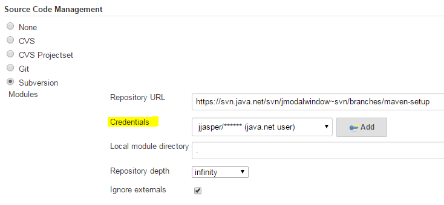
For Git authentication by Jenkins look at
_netrc setup in Section 8.1.3.1.1, “netrc” or select Jenkins → Manage Jenkins → Manage Credentials and Add Credentials → Username with password:
Scope: Global.
Username:
jenkins.Password:
passwordDescription:
apache proxy userand click .
JIRA Plugin for Jenkins and Jenkins Plugin for JIRA integrate Jenkins and Hudson/Jenkins CI Servers with JIRA to display builds in JIRA.
Download
the archive: jenkins-jira-plugin-1.4.5.hpi
[version 1.4.5].
Just drop the downloaded *.hpi or *.jpi file into the
P:\dev\data\ci\jenkins\plugins
directory and rename to
jenkins-jira-plugin.hpi. You will then need to
restart Jenkins (many containers let you do this without restarting
the container).
Next at the JIRA Admin GUI Add-ons http://freedumbytes.dev.net/jira/plugins/servlet/upm/marketplace/featured
Find new add-ons with Search the
Marketplace for jenkins and just
.
At the JIRA Admin GUI Add-ons http://freedumbytes.dev.net/jira/plugins/servlet/applinks/listApplicationLinks
:
http://freedumbytes.dev.net/jenkins. In
pop-up Configure Application URL click
to configure:
Application Name:
freedumbytes.dev.net Jenkins.Application Type: Jenkins and click .
this new Application Link freedumbytes.dev.net Jenkins to change:
Outgoing Authentication to enable Basic Access reusing the
jiraintegration user from the section Section 12.1.8.1, “Integration users” and click .
Next at the JIRA Admin GUI Add-ons http://freedumbytes.dev.net/jira/secure/admin/ConfigureJenkinsIntegration!default.jspa Jenkins Configuration select Actions to Auto enable new Jobs and enable the already listed jobs followed by Actions → Refresh Job List to Sync Jobs.
A butler is a domestic worker in a large household. A valet is a servants who serve as personal attendants to their employer.
Select Jenkins → Manage Jenkins → Manage Nodes to add:
New Node with:
Node name:
jeeves.As Permanent Agent and click .
Configure this new node as follows:
# of executors:
6(where a good value to start with would be the number of processors on your system).Remote root directory:
P:\dev\data\ci\jeeves.Labels:
windows.Usage: Use this node as mush as possible.
Launch method: Launch agent via Java Web Start.
Availability: Keep this slave online as much as possible and click .
Select Jenkins → Build Executor Status → jeeves to connect the slave to Jenkins using Launch
agent from browser on slave by clicking the orange
button. This will download the file
slave-agent.jnlp. To install the slave
jeeves run this file and supply proxy
credentials:
User name:
jjasper.Password:
passwordLabels:
windows.Leave Save this password in your password list unchecked and click → → → .
Note
Don't forget to create the slave folder first with
mkdir P:\dev\data\ci\jeeves.
Edit the generated id and name in
P:\dev\data\ci\jeeves\jenkins-slave.xml to insert
/tomcat :
<service>
<id>jenkinsslave-P__dev_data_ci_jeeves</id>
<name>Jenkins Slavefreedumbytes.dev.net Jeeves</name>
<description>
This service runs an agent for Jenkins automation server.
</description>
<executable>P:\dev\apps\prg\java-x64\jdk1.8.0_162\bin\java.exe</executable>
<arguments>
<!-- -Xrs see also Section 3.1.3.1, “Standard Edition Tools Reference” -->
-jar "%BASE%\slave.jar" -jnlpUrl
http://freedumbytes.dev.net/jenkins/computer/jeeves/slave-agent.jnlp
-secret …
</arguments>
<logmode>rotate</logmode>
<onfailure action="restart" />
</service>
To activate the changes reinstall the service with the following commands in an elevated command processor (see also Section 1.1.5, “Task Manager replacement” in case of “WMI.WmiException: ServiceMarkedForDeletion”):
cd /d P:\dev\data\ci\jeeves
jenkins-slave.exe stop
jenkins-slave.exe uninstall TODO before changes…
del *.log
jenkins-slave.exe install
jenkins-slave.exe start
services.msc
Important
In case of a new jdk installation use an elevated command prompt
just run net stop jeeves and net start
jeeves.
Note
The jdk upgrade for Jenkins master is handled when the upgrade is done for Tomcat.
Verify the installation and the JVM memory usage at http://freedumbytes.dev.net/jenkins/systemInfo and http://freedumbytes.dev.net/jenkins/computer/jeeves/systemInfo.
Next fix the following error in
P:\dev\data\ci\jeeves\jenkins-slave.err.log:
Failing to obtain http://freedumbytes.dev.net/jenkins/computer/jeeves/slave-agent.jnlp?encrypt=true
java.io.IOException: Failed to load …: 401 Unauthorized
at hudson.remoting.Launcher.parseJnlpArguments(Launcher.java:275)
at hudson.remoting.Launcher.run(Launcher.java:219)
at hudson.remoting.Launcher.main(Launcher.java:192)
Waiting 10 seconds before retry
Which is also displayed in
http://freedumbytes.dev.net/jenkins/computer/jeeves/ node page as
“Connection was broken” and
P:/dev/logs/httpserver/freedumbytes.dev.net-access.log:
[201605 01:11:16] "GET /jenkins/computer/jeeves/slave-agent.jnlp?encrypt=true HTTP/1.1" 401 381 "-" "Java/1.8.0_162"
Just allow anonymous access for the local area network by
editing
P:\dev\apps\httpserver\apache-conf\httpd-jenkins.conf:
<IfModule proxy_module>
<IfModule proxy_ajp_module>
…
<Location /jenkins>
Include ../apache-conf/httpd-freedumbytes-realm.conf
</Location>
<Location /jenkins/git/notifyCommit>
<RequireAll>
Include ../apache-conf/httpd-lan-access.conf
</RequireAll>
</Location>
<Location /jenkins/computer/jeeves/slave-agent.jnlp>
<RequireAll>
Include ../apache-conf/httpd-lan-access.conf
</RequireAll>
</Location>
</IfModule>
</IfModule>
After restarting jeeves fix the next error in
P:\dev\data\ci\jeeves\jenkins-slave.err.log:
May 07, 2016 1:25:28 AM hudson.remoting.jnlp.Main createEngine
INFO: Setting up slave: jeeves
May 07, 2016 1:25:28 AM hudson.remoting.jnlp.Main$CuiListener <init>
INFO: Jenkins agent is running in headless mode.
May 07, 2016 1:25:28 AM hudson.remoting.jnlp.Main$CuiListener status
INFO: Locating server among [http://freedumbytes.dev.net/jenkins/]
May 07, 2016 1:25:28 AM hudson.remoting.jnlp.Main$CuiListener error
SEVERE: http://freedumbytes.dev.net/jenkins/tcpSlaveAgentListener/ is invalid: 401 Unauthorized
java.lang.Exception: …/tcpSlaveAgentListener/ is invalid: 401 Unauthorized
at hudson.remoting.Engine.run(Engine.java:215)
See also
P:/dev/logs/httpserver/freedumbytes.dev.net-access.log:
[20160507 01:25:27] "GET …/computer/jeeves/slave-agent.jnlp?encrypt=true HTTP/1.1" 200 736 "-" "Java/1.8.0_162" [20160507 01:25:28] "GET …/tcpSlaveAgentListener/ HTTP/1.1" 401 381 "-" "Java/1.8.0_162"
Again allow anonymous access for the local area network by editing
P:\dev\apps\httpserver\apache-conf\httpd-jenkins.conf:
<IfModule proxy_module>
<IfModule proxy_ajp_module>
…
<Location /jenkins/computer/jeeves/slave-agent.jnlp>
<RequireAll>
Include ../apache-conf/httpd-lan-access.conf
</RequireAll>
</Location>
<Location /jenkins/tcpSlaveAgentListener>
<RequireAll>
Include ../apache-conf/httpd-lan-access.conf TODO disable to download jnlp
</RequireAll>
</Location>
</IfModule>
</IfModule>
Now after restarting jeeves check
P:\dev\data\ci\jeeves\jenkins-slave.err.log:
May 07, 2016 1:38:02 AM hudson.remoting.jnlp.Main createEngine INFO: Setting up slave: jeeves May 07, 2016 1:38:02 AM hudson.remoting.jnlp.Main$CuiListener <init> INFO: Jenkins agent is running in headless mode. May 07, 2016 1:38:02 AM hudson.remoting.jnlp.Main$CuiListener status INFO: Locating server among [http://freedumbytes.dev.net/jenkins/] May 07, 2016 1:38:02 AM hudson.remoting.jnlp.Main$CuiListener status INFO: Handshaking May 07, 2016 1:38:02 AM hudson.remoting.jnlp.Main$CuiListener status INFO: Connecting to freedumbytes.dev.net:49403 May 07, 2016 1:38:02 AM hudson.remoting.jnlp.Main$CuiListener status INFO: Trying protocol: JNLP2-connect May 07, 2016 1:38:02 AM hudson.remoting.jnlp.Main$CuiListener status INFO: Connected
See also
P:/dev/logs/httpserver/freedumbytes.dev.net-access.log:
[20160507 01:38:01] "GET …/computer/jeeves/slave-agent.jnlp?encrypt=true HTTP/1.1" 200 736 "-" "Java/1.8.0_162" [20160507 01:38:02] "GET …/tcpSlaveAgentListener/ HTTP/1.1" 200 12 "-" "Java/1.8.0_162"
Note
And access to slave-agnet-jnlp is still not possible without the secret code:
Optionally select Jenkins → Manage Jenkins → Manage Nodes to change:
master → Configure with:
# of executors:
2.Labels:
master.Usage: Only build jobs with label restrictions matching this node and click .
Historically, Jenkins master and slaves behaved as if they altogether form a single distributed process. This means a slave can ask a master to do just about anything within the confinement of the operating system, such as accessing files on the master or trigger other jobs on Jenkins. Should you use Slave To Master Access Control Jenkins → Manage Jenkins → Configure Global Security and check Enable Slave → Master Access Control.
For the same reason as Section 8.1.3.1, “Log On Windows user” launch the Service
Management Console with
services.msc. Right click on
freedumbytes.dev.net Jeeves and select
→ Log On to use This
account .\Tomcat. After password
conformation click and
restart the service.
Eclipse is an open source community whose projects are focused on building an open development platform comprised of extensible frameworks, tools and runtimes for building, deploying and managing software across the lifecycle.
Upgrade checklist:
Related products: Plugins installation & configuration guide.
References: -.
Integration configuration changes: Plugins Eclipse - installation guide
vm/javaagent lombok/eclipse.exe -initialize/osgi.instance.area.default, Eclipse - Configuration and Eclipse - encoding.
Eclipse Tutorials, Articles and plugins: EGit, JGit, Mylyn, Subclipse, M2Eclipse.
Git version control with Eclipse (EGit).
Unicode/UTF-8 in your Eclipse Java projects. ResourceBundle Editor plugin is for editing Java resource bundles. It lets you manage all localized .properties files in one screen. Some of its features include sorted keys, warning icons on missing keys/values, conversion to/from Unicode, hierarchical view of keys, and more. UTF-8 encoding and Spring message sources.
Download the
archive: eclipse-jee-mars-2-win32-x86_64.zip
[version 4.5.2].
Extract this .zip file to
P:\dev\apps\ide.
Now rename P:\dev\apps\ide\eclipse to P:\dev\apps\ide\eclipse-4.5.2.
Configure the vm
settings (and windows
processes) - in
P:\dev\apps\ide\eclipse-4.5.2\eclipse.ini:
-startup
…
--launcher.library
…
-product
org.eclipse.epp.package.jee.product
--launcher.defaultAction
openFile
--launcher.XXMaxPermSize
256M
-showsplash
org.eclipse.platform
--launcher.XXMaxPermSize
256m
--launcher.defaultAction
openFile
-vm
P:/dev/apps/prg/java-x64/jdk1.8.0_162/jre/bin/server/jvm.dll
--launcher.appendVmargs
-vmargs
-Dosgi.requiredJavaVersion=1.7
-Xms256m
-Xmx1024m
Note
Or when upgrading just run
p:\dev\apps\editor\winmerge\WinMergeU.exe
P:\dev\apps\ide\eclipse-4.5.2\eclipse.ini
P:\dev\apps\ide\eclipse-4.5.1.
Initialize the Eclipse configuration with
P:\dev\apps\ide\eclipse-4.5.2\eclipse.exe
-initialize.
Configure the user's area and the default workspace in
P:\dev\apps\ide\eclipse-4.5.2\configuration\config.ini:
osgi.instance.area.default=@user.home/workspaceC\:/workspace-4.5.2
For ease of use create a shortcut on the Quick Launch Toolbar by
dragging eclipse.exe from P:\dev\apps\ide\eclipse-4.5.2 onto it.
Click this shortcut to start Eclipse with this now default
Workspace at C:\workspace-4.5.2.
Tip
In case of a newer version of the Eclipse
IDE itself create copies of the prior one to for example
P:\dev\apps\ide\eclipse-4.5.2
and also its workspace to C:\workspace-4.5.2. Edit any shortcut
on the Quick Launch Toolbar according. Click this shortcut to start
Eclipse and switch to the new default
Workspace at C:\workspace-4.5.2.
Click on the Updates Available popup or:
Select → :
Check the ones that must be installed and click twice.
Choose I accept the terms of the license agreements after reading them and .
To complete the installation restart Eclipse.

Set the following Code Style preferences at → → Java → Code Style:
Select Clean Up and click for Active profile: to roll your own Profile name
freedumbytes.dev.net. those Clean Up settings aseclipse.codestyle.cleanup.xml.Select Formatter and click for Active profile: to roll your own Profile name
freedumbytes.dev.net. the Formatter settings aseclipse.codestyle.formatter.xml.Tip
To turn the formatter off and on use
@formatter:offand@formatter:on.Select Organize Imports and click for the company package
net.dev.freedumbytesnl.demon.shadowlandeclipse.importorder. And change/leave both the number of imports needed for * to99.
How to add static imports for code completion:
First verify at → → Java → Editor → Content Assist if the defaults are still checked for Add import instead of qualified name and Use static imports (only 1.5 or higher).
Second add the desired list of to → → Java → Editor → Content Assist → Favorites:
org.assertj.core.api.Assertions
org.hamcrest.MatcherAssert
org.hamcrest.Matchers
org.junit.Assert
org.mockito.Matchers
org.mockito.Mockito
By the way the shortcuts for formatting source and organizing imports are Ctrl+Shift+F and Ctrl+Shift+O.
Tip
To activate formatting and import organizing when the file is saved select → → Java → Editor → Save Actions and check Perform the selected actions on save for Format source code → Format edited lines and Organize imports.
Important
Unless you are going to use Lombok then
select Format source code → Format all lines (and just use aforementioned
@formatter) to avoid
“ArrayIndexOutOfBoundsException: -1” during
CleanUpPostSaveListener on Ctrl+S.
Caution
Do not run the Additional actions because it can be expensive and slow down the workbench and you might want to preview those changes before accepting them (see also Keep your code clean with Eclipse).
To use the same settings for the other editors select → and type filter text “indent”:
Editor for CSS, HTML and XML:
Line width
256.Indent using spaces.
Indentation size
2.
To disable auto folding at → → Java → Editor → Folding and uncheck all elements under Initially fold these elements.
Change code completion in → → Java → Editor → Content Assist to Completion overwrites.
Optionally select → and type filter text “typing” and uncheck Tab key adjusts the indentation of the current line for Editor for Java and JavaScript. Don't forget to the changes.
Create a shortcut to remove trailing whitespace (useful for
non-java files) at → → General → Keys with filter text trailing and
select and just click
Ctrl+Alt+Backspace. Shouldn't Java files automatically remove trailing
whitespace it is also possible to activate this at → → Java → Editor → Save Actions → Additional actions → Configure → Code Organizing → Remove trailing whitespace → All lines, but also see the caution mentioned above.
Set the following Perspective preferences:
Left click on the icon
 Open Perspective to add the
Open Perspective to add the
 Java shortcut and the
Team Synchronizing
shortcut.
Java shortcut and the
Team Synchronizing
shortcut.Right click on the icon
Java to no longer
.Optionally right click on the icon
 Java EE to
it.
Java EE to
it.
Use Ctrl+F8 to cycle through the perspectives.
Open the view  Package Explorer with Alt+Shift+Q, P and left click on the icon
local menu to make the following
changes:
Package Explorer with Alt+Shift+Q, P and left click on the icon
local menu to make the following
changes:
→ .
and check Libraries from external.
→ Working Sets.
Tip
The shortcut for the local menu is Ctrl+F10 when the view is active. This is also the shortcut for the ruler menu in editors.
Cycle through the views to  Outline using Ctrl+F7. This view can be kept closed (unless you are going to use Lombok)
because Ctrl+O shows the outline of the current source when needed.
And Ctrl+F3 shows the outline at the current cursor
position.
Outline using Ctrl+F7. This view can be kept closed (unless you are going to use Lombok)
because Ctrl+O shows the outline of the current source when needed.
And Ctrl+F3 shows the outline at the current cursor
position.
Tip
Instead of clicking through the view
Package Explorer just open the
resources with Ctrl+Shift+R or the java types with Ctrl+Shift+T. Now in the editor click Alt+Shift+W and select Package Explorer to locate it in
that view, should you be interested in the files at the same
location.
The view  Console can be opened with
Alt+Shift+Q, C.
Console can be opened with
Alt+Shift+Q, C.
Useful general editor shortcuts:
Use F12 to jump back to the last active editor from any view and Ctrl+F6 to cycle through the editors.
With Alt+Left and Alt+Right it is possible to move through the file history.
Goto line with Ctrl+L.
Search in files with Incremental Find Ctrl+J and typing the search text. Find next occurrence with Ctrl+K and the prior one with Ctrl+Shift+K.
Search in workspace with Ctrl+H.
Tip
Because the Java shortcut for finding references is easier to use (see also Java editor shortcuts below) the Search popup by unchecking Java Search, JavaScript Search, Plug-in Search and Remote Search (that option will still be available through the menu).
When working in Ctrl+M maximized mode and a search result is selected this resource is also opened in maximized mode. Simply switch back to the search view with Ctrl+F7. Use Delete to remove search results from the tree. Navigate to the prior search result with Ctrl+, and the next search result with Ctrl+..
Tip
To exclude unused working sets or projects in the workspace from search results and other views just or the complete working set in the view
Package Explorer.Note
When encountering the following error “An internal error occurred during: Items filtering. Class file name must end with .class” during search, close Eclipse:
Delete
<workspace>/.metadata/.plugins/org.eclipse.jdt.core/*.indexDelete
<workspace>/.metadata/.plugins/org.eclipse.jdt.core/savedIndexNames.txt
Goto declaration with F3.
Find references in workspace with Ctrl+Shift+G.
Find declarations in workspace with Ctrl+G.
Popup type hierarchy with Ctrl+T.
Change case to lower Ctrl+Shift+Y or upper Ctrl+Shift+X.
Spell checking is supported by Eclipse and when you see a squiggly mark place the cursor on the word and press Ctrl+1 to view the correction proposals.
Tip
Ctrl+Shift+L opens the shortcuts preference page.
Install the following plugins.
Note
Should a plugin Update Site only list an earlier version try the above described Eclipse upgrading option. This resulted in the latest version for BIRT (see also Section 15.1.5.8, “Memory Analyzer”).
It is also possible to search online at http://marketplace.eclipse.org/ and drag to install:
Project Lombok (features) to spice up your java by Reducing Boilerplate Code.
Download
the archive: lombok.jar [version 1.16.21].
Copy this .jar file to
P:\dev\apps\ide. Edit in
P:\dev\apps\ide\eclipse-4.5.2\eclipse.ini as
follows:
…
-vmargs
-Dosgi.requiredJavaVersion=1.7
-Xms256m
-Xmx1024m
-javaagent:P:/dev/apps/ide/lombok.jar
Verify installation with → which should list Lombok now also.
Tip
When using Lombok the getters and setters are no longer
available in the code. To be able to find references in the
workspace (Ctrl+Shift+G) you are going to need the
Outline view. To save space just
drag it next to the Task List tab.
EGit [version 4.3.0] is an Eclipse Team provider for the Git version control system. Git is a distributed SCM, which means every developer has a full copy of all history of every revision of the code, making queries against the history very fast and versatile.
JGit [version 4.3.0] is the Java implementation of Git. It is a library, that also can be used in your own applications. It also provides some sort of CLI operations. EGit on the other side is the Eclipse team provider plugin for Git, which uses JGit as Git implementation. Simplified you could say EGit is the UI part, and JGit the background part. JGit doesn't depend on EGit, but EGit does depend on JGit.
Install the plugin EGit in Eclipse:
Select → .
the Location
http://download.eclipse.org/egit/updates/with NameEGit P2 Repositoryand click .Select to Work with: EGit Update Site - http://download.eclipse.org/egit/updates/.
Select the following components:
Eclipse Git Team Provider [4.3.0]
Eclipse Git Team Provider - Task focused interface [4.3.0]
Command Line Interface for Java implementation of Git [4.3.0]
Java implementation of Git [4.3.0]
Java implementation of Git - optional Http support using Apache httpclient [4.3.0] and click twice.
Choose I accept the terms of the license agreements after reading them and .
To complete the installation restart Eclipse.
Important
Should the Commit Message in the Git Staging view not match with the curent Mylyn Task just copy its details:
after that paste the correct details:
Set the following preferences at → :
Select Team → Git and as Default Repository folder enter
C:\dev\projectsand click .
Subclipse [version 1.10.13] is an Eclipse Team Provider plug-in providing support for Subversion within the Eclipse IDE.
Install the plugin Subclipse in Eclipse:
Select → .
the Location
http://subclipse.tigris.org/update_1.10.x/with NameSubclipse 1.10.x Update Siteand click .Select to Work with: Subclipse 1.10.x Update Site - http://subclipse.tigris.org/update_1.10.x/.
Select the following components:
CollabNet Merge Client [4.1.0]
Subclipse (Required) [1.10.13]
Subclipse Integration for Mylyn 3.x (Optional) [3.0.0]
Subversion Client Adapter (Required) [1.10.3]
Subversion JavaHL Native Library Adapter [1.8.15]
Subversion Revision Graph [1.1.1]
SVNKit Library [1.8.12]
JNA Library [4.1.0]
SVNKit Client Adapter (Not required) [1.8.9] and click twice.
Choose I accept the terms of the license agreements after reading them and .
To complete the installation restart Eclipse.
Note
Optionally select → → Team → SVN → Usage Reporting to uncheck Allow the Subclipse team to receive anonymous usage statistics for this Eclipse installation.
Set the following preferences at → :
Select Team → SVN and as SVN Interface Client choose SVNKit (Pure Java) and click .
Mylyn [version 3.19.0] is a task-focused interface for Eclipse that reduces information overload and makes multi-tasking easy. It does this by making tasks a first class part of Eclipse, and integrating rich and offline editing for repositories such as Bugzilla, Trac, and JIRA. Once your tasks are integrated, Mylyn monitors your work activity to identify relevant information, and uses this task context to focus the user interface on the task-at-hand. This puts the information you need at your fingertips and improves productivity by reducing searching, scrolling, and navigation. By making task context explicit Mylyn also facilitates multitasking, planning, reusing past efforts, and sharing expertise.
Update the plugin Mylyn in Eclipse:
Select → .
the Location
http://download.eclipse.org/mylyn/releases/latestwith NameMylyn for Eclipseand click .Select to Work with: Mylyn for Eclipse - http://download.eclipse.org/mylyn/releases/latest.
Select the following components (uncheck Hide items that are already installed):
Mylyn Task List [3.19.0]
Mylyn Task-Focused Interface [3.19.0]
Mylyn WikiText [2.8.0]
Mylyn Builds Connector: Hudson/Jenkins [1.11.0]
Mylyn Context Connector: Eclipse IDE [3.19.0]
Mylyn Context Connector: Java Development [3.19.0]
Mylyn Context Connector: Plug-in Development [3.19.0]
Mylyn Context Connector: Team Support [3.19.0]
Mylyn Versions Connector: Subclipse [1.11.0]
Mylyn Versions Connector: Git [1.11.0] and click twice.
Choose I accept the terms of the license agreements after reading them and .
To complete the installation restart Eclipse.
For JIRA support:
Select → .
the Location
http://update.atlassian.com/atlassian-eclipse-plugin/rest/e3.7/with NameAtlassian Connector for Eclipseand click .Select to Work with: Atlassian Connector for Eclipse - http://update.atlassian.com/atlassian-eclipse-plugin/rest/e3.7/.
Select the following component:
Atlassian Connector for Eclipse [3.2.5] and click twice.
Choose I accept the terms of the license agreements after reading them and .
To complete the installation restart Eclipse.
Note
Optionally select → → Atlassian Connector → Usage Data to uncheck Enable monitoring and automatic submission.
Warning
We are discontinuing the support for Atlassian IDE Connectors (source and fork).
Set the following → → :
In Tasks define:
Change Week Start to Monday.
Enable Track time spent within Eclipse when a task is active.
Optionally set Stop time accumulation after
15minutes of inactivity.
In Team define Commit Comment Template:
${connector.task.prefix} ${task.key}: ${task.description} ${task.url}and click .
In Java perspective activate the
Mylyn views with → → or shortcut Alt+Shift+Q, Q and from
Mylyn select: Task List,
 Task Repositories and
Builds.
Task Repositories and
Builds.
Open the Task List view with Alt+Shift+Q, K (see also the User
Guide for shortcuts and a UI Legend, which is also
available in the local menu →  Show UI Legend).
Show UI Legend).
In the Task Repositories view open
the local menu with Ctrl+F10 to  Add Task Repository…. Select
JIRA and click
:
Add Task Repository…. Select
JIRA and click
:
Server:
http://freedumbytes.dev.net/jira.Label:
freedumbytes.dev.net JIRA.User ID:
jjasper.Password:
passwordOpen Additional Settings:
Subtasks: Show linked tasks.
Advanced Configuration:
Date Picker Format:
yyyy-MM-dd.Date Time Picker Format:
yyyy-MM-dd HH:mm.
Open Task Editor Settings: Confluence (default).
and click and do not create a query yet.
Add queries to the freedumbytes.dev.net JIRA task repository by right clicking on it and selecting . Select Create query using form and click :
Query Title:
freedumbytes.dev.net JIRA issues.Assigned To: Current User and click .
Note
The other issues, that are viewed in Eclipse, will show up in the category Uncategorized.
In the view select
Add Build Server…. Select
Hudson (supports Jenkins) and
click :
Server:
http://freedumbytes.dev.net/jenkins.Label:
freedumbytes.dev.net Jenkins builds.Keep: Anonymous checked.
Open Http Authentication and check Enable Http Authentication:
User ID:
jjasper.Password:
password
and click for Build Plans.
Click in Build Plans and click .
Set the following → :
In Mylyn → Builds check Automatically refresh builds and click .
Maven integration [version 1.6.2] for Eclipse provides tight integration for Maven into the IDE.
Install the plugin M2Eclipse in Eclipse:
Select → .
the Location
http://download.eclipse.org/technology/m2e/releases/with Namem2e Update Siteand click .Select to Work with: m2e Update Site - http://download.eclipse.org/technology/m2e/releases/.
Type filter text:
m2e.Select the following components:
m2e - Maven Integration for Eclipse (includes Incubating components) [1.7.0]
m2e - slf4j over logback logging (Optional) [1.7.0] and click twice.
Choose I accept the terms of the license agreements after reading them and .
To complete the installation restart Eclipse.
Important
If you get the following JDK warning: “The Maven Integration requires that Eclipse be running in a JDK, because a number of Maven core plugins are using jars from the JDK. Please make sure the -vm option in eclipse.ini is pointing to a JDK and verify that Installed JREs are also using JDK installs.”
Select → → Java → Installed JREs → Add… a Standard VM and
set the
JRE home with
to P:\dev\apps\prg\java-x64\jdk1.8.0_162
and click . Now check
this jdk1.8.0_162 and
the old jre1.x.x_xx and apply with (see
also Section 15.1.2, “Eclipse installation guide”).
Caution
After upgrading maven-jar-plugin to 3.x Eclipse reports the following error “org.apache.maven.archiver.MavenArchiver.getManifest(org.apache.maven.project.MavenProject, org.apache.maven.archiver.MavenArchiveConfiguration)”
Select → .
the Location
https://otto.takari.io/content/sites/m2e.extras/m2eclipse-mavenarchiver/0.17.2/N/LATEST/and click .Select the following components:
m2e connector for mavenarchiver pom properties [0.17.2] and click twice.
Set the following preferences → :
In Team → Ignored Resources → for
target,.settings,.classpathand.projectand click .Note
As an alternative see also Section 11.1.2.5, “Ignores template” for Git and Section 11.2.3, “Global ignores” for Subversion.
In Maven → Installations:
Add… the latest Maven installation :
P:\dev\apps\build\apache-maven-3.5.2and click . Check this new Maven installation and click .
Next in Maven → User Settings point to the corresponding Maven settings:
Global Settings:
P:\dev\apps\build\apache-maven-3.5.2\conf\settings.xml.
In Maven:
Check Hide folders of physically nested modules (experimental) when using a git project (see also the note below).
Important
Using the option Hide folders of physically nested modules (experimental) can lead to merge conflicts messages in Team Synchronizing.
Note
As an alternative right-click on the submodule and select or Alt+Enter to set the attribute Derived. Alas the Git Plugin will then mark the submodule as ignored in
.gitignore. By the way the M2E plugin should set the derived flag on modules folders as well as on output folders, such as target/classes, on project import. But there seems to be a bug because the flag ain't set for the module folders.Tip
When running
mvn cleanthe derived flag is reset on the target folder. Instead of setting it for every single target folder, right-click on the Working Set, select → and click or use Alt+F5.In Maven → User Interface:
Optionally check and click .
For configuration of the lifecycle mappings see Section 16.1.13, “M2Eclipse lifecycle configuration”.
Occasionally Eclipse build fails with the error “<path>/target/m2e-wtp/web-resources/META-INF/MANIFEST.MF (No such file or directory)”. Change the preferences at → → → → and uncheck Maven Archiver generates files under the build directory (see also M2E-WTP FAQ).
e(fx)clipse [version 2.3.0] provides JavaFX tooling for the Eclipse IDE. Read more about the latest developments on BestSolution's specific blog.
Install the plugin e(fx)clipse in Eclipse:
Select → .
the Location
http://download.eclipse.org/efxclipse/updates-released/2.3.0/site/with Namee(fx)clipse Update Siteand click .Select to Work with: e(fx)clipse Update Site - http://download.eclipse.org/efxclipse/updates-released/2.3.0/site/.
Select the following components:
e(fx)clipse - IDE [2.3.0] and click twice.
Choose I accept the terms of the license agreements after reading them and .
To complete the installation restart Eclipse.
Note
This also should take care of “Access restriction: … is not API (restriction on required library '…\jre\lib\ext\jfxrt.jar')” messages.
JD-Eclipse [version 1.0.0-RC2]allows you to display all the Java sources during your debugging process, even if you do not have them all.
Install the plugin JD-Eclipse in Eclipse:
Select → .
the Location
http://jd.benow.ca/jd-eclipse/update/with NameJD-Eclipse Update Siteand click .Note
For installation of a more recent version see also GitHub.
Select to Work with: JD-Eclipse Update Site - http://jd.benow.ca/jd-eclipse/update/.
Select the following components:
JD-Eclipse Plug-in [0.1.5] and click twice.
Choose I accept the terms of the license agreements after reading them and .
To complete the installation restart Eclipse.
BIRT [version 4.5.0] is an open source technology platform used to create data visualizations and reports that can be embedded into rich client and web applications.
Install the plugin BIRT in Eclipse to be able to use the optional Memory Analyzer Charts:
Select → .
the Location
http://download.eclipse.org/birt/update-site/4.4/with NameBIRT Update Siteand click .Select to Work with: BIRT Update Site - http://download.eclipse.org/birt/update-site/4.4/.
Select the following components:
BIRT Framework [4.4.2] and click twice.
Choose I accept the terms of the license agreements after reading them and .
To complete the installation restart Eclipse.
Memory Analyzer (MAT) [version 1.5.0] is a fast and feature-rich Java heap analyzer that helps you find memory leaks and reduce memory consumption.
Install the plugin Memory Analyzer in Eclipse:
Select → .
the Location
http://download.eclipse.org/mat/1.5/update-site/with NameMAT Update Siteand click .Select to Work with: MAT Update Site - http://download.eclipse.org/mat/1.4/update-site/.
Select the following components:
Memory Analyzer [1.5.0]
Memory Analyzer (Charts) [optional] [1.5.0] and click twice.
Choose I accept the terms of the license agreements after reading them and .
To complete the installation restart Eclipse.
Select → → → → to analyze .hprof files.
VisualVM is a visual
tool integrating several commandline JDK tools and lightweight
profiling capabilities. Designed for both production and development
time use, it further enhances the capability of monitoring and
performance analysis for the Java SE platform. It is supplied with
the JDK and can be run from the commandline with
jvisualvm and used to create for example Thread
and Heap dumps.
Or run an Java applications with the following options:
-XX:+HeapDumpOnOutOfMemoryErrorto enable the JVM to dump the Java heap in HPROF binary format (.hproffile) when anOutOfMemoryErrorerror occurs.-XX:HeapDumpPath=C:\dev\projectsto specify the path and file name of the HPROF dump file.
EclEmma [version 2.3.3] is a free Java code coverage tool for Eclipse.
Install the plugin EclEmma in Eclipse:
Select → .
the Location
http://update.eclemma.org/with NameEclEmmaand click .Select to Work with: EclEmma - http://update.eclemma.org/.
Select the following components:
EclEmma Java Code Coverage [2.3.3] and click twice.
Choose I accept the terms of the license agreements after reading them and .
To complete the installation restart Eclipse.
Tip
Instead of using the shortcut Alt+Shift+X, T to → use the shortcut Alt+Shift+E, T to → . After its first usage a Coverage view
appears in the tabs at the bottom of the screen. Optionally just
drag it next to the Task List and
Outline tabs.
 SonarLint
[version 2.0.2]
is an Eclipse plugin that provides on-the-fly feedback to developers
on new bugs and quality issues injected into Java, JavaScript and
PHP code.
SonarLint
[version 2.0.2]
is an Eclipse plugin that provides on-the-fly feedback to developers
on new bugs and quality issues injected into Java, JavaScript and
PHP code.
Install the plugin SonarLint in Eclipse:
Select → .
the Location
http://eclipse.sonarlint.org/with NameSonarLint for Eclipse Update Siteand click .Select to Work with: SonarLint for Eclipse Update Site - http://eclipse.sonarlint.org/.
Select the following components:
SonarLint for Eclipse [2.0.2].
SonarLint for Eclipse Java Configuration Helper [2.0.2] and click twice.
Choose I accept the terms of the license agreements after reading them and .
To complete the installation restart Eclipse.
In Java perspective configure the
connection to SonarQube with → → or shortcut Alt+Shift+Q, Q and from
SonarLint select:
 SonarQube Servers.
SonarQube Servers.
In the  SonarQube Servers view create
the → with:
SonarQube Servers view create
the → with:
Server URL:
http://freedumbytes.dev.net/sonarqube.Server Label:
freedumbytes.dev.net SonarQube.Username / Token:
sonarlint(see also Section 17.2.4.3, “Users”).Password:
password
Note
See also Section 17.2.5, “Apache configuration” about allowing anonymous access to SonarQube for SonarLint because it uses the /api to get the information:
"GET /api/system/status HTTP/1.1" 200 53 "-" "SonarLint Eclipse 2.0.2.20160427-0800-RELEASE"
"GET /api/plugins/installed HTTP/1.1" 200 2155 "-" "SonarLint Eclipse 2.0.2.20160427-0800-RELEASE"
"GET /api/authentication/validate?format=json HTTP/1.1" 200 14 "-" "SonarLint Eclipse 2.0.2.20160427-0800-RELEASE"Now bind one or more Eclipse project(s) in a Working Set to their remote SonarQube pair. Right click on project(s) and select → → and click .
It is possible to filter completed tasks with .
Important
When you didn't save passwords in the Repository Settings
you will see the warning icon synchronization failed in front
of the related queries. In that case just double click on the
repository name in the Task Repositories view,
reenter the required passwords, and click
. After that it should
be possible to with the repository
in the Task List view.
New tasks/issues can now be created in Eclipse by clicking
 New Task,
or Alt+Shift+N, T (or creating one directly from
events in the view with
):
New Task,
or Alt+Shift+N, T (or creating one directly from
events in the view with
):
Selecting the appropriate repository and click .
Select the product after when it isn't already there and click .
After entering the issue click .
Tip
If you get the following error: “Unable to submit at
this time. Check connectivity and retry.” when the
connection is valid, try to reproduce the error using the
option.
For example when running Bugzilla without an SMTP server
configured this causes the above mentioned error. In the Web
Browser you will see the following error: “There was an
error sending mail from
'bugzilla.noreply@company.org' to
'test-user@company.org':Couldn't
connect to localhost”. In this case make sure that all
users have Bugmail Disabled.
If you notice that the changes did make
it in the issue tracker open the again. Click
 Synchronize Incoming Changes to
fetch them and then delete the now obsolete local changes with
.
Synchronize Incoming Changes to
fetch them and then delete the now obsolete local changes with
.
The following shortcuts are available for tasks:
Ctrl+F12: Open task dialog.
Ctrl+Shift+F12: Open repository task dialog to find tasks not available on the Task List view. Then drag and drop this Issue or Bug onto the Task List if necessary.
Ctrl+F9: Activate task dialog.
Ctrl+Shift+F9: Deactivate current task.
Important
It is possible to hyperlink other task in comments but for these hyperlinks to be useful also for the issue trackers themselves use only the following formats:
Bugzilla:
bug 1orbug #2.JIRA: the project key followed by issue number, for example:
JMW-1.
These same entries can be used in comments in java and resource files. To activate hyperlinking in those files associate the appropriate Task Repository by right clicking on the project and open → Task Repository and selecting the appropriate one.
When you first activate a task you will notice that the
Package Explorer view is empty in
 Focus on Active Task mode. It is
possible to drill down from the Working Set or
any other node to the interesting bits using Alt+click or the plus icon displayed behind the node to
Show Filtered Children. Use
Ctrl+click to select multiple interesting nodes. When finished
marking interesting nodes click (without Ctrl) on
whitespace or an already marked node to filter the uninteresting
nodes again. Type Ctrl+Alt+Shift+Up to
Focus on Active Task mode. It is
possible to drill down from the Working Set or
any other node to the interesting bits using Alt+click or the plus icon displayed behind the node to
Show Filtered Children. Use
Ctrl+click to select multiple interesting nodes. When finished
marking interesting nodes click (without Ctrl) on
whitespace or an already marked node to filter the uninteresting
nodes again. Type Ctrl+Alt+Shift+Up to  Mark as Landmark an element in the
resource tree. Type Ctrl+Alt+Shift+Down to
Mark as Landmark an element in the
resource tree. Type Ctrl+Alt+Shift+Down to  Remove from Context the selected
node.
Remove from Context the selected
node.
Note
Closing a file will make its node uninteresting immediately (see also → → Mylyn → Context → Remove file from context when editor is closed).
Tip
Once the task is finished attach the current context to it. This way it is possible to restore the last context should the task (re)enter someone's Task List. Just right click on the task and select → Retrieve… to do so.
Should the code require bugfixing and a resource needs to be changed in the bugfix as well as a new feature being worked on one might consider to create a patch for the new feature and revert the current changes.
Open the Team Synchronizing perspective and
in the Synchronize view right click on
the Change Set for the conflicting new feature.
Select to
open the Changes pane in the
 Show Change Sets mode. Select the
Save to clipboard setting and
click .
Show Change Sets mode. Select the
Save to clipboard setting and
click .
Right click on the Change Set for the
conflicting new feature again and select
Open Corresponding Task. Open the
 Attachments, click
Attachments, click
 Attach…, with
Clipboard setting and click
. Check
Patch and enter a
Description of
Attach…, with
Clipboard setting and click
. Check
Patch and enter a
Description of backup
patch and click
(or
to verify what you are
going to save first).
Finally right click on the Change Set for the conflicting new feature to all the changed resources.
Once the bugfix is commited reactive the new feature with
Ctrl+F9 in the activate task dialog and go to the task itself
with Ctrl+F12. Open the  Attachments, select the attachment
with your Description of
Attachments, select the attachment
with your Description of backup
patch by double clicking on it. The patch will be opened
in the Eclipse Web Browser. First type Shift+F10 and then type Shift+F10 again and select
. Now in the
Package Explorer view right click
on a project node and select → from the Clipboard with
→ . In case of conflicts you might need to play with or
the
Maximum fuzz factor and
Generate a .rej file for unmerged hunks next to
the problem resource to manually apply some of the
changes.
Important
Make sure that formatting changes aren't a big part of the patch (see also Tip on Eclipse Save Actions).
- 16.1. Setup base components
- 16.1.1. Team Synchronizing Git
- 16.1.2. Project information
- 16.1.3. Environment
- 16.1.4. Site
- 16.1.5. Plugin Versions
- 16.1.6. Deployment
- 16.1.7. Java setup
- 16.1.8. Continuous integration Jenkins vs GitLaB CI (see gitlab-ci.png) TODO
- 16.1.9. Release
- 16.1.10. Versions
- 16.1.11. Branch
- 16.1.12. Grouping Dependencies
- 16.1.13. M2Eclipse lifecycle configuration
- 16.1.14. Application Integration overview
Lets setup a base structure, for Maven projects to come, with the following JIRA project:
Maven Setup [MVNSTP]: Maven support components (see also repository https://gitlab.com/freedumbytes/setup and site https://freedumbytes.gitlab.io/setup).
With the following components:
setup: Setup the site, license and plugin configuration.
java: Java Project Object Model: profile, build and reporting settings.
Start a new bare Git repository maven-setup by
calling /p/dev/apps/windows/batch/git-create-repo.sh
/p/dev/data/repo/git maven-setup.git "Maven support components"
-jenkinsHook in  Git
Bash.
Git
Bash.
Clone this remote repository with the following command
git-clone jjasper
maven-setup.
Start by adding the configuration of the Ignores template
.gitignore and the Attributes template
.gitattributes.
Create the minimal POM in
C:\dev\projects\maven-setup\pom.xml:
+<?xml version="1.0" encoding="UTF-8"?>
+
+<project xmlns="http://maven.apache.org/POM/4.0.0"
+ xmlns:xsi="http://www.w3.org/2001/XMLSchema-instance"
+ xsi:schemaLocation="http://maven.apache.org/POM/4.0.0
+ https://maven.apache.org/xsd/maven-4.0.0.xsd">
+ <modelVersion>4.0.0</modelVersion>
+
+ <groupId>nl.demon.shadowland.freedumbytes.maven.config</groupId>
+ <artifactId>setup</artifactId>
+ <version>4.3</version>
+ <packaging>pom</packaging>
+</project>
Important
For the release procedure the version should end with
-SNAPSHOT, but it is left out in this
document.
In Eclipse create a Working Set Maven Setup
and import this Maven Setup project into it with File → Import… → Maven → Existing Maven Projects from Root directory
C:\dev\projects\maven-setup and click
.
Note
To exclude the target
directory from search actions and the like, right click on it and
select → Derived.
Tip
When running mvn clean the derived flag is
reset on the target folder. Instead of setting it for every single
target folder, right-click on the Working Set, select → and click or use Alt+F5.
Right-click on the Working Set Maven
Setup and select → → → → and click .
Open the Team Synchronizing perspective and
select Synchronize… → Git and click
to synchronize with the  Destination
refs/heads/master for the
Destination
refs/heads/master for the
 maven-setup [master] and
Include local uncommited changes in
comparison and click
.
maven-setup [master] and
Include local uncommited changes in
comparison and click
.
Other available options are Pull and
 Push.
Push.
Supply the project information in
C:\dev\projects\maven-setup\pom.xml:
<artifactId>setup</artifactId>
<version>4.3</version>
<packaging>pom</packaging>
+
+ <name>${organizationName} Maven Setup</name>
+ <description>Setup the site, license and plugin configuration.</description>
+ <url>${projectRoot}</url>
+ <inceptionYear>2010</inceptionYear>
+ <licenses>
+ <license>
<!-- see also Choose an open source license -->
+ <name>Apache License, Version 2.0</name>
+ <url>https://www.apache.org/licenses/LICENSE-2.0.html</url>
+ <distribution>repo</distribution>
+ </license>
+ </licenses>
+ <organization>
+ <name>${organizationName}</name>
+ <url>${organizationHost}</url>
+ </organization>
+ <developers>
+ <developer>
+ <id>jenejasper</id>
+ <name>Jene Jasper</name>
+ <email>jene.jasper@shadowland.demon.nl</email>
+ <organization>${organizationName}</organization>
+ <organizationUrl>${organizationHost}</organizationUrl>
+ <roles>
+ <role>developer</role>
+ </roles>
+ <timezone>+1</timezone>
+ <properties>
+ <picUrl>${mavenHost}/setup/images/avatar/jenejasper.png</picUrl>
+ </properties>
+ </developer>
+ </developers>
+
+ <contributors />
+
+ <mailingLists />
+
+ <properties>
+ <devHost>http://freedumbytes.dev.net</devHost>
+ <homeHost>http://www.shadowland.demon.nl</homeHost>
+ <bitbucketHost>https://freedumbytes.bitbucket.io</bitbucketHost>
+ <githubHost>https://freedumbytes.github.io</githubHost>
+ <gitlabHost>https://freedumbytes.gitlab.io</gitlabHost>
+
+ <mavenHost>${devHost}/mvn-sites</mavenHost>
+ <projectRoot>${mavenHost}/setup</projectRoot>
+ <organizationName>Free Dumb Bytes</organizationName>
+ <organizationHost>${gitlabHost}</organizationHost>
+ </properties>
</project>
Note
All patch snippets are split into logical blocks and non essential lines are removed for better page breaks in the generated pdf and the html print out.
Define the Continuous Integration build system, the Issue
Tracker system and the Version Control System management in
C:\dev\projects\maven-setup\pom.xml:
<mailingLists />
+
+ <scm>
+ <connection>${sourceConnection}</connection>
+ <developerConnection>${sourceDevConnection}</developerConnection>
+ <url>${sourceWebRoot}</url>
+ <tag>HEAD</tag>
+ </scm>
+ <ciManagement>
+ <system>${ciSystem}</system>
+ <url>${ciWebRoot}</url>
+ </ciManagement>
+ <issueManagement>
+ <system>${issueSystem}</system>
+ <url>${issueWebRoot}</url>
+ </issueManagement>
<properties>
<!-- Define hosting servers -->
<devHost>http://freedumbytes.dev.net</devHost>
<homeHost>http://www.shadowland.demon.nl</homeHost>
<bitbucketHost>https://freedumbytes.bitbucket.io</bitbucketHost>
<githubHost>https://freedumbytes.github.io</githubHost>
<gitlabHost>https://freedumbytes.gitlab.io</gitlabHost>
+ <ossrhHost>https://oss.sonatype.org</ossrhHost>
+ <sonarCloudHost>https://sonarcloud.io</sonarCloudHost>
+
<!-- Define (open) source repos -->
+ <gitRepo>${devHost}/git-repo</gitRepo>
+ <bitbucketRepo>https://bitbucket.org/freedumbytes</bitbucketRepo>
+ <githubRepo>https://github.com/freedumbytes</githubRepo>
+ <gitlabRepo>https://gitlab.com/freedumbytes</gitlabRepo>
+ <gitlabRepoSSH>git@gitlab.com:freedumbytes</gitlabRepoSSH>
+ <nexusRepo>${devHost}/nexus/#nexus-search;quick~nl.demon.shadowland</nexusRepo>
+ <ossrhRepo>${ossrhHost}/#nexus-search;quick~nl.demon.shadowland</ossrhRepo>
+ <sonarRepo>${devHost}/sonarqube</sonarRepo>
+ <sonarCloudRepo>${sonarCloudHost}/organizations/freedumbytes</sonarCloudRepo>
+
<!-- Define LAN hosting servers -->
+ <apacheHost>${devHost}/manual</apacheHost>
+ <tomcatHost>${devHost}/tomcat</tomcatHost>
+ <payaraHost>${devHost}/payara</payaraHost>
+
<!-- Define LAN only tooling -->
+ <fisheyeHost>${devHost}/fisheye</fisheyeHost>
+ <jiraHost>${devHost}/jira</jiraHost>
+ <jenkinsHost>${devHost}/jenkins</jenkinsHost>
<!-- Define POM information properties -->
<!-- These 12 properties will be overwritten by the openSource profile -->
<mavenHost>${devHost}/mvn-sites</mavenHost>
<projectRoot>${mavenHost}/setup</projectRoot>
<organizationHost>${gitlabHost}</organizationHost>
+
+ <nexusHost>${devHost}/nexus</nexusHost>
+ <sonarHost>${devHost}/sonarqube</sonarHost>
+
+ <sourceConnection>scm:git:${gitlabRepo}/setup.git</sourceConnection>
+ <sourceDevConnection>scm:git:${gitlabRepoSSH}/setup.git</sourceDevConnection>
+ <sourceWebRoot>${fisheyeHost}/browse/setup</sourceWebRoot>
+
+ <ciSystem>Jenkins</ciSystem>
+ <ciWebRoot>${jenkinsHost}/job/setup</ciWebRoot>
+
+ <issueSystem>JIRA</issueSystem>
+ <issueWebRoot>${jiraHost}/projects/MVNSTP</issueWebRoot>
</properties>
Note
Above settings use local tools for source, ci, issue and artifacts manager by default. To overwrite those settings with open source tools GitLab (CI) and Sonatype OSS Repository Hosting activate the following profile openSource.
+ <profiles>
+ <profile>
+ <id>openSource</id>
+
+ <properties>
+ <mavenHost>${gitlabHost}</mavenHost>
+ <projectRoot>${gitlabHost}/setup</projectRoot>
+ <organizationHost>${gitlabHost}</organizationHost>
+
+ <nexusHost>${ossrhHost}</nexusHost>
+ <sonarHost>${sonarCloudHost}</sonarHost>
+
+ <sourceConnection>scm:git:${gitlabRepo}/setup.git</sourceConnection>
+ <sourceDevConnection>scm:git:${gitlabRepoSSH}/setup.git</sourceDevConnection>
+ <sourceWebRoot>${gitlabRepo}/setup/tree/master</sourceWebRoot>
+
+ <ciSystem>GitLab CI</ciSystem>
+ <ciWebRoot>${gitlabRepo}/setup/pipelines</ciWebRoot>
+
+ <issueSystem>GitLab</issueSystem>
+ <issueWebRoot>${gitlabRepo}/setup/issues</issueWebRoot>
+
+ <maven.source.attach>true</maven.source.attach>
+ </properties>
+ </profile>
+ </profiles>
Tip
Should any of the hosts change and a project could not
upgrade to the latest Maven Setup parent it now is possible to
overwrite it in the Maven configuration file
P:\dev\apps\build\apache-maven-3.5.2\conf\settings.xml:
<profiles>
…
+ <profile>
+ <id>hosts</id>
+ <activation>
+ <activeByDefault>true</activeByDefault>
+ </activation>
+ <properties>
+ <gitRepo>http://freedumbytes.dev.net/git</gitRepo>
+ </properties>
+ </profile>
</profiles>
Note
It is even possible to overwrite that settings from the
command line with the option
-DgitRepo=http://freedumbytes.dev.net/scm/git.
The Site
Plugin is used to generate a site for the project. The
generated site also includes the project's reports that are configured
in the <reporting/> section of the POM.
Setup the initial site
descriptor in
C:\dev\projects\maven-setup\src\site\site.xml:
+<?xml version="1.0" encoding="UTF-8"?>
+
+<project xmlns="http://maven.apache.org/DECORATION/1.8.0"
+ xmlns:xsi="http://www.w3.org/2001/XMLSchema-instance"
+ xsi:schemaLocation="http://maven.apache.org/DECORATION/1.8.0
+ https://maven.apache.org/xsd/decoration-1.8.0.xsd"
+ combine.self="override">
+ <bannerLeft>
+ <name>${this.organizationName}</name>
+ <href>${this.gitlabHost}</href>
+ </bannerLeft>
+
+ <publishDate position="left" format="yyyy-MM-dd HH:mm:ss z" />
+ <version position="right" />
+ <body>
+ <menu name="${this.organizationName}" inherit="top">
+ <item name="Home" href="${this.gitlabHost}" />
+ <item name="Development Production Line" href="${this.gitlabHost}/dpl/html/complete-manual.html" />
+ <item name="Maven" href="${this.mavenHost}" />
+ <item name="Git" href="${this.gitRepo}" />
+ <item name="Bitbucket.org" href="${this.bitbucketRepo}" />
+ <item name="GitHub.com" href="${this.githubRepo}" />
+ <item name="GitLab.com" href="${this.gitlabRepo}" />
+ <item name="Shadowland.demon.nl" href="${this.homeHost}" />
+ <item name="FishEye" href="${this.fisheyeHost}" />
+ <item name="JIRA" href="${this.jiraHost}" />
+ <item name="Jenkins" href="${this.jenkinsHost}" />
+ <item name="Nexus" href="${this.nexusRepo}" />
+ <item name="OSS.Sonatype.org" href="${this.ossrhRepo}" />
+ <item name="SonarQube" href="${this.sonarRepo}" />
+ <item name="SonarCloud.io" href="${this.sonarCloudRepo}" />
+ <item name="HTTP Server" href="${this.apacheHost}" />
+ <item name="Tomcat" href="${this.tomcatHost}" />
+ <item name="Payara" href="${this.payaraHost}" />
+ </menu>
+ <menu inherit="bottom" ref="parent" />
+ <menu inherit="bottom" ref="modules" />
+ <menu inherit="bottom" ref="reports" />
+ </body>
+</project>
Because the LAN only tooling links will work for the locally
hosted Maven sites only, optionally hide them with some Javascript
C:\dev\projects\maven-setup\src\site\resources\js\hide-lan-links.js:
TODO
+(function($) {
+ $(window).on('load', function () {
+ deactivateLANOnlyLinks();
+ });
+}(jQuery));
+
+function deactivateLANOnlyLinks() {
+ var hostname = window.location.hostname;
+
+ if (hostname=="freedumbytes.dev.net") { TODO !=
+ $('.nav>li>a[href*="freedumbytes.dev.net"]').css({"display": "none"});
+ }
+}
Prepare Javascript activation in site footer
C:\dev\projects\maven-setup\src\site\site.xml
(see also Section 16.1.6.4, “Reuse site descriptor”): TODO
<menu inherit="bottom" ref="reports" />
+
+ <footer>
+ <![CDATA[<script src="${projectRoot}/js/hide-lan-links.js" />]]>
+ </footer>
</body>
</project>
Important
Now the LAN only tooling links will be removed from the Open Source site at a later stage when jQuery is also available. TODO
Setup the Project
Info Reports in
C:\dev\projects\maven-setup\pom.xml:
<properties>
…
+
+ <mavenProjectInfoReportsPluginVersion>2.9</mavenProjectInfoReportsPluginVersion>
+
+ <dependency.details.enabled>false</dependency.details.enabled>
+ <dependency.locations.enabled>false</dependency.locations.enabled>
+ <licenseLinkOnly>true</licenseLinkOnly>
</properties>
<profiles>
…
<profiles>
+
+ <reporting>
+ <plugins>
+ <plugin>
+ <groupId>org.apache.maven.plugins</groupId>
+ <artifactId>maven-project-info-reports-plugin</artifactId>
+ <version>${mavenProjectInfoReportsPluginVersion}</version>
+ <configuration>
+ <dependencyDetailsEnabled>${dependency.details.enabled}</dependencyDetailsEnabled>
+ <dependencyLocationsEnabled>>${dependency.locations.enabled}</dependencyLocationsEnabled>
+ <linkOnly>${licenseLinkOnly}</linkOnly>
+ </configuration>
+ <reportSets>
+ <reportSet>
+ <reports>
+ <report>index</report>
+ <report>summary</report>
+ <report>license</report>
+ <report>project-team</report>
+ <report>modules</report>
+ <report>scm</report>
+ <report>issue-tracking</report>
+ <report>cim</report>
+ <report>distribution-management</report>
+ <report>dependency-info</report>
+ <report>dependencies</report>
+ <report>dependency-management</report>
+ <report>dependency-convergence</report>
+ <report>plugins</report>
+ <report>plugin-management</report>
+ <report>mailing-list</report>
+ </reports>
+ </reportSet>
+ </reportSets>
+ </plugin>
+ </plugins>
+ </reporting>
</project>
Important
When using Nexus disable the generation of the repository
locations in the maven-project-info-reports-plugin
<configuration/> of the
<reporting/> section with
<dependencyLocationEnabled/> set to
false (see also issue MPIR-137).
This is also a performance boost.
Verify those settings with mvn site in your
browser at file:///C:/dev/projects/maven-setup/target/site/index.html.
The Apache Maven Fluido Skin is an Apache Maven site skin built on top of Twitter's Bootstrap.
To switch from the Maven Default
Skin to the Apache Maven Fluido Skin edit
C:\dev\projects\maven-setup\src\site\site.xml:
<publishDate position="left" format="yyyy-MM-dd HH:mm:ss z" />
<version position="right" />
+
+ <skin>
+ <groupId>${skinGroupId}</groupId>
+ <artifactId>${skinArtifactId}</artifactId>
+ <version>${skinVersion}</version>
+ </skin>
+
+ <custom>
+ <fluidoSkin>
+ <topBarEnabled>true</topBarEnabled>
+ <navBarStyle>navbar-inverse</navBarStyle>
+
+ <sideBarEnabled>true</sideBarEnabled>
+ <leftColumnClass>span2</leftColumnClass>
+ <bodyColumnClass>span10</bodyColumnClass>
+
+ <sourceLineNumbersEnabled>true</sourceLineNumbersEnabled>
+ <copyrightClass>pull-right</copyrightClass>
+ </fluidoSkin>
+ </custom>
<body>
<menu name="${this.organizationName}" inherit="top">
Supply the skin settings in
C:\dev\projects\maven-setup\pom.xml:
<properties>
…
+
+ <skinGroupId>org.apache.maven.skins</skinGroupId>
+ <skinArtifactId>maven-fluido-skin</skinArtifactId>
+ <skinVersion>${mavenFluidoSkinVersion}</skinVersion>
+
+ <mavenFluidoSkinVersion>1.7</mavenFluidoSkinVersion>
+ <mavenSitePluginVersion>3.7</mavenSitePluginVersion>
<mavenProjectInfoReportsPluginVersion>2.9</mavenProjectInfoReportsPluginVersion>
+ <generateSitemap>true</generateSitemap>
<dependency.details.enabled>false</dependency.details.enabled>
<dependency.locations.enabled>false</dependency.locations.enabled>
<licenseLinkOnly>true</licenseLinkOnly>
</properties>
</profiles>
+
+ <build>
+ <pluginManagement>
+ <plugins>
+ <plugin>
+ <groupId>org.apache.maven.plugins</groupId>
+ <artifactId>maven-site-plugin</artifactId>
+ <version>${mavenSitePluginVersion}</version>
+ <configuration>
+ <generateSitemap>${generateSitemap}</generateSitemap>
+ </configuration>
+ </plugin>
+ </plugins>
+ </pluginManagement>
+ </build>
Next create a more html like project page instead of the
default displayed plain text project
<description/> from the pom.xml in
C:\dev\projects\maven-setup\src\site\apt\index.apt:
+ -----
+ Index
+ -----
+ Jene Jasper
+ ------
+ 2010-02-23
+ ------
+
+~~ NOTE: For help with the syntax of this file, see:
+~~ https://maven.apache.org/doxia/references/apt-format.html
+${organizationName} Maven Setup
+
+ Setup the site, license and plugin configuration (such as the required version of the basic plugins
+ and the generated site reports).
+* Project Information
+
+ This POM defines the following <default> information:
+
+ * license.
+
+ * organization.
+
+ * developers.
+
+ * contributors.
+
+ []
+ Projects that extend from this POM <must at least override> the following settings:
+
+ * name.
+
+ * description.
+
+ * url.
+
+ * inceptionYear.
+
+ * scm.
+
+ * ciManagement.
+
+ * issueManagement.
+
+ []
+ <<Note>> With the profile <<<openSource>>> it is possible to switch the location information
+ on SCM, CI, Issue, Maven Documentation and Artifacts between LAN and Open Source tools.
+ That is one of the reasons why mavenHost, projectRoot, organizationHost, nexusHost,
+ sonarHost, sourceConnection, sourceDevConnection, sourceWebRoot, ciSystem, ciWebRoot, issueSystem
+ and issueWebRoot properties were introduced.
+ The other reason can be found at the following
+ {{{${gitlabHost}/dpl/html/complete-manual.html#prj.maven.env}Tip}} about changed hosts.
+* Examples of Setup usage
+** Java Development Project
…
+** Java Open Source Project
…
+** Java Project combined with Open Source profile
…
+ To create the site with the default LAN tools FishEye, JIRA and Jenkins run <<<mvn site-deploy>>>.
+
+ To create the site with the Open Source tools {{{${gitlabHost}/index.xhtml}GitLab.io}},
+ {{{${ossrhHost}/#nexus-search;quick~nl.demon.shadowland}OSS.Sonatype.org}} (OSS Repository Hosting)
+ and {{{${sonarCloudRepo}/projects}SonarCloud.io}} (Continuous Code Quality)
+ run <<<mvn site -PopenSource>>>.
+
+ <<Note>> Followed by <<<mvn site:deploy>>> (without openSource profile option) to preview the site
+ in the LAN hosted Maven sites because GitLab variant uses
+ {{{https://docs.gitlab.com/ce/user/project/pages/index.html}Pages}} to deploy a site.
After running mvn site check the Plugin
Management, Build Plugins and Report Plugins reports in your browser
at file:///C:/dev/projects/maven-setup/target/site/plugin-management.html
and file:///C:/dev/projects/maven-setup/target/site/plugins.html
to find out about the plugins that get invoked by default. Thus the
first batch of plugins that will require a version are configured in
C:\dev\projects\maven-setup\pom.xml (see also
SoftwareEntwicklung
Beratung Schulung for latest release notes):
<mavenFluidoSkinVersion>1.7</mavenFluidoSkinVersion>
+
+ <mavenHelpPluginVersion>2.2</mavenHelpPluginVersion>
+ <mavenCleanPluginVersion>3.0.0</mavenCleanPluginVersion>
+ <mavenToolchainsPluginVersion>1.1</mavenToolchainsPluginVersion>
+ <versionsMavenPluginVersion>2.5</versionsMavenPluginVersion>
+ <mavenPluginPluginVersion>3.5.1</mavenPluginPluginVersion>
+ <mavenArchetypePluginVersion>3.0.1</mavenArchetypePluginVersion>
+ <mavenInvokerPluginVersion>3.0.1</mavenInvokerPluginVersion>
+ <mavenJDepsPluginVersion>3.1.0</mavenJDepsPluginVersion>
+ <mavenDependencyPluginVersion>3.0.2</mavenDependencyPluginVersion>
+ <truezipMavenPluginVersion>1.2</truezipMavenPluginVersion>
+ <mavenPatchPluginVersion>1.2</mavenPatchPluginVersion>
+ <mavenResourcesPluginVersion>3.0.2</mavenResourcesPluginVersion>
+ <mavenAntrunPluginVersion>1.8</mavenAntrunPluginVersion>
+ <mavenCompilerPluginVersion>3.7.0</mavenCompilerPluginVersion>
+ <jacocoMavenPluginVersion>0.8.0</jacocoMavenPluginVersion>
+ <mavenSurefirePluginVersion>2.20.1</mavenSurefirePluginVersion>
+ <mavenFailsafePluginVersion>${mavenSurefirePluginVersion}</mavenFailsafePluginVersion>
+ <mavenSurefireReportPluginVersion>${mavenSurefirePluginVersion}</mavenSurefireReportPluginVersion>
+ <mavenJarPluginVersion>3.0.2</mavenJarPluginVersion>
+ <mavenEjbPluginVersion>3.0.0</mavenEjbPluginVersion>
+ <mavenWarPluginVersion>3.2.0</mavenWarPluginVersion>
+ <mavenRarPluginVersion>2.4</mavenRarPluginVersion>
+ <mavenEarPluginVersion>2.10.1</mavenEarPluginVersion>
+ <mavenShadePluginVersion>3.1.0</mavenShadePluginVersion>
+ <mavenSourcePluginVersion>3.0.1</mavenSourcePluginVersion>
+ <mavenJavadocPluginVersion>3.0.0</mavenJavadocPluginVersion>
+ <mavenAssemblyPluginVersion>3.1.0</mavenAssemblyPluginVersion>
+ <buildHelperMavenPluginVersion>3.0.0</buildHelperMavenPluginVersion>
+ <mavenInstallPluginVersion>2.5.2</mavenInstallPluginVersion>
+ <mavenJarsignerPluginVersion>1.4</mavenJarsignerPluginVersion>
+ <mavenGPGPluginVersion>1.6</mavenGPGPluginVersion>
+ <mavenDeployPluginVersion>2.8.2</mavenDeployPluginVersion>
+ <mavenReleasePluginVersion>2.5.3</mavenReleasePluginVersion>
+ <mavenScmPluginVersion>1.9.5</mavenScmPluginVersion>
<mavenSitePluginVersion>3.7</mavenSitePluginVersion>
<mavenProjectInfoReportsPluginVersion>2.9</mavenProjectInfoReportsPluginVersion>
+
+ <project.build.sourceEncoding>UTF-8</project.build.sourceEncoding>
+ <project.reporting.outputEncoding>UTF-8</project.reporting.outputEncoding>
+
+ <mavenWarFailOnMissingWebXml>false</mavenWarFailOnMissingWebXml>
+ <mavenEarEncoding>UTF-8</mavenEarEncoding>
+ <maven.ear.duplicateArtifactsBreakTheBuild>true</maven.ear.duplicateArtifactsBreakTheBuild>
+
+ <createChecksum>true</createChecksum>
+ <installAtEnd>true</installAtEnd>
+ <deployAtEnd>true</deployAtEnd>
+ <updateReleaseInfo>true</updateReleaseInfo>
+ <autoVersionSubmodules>true</autoVersionSubmodules>
+ <releaseProfiles></releaseProfiles>
+ <pushChanges>false</pushChanges>
<generateSitemap>true</generateSitemap>
<dependency.details.enabled>false</dependency.details.enabled>
<dependency.locations.enabled>false</dependency.locations.enabled>
<licenseLinkOnly>true</licenseLinkOnly>
</properties>
Note
Use pushChanges settings false to
be able to not use the commits created with mvn
release:prepare and also drop the need to supply username
and password on the commandline.
Caution
Not upgrading site plugin to 3.5.x yet because of the following 3 issues:
“Error parsing site descriptor: TEXT must be immediately followed by END_TAG and not START_TAG (position: START_TAG seen …”
“Execution default-site of goal org.apache.maven.plugins:maven-site-plugin:3.5.1:site failed: Illegal character in path at index 1: ${mavenHost}”
Reflow Skin does not work with Maven Site Plugin 3.5 due to the fact that the new Maven Site plugin is not loading Velocity tools.
<build>
<pluginManagement>
<plugins>
+ <plugin>
+ <groupId>org.apache.maven.plugins</groupId>
+ <artifactId>maven-help-plugin</artifactId>
+ <version>${mavenHelpPluginVersion}</version>
+ </plugin>
+ <plugin>
+ <groupId>org.apache.maven.plugins</groupId>
+ <artifactId>maven-clean-plugin</artifactId>
+ <version>${mavenCleanPluginVersion}</version>
+ </plugin>
+ <plugin>
+ <groupId>org.apache.maven.plugins</groupId>
+ <artifactId>maven-toolchains-plugin</artifactId>
+ <version>${mavenToolchainsPluginVersion}</version>
+ </plugin>
+ <plugin>
+ <groupId>org.codehaus.mojo</groupId>
+ <artifactId>versions-maven-plugin</artifactId>
+ <version>${versionsMavenPluginVersion}</version>
+ <configuration>
+ <outputEncoding>${project.reporting.outputEncoding}</outputEncoding>
+ </configuration>
+ </plugin>
+ <plugin>
+ <groupId>org.apache.maven.plugins</groupId>
+ <artifactId>maven-plugin-plugin</artifactId>
+ <version>${mavenPluginPluginVersion}</version>
+ </plugin>
+ <plugin>
+ <groupId>org.apache.maven.plugins</groupId>
+ <artifactId>maven-archetype-plugin</artifactId>
+ <version>${mavenArchetypePluginVersion}</version>
+ </plugin>
+ <plugin>
+ <groupId>org.apache.maven.plugins</groupId>
+ <artifactId>maven-invoker-plugin</artifactId>
+ <version>${mavenInvokerPluginVersion}</version>
+ </plugin>
+ <plugin>
+ <groupId>org.apache.maven.plugins</groupId>
+ <artifactId>maven-jdeps-plugin</artifactId>
+ <version>${mavenJDepsPluginVersion}</version>
+ </plugin>
+ <plugin>
+ <groupId>org.apache.maven.plugins</groupId>
+ <artifactId>maven-dependency-plugin</artifactId>
+ <version>${mavenDependencyPluginVersion}</version>
+ </plugin>
+ <plugin>
+ <groupId>org.codehaus.mojo</groupId>
+ <artifactId>truezip-maven-plugin</artifactId>
+ <version>${truezipMavenPluginVersion}</version>
+ </plugin>
+ <plugin>
+ <groupId>org.apache.maven.plugins</groupId>
+ <artifactId>maven-patch-plugin</artifactId>
+ <version>${mavenPatchPluginVersion}</version>
+ </plugin>
+ <plugin>
+ <groupId>org.apache.maven.plugins</groupId>
+ <artifactId>maven-resources-plugin</artifactId>
+ <version>${mavenResourcesPluginVersion}</version>
+ <configuration>
+ <encoding>${project.build.sourceEncoding}</encoding>
+ </configuration>
+ </plugin>
+ <plugin>
+ <groupId>org.apache.maven.plugins</groupId>
+ <artifactId>maven-antrun-plugin</artifactId>
+ <version>${mavenAntrunPluginVersion}</version>
+ </plugin>
+ <plugin>
+ <groupId>org.apache.maven.plugins</groupId>
+ <artifactId>maven-compiler-plugin</artifactId>
+ <version>${mavenCompilerPluginVersion}</version>
+ <configuration>
+ <encoding>${project.build.sourceEncoding}</encoding>
+ </configuration>
+ </plugin>
Note
Should the compiler plugin 3.x fail with the message
“Caused by:
org.apache.maven.plugin.compiler.CompilationFailureException:
Compilation failure” and no further information is shown
about the real cause, even when using options -e or -X, then try
using the older version 2.5.1 as follows: mvn
org.apache.maven.plugins:maven-compiler-plugin:2.5.1:compile
and hey presto back is the following error message “[ERROR]
Failure executing javac, but could not parse the error:” with
“the following stack trace for details.” (see also
issue MCOMPILER-253).
+ <plugin>
+ <groupId>org.jacoco</groupId>
+ <artifactId>jacoco-maven-plugin</artifactId>
+ <version>${jacocoMavenPluginVersion}</version>
+ <configuration>
+ <sourceEncoding>${project.build.sourceEncoding}</sourceEncoding>
+ <outputEncoding>${project.reporting.outputEncoding}</outputEncoding>
+ </configuration>
+ </plugin>
+ <plugin>
+ <groupId>org.apache.maven.plugins</groupId>
+ <artifactId>maven-surefire-plugin</artifactId>
+ <version>${mavenSurefirePluginVersion}</version>
+ </plugin>
+ <plugin>
+ <groupId>org.apache.maven.plugins</groupId>
+ <artifactId>maven-failsafe-plugin</artifactId>
+ <version>${mavenFailsafePluginVersion}</version>
+ <configuration>
+ <encoding>${project.reporting.outputEncoding}</encoding>
+ </configuration>
+ </plugin>
+ <plugin>
+ <groupId>org.apache.maven.plugins</groupId>
+ <artifactId>maven-jar-plugin</artifactId>
+ <version>${mavenJarPluginVersion}</version>
+ </plugin>
+ <plugin>
+ <groupId>org.apache.maven.plugins</groupId>
+ <artifactId>maven-ejb-plugin</artifactId>
+ <version>${mavenEjbPluginVersion}</version>
+ </plugin>
+ <plugin>
+ <groupId>org.apache.maven.plugins</groupId>
+ <artifactId>maven-war-plugin</artifactId>
+ <version>${mavenWarPluginVersion}</version>
+ <configuration>
+ <failOnMissingWebXml>${mavenWarFailOnMissingWebXml}</failOnMissingWebXml>
+ </configuration>
+ </plugin>
+ <plugin>
+ <groupId>org.apache.maven.plugins</groupId>
+ <artifactId>maven-rar-plugin</artifactId>
+ <version>${mavenRarPluginVersion}</version>
+ </plugin>
+ <plugin>
+ <groupId>org.apache.maven.plugins</groupId>
+ <artifactId>maven-ear-plugin</artifactId>
+ <version>${mavenEarPluginVersion}</version>
+ <configuration>
+ <encoding>${mavenEarEncoding}</encoding>
+ <duplicateArtifactsBreakTheBuild>${maven.ear.duplicateArtifactsBreakTheBuild}</duplicateArtifactsBreakTheBuild>
+ </configuration>
+ </plugin>
+ <plugin>
+ <groupId>org.apache.maven.plugins</groupId>
+ <artifactId>maven-shade-plugin</artifactId>
+ <version>${mavenShadePluginVersion}</version>
+ </plugin>
+ <plugin>
+ <groupId>org.apache.maven.plugins</groupId>
+ <artifactId>maven-source-plugin</artifactId>
+ <version>${mavenSourcePluginVersion}</version>
+ </plugin>
+ <plugin>
+ <groupId>org.apache.maven.plugins</groupId>
+ <artifactId>maven-javadoc-plugin</artifactId>
+ <version>${mavenJavadocPluginVersion}</version>
+ <configuration>
+ <encoding>${project.build.sourceEncoding}</encoding>
+ <docencoding>${project.reporting.outputEncoding}</docencoding>
+ </configuration>
+ </plugin>
+ <plugin>
+ <groupId>org.apache.maven.plugins</groupId>
+ <artifactId>maven-assembly-plugin</artifactId>
+ <version>${mavenAssemblyPluginVersion}</version>
+ </plugin>
+ <plugin>
+ <groupId>org.codehaus.mojo</groupId>
+ <artifactId>build-helper-maven-plugin</artifactId>
+ <version>${buildHelperMavenPluginVersion}</version>
+ </plugin>
+ <plugin>
+ <groupId>org.apache.maven.plugins</groupId>
+ <artifactId>maven-install-plugin</artifactId>
+ <version>${mavenInstallPluginVersion}</version>
+ <configuration>
+ <createChecksum>${createChecksum}</createChecksum>
+ <installAtEnd>${installAtEnd}</installAtEnd>
+ <updateReleaseInfo>${updateReleaseInfo}</updateReleaseInfo>
+ </configuration>
+ </plugin>
+ <plugin>
+ <groupId>org.apache.maven.plugins</groupId>
+ <artifactId>maven-jarsigner-plugin</artifactId>
+ <version>${mavenJarsignerPluginVersion}</version>
+ </plugin>
+ <plugin>
+ <groupId>org.apache.maven.plugins</groupId>
+ <artifactId>maven-gpg-plugin</artifactId>
+ <version>${mavenGPGPluginVersion}</version>
+ </plugin>
+ <plugin>
+ <groupId>org.apache.maven.plugins</groupId>
+ <artifactId>maven-deploy-plugin</artifactId>
+ <version>${mavenDeployPluginVersion}</version>
+ <configuration>
+ <deployAtEnd>${deployAtEnd}</deployAtEnd>
+ <updateReleaseInfo>${updateReleaseInfo}</updateReleaseInfo>
+ </configuration>
+ </plugin>
+ <plugin>
+ <groupId>org.apache.maven.plugins</groupId>
+ <artifactId>maven-release-plugin</artifactId>
+ <version>${mavenReleasePluginVersion}</version>
+ <configuration>
+ <autoVersionSubmodules>${autoVersionSubmodules}</autoVersionSubmodules>
+ <releaseProfiles>${releaseProfiles}</releaseProfiles>
+ </configuration>
+ </plugin>
+ <plugin>
+ <groupId>org.apache.maven.plugins</groupId>
+ <artifactId>maven-scm-plugin</artifactId>
+ <version>${mavenScmPluginVersion}</version>
+ <configuration>
+ <pushChanges>${pushChanges}</pushChanges>
+ </configuration>
+ </plugin>
<plugin>
<groupId>org.apache.maven.plugins</groupId>
<artifactId>maven-site-plugin</artifactId>
<version>${mavenSitePluginVersion}</version>
<configuration>
<generateSitemap>${generateSitemap}</generateSitemap>
+ <inputEncoding>${project.build.sourceEncoding}</inputEncoding>
+ <outputEncoding>${project.reporting.outputEncoding}</outputEncoding>
</configuration>
</plugin>
</plugins>
</pluginManagement>
</build>
And produces reports, on
demand with -PenableUpdatesReports, of those project
dependencies, plugins and properties, which have newer versions
available:
</properties>
<profiles>
…
+
+ <profile>
+ <id>enableUpdatesReports</id>
+
+ <reporting>
+ <plugins>
+ <plugin>
+ <groupId>org.codehaus.mojo</groupId>
+ <artifactId>versions-maven-plugin</artifactId>
+ <reportSets>
+ <reportSet>
+ <reports>
+ <report>dependency-updates-report</report>
+ <report>plugin-updates-report</report>
+ <report>property-updates-report</report>
+ </reports>
+ </reportSet>
+ </reportSets>
+ </plugin>
+ </plugins>
+ </reporting>
+ </profile>
</profiles>
<build>
This is for example a
property-updates-report:
To suppress the unwanted version reference to
99.0-does-not-exist take a look at Appendix D, Maven Versions Rules.
To suppress the following warning “[WARNING] Using platform encoding (Cp1252 actually) to copy filtered resources, i.e. build is platform dependent!” set the encoding parameters of the plugins that support it to UTF-8, that is a variable-length character encoding for Unicode, or ISO-8859-1 (informally referred to as Latin-1).
To set the same encoding in Eclipse select → and type filter text “encoding”:
:
→ → →
→ set Default encoding to
UTF-8and the following:Java Properties File.
Java Source File.
JSP.
JSP Fragment.
JSP Tag Definition.
XML JSP Tag Definition.
→ → → → →
apply Encoding ISO 10646/Unicode(UTF-8) for the following:
CSS Files.
HTML Files.
JSP Files.
→ → → .
Configure the deployment of the project site on the Apache HTTP Server and the artifacts in the Nexus Repository.
Enable WebDAV on the Apache HTTP Server (see Section 7.1.13, “Module mod_dav configuration”) for uploading of the Maven
sites content and amend the setup
C:\dev\projects\maven-setup\pom.xml:
</issueManagement>
+
+ <distributionManagement>
+ <site>
+ <id>mvn-sites</id>
+ <name>Maven Documentation Sites</name>
+ <url>dav:${projectRoot}</url>
+ </site>
+ </distributionManagement>
<properties>
<mavenSitePluginVersion>3.7</mavenSitePluginVersion>
<mavenProjectInfoReportsPluginVersion>2.9</mavenProjectInfoReportsPluginVersion>
+
+ <wagonMavenPluginVersion>1.0</wagonMavenPluginVersion>
+ <wagonProviderVersion>3.0.0</wagonProviderVersion>
</properties>
<build>
+ <extensions>
+ <extension>
+ <groupId>org.apache.maven.wagon</groupId>
+ <artifactId>wagon-file</artifactId>
+ <version>${wagonProviderVersion}</version>
+ </extension>
+ <extension>
+ <groupId>org.apache.maven.wagon</groupId>
+ <artifactId>wagon-ftp</artifactId>
+ <version>${wagonProviderVersion}</version>
+ </extension>
+ <extension>
+ <groupId>org.apache.maven.wagon</groupId>
+ <artifactId>wagon-http</artifactId>
+ <version>${wagonProviderVersion}</version>
+ </extension>
+ <extension>
+ <groupId>org.apache.maven.wagon</groupId>
+ <artifactId>wagon-http-lightweight</artifactId>
+ <version>${wagonProviderVersion}</version>
+ </extension>
+ <extension>
+ <groupId>org.apache.maven.wagon</groupId>
+ <artifactId>wagon-scm</artifactId>
+ <version>${wagonProviderVersion}</version>
+ </extension>
+ <extension>
+ <groupId>org.apache.maven.wagon</groupId>
+ <artifactId>wagon-ssh</artifactId>
+ <version>${wagonProviderVersion}</version>
+ </extension>
+ <extension>
+ <groupId>org.apache.maven.wagon</groupId>
+ <artifactId>wagon-ssh-external</artifactId>
+ <version>${wagonProviderVersion}</version>
+ </extension>
+ <extension>
+ <groupId>org.apache.maven.wagon</groupId>
+ <artifactId>wagon-webdav-jackrabbit</artifactId>
+ <version>${wagonProviderVersion}</version>
+ </extension>
+ </extensions>
+
<pluginManagement>
<plugins>
…
+ <plugin>
+ <groupId>org.codehaus.mojo</groupId>
+ <artifactId>wagon-maven-plugin</artifactId>
+ <version>${wagonMavenPluginVersion}</version>
+ </plugin>
and make note of this in
C:\dev\projects\maven-setup\src\site\apt\index.apt:
Projects that extend from this POM <must at least override> the following settings:
…
* issueManagement.
+
+ * distributionManagement of the site.
[]
Encrypt the Jenkins
user password with mvn
--encrypt-password and
place it in the Maven configuration file
passwordP:\dev\apps\build\apache-maven-3.5.2\conf\settings.xml:
<servers>
…
+
+ <server>
+ <id>mvn-sites</id>
+ <username>jenkins</username>
+ <password>{encrypted password}</password>
+ </server>
</servers>Verify those settings with mvn site-deploy
in your browser at http://freedumbytes.dev.net/mvn-sites/maven-setup/index.html.
Configure Nexus as the default artifact repository for
the artifact
deployment with the following
<distributionManagement/> settings in the
C:\dev\projects\maven-setup\pom.xml:
<distributionManagement>
+ <repository>
+ <id>nexus</id>
+ <name>Internal Releases</name>
+ <url>${nexusHost}/content/repositories/releases</url>
+ </repository>
+ <snapshotRepository>
+ <id>nexus</id>
+ <name>Internal Snapshots</name>
+ <url>${nexusHost}/content/repositories/snapshots</url>
+ </snapshotRepository>
<site>
<id>mvn-sites</id>
Note
Those repositories are defined in the development profile settings.
and amend the
C:\dev\projects\maven-setup\src\site\apt\index.apt
to discourage the usage of <repositories/> and
<pluginRepositories/>:
This POM defines the following <default> information:
…
* contributors.
+
+ * distributionManagement of the releases and snapshots.
+
+ <<Note>>: All supported Maven repositories are configured in {{{${nexusHost}/index.html#view-repositories}Nexus}}.
[]
Important
To filter properties into any supported documentation
format, add a .vm extension
to the filename. Thus rename the file to
C:\dev\projects\maven-setup\src\site\apt\index.apt.vm.
Verify those settings with mvn deploy
site-deploy in your browser at http://freedumbytes.dev.net/nexus/index.html#nexus-search;gav~nl.demon.shadowland.freedumbytes.maven~setup~~~.
The Central Repository continues to be the largest repository of binary components for Java developers and beyond. A majority of open source projects including organizations such as Apache Software Foundation, Google , Github and many more take advantage of the free hosting via the Sonatype Open Source Software Repository Hosting (OSSRH).
Update the Open Source profile to define OSSRH in the
C:\dev\projects\maven-setup\pom.xml:
<mavenInstallPluginVersion>2.5.2</mavenInstallPluginVersion>
<mavenJarsignerPluginVersion>1.4</mavenJarsignerPluginVersion>
<mavenGPGPluginVersion>1.6</mavenGPGPluginVersion>
+ <nexusStagingMavenPluginVersion>1.6.8</nexusStagingMavenPluginVersion>
<mavenDeployPluginVersion>2.8.2</mavenDeployPluginVersion>
<mavenReleasePluginVersion>2.5.3</mavenReleasePluginVersion>
<mavenScmPluginVersion>1.9.5</mavenScmPluginVersion>
<profile>
<id>openSource</id>
+
+ <distributionManagement>
+ <snapshotRepository>
+ <id>ossrh</id> <!-- (see ) -->
+ <name>Open Source Snapshots</name>
+ <url>${nexusHost}/content/repositories/snapshots</url>
+ </snapshotRepository>
+ </distributionManagement>
<properties>
<mavenHost>${gitlabHost}</mavenHost>
<projectRoot>${gitlabHost}/setup</projectRoot>
<organizationHost>${gitlabHost}</organizationHost>
<nexusHost>${ossrhHost}</nexusHost>
<sonarHost>${sonarCloudHost}</sonarHost>
<sourceConnection>scm:git:${gitlabRepo}/setup.git</sourceConnection>
<sourceDevConnection>scm:git:${gitlabRepoSSH}/setup.git</sourceDevConnection>
<sourceWebRoot>${gitlabRepo}/setup/tree/master</sourceWebRoot>
<ciSystem>GitLab CI</ciSystem>
<ciWebRoot>${gitlabRepo}/setup/pipelines</ciWebRoot>
<issueSystem>GitLab</issueSystem>
<issueWebRoot>${gitlabRepo}/setup/issues</issueWebRoot>
<maven.source.attach>true</maven.source.attach>
</properties>
+ <build>
+ <plugins>
+ <plugin>
+ <groupId>org.sonatype.plugins</groupId>
+ <artifactId>nexus-staging-maven-plugin</artifactId>
+ </plugin>
+ </plugins>
+ </build>
</profile>
<pluginManagement>
<plugins>
…
+
+ <plugin>
+ <groupId>org.sonatype.plugins</groupId>
+ <artifactId>nexus-staging-maven-plugin</artifactId>
+ <version>${nexusStagingMavenPluginVersion}</version>
+ <extensions>true</extensions>
+ <configuration>
+ <serverId>ossrh</serverId> <!-- (see ) -->
+ <nexusUrl>${nexusHost}</nexusUrl>
+ <autoReleaseAfterClose>true</autoReleaseAfterClose>
+ </configuration>
+ </plugin>
<plugin>
<groupId>org.apache.maven.plugins</groupId>
<artifactId>maven-deploy-plugin</artifactId>
<version>${mavenDeployPluginVersion}</version>
To be able to reuse the project setup site
descriptor
C:\dev\projects\maven-setup\src\site\site.xml
attach it as an artifact along with the pom.xml:
+ <profile>
+ <id>autoMaven3Only</id>
+
+ <activation>
+ <file>
+ <exists>${basedir}</exists>
+ </file>
+ </activation>
+
+ <build>
+ <plugins>
+ <plugin>
+ <groupId>org.apache.maven.plugins</groupId>
+ <artifactId>maven-site-plugin</artifactId>
+ <executions>
+ <execution>
+ <id>attach-descriptor</id>
+ <goals>
+ <goal>attach-descriptor</goal>
+ </goals>
+ </execution>
+ </executions>
+ </plugin>
+ </plugins>
+ </build>
+ </profile>
</profiles>
Important
Make sure to change all properties that are defined in the
setup project and referenced in the
site.xml with ${*} to
${this.*}. This will prevent the following error:
“Execution default-site of goal
org.apache.maven.plugins:maven-site-plugin:3.5.1:site failed:
Illegal character in path at index 1: ${gitlabHost}” (see
also site
plugin migration guide).
Thus update the initial site descriptor in
C:\dev\projects\maven-setup\src\site\site.xml
for example to: TODO
<bannerLeft>
<name>Free Dumb Bytes</name>
- <href>${gitlabHost}</href>
+ <href>${this.gitlabHost}</href>
</bannerLeft>
<footer>
- <![CDATA[<script src="${projectRoot}/js/hide-lan-links.js" />]]>
+ <![CDATA[<script src="${this.projectRoot}/js/hide-lan-links.js" />]]>
</footer>
</body>
</project>
Tip
When the property is redefined in the child project (for
example projectRoot in say
versions-rules TODO link) then the prefix
this. isn't necessary. The difference in the
resulting footer is as follows:
<footer>
<div class="container-fluid">
<div class="row-fluid">
- <script src="http://freedumbytes.dev.net/mvn-sites/versions-rules/js/hide-lan-links.js" />
+ <script src="http://freedumbytes.dev.net/mvn-sites/setup/js/hide-lan-links.js" />
</div>
</div>
</footer>
Because the JavaScript file
hide-lan-links.js isn't redistributed the
later is in this case still required.
Verify those settings with mvn deploy
site-deploy in your browser at http://freedumbytes.dev.net/nexus/index.html#nexus-search;gav~nl.demon.shadowland.freedumbytes.maven~setup~~~site.
One of the requirements for publishing the artifacts to the Central Repository, is that they have been signed with PGP.
GnuPG is a complete and free implementation of the OpenPGP standard as defined by RFC4880 (also known as PGP). GnuPG allows to encrypt and sign your data and communication, features a versatile key management system as well as access modules for all kinds of public key directories.
Download the
binary “Simple installer for the current GnuPG”:
gnupg-w32-2.2.0_20170828.exe [version 2.2.0].
Run this .exe file to
install GnuPG in C:\Program Files
(x86)\GnuPG.
Verify the installation with gpg
--version.
Note
The agent is automatically started on demand by
gpg, gpgsm,
gpgconf, or
gpg-connect-agent. Thus there is no reason to
start it manually. In case you want to use the included Secure
Shell Agent you may start the agent using
gpg-connect-agent /bye or
gpg-connect-agent reloadagent /bye.
To stop the gpg-agent you can use
gpgconf --kill gpg-agent or
gpg-connect-agent killagent /bye.
Tip
To use PGP to exchange secure emails you have to bring together three programs: GnuPG, Mozilla Thunderbird and Enigmail (see also How to: Use PGP for Windows).
Important
For some older version of GnuPG the
gpg-agent locks the directory of the initial
signature causing the following error in the consecutive Jenkins
jobs: “remote file operation failed:
P:\dev\data\ci\jeeves\workspace\… at
hudson.remoting.Channel@…:JNLP4-connect connection from …:
java.io.IOException: Unable to delete
'P:\dev\data\ci\jeeves\workspace\…'. Tried 3 times (of a maximum
of 3) waiting 0.1 sec between attempts.”. Use the Resource Monitor for
example to kill the gpg-agent daemon that locks the
folder when the options mentioned in the above note don't
work.
Generate a key with:
gpg --gen-key
Real name: The Who
Email address: guess.who@company.org
Passphrase: guess
gpg --list-keys
gpg --list-secret-keys
Sign file with gpg -ab sample.java resulting in a
separate file sample.java.asc.
Verify signature with gpg --verify sample.java.asc
sample.java or gpg --verify
sample.java.asc.
Distribute public key with gpg --keyserver
hkp://pool.sks-keyservers.net --send-keys
18A6705DE836A357D96D6D98DD605CC8A9582C0D.
Import public key with gpg --keyserver
hkp://pool.sks-keyservers.net --recv-keys
D8692123C4065DEA5E0F3AB5249B39D24F25E3B6.
Configure the GPG credentials using a gnupg
profile in the Maven configuration file
P:\dev\apps\build\apache-maven-3.5.2\conf\settings.xml:
<servers>
…
+ <server>
+ <id>DD605CC8A9582C0D</id>
+ <passphrase>passphrase</passphrase>
+ </server>
<server>
<id>ossrh</id>
<username>jenejasper</username>
<password>password</password>
</server>
Note
It is possible to encrypt the passphrase using Section 4.2.5, “Password Encryption”.
<profiles>
…
+ <profile>
+ <id>gnupg</id>
+ <activation>
+ <activeByDefault>true</activeByDefault>
+ </activation>
+ <properties>
+ <gpg.executable>C:\Program Files (x86)\GnuPG\bin\gpg</gpg.executable>
+ <gpg.keyname>DD605CC8A9582C0D</gpg.keyname>
+ <gpg.skip>false</gpg.skip>
+ </properties>
+ </profile>
Important
When using git-bash an older
gpg [1.4.20] is included causing the
following error: “gpg: skipped "DD605CC8A9582C0D": secret
key not available. gpg: signing failed: secret key not
available.” because this one can't locate the key that
was generated above. Therefore specify the
<gpg.executable>.
Update the Open Source profile to also create PGP Signatures
in the
C:\dev\projects\maven-setup\pom.xml:
<profiles>
<profile>
<id>openSource</id>
…
<build>
<plugins>
+ <plugin>
+ <groupId>org.apache.maven.plugins</groupId>
+ <artifactId>maven-gpg-plugin</artifactId>
+ <executions>
+ <execution>
+ <id>sign-artifacts</id>
+ <phase>verify</phase>
+ <goals>
+ <goal>sign</goal>
+ </goals>
+ <configuration>
+ <keyname>${gpg.keyname}</keyname>
+ <passphraseServerId>${gpg.keyname}</passphraseServerId>
+ <gpgArguments>
+ <arg>--pinentry-mode</arg>
+ <arg>loopback</arg>
+ </gpgArguments>
+ </configuration>
+ </execution>
+ </executions>
+ </plugin>
+
<plugin>
<groupId>org.sonatype.plugins</groupId>
<artifactId>nexus-staging-maven-plugin</artifactId>
</plugin>
Important
To prevent the pinentry popup use the
loopback pinentry option. This fakes a pinentry
by using inquiries back to the caller to ask for a
passphrase.
Configure the default Java projects settings.
The Compiler
Plugin is used to compile the sources of your project. The
default compiler is javac and is used to compile Java sources. To
compile the sources using the latest available JDK assume it is
located at JAVA_HOME in
C:\dev\projects\maven-setup\pom.xml:
<wagonMavenPluginVersion>1.0</wagonMavenPluginVersion>
<wagonProviderVersion>2.12</wagonProviderVersion>
+
+ <jdkHome>${env.JAVA_HOME}</jdkHome>
+ <maven.compiler.executable>${jdkHome}/bin/javac</maven.compiler.executable>
+ <maven.compiler.fork>true</maven.compiler.fork>
+ <maven.compiler.compilerVersion>1.8</maven.compiler.compilerVersion>
+ <maven.compiler.source>${maven.compiler.target}</maven.compiler.source>
+ <maven.compiler.target>${maven.compiler.compilerVersion}</maven.compiler.target>
+ <maven.compiler.showDeprecation>true</maven.compiler.showDeprecation>
+ <maven.compiler.showWarnings>true</maven.compiler.showWarnings>
+ <maven.compiler.meminitial>128m</maven.compiler.meminitial>
+ <maven.compiler.maxmem>512m</maven.compiler.maxmem>
<project.build.sourceEncoding>UTF-8</project.build.sourceEncoding>
<project.reporting.outputEncoding>UTF-8</project.reporting.outputEncoding>
…
</properties>
<build>
<pluginManagement>
<plugins>
…
<plugin>
<groupId>org.apache.maven.plugins</groupId>
<artifactId>maven-compiler-plugin</artifactId>
<version>${mavenCompilerPluginVersion}</version>
<configuration>
<encoding>${project.build.sourceEncoding}</encoding>
+ <fork>${maven.compiler.fork}</fork>
+ <executable>${maven.compiler.executable}</executable>
+ <compilerVersion>${maven.compiler.compilerVersion}</compilerVersion>
+ <source>${maven.compiler.source}</source>
+ <target>${maven.compiler.target}</target>
+ <showDeprecation>${maven.compiler.showDeprecation}</showDeprecation>
+ <showWarnings>${maven.compiler.showWarnings}</showWarnings>
+ <meminitial>${maven.compiler.meminitial}</meminitial>
+ <maxmem>${maven.compiler.maxmem}</maxmem>
</configuration>
</plugin>
Important
The fork option needs to be set to
true for the
${base…} settings to take effect. TODO
remnant
Warning
Compilation with lower jdk -source and
-target options could casue
“java.lang.NoClassDefFoundError:
java/lang/reflect/Executable” and
“java.lang.ClassNotFoundException:
java.lang.reflect.Executable” errors when Java 1.8-only
classes sneak into the bytecode (see also JDK
1.8/1.7 Compatibility Gotcha).
Verify the compiler settings with mvn
help:effective-pom.
Split unit and integration tests by delegating integration tests to the Maven Failsafe plugin (see also The correct way to use integration tests in your build process).
The Surefire
Plugin is used during the test phase of the build lifecycle
to execute the unit tests of an application. Configure default
settings in
C:\dev\projects\maven-setup\pom.xml:
<jdkHome>${env.JAVA_HOME}</jdkHome>
+ <jvm>${jdkHome}/bin/java</jvm>
<maven.compiler.executable>${jdkHome}/bin/javac</maven.compiler.executable>
…
+
+ <skipTests>false</skipTests>
+ <skipUnitTests>${skipTests}</skipUnitTests>
+ <skipIntegrationTests>${skipTests}</skipIntegrationTests>
+ <surefire.runOrder>hourly</surefire.runOrder>
+ <failsafe.runOrder>hourly</failsafe.runOrder>
+ <disableXmlReport>false</disableXmlReport>
+ <surefire.reportFormat>brief</surefire.reportFormat>
+ <failsafe.reportFormat>brief</failsafe.reportFormat>
+ <trimStackTrace>false</trimStackTrace>
+ <surefire.printSummary>true</surefire.printSummary>
+ <failsafe.printSummary>true</failsafe.printSummary>
<project.build.sourceEncoding>UTF-8</project.build.sourceEncoding>
<project.reporting.outputEncoding>UTF-8</project.reporting.outputEncoding>
…
</properties>
<pluginManagement>
<plugins>
…
<plugin>
<groupId>org.apache.maven.plugins</groupId>
<artifactId>maven-surefire-plugin</artifactId>
<version>${mavenSurefirePluginVersion}</version>
+ <configuration>
+ <!-- (see also Section 16.1.7.2.4, “Unit vs Integration tests”) -->
+ <skipTests>${skipUnitTests}</skipTests>
+ <runOrder>${surefire.runOrder}</runOrder>
+ <jvm>${jvm}</jvm>
+ <disableXmlReport>${disableXmlReport}</disableXmlReport>
+ <reportFormat>${surefire.reportFormat}</reportFormat>
+ <trimStackTrace>${trimStackTrace}</trimStackTrace>
+ <printSummary>${surefire.printSummary}</printSummary>
+ <includes>
+ <include>**/Test*.java</include>
+ <include>**/*Test.java</include>
+ <include>**/*Tests.java</include>
+ <include>**/*TestCase.java</include>
+ <include>**/*UnitTest.java</include>
+ </includes>
+ <excludes>
+ <exclude>**/*IntegrationTest.java</exclude>
+ <exclude>**/*IntegrationTests.java</exclude>
+ </excludes>
+ </configuration>
</plugin>
Note
**/*Tests.java is added for JUnit 5 tests (see
also SUREFIRE-1260).
The Failsafe
Plugin is designed to run integration tests while the
Surefire Plugin is designed to run unit tests. The name (failsafe)
was chosen both because it is a synonym of surefire and because it
implies that when it fails, it does so in a safe way. Configure
default settings in
C:\dev\projects\maven-setup\pom.xml:
<pluginManagement>
<plugins>
…
<plugin>
<groupId>org.apache.maven.plugins</groupId>
<artifactId>maven-failsafe-plugin</artifactId>
<version>${mavenFailsafePluginVersion}</version>
<configuration>
<encoding>${project.reporting.outputEncoding}</encoding>
+ <!-- (see also Section 16.1.7.2.4, “Unit vs Integration tests”) -->
+ <skipTests>${skipIntegrationTests}</skipTests>
+ <runOrder>${failsafe.runOrder}</runOrder>
+ <jvm>${jvm}</jvm>
+ <disableXmlReport>${disableXmlReport}</disableXmlReport>
+ <reportFormat>${failsafe.reportFormat}</reportFormat>
+ <trimStackTrace>${trimStackTrace}</trimStackTrace>
+ <printSummary>${failsafe.printSummary}</printSummary>
+ <includes>
+ <include>**/IT*.java</include>
+ <include>**/*IT.java</include>
+ <include>**/*ITCase.java</include>
+ <include>**/*IntegrationTest.java</include>
+ <include>**/*IntegrationTests.java</include>
+ </includes>
</configuration>
+ <executions>
+ <execution>
+ <goals>
+ <goal>integration-test</goal>
+ <goal>verify</goal>
+ </goals>
+ </execution>
+ </executions>
</plugin>
Note
Also added two extra wildcard patterns
**/*UnitTest.java and
**/*IntegrationTest.java
to the defaults. Also added like JUnit 5 support mentioned above
**/*IntegrationTests.java.
Option 1 to add both plugins to the build process with a
java profile in
C:\dev\projects\maven-setup\pom.xml:
+ <profile>
+ <id>java</id>
+
+ <build>
+ <plugins>
+ <plugin>
+ <groupId>org.apache.maven.plugins</groupId>
+ <artifactId>maven-surefire-plugin</artifactId>
+ </plugin>
+
+ <plugin>
+ <groupId>org.apache.maven.plugins</groupId>
+ <artifactId>maven-failsafe-plugin</artifactId>
+ </plugin>
+ </plugins>
+ </build>
+ </profile>
</profiles>
<build>
Option 2 to add both plugins to the build process with a
java module, which can be used as the parent instead
of setup itself.
Define the new module java in
C:\dev\projects\maven-setup\java\pom.xml:
</distributionManagement>
+
+ <modules>
+ <module>java</module>
+ </modules>
<properties>
Supply the new module
C:\dev\projects\maven-setup\java\pom.xml::
+<?xml version="1.0" encoding="UTF-8"?>
+
+<project xmlns="http://maven.apache.org/POM/4.0.0"
+ xmlns:xsi="http://www.w3.org/2001/XMLSchema-instance"
+ xsi:schemaLocation="http://maven.apache.org/POM/4.0.0
+ https://maven.apache.org/xsd/maven-4.0.0.xsd">
+ <modelVersion>4.0.0</modelVersion>
+
+ <parent>
+ <groupId>nl.demon.shadowland.freedumbytes.maven.config</groupId>
+ <artifactId>setup</artifactId>
+ <version>4.3</version>
+ </parent>
+
+ <artifactId>java</artifactId>
+ <packaging>pom</packaging>
+
+ <name>${organizationName} Maven Setup Java</name>
+ <description>Extends Setup with Java build and reporting settings.</description>
+ <inceptionYear>2010</inceptionYear>
+
+ <build>
+ <plugins>
+ <plugin>
+ <groupId>org.apache.maven.plugins</groupId>
+ <artifactId>maven-surefire-plugin</artifactId>
+ </plugin>
+
+ <plugin>
+ <groupId>org.apache.maven.plugins</groupId>
+ <artifactId>maven-failsafe-plugin</artifactId>
+ </plugin>
+ </plugins>
+ </build>
+</project>
The Surefire
Report Plugin parses the generated
TEST-*.xml files and renders them to Doxia
which creates the web interface version of the test results.
Configure default settings in
C:\dev\projects\maven-setup\pom.xml:
<skipTests>false</skipTests>
<skipUnitTests>${skipTests}</skipUnitTests>
<skipIntegrationTests>${skipTests}</skipIntegrationTests>
+ <linkXRef>false</linkXRef>
+ <aggregateSurefireReports>true</aggregateSurefireReports>
<surefire.runOrder>hourly</surefire.runOrder>
<failsafe.runOrder>hourly</failsafe.runOrder>
<disableXmlReport>false</disableXmlReport>
…
</properties>
Important
Single module projects should use
<aggregateSurefireReports>false</aggregateSurefireReports>,
otherwise the surefire report will show number of tests is 0 and
the failsafe report will be missing altogether.
Option 1 the java profile in
C:\dev\projects\maven-setup\pom.xml:
</plugin>
</plugins>
</build>
+
+ <reporting>
+ <plugins>
+ <plugin>
+ <groupId>org.apache.maven.plugins</groupId>
+ <artifactId>maven-surefire-report-plugin</artifactId>
+ <version>${mavenSurefireReportPluginVersion}</version>
+ <configuration>
+ <!-- (see also Section 16.1.7.2.4, “Unit vs Integration tests”) -->
+ <skipSurefireReport>${skipUnitTests}</skipSurefireReport>
+ <skipFailsafeReport>${skipIntegrationTests}</skipFailsafeReport>
+ <linkXRef>${linkXRef}</linkXRef>
+ <aggregate>${aggregateSurefireReports}</aggregate>
+ </configuration>
+ <reportSets>
+ <reportSet>
+ <reports>
+ <report>report-only</report>
+ <report>failsafe-report-only</report>
+ </reports>
+ </reportSet>
+ </reportSets>
+ </plugin>
+ </plugins>
+ </reporting>
</profile>
</profiles>
Option 2 the java module in
C:\dev\projects\maven-setup\java\pom.xml:
</plugin>
</plugins>
</build>
+
+ <reporting>
+ <plugins>
+ <plugin>
+ <groupId>org.apache.maven.plugins</groupId>
+ <artifactId>maven-surefire-report-plugin</artifactId>
+ <version>${mavenSurefireReportPluginVersion}</version>
+ <configuration>
+ <!-- (see also Section 16.1.7.2.4, “Unit vs Integration tests”) -->
+ <skipSurefireReport>${skipUnitTests}</skipSurefireReport>
+ <skipFailsafeReport>${skipIntegrationTests}</skipFailsafeReport>
+ <linkXRef>${linkXRef}</linkXRef>
+ <aggregate>${aggregateSurefireReports}</aggregate>
+ </configuration>
+ <reportSets>
+ <reportSet>
+ <reports>
+ <report>report-only</report>
+ <report>failsafe-report-only</report>
+ </reports>
+ </reportSet>
+ </reportSets>
+ </plugin>
+ </plugins>
+ </reporting>
</project>
Tip
Since Jenkins also shows the Latest Test Result info, this report isn't really necessary. TODO SonarQube
Now we reach the most important point regarding unit tests. In a big enterprise application integration and unit tests must be handled differently. Most importantly your build server (e.g. Jenkins) should contain a mixture of jobs that deal with both kinds of tests (see also The correct way to use integration tests in your build process).
Create separate options to disable unit and integration
tests during builds in
C:\dev\projects\maven-setup\pom.xml:
<skipUnitTests>${skipTests}</skipUnitTests>
<skipIntegrationTests>${skipTests}</skipIntegrationTests>
…
</properties>
<profiles>
Also supply a convenience profile to activate the
integration tests only with mvn
verify -PintegrationTestsOnly:
+ <profile>
+ <id>integrationTestsOnly</id>
+
+ <properties>
+ <skipUnitTests>true</skipUnitTests>
+ <skipIntegrationTests>false</skipIntegrationTests>
+ </properties>
+ </profile>
</profiles>
This leads to the following list of command line options:
@rem defaults to unit and integration tests
mvn clean verify
@rem skip all tests
mvn clean verify -DskipTests
mvn clean verify -Dmaven.test.skip=true (see also issue MCOMPILER-284)
@rem unittests only
mvn clean test
mvn clean verify -DskipIntegrationTests
mvn clean verify -DskipIntegrationTests=true
@rem integrationtests only
mvn clean verify -DskipUnitTests
mvn clean verify -DskipUnitTests=true
mvn clean verify -PintegrationTestsOnly
mvn clean verify -DskipUnitTests=true -DskipIntegrationTests=false
mvn clean verify -DskipTests -DskipIntegrationTests=false
The JaCoCo
Plugin provides the JaCoCo
(Java Code Coverage Library) runtime agent to your tests and allows
basic report creation. Configure it in
C:\dev\projects\maven-setup\pom.xml:
<pluginManagement>
<plugins>
…
<plugin>
<groupId>org.jacoco</groupId>
<artifactId>jacoco-maven-plugin</artifactId>
<version>${jacocoMavenPluginVersion}</version>
<configuration>
<sourceEncoding>${project.build.sourceEncoding}</sourceEncoding>
<outputEncoding>${project.reporting.outputEncoding}</outputEncoding>
+ <skip>${skipCodeCoverage}</skip>
+ <append>${jacoco.append}</append>
</configuration>
+ <executions>
+ <execution>
+ <id>agent-unit</id>
+ <configuration>
+ <destFile>${coverageReportsPathUnit}</destFile>
+ </configuration>
+ <goals>
+ <goal>prepare-agent</goal>
+ </goals>
+ </execution>
+ <execution>
+ <id>agent-integration</id>
+ <configuration>
+ <destFile>${coverageReportsPathIntegration}</destFile>
+ </configuration>
+ <goals>
+ <goal>prepare-agent-integration</goal>
+ </goals>
+ </execution>
+ </executions>
</plugin>
<plugin>
<groupId>org.apache.maven.plugins</groupId>
<artifactId>maven-surefire-plugin</artifactId>
Tip
Since SonarQube handles the recorded coverage, just skip the Maven reports themselves for now (see also Section F.3.6.1, “JaCoCo”).
Add the plugin to the build process.
Option 1 the java profile in
C:\dev\projects\maven-setup\pom.xml:
<profile>
<id>java</id>
<build>
<plugins>
+ <plugin>
+ <groupId>org.jacoco</groupId>
+ <artifactId>jacoco-maven-plugin</artifactId>
+ </plugin>
+
<plugin>
<groupId>org.apache.maven.plugins</groupId>
<artifactId>maven-surefire-plugin</artifactId>
</plugin>
Option 2 the java module in
C:\dev\projects\maven-setup\java\pom.xml:
<build>
<plugins>
+ <plugin>
+ <groupId>org.jacoco</groupId>
+ <artifactId>jacoco-maven-plugin</artifactId>
+ </plugin>
+
<plugin>
<groupId>org.apache.maven.plugins</groupId>
<artifactId>maven-surefire-plugin</artifactId>
</plugin>
Enable the code coverage during those java builds
in C:\dev\projects\maven-setup\pom.xml:
+ <jacoco.skip>false</jacoco.skip>
+ <skipCodeCoverage>${jacoco.skip}</skipCodeCoverage>
+ <jacoco.append>false</jacoco.append>
+ <coverageReportsPath>${project.build.directory}/coverage-reports</coverageReportsPath>
+ <coverageReportsPathUnit>${coverageReportsPath}/jacoco-unit.exec</coverageReportsPathUnit>
+ <coverageReportsPathIntegration>${coverageReportsPath}/jacoco-integration.exec</coverageReportsPathIntegration>
+
<skipTests>false</skipTests>
<skipUnitTests>${skipTests}</skipUnitTests>
<skipIntegrationTests>${skipTests}</skipIntegrationTests>
…
</properties>
Important
To skip code coverage supply the following command line
option: -DskipCodeCoverage or
-Djacoco.skip=true because of the newly defined
property skipCodeCoverage.
The Source Plugin creates a jar archive of the source files of the current project:
<groupId>org.apache.maven.plugins</groupId>
<artifactId>maven-source-plugin</artifactId>
<version>${mavenSourcePluginVersion}</version>
+ <executions>
+ <execution>
+ <id>attach-sources</id>
+ <phase>verify</phase>
+ <goals>
+ <goal>jar-no-fork</goal>
+ </goals>
+ <configuration>
+ <attach>${maven.source.attach}</attach>
+ <includePom>${maven.source.includePom}</includePom>
+ <excludeResources>${maven.source.excludeResources}</excludeResources>
+ </configuration>
+ </execution>
+ </executions>
</plugin>
Enable conditional activation of the source archive creation
through a profile named documents:
<profiles>
+ <profile>
+ <id>documents</id>
+
+ <build>
+ <plugins>
+ <plugin>
+ <groupId>org.apache.maven.plugins</groupId>
+ <artifactId>maven-source-plugin</artifactId>
+ </plugin>
+ </plugins>
+ </build>
+ </profile>
+
<profile>
<id>openSource</id>
…
</profiles>
It is possible to force some profiles to get enabled during
release (for example to enable time-consuming tasks that are only
relevant at release-time) by setting a comma separated list of
profiles names in the releaseProfiles parameter in
C:\dev\projects\maven-setup\java\pom.xml:
<maven.compiler.meminitial>128m</maven.compiler.meminitial>
<maven.compiler.maxmem>512m</maven.compiler.maxmem>
+
+ <maven.source.attach>true</maven.source.attach>
+ <maven.source.includePom>true</maven.source.includePom>
+ <maven.source.excludeResources>false</maven.source.excludeResources>
<jacoco.skip>false</jacoco.skip>
<skipCodeCoverage>${jacoco.skip}</skipCodeCoverage>
<jacoco.append>false</jacoco.append>
…
<deployAtEnd>true</deployAtEnd>
<updateReleaseInfo>true</updateReleaseInfo>
<autoVersionSubmodules>true</autoVersionSubmodules>
- <releaseProfiles></releaseProfiles>
+ <releaseProfiles>documents</releaseProfiles>
<pushChanges>false</pushChanges>
<generateSitemap>true</generateSitemap>
The Javadoc Plugin uses the Javadoc tool to package the generated javadocs into a jar file for distribution during for example the Jenkins build:
<maven.source.includePom>true</maven.source.includePom>
<maven.source.excludeResources>false</maven.source.excludeResources>
+
+ <javadocExecutable>${jdkHome}/bin/javadoc</javadocExecutable>
+ <javadocVersion>${maven.compiler.target}</javadocVersion>
+ <javadocDoclint>none</javadocDoclint>
+ <javadocQuiet>true</javadocQuiet>
+ <javadocAdditionalOptions />
+ <javadocDetectJavaApiLink>false</javadocDetectJavaApiLink>
+ <javadocDetectOfflineLinks>false</javadocDetectOfflineLinks>
+ <javadocBreakiterator>true</javadocBreakiterator>
+ <javadocShow>protected</javadocShow>
+ <javadocMinmemory>128m</javadocMinmemory>
+ <javadocMaxmemory>512m</javadocMaxmemory>
<plugin>
<groupId>org.apache.maven.plugins</groupId>
<artifactId>maven-javadoc-plugin</artifactId>
<version>${mavenJavadocPluginVersion}</version>
<configuration>
<encoding>${project.build.sourceEncoding}</encoding>
<docencoding>${project.reporting.outputEncoding}</docencoding>
+ <javadocExecutable>${javadocExecutable}</javadocExecutable>
+ <javadocVersion>${javadocVersion}</javadocVersion>
+ <source>${maven.compiler.source}</source>
+ <doclint>${javadocDoclint}</doclint>
+ <quiet>${javadocQuiet}</quiet>
+ <additionalOptions>${javadocAdditionalOptions}</additionalOptions>
+ <detectJavaApiLink>${javadocDetectJavaApiLink}</detectJavaApiLink>
+ <detectOfflineLinks>${javadocDetectOfflineLinks}</detectOfflineLinks>
+ <breakiterator>${javadocBreakiterator}</breakiterator>
+ <show>${javadocShow}</show>
+ <minmemory>${javadocMinmemory}</minmemory>
+ <maxmemory>${javadocMaxmemory}</maxmemory>
</configuration>
+ <executions>
+ <execution>
+ <id>attach-javadoc</id>
+ <phase>verify</phase>
+ <goals>
+ <goal>jar</goal>
+ </goals>
+ </execution>
+ </executions>
</plugin>
Important
Set <detectOfflineLinks/> to
false because those links will be created
as external links during site generation anyway and (see also
issue MJAVADOC-275)
to prevent build errors when using the javadoc goal before all
project artifacts are installed in the verify phase).
Note
Anyone running javadoc
is advised to be aware of the problems that may arise when
generating non-conformant output or output containing executable
content, such as JavaScript. The standard doclet does provide the
doclint feature to help developers detect common problems in
documentation comments; but, it is also recommended to check the
generated output with any appropriate conformance and other
checking tools. Possible settings
-Xdoclint:(all|none|[-]group) where group
is comma separated set of accessibility,
html, missing, reference
and syntax (see also Turning
off doclint in JDK 8 Javadoc).
Also enable conditional activation of the javadoc archive
creation through the profile named
documents:
<profiles>
<profile>
<id>documents</id>
<build>
<plugins>
<plugin>
<groupId>org.apache.maven.plugins</groupId>
<artifactId>maven-source-plugin</artifactId>
</plugin>
+
+ <plugin>
+ <groupId>org.apache.maven.plugins</groupId>
+ <artifactId>maven-javadoc-plugin</artifactId>
+ </plugin>
</plugins>
</build>
</profile>
Tip
It is possible to aggregate-jar Javadoc into
the parent project of a multi-module project, but because
inherited should be false it can't be
preconfigured in an ancestor project. Therefore add the following
to the parent project of a multi-module project:
<project …>
<modelVersion>4.0.0</modelVersion>
<parent>
<groupId>nl.demon.shadowland.freedumbytes.maven.config</groupId>
<artifactId>java</artifactId>
<version>4.3.5</version>
</parent>
<groupId>nl.demon.shadowland.freedumbytes.swingx</groupId>
<artifactId>jmodalwindow</artifactId>
<version>2.4.1</version>
<packaging>pom</packaging>
…
+
+ <build>
+ <plugins>
+ <plugin>
+ <groupId>org.apache.maven.plugins</groupId>
+ <artifactId>maven-javadoc-plugin</artifactId>
+ <executions>
+ <execution>
+ <id>attach-aggregated-javadoc</id>
+ <phase>verify</phase>
+ <inherited>false</inherited>
+ <goals>
+ <goal>aggregate-jar</goal>
+ </goals>
+ </execution>
+ </executions>
+ </plugin>
+ </plugins>
+ </build>
</project>
Optionally configure Section F.1, “Javadoc report” for the project site
or enable Javadoc Site Report through a profile named
enableJavadocReports:
+ <profile>
+ <id>enableJavadocReports</id>
+
+ <reporting>
+ <plugins>
+ <plugin>
+ <groupId>org.apache.maven.plugins</groupId>
+ <artifactId>maven-javadoc-plugin</artifactId>
+ <version>${mavenJavadocPluginVersion}</version>
+ <configuration>
+ <encoding>${project.build.sourceEncoding}</encoding>
+ <docencoding>${project.reporting.outputEncoding}</docencoding>
+ <javadocExecutable>${javadocExecutable}</javadocExecutable>
+ <javadocVersion>${javadocVersion}</javadocVersion>
+ <source>${maven.compiler.source}</source>
+ <doclint>${javadocDoclint}</doclint>
+ <quiet>${javadocQuiet}</quiet>
+ <additionalOptions>${javadocAdditionalOptions}</additionalOptions>
+ <detectJavaApiLink>${javadocDetectJavaApiLink}</detectJavaApiLink>
+ <detectOfflineLinks>${javadocDetectOfflineLinks}</detectOfflineLinks>
+ <breakiterator>${javadocBreakiterator}</breakiterator>
+ <show>${javadocShow}</show>
+ <minmemory>${javadocMinmemory}</minmemory>
+ <maxmemory>${javadocMaxmemory}</maxmemory>
+ </configuration>
+ <reportSets>
+ <reportSet>
+ <id>javadocs-report</id>
+ <reports>
+ <report>javadoc-no-fork</report>
+ </reports>
+ </reportSet>
+ </reportSets>
+ </plugin>
+ </plugins>
+ </reporting>
+ </profile>
Note
Javadoc Reports aggregate should have
inherited false, but in that case an ancestor profile
isn't applied anyway.
The Animal Sniffer Plugin is used to build signatures of APIs and to check your classes against previously generated signatures. This plugin is called animal sniffer because the principal signatures that are used are those of the Java Runtime, and since Sun traditionally names the different versions of its Java Runtimes after different animals, the plugin that detects what Java Runtime your code requires was called Animal Sniffer:
<mavenResourcesPluginVersion>3.0.2</mavenResourcesPluginVersion>
<mavenAntrunPluginVersion>1.8</mavenAntrunPluginVersion>
<mavenCompilerPluginVersion>3.7.0</mavenCompilerPluginVersion>
+ <mavenAnimalSnifferPluginVersion>1.16</mavenAnimalSnifferPluginVersion>
<jacocoMavenPluginVersion>0.8.0</jacocoMavenPluginVersion>
<mavenSurefirePluginVersion>2.20.1</mavenSurefirePluginVersion>
<mavenFailsafePluginVersion>${mavenSurefirePluginVersion}</mavenFailsafePluginVersion>
…
<maven.compiler.meminitial>128m</maven.compiler.meminitial>
<maven.compiler.maxmem>512m</maven.compiler.maxmem>
+
+ <mojoSignatureVersion>1.0</mojoSignatureVersion>
+ <mojoSignatureArtifactId>java18</mojoSignatureArtifactId>
+ <animal.sniffer.signature>org.codehaus.mojo.signature:${mojoSignatureArtifactId}:${mojoSignatureVersion}</animal.sniffer.signature>
+ <ignoreDependencies>true</ignoreDependencies>
<maven.source.attach>true</maven.source.attach>
<maven.source.includePom>true</maven.source.includePom>
<maven.source.excludeResources>false</maven.source.excludeResources>
…
</properties>
<plugin>
<groupId>org.apache.maven.plugins</groupId>
<artifactId>maven-compiler-plugin</artifactId>
…
</plugin>
+
+ <plugin>
+ <groupId>org.codehaus.mojo</groupId>
+ <artifactId>animal-sniffer-maven-plugin</artifactId>
+ <version>${mavenAnimalSnifferPluginVersion}</version>
+ <configuration>
+ <signature>${animal.sniffer.signature}</signature>
+ <ignoreDependencies>${ignoreDependencies}</ignoreDependencies>
+ </configuration>
+ </plugin>
Note
When baseJdkVersion is earlier than
baseJavacExecutable an apiCheck might be
in order (see also How
Spring achieves compatibility with Java 6, 7 and 8). TODO
mvn …
The Enforcer Plugin provides goals to control certain environmental constraints such as Maven version, JDK version and OS family along with many more built-in rules and user created rules.
Extra
Rules are available for use with Apache's Maven Enforcer
Plugin such as enforceBytecodeVersion in addition to
above mentioned Animal Sniffer:
<mavenAntrunPluginVersion>1.8</mavenAntrunPluginVersion>
<mavenCompilerPluginVersion>3.7.0</mavenCompilerPluginVersion>
<mavenAnimalSnifferPluginVersion>1.16</mavenAnimalSnifferPluginVersion>
+ <mavenEnforcerPluginVersion>1.4.1</mavenEnforcerPluginVersion>
+ <extraEnforcerRulesVersion>1.0-beta-6</extraEnforcerRulesVersion>
<jacocoMavenPluginVersion>0.8.0</jacocoMavenPluginVersion>
<mavenSurefirePluginVersion>2.20.1</mavenSurefirePluginVersion>
<mavenFailsafePluginVersion>${mavenSurefirePluginVersion}</mavenFailsafePluginVersion>
…
<mojoSignatureVersion>1.0</mojoSignatureVersion>
<mojoSignatureArtifactId>java18</mojoSignatureArtifactId>
<animal.sniffer.signature>org.codehaus.mojo.signature:${mojoSignatureArtifactId}:${mojoSignatureVersion}</animal.sniffer.signature>
<ignoreDependencies>true</ignoreDependencies>
+
+ <extraEnforcerRulesMaxJdkVersion>${maven.compiler.target}</extraEnforcerRulesMaxJdkVersion>
+ <extraEnforcerRulesFail>true</extraEnforcerRulesFail>
<maven.source.attach>true</maven.source.attach>
<maven.source.includePom>true</maven.source.includePom>
<maven.source.excludeResources>false</maven.source.excludeResources>
…
</properties>
<plugin>
<groupId>org.apache.maven.plugins</groupId>
<artifactId>maven-compiler-plugin</artifactId>
…
</plugin>
<plugin>
<groupId>org.codehaus.mojo</groupId>
<artifactId>animal-sniffer-maven-plugin</artifactId>
…
</plugin>
+
+ <plugin>
+ <groupId>org.apache.maven.plugins</groupId>
+ <artifactId>maven-enforcer-plugin</artifactId>
+ <version>${mavenEnforcerPluginVersion}</version>
+ <configuration>
+ <rules>
+ <enforceBytecodeVersion>
+ <maxJdkVersion>${extraEnforcerRulesMaxJdkVersion}</maxJdkVersion>
+ <ignoredScopes>
+ <ignoredScope>test</ignoredScope>
+ </ignoredScopes>
+ </enforceBytecodeVersion>
+ </rules>
+ <fail>${extraEnforcerRulesFail}</fail>
+ </configuration>
+ <dependencies>
+ <dependency>
+ <groupId>org.codehaus.mojo</groupId>
+ <artifactId>extra-enforcer-rules</artifactId>
+ <version>${extraEnforcerRulesVersion}</version>
+ </dependency>
+ </dependencies>
+ </plugin>
OWASP Dependency Check is a utility that identifies project dependencies and checks if there are any known, publicly disclosed, vulnerabilities. Just add the Maven Plugin configuration:
<properties>
…
<mavenProjectInfoReportsPluginVersion>2.9</mavenProjectInfoReportsPluginVersion>
+ <mavenDependencyCheckVersion>3.1.1</mavenDependencyCheckVersion>
…
<surefire.printSummary>true</surefire.printSummary>
<failsafe.printSummary>true</failsafe.printSummary>
+
+ <owaspReportsPath>${project.build.directory}/owasp-reports</owaspReportsPath>
+ <owaspReportFormat>all</owaspReportFormat>
+ <cveValidForHours>24</cveValidForHours>
<project.build.sourceEncoding>UTF-8</project.build.sourceEncoding>
<project.reporting.outputEncoding>UTF-8</project.reporting.outputEncoding>
<generateSitemap>${generateSitemap}</generateSitemap>
<inputEncoding>${project.build.sourceEncoding}</inputEncoding>
<outputEncoding>${project.reporting.outputEncoding}</outputEncoding>
</configuration>
</plugin>
+
+ <plugin>
+ <groupId>org.owasp</groupId>
+ <artifactId>dependency-check-maven</artifactId>
+ <version>${mavenDependencyCheckVersion}</version>
+ <configuration>
+ <outputDirectory>${owaspReportsPath}</outputDirectory>
+ <format>${owaspReportFormat}</format>
+ <cveValidForHours>${cveValidForHours}</cveValidForHours>
+ </configuration>
+ </plugin>
</plugins>
</pluginManagement>
</build>
From the command line now run mvn
org.owasp:dependency-check-maven:aggregate
(see also Section 17.2.7, “Maven integration”).
Optionally add a Dependency Check Report to the Maven site
with the following profile
enableDependencyCheckReport:
+ <profile>
+ <id>enableDependencyCheckReport</id>
+
+ <reporting>
+ <plugins>
+ <plugin>
+ <groupId>org.owasp</groupId>
+ <artifactId>dependency-check-maven</artifactId>
+ <version>${mavenDependencyCheckVersion}</version>
+ <reportSets>
+ <reportSet>
+ <reports>
+ <report>aggregate</report>
+ </reports>
+ </reportSet>
+ </reportSets>
+ </plugin>
+ </plugins>
+ </reporting>
+ </profile>
<artifactId>dependency-check-maven</artifactId>
<version>${mavenDependencyCheckVersion}</version>
<configuration>
+ <name>Dependency Check Report</name>
<outputDirectory>${owaspReportsPath}</outputDirectory>
<format>${owaspReportFormat}</format>
<cveValidForHours>${cveValidForHours}</cveValidForHours>
Because of the way dependency-check works both false positives and false negatives may exist. Please read How to read the report to get a better understanding of sorting through the false positives and false negatives. See the Suppressing False Positives page for more information on how to generate and use the suppression file.
With the reusable custom suppression and hints files from Custom Dependency Check change plugin setup to:
<properties>
…
<owaspReportFormat>all</owaspReportFormat>
<cveValidForHours>24</cveValidForHours>
+
+ <customSuppressionHintsVersion>1.0.0</customSuppressionHintsVersion>
+ <customSuppressionHintsFolderVersion>${customSuppressionHintsVersion}</customSuppressionHintsFolderVersion>
+ <customSuppressionHintsPath>${nexusHost}/content/groups/public/nl/demon/shadowland/freedumbytes/maven/owasp/dependency-check/${customSuppressionHintsFolderVersion}</customSuppressionHintsPath>
+ <customSuppressionFile>${customSuppressionHintsPath}/dependency-check-${customSuppressionHintsVersion}-suppression.xml</customSuppressionFile>
+ <customHintsFile>${customSuppressionHintsPath}/dependency-check-${customSuppressionHintsVersion}-hints.xml</customHintsFile>
Note
In case of pre-release testing use for example the latest deployed SNAPSHOT:
- <customSuppressionHintsVersion>1.0.0</customSuppressionHintsVersion>
+ <customSuppressionHintsVersion>1.0.0-SNAPSHOT</customSuppressionHintsVersion>
- <customSuppressionHintsFolderVersion>${customSuppressionHintsVersion}</customSuppressionHintsFolderVersion>
+ <customSuppressionHintsFolderVersion>1.0.0-20180101.000700-7</customSuppressionHintsFolderVersion>
<plugin>
<groupId>org.owasp</groupId>
<artifactId>dependency-check-maven</artifactId>
<version>${mavenDependencyCheckVersion}</version>
<configuration>
<outputDirectory>${owaspReportsPath}</outputDirectory>
<format>${owaspReportFormat}</format>
<cveValidForHours>${cveValidForHours}</cveValidForHours>
+ <suppressionFile>${customSuppressionFile}</suppressionFile>
+ <hintsFile>${customHintsFile}</hintsFile>
</configuration>
</plugin>
</plugins>
</pluginManagement>
</build>
The custom files were created because dependency
mysql-connector-java caused all MySQL database
vulnerabilities to be included in the list. More information can
be found at:
Issue 952 False positive: MySQL JDBC driver reported as
cpe:/a:mysql:mysql.Issue 434 MySQL Connector/J Misidentified as MySQL Server.
Google Groups Forum Topic: mysql-connector-java shows wrong vulnerabilities?
xmlns, xmlns:xsi, xsi:schemaLocation, and targetNamespace?
Based on that information the following suppression and hints xmls where created:
<?xml version="1.0" encoding="UTF-8"?>
<suppressions xmlns="https://jeremylong.github.io/DependencyCheck/dependency-suppression.1.1.xsd"
xmlns:xsi="http://www.w3.org/2001/XMLSchema-instance"
xsi:schemaLocation="https://jeremylong.github.io/DependencyCheck/dependency-suppression.1.1.xsd
https://jeremylong.github.io/DependencyCheck/dependency-suppression.1.1.xsd">
<suppress>
<notes>We're not interested in vulnerabilities in MySQL server, only the Connector/J.</notes>
<gav regex="true">^mysql:mysql-connector-java:.*$</gav>
<cpe regex="true">cpe:/a:mysql:mysql:.*</cpe>
</suppress>
<suppress>
<notes>We're not interested in vulnerabilities in MySQL server, only the Connector/J.</notes>
<gav regex="true">^mysql:mysql-connector-java:.*$</gav>
<cpe regex="true">cpe:/a:oracle:mysql:.*</cpe>
</suppress>
<suppress>
<notes>We're not interested in vulnerabilities in MySQL Connector/C.</notes>
<gav regex="true">^mysql:mysql-connector-java:.*$</gav>
<cve>CVE-2017-3635</cve>
</suppress>
</suppressions>
<?xml version="1.0" encoding="UTF-8"?>
<hints xmlns="https://jeremylong.github.io/DependencyCheck/dependency-hint.1.3.xsd"
xmlns:xsi="http://www.w3.org/2001/XMLSchema-instance"
xsi:schemaLocation="https://jeremylong.github.io/DependencyCheck/dependency-hint.1.3.xsd
https://jeremylong.github.io/DependencyCheck/dependency-hint.1.3.xsd">
<hint>
<given>
<fileName contains="mysql-connector-java.*" regex="true" />
</given>
<add>
<evidence type="product" source="hint analyzer" name="product" value="mysql_connector_j" confidence="HIGHEST" />
<evidence type="product" source="hint analyzer" name="product" value="mysql_connector/j" confidence="HIGHEST" />
<evidence type="vendor" source="hint analyzer" name="vendor" value="oracle" confidence="HIGHEST" />
</add>
</hint>
</hints>
When tested with the following dependency:
<dependencies>
<dependency>
<groupId>mysql</groupId>
<artifactId>mysql-connector-java</artifactId>
<version>5.1.34</version>
</dependency>
</dependencies>
The number of Vulnerabilities
Found drop from 449 to 3, leaving only:
I don't think CVE-2015-2575 , which was mentioned in the above listed Issue 434, is a Connector/J issue, but you can check it yourself under the collapsed Suppressed Vulnerabilities at the end of the report.
It is important to understand that the first time this task is executed it may take minutes as it downloads and processes the data from the National Vulnerability Database (NVD) hosted by NIST. After the first batch download, as long as the plugin is executed at least once every seven days the update will only take a few seconds.
Known issues:
Scan crashes with error -14 reading a corrupt MANIFEST.MF (see also issue 1024).
As stated in the configuration the default data directory to hold SQL CVEs contents is the Maven
localRepository\org\owasp\dependency-check-dataNote
When the database is accessed, there will be a
dc.lock.dbfile visible. If updates are installed, then an additionaldc.update.lockfile is visible. Thus concurrentdependency-check-mavenruns might cause delays during separate CI jobs. Those extra delays are still a lot smaller than downloading the whole database every run.A sample initial run:
$ mvn org.owasp:dependency-check-maven:aggregate -DdataDirectory=/c/dev/data/owasp-dependency-check-data Tue 2017-12-26 00:06:13.501 CET [INFO] Scanning for projects... Tue 2017-12-26 00:06:15.688 CET [INFO] --- dependency-check-maven:3.0.2:aggregate Tue 2017-12-26 00:06:16.643 CET [INFO] Checking for updates Tue 2017-12-26 00:06:16.646 CET [INFO] starting getUpdatesNeeded() ... Tue 2017-12-26 00:06:17.758 CET [INFO] NVD CVE requires several updates; this could take a couple of minutes. Tue 2017-12-26 00:06:17.765 CET [INFO] Download Started for NVD CVE - 2004 … Tue 2017-12-26 00:06:17.778 CET [INFO] Download Started for NVD CVE - 2017 Tue 2017-12-26 00:06:17.778 CET [INFO] Download Started for NVD CVE - Modified … Tue 2017-12-26 00:06:25.778 CET [INFO] Download Complete for NVD CVE - 2017 (8000 ms) … Tue 2017-12-26 00:06:51.500 CET [INFO] Processing Started for NVD CVE - 2017 … Tue 2017-12-26 00:08:03.185 CET [INFO] Processing Complete for NVD CVE - 2017 (71685 ms) Tue 2017-12-26 00:08:03.186 CET [INFO] Begin database maintenance. Tue 2017-12-26 00:08:03.985 CET [INFO] End database maintenance. Tue 2017-12-26 00:08:04.376 CET [INFO] Check for updates complete (107733 ms) Tue 2017-12-26 00:08:04.724 CET [INFO] Analysis Started … Tue 2017-12-26 00:08:06.734 CET [INFO] Analysis Complete (2 seconds) Tue 2017-12-26 00:08:07.000 CET [INFO] ------------------------------------------------------------------------ Tue 2017-12-26 00:08:07.000 CET [INFO] Total time: 01:53 min Tue 2017-12-26 00:08:07.110 CET [INFO] ------------------------------------------------------------------------A sample run with above configured 24 hours to wait before checking for new updates from the NVD:
$ mvn org.owasp:dependency-check-maven:aggregate -DdataDirectory=/c/dev/data/owasp-dependency-check-data Tue 2017-12-26 00:09:13.898 CET [INFO] Scanning for projects... Tue 2017-12-26 00:09:15.144 CET [INFO] --- dependency-check-maven:3.0.2:aggregate Tue 2017-12-26 00:09:16.085 CET [INFO] Checking for updates Tue 2017-12-26 00:09:16.088 CET [INFO] Skipping NVD check since last check was within 24 hours. Tue 2017-12-26 00:09:16.122 CET [INFO] Check for updates complete (37 ms) Tue 2017-12-26 00:09:16.502 CET [INFO] Analysis Started … Tue 2017-12-26 00:09:18.578 CET [INFO] Analysis Complete (2 seconds) Tue 2017-12-26 00:09:18.861 CET [INFO] ------------------------------------------------------------------------ Tue 2017-12-26 00:09:18.861 CET [INFO] Total time: 5.216 s Tue 2017-12-26 00:09:19.023 CET [INFO] ------------------------------------------------------------------------A sample run with forced update, for the original Maven repo location, by supplying a smaller number for cveValidForHours:
$ mvn org.owasp:dependency-check-maven:aggregate -DcveValidForHours=0 Tue 2017-12-26 00:10:17.884 CET [INFO] Scanning for projects... Tue 2017-12-26 00:10:19.164 CET [INFO] --- dependency-check-maven:3.0.2:aggregate Tue 2017-12-26 00:10:20.127 CET [INFO] Checking for updates Tue 2017-12-26 00:10:20.130 CET [INFO] starting getUpdatesNeeded() ... Tue 2017-12-26 00:10:20.813 CET [INFO] Download Started for NVD CVE - Modified Tue 2017-12-26 00:10:23.452 CET [INFO] Download Complete for NVD CVE - Modified (2639 ms) Tue 2017-12-26 00:10:23.454 CET [INFO] Processing Started for NVD CVE - Modified Tue 2017-12-26 00:10:25.817 CET [INFO] Processing Complete for NVD CVE - Modified (2363 ms) Tue 2017-12-26 00:10:25.818 CET [INFO] Begin database maintenance. Tue 2017-12-26 00:10:26.752 CET [INFO] End database maintenance. Tue 2017-12-26 00:10:26.877 CET [INFO] Check for updates complete (6750 ms) Tue 2017-12-26 00:10:27.326 CET [INFO] Analysis Started … Tue 2017-12-26 00:10:29.809 CET [INFO] Analysis Complete (2 seconds) Tue 2017-12-26 00:10:30.170 CET [INFO] ------------------------------------------------------------------------ Tue 2017-12-26 00:10:30.171 CET [INFO] Total time: 12.548 s Tue 2017-12-26 00:10:30.357 CET [INFO] ------------------------------------------------------------------------Note
Alternatively force update only with
mvn org.owasp:dependency-check-maven:update-only -DcveValidForHours=0or usemvn org.owasp:dependency-check-maven:purgeto delete the local copy of the NVD.
The JDeps Plugin uses the jdeps tool to analyze classes for internal API calls. For more information about the standard jdeps tool, please refer to Java Dependency Analysis Tool.
In JDK 8, a new command-line tool, jdeps, is
added that developers can use to understand the static dependencies
of their applications and libraries. It also provides an
-jdkinternals option to find dependencies to any JDK
internal APIs that are unsupported and private to JDK implementation
(see Why
Developers Should Not Write Programs That Call sun
Packages).
Tip
SonarQube has a
lock-in, pitfall rule: “Classes from
sun packages should not be used”.
The Shade Plugin provides the capability to package the artifact in an uber-jar, including its dependencies and to shade, i.e. rename, the packages of some of the dependencies.
Browse to http://freedumbytes.dev.net/jenkins/newView
to create the following List Views:
Application, Component,
Demo, EOL,
Maven and
Sandbox.
Finally select the Component view http://freedumbytes.dev.net/jenkins/view/Maven/
and create a in Jenkins with
Job name maven-setup to
Build a maven2/3 project with the following
settings:
Tip
To keep the folder name short use the shorter git project
name as Job name
maven-setup and define under
Advanced Project Options the longer
Display Name.
Maven project job name / Discard Old Builds / Log Rotation:
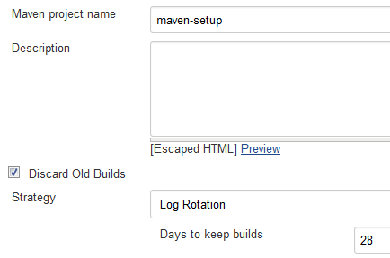
Click to edit Advanced Project Options to Block builds / Project display name:
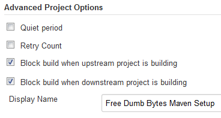
Source Code Management for Git with Credentials:
Configure Git proxy authentication for the Repository URL (see also Section 14.1.4.5, “Git authentication” to prevent error “stderr: fatal: Authentication failed for 'http://freedumbytes.dev.net/git-repo/maven-setup.git/'”) with add Credentials, when the
_netrcsolution isn't used.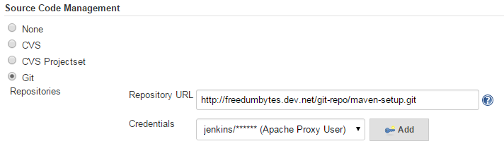
such as
master: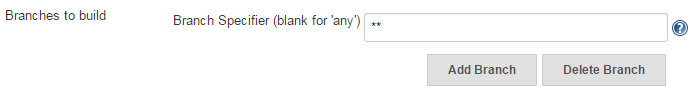
Tip
If not all future branches should trigger build just specify the required ones, for example for qa-sandbox project:
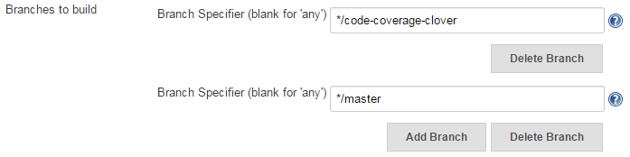
Note
In both cases a manual Build Now will only trigger a build of the branch that was build during the prior build #.
Test those different settings for example by making changes to two branches and pushing those changes all at once with
git push --all origin.Warning
Ran into a “Detached HEAD” situation with the following combination of settings: Branches to build
**and Additional Behaviours Shallow clone (see below).such as FishEye:
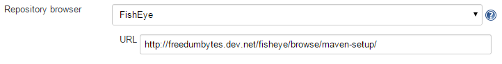
for clone:
Or retrieve some more:
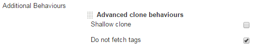
Build Triggers such as hooks and poll:
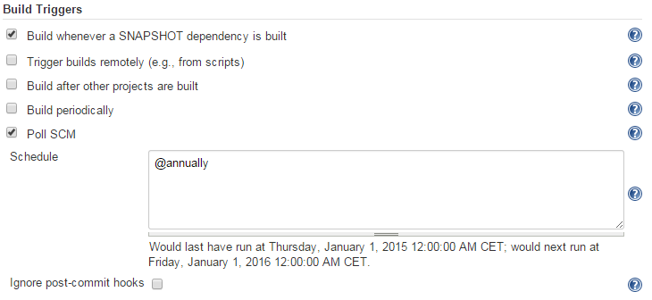
Note
Make sure the poll interval is larger than the quiet period otherwise the build will never start. When using the hooks/post-receive of the git repo instead, make sure the Poll SCM option is ticked.
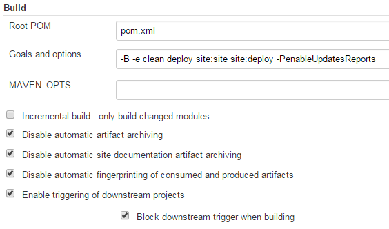
-Bor--batch-mode: Batch mode is essential if you need to run Maven in a non-interactive, continuous integration environment. When running in non-interactive mode, Maven will never stop to accept input from the user. Instead, it will use sensible default values when it requires input.-e,--errors: Will come in handy if you are a Maven developer, or if you need to diagnose an error in a Maven plugin.-P,--activate-profiles: Comma-delimited list of profiles to activate. Currently available profiles (TODO update list):integrationTestsOnly: activate the integration tests only; thus skipping unit tests (see also Section 16.1.7.2.4, “Unit vs Integration tests”).documents: activation of the source and javadoc archive creation (see also Section 16.1.7.4, “Source” and Section 16.1.7.5, “Javadoc”).enableUpdatesReports: activation of the reports of those project dependencies, plugins and properties, which have newer versions available (see also Section 16.1.5, “Plugin Versions”).
Disable automatic artifact archiving.
Disable automatic site documentation artifact archiving.
Disable automatic fingerprinting of consumed and produced artifacts.
Note
See also Section 13.1.6.2, “Artifact deployment” and Section 4.2.5, “Password Encryption” to make sure the “Uploading: http://freedumbytes.dev.net/nexus/content/repositories/snapshots/net/dev/freedumbytes/maven/setup/…-SNAPSHOT/setup-x.y-20131013.201411-1.pom” succeeds.
Tip
When the project invokes plugins with
<phase>pre-site</phase>configuration use phasesite-deployinstead of goalssite:site site:deploy(see also Section 17.3.7, “PressGang Example”).Build Settings for notifications:
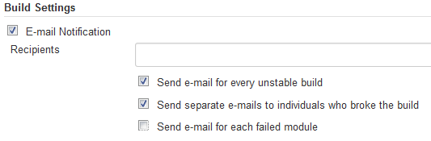
Note
In case of the following error “Cause: C:\Windows\System32\config\systemprofile\.m2\settings-security.xml (The system cannot find the file specified)” during a Jenkins build make sure the Tomcat service is not running under the Local system account.
Let Jenkins take care of the snapshot deployments, but handle the release action from the command line with the Release Plugin.
The Nexus Repository is already configured as the default for deployments.
Make sure all local changes have been committed with commands:
git status
git tag -l
git log --tags --simplify-by-decoration [--pretty="format:%ai %s"]
git log --oneline --decorate
Also check if all remote changes are “up to date” with command:
git remote show originTo change the 3.0-SNAPSHOT version to a release
3.0 version, which also will be tagged in the SCM as
maven-setup-3.0, and to create the next
3.1-SNAPSHOT version use the command:
mvn [-Dusername=jjasper] [-Dpassword=password] release:prepare(or
try a Dry
Run with the option -DdryRun=true followed
by mvn release:clean or mvn
release:rollback to remove all of the created files).
When the POM is configured to not pushChanges the
options username and password are
superfluous.
Important
In that case we need to git push --follow-tags origin
<release-branch-name> to push the prepared commits
for the release, inclusive its tag, and the one for the next
development iteration.
With git config --global push.followTags
true the option follow-tags is no longer
necessary.
TODO 2 builds GitLab and no tag build on merge vs 1 Jenkins and opensource helper script.
TODO now SNAPSHOTS in ossrh (see link).
TODO when -DpreparationGoals="clean
install".
Note
When using release plugin version 2.5.1 or earlier with Maven
3.3.3 and later the following error occurs “Failed to invoke
Maven build. Error configuring command-line. Reason: Maven
executable not found at: …\apache-maven-3.3.3\bin\mvn.bat”
because the mvn.bat is renamed to
mvn.cmd. When it isn't possible to upgrade the
parent base-pom overwrite version 2.5.1 from the command line with
mvn -Dusername=.jjasper
-Dpassword=password
org.apache.maven.plugins:maven-release-plugin:2.5.2:prepare
Then deploy the release 3.0 version to Nexus using
the command:
mvn -Dusername=jjasper -Dpassword=password release:performThis
will result in a checkout of tag setup-3.0 into C:\dev\projects\maven-setup\target\checkout
from which the artifacts and sites will be deployed. Afterwards delete
this directory otherwise it might show up in the Eclipse
Team Synchronizing perspective.
Tip
Because Jenkins will overwrite the site with the next snapshot anyway, save time by skipping site-deploy with:
mvn -Dusername=jjasper -Dpassword=password release:perform -Dgoals=deployNote
Instead of using release:perform use Jenkins
CI to release the tag or use script git-mvn-deploy.sh.
Again verify if all remote changes are “up to date” with command:
git status
git push
git remote show origin
git log -1
Note
Now might be a good time to create a Custom skin.
The Release Plugin is handy for updating SNAPSHOT versions of
the modules in a project. But when used on SNAPSHOT dependencies the
next project SNAPSHOT version will be pointing to the next SNAPSHOT of
the dependencies also. Which is usually not what is required. In comes
the Versions
Plugin option mvn versions:use-releases
(for usage see also Section 17.3.8, “Publication”).
Look for updates of dependencies with mvn
versions:display-dependency-updates
and plugins with mvn versions:display-plugin-updates
and the:
Advance the dependency version to the next higher with
mvn versions:use-next-releaseswith or the latest withmvn versions:use-latest-releases.Switch from a snapshot dependency to its released version with
mvn versions:use-releases.Upgrade the parent reference with
mvn versions:update-parent.The Versions Plugin has the following reporting goals:
versions:dependency-updates-report produces a report of those project dependencies which have newer versions available.
versions:plugin-updates-report produces a report of those plugins which have newer versions available.
versions:property-updates-report produces a report of those properties which are used to control artifact versions and which properies have newer versions available.
To lock the version of a SNAPSHOT for say a release candidate
build use mvn versions:lock-snapshots
and revert with mvn versions:unlock-snapshots.
To set the patch version for a branch version of for example 1.0
to 1.0.1-SNAPSHOT use mvn versions:set
-DnewVersion=1.0.1-SNAPSHOT.
Remove the backup files with mvn versions:commit
or revert changes with mvn versions:revert.
To create a branch on for example the qa-sandbox project to use Clover instead of JaCoCo code coverage, the Release Plugin should be able to handle the branch action from the command line with:
cd /d C:\dev\projects\qa-sandbox
mvn release:branch -DbranchName=code-coverage-clover -DsuppressCommitBeforeBranch=true -DremoteTagging=false ^
-DupdateBranchVersions=true -DreleaseVersion=1.0.1-SNAPSHOT ^
-DupdateWorkingCopyVersions=false -DpushChanges=falseAlas mvn release:branch fails on Windows to commit changed POM in branch (see also MRELEASE-881). Thus next as a workaround use the Versions Plugin as follows.
Switch to the new branch:
git branch
git checkout code-coverage-clover
git status
Fix project version:
mvn versions:set -DnewVersion=1.0.1-SNAPSHOT
git status
Remove pom.xml.versionsBackup files:
mvn versions:commit
git status
Important
In case of
“org.codehaus.mojo:versions-maven-plugin:2.2:set failed.
NullPointerException” switch back to version 2.1 (and join
set and commit goals):
mvn org.codehaus.mojo:versions-maven-plugin:2.1:set
org.codehaus.mojo:versions-maven-plugin:2.1:commit
-DnewVersion=1.0.1-SNAPSHOT.
Commit changed pom.xml files:
git diff
git commit -am "branch code-coverage-clover"
git status
Push the local branch to the remote repository (publish) and set up the tracking information:
git push -u origin code-coverage-clover
git status
Note
In case of the error “src refspec master matches more than one. failed to push some refs to” there might be a tag with the same name.
Working on this branch in Eclipse:
Don't forget to switch the synchronization destination also:
If you have a set of dependencies which are logically grouped together. You can create a project with pom packaging that groups dependencies together. To solve version mismatch issues, you can use the concept of a Bill of Materials (BOM) dependency. A BOM dependency keep track of version numbers and ensure that all dependencies (both direct and transitive) are at the same version.
Lets setup a base structure, for Bill of Materials code to come, with the following JIRA project:
Bill of Materials [BOMGRP]: of the most popular Maven dependencies (see also repository branches/bill-of-materials).
With the following components:
bom: Setup the required versions of the most popular Maven dependencies.
grouping: Set of dependencies which are logically grouped together.
Start a new bare Git repository bill-of-materials
by calling /p/dev/apps/windows/batch/git-create-repo.sh
/p/dev/data/repo/git bill-of-materials.git "Maven Bill of Materials"
-jenkinsHook in  Git
Bash.
Git
Bash.
Clone this remote repository with the following command
git-clone
jjasper bill-of-materials.
Create the minimal POM in
C:\dev\projects\bill-of-materials\pom.xml:
+<?xml version="1.0" encoding="UTF-8"?>
+
+<project xmlns="http://maven.apache.org/POM/4.0.0"
+ xmlns:xsi="http://www.w3.org/2001/XMLSchema-instance"
+ xsi:schemaLocation="http://maven.apache.org/POM/4.0.0
+ https://maven.apache.org/xsd/maven-4.0.0.xsd">
+ <modelVersion>4.0.0</modelVersion>
+
+ <parent>
+ <groupId>nl.demon.shadowland.freedumbytes.maven.config</groupId>
+ <artifactId>setup</artifactId>
+ <version>4.3</version>
+ </parent>
+
+ <groupId>nl.demon.shadowland.freedumbytes.maven.dependencies</groupId>
+ <artifactId>bom</artifactId>
+ <version>3.1</version>
+ <packaging>pom</packaging>
+</project>
+ <name>Free Dumb Bytes Maven Bill of Materials</name>
+ <description>
+ Setup the required versions of the most popular Maven dependencies.
+ </description>
+ <url>${mavenHost}/bill-of-materials</url>
+ <inceptionYear>2015</inceptionYear>
+ <scm>
+ <developerConnection>
+ scm:git:${gitHost}/bill-of-materials.git
+ </developerConnection>
+ <url>${fisheyeHost}/browse/bill-of-materials</url>
+ <tag>HEAD</tag>
+ </scm>
+ <ciManagement>
+ <system>Jenkins</system>
+ <url>${jenkinsHost}/job/bill-of-materials</url>
+ </ciManagement>
+ <issueManagement>
+ <system>JIRA</system>
+ <url>${jiraHost}/projects/BOMGRP</url>
+ </issueManagement>
+ <distributionManagement>
+ <site>
+ <id>mvn-sites</id>
+ <name>Maven Documentation Sites</name>
+ <url>dav:${mavenHost}/bill-of-materials</url>
+ </site>
+ </distributionManagement>
+</project>
Define the Common dependencies versions in
C:\dev\projects\bill-of-materials\pom.xml:
</site>
</distributionManagement>
+
+ <properties>
+ <lombokVersion>1.16.20</lombokVersion>
+ <commonsLangVersion>2.6</commonsLangVersion>
+ <commonsLang3Version>3.7</commonsLang3Version>
+ <commonsCodecVersion>1.11</commonsCodecVersion>
+ <commonsIOVersion>2.6</commonsIOVersion>
+ <guavaVersion>23.6-jre</guavaVersion>
+ </properties>
+
+ <dependencyManagement>
+ <dependencies>
+ <dependency>
+ <groupId>org.projectlombok</groupId>
+ <artifactId>lombok</artifactId>
+ <version>${lombokVersion}</version>
+ </dependency>
+
+ <dependency>
+ <groupId>org.apache.commons</groupId>
+ <artifactId>commons-lang</artifactId>
+ <version>${commonsLangVersion}</version>
+ </dependency>
+
+ <dependency>
+ <groupId>org.apache.commons</groupId>
+ <artifactId>commons-lang3</artifactId>
+ <version>${commonsLang3Version}</version>
+ </dependency>
+
+ <dependency>
+ <groupId>commons-codec</groupId>
+ <artifactId>commons-codec</artifactId>
+ <version>${commonsCodecVersion}</version>
+ </dependency>
+
+ <dependency>
+ <groupId>commons-io</groupId>
+ <artifactId>commons-io</artifactId>
+ <version>${commonsIOVersion}</version>
+ </dependency>
+
+ <dependency>
+ <groupId>com.google.guava</groupId>
+ <artifactId>guava</artifactId>
+ <version>${guavaVersion}</version>
+ </dependency>
+ </dependencies>
+ </dependencyManagement>
</project>
Note
Supply a version for commons-lang for projects that don't yet want to use the repackaged commons-lang3 from the upcoming Grouping Common Dependencies.
Define the Spring dependencies versions in
C:\dev\projects\bill-of-materials\pom.xml:
<guavaVersion>23.6-jre</guavaVersion>
+
+ <springVersion>5.0.3.RELEASE</springVersion>
</properties>
<version>${guavaVersion}</version>
</dependency>
+
+
+
+ <dependency>
+ <groupId>org.springframework</groupId>
+ <artifactId>spring-jdbc</artifactId>
+ <version>${springVersion}</version>
+ </dependency>
+
+ <dependency>
+ <groupId>org.springframework</groupId>
+ <artifactId>spring-tx</artifactId>
+ <version>${springVersion}</version>
+ </dependency>
+
+ <dependency>
+ <groupId>org.springframework</groupId>
+ <artifactId>spring-context</artifactId>
+ <version>${springVersion}</version>
+ </dependency>
+
+ <dependency>
+ <groupId>org.springframework</groupId>
+ <artifactId>spring-aop</artifactId>
+ <version>${springVersion}</version>
+ </dependency>
+
+ <dependency>
+ <groupId>org.springframework</groupId>
+ <artifactId>spring-beans</artifactId>
+ <version>${springVersion}</version>
+ </dependency>
+
+ <dependency>
+ <groupId>org.springframework</groupId>
+ <artifactId>spring-core</artifactId>
+ <version>${springVersion}</version>
+ </dependency>
+
+ <dependency>
+ <groupId>org.springframework</groupId>
+ <artifactId>spring-context-support</artifactId>
+ <version>${springVersion}</version>
+ </dependency>
</dependencies>
</dependencyManagement>
</project>
Define the Hibernate dependencies versions in
C:\dev\projects\bill-of-materials\pom.xml:
<springVersion>5.0.3.RELEASE</springVersion>
+
+ <hibernateVersion>5.2.12.Final</hibernateVersion>
+ <ehcacheVersion>3.4.0</ehcacheVersion>
+ <javassistVersion>3.20.0-GA</javassistVersion>
</properties>
<version>${springVersion}</version>
</dependency>
+
+
+
+ <dependency>
+ <groupId>org.hibernate</groupId>
+ <artifactId>hibernate-core</artifactId>
+ <version>${hibernateVersion}</version>
+ <exclusions>
+ <exclusion>
+ <groupId>org.slf4j</groupId>
+ <artifactId>slf4j-api</artifactId>
+ </exclusion>
+ </exclusions>
+ </dependency>
+
+ <dependency>
+ <groupId>org.hibernate</groupId>
+ <artifactId>hibernate-entitymanager</artifactId>
+ <version>${hibernateVersion}</version>
+ <exclusions>
+ <exclusion>
+ <groupId>org.slf4j</groupId>
+ <artifactId>slf4j-api</artifactId>
+ </exclusion>
+ </exclusions>
+ </dependency>
+
+ <dependency>
+ <groupId>org.hibernate</groupId>
+ <artifactId>hibernate-ehcache</artifactId>
+ <version>${hibernateVersion}</version>
+ <exclusions>
+ <exclusion>
+ <groupId>org.slf4j</groupId>
+ <artifactId>slf4j-api</artifactId>
+ </exclusion>
+ </exclusions>
+ </dependency>
+
+ <dependency>
+ <groupId>org.ehcache</groupId>
+ <artifactId>ehcache-core</artifactId>
+ <version>${ehcacheVersion}</version>
+ <exclusions>
+ <exclusion>
+ <groupId>org.slf4j</groupId>
+ <artifactId>slf4j-api</artifactId>
+ </exclusion>
+ </exclusions>
+ </dependency>
+
+ <dependency>
+ <groupId>org.javassist</groupId>
+ <artifactId>javassist</artifactId>
+ <version>${javassistVersion}</version>
+ </dependency>
+
+ <dependency>
+ <groupId>org.springframework</groupId>
+ <artifactId>spring-orm</artifactId>
+ <version>${springVersion}</version>
+ </dependency>
</dependencies>
</dependencyManagement>
</project>
Note
For JPA, use hibernate-entitymanager instead
of hibernate-core.
Define the Test dependencies versions in
C:\dev\projects\bill-of-materials\pom.xml:
<hibernateVersion>5.2.12.Final</hibernateVersion>
…
+
+ <junitVersion>4.12</junitVersion>
+ <assertjVersion>3.9.0</assertjVersion>
+ <mockitoVersion>2.13.0</mockitoVersion>
+ <powerMockVersion>1.6.4</powerMockVersion>
+ <cglibVersion>3.2.6</cglibVersion>
+ <commonsDbcpVersion>1.4</commonsDbcpVersion>
+ <commonsDbcp2Version>2.2.0</commonsDbcp2Version>
+ <h2Version>1.4.190</h2Version>
+ <hsqldbVersion>2.3.3</hsqldbVersion>
</properties>
<artifactId>spring-orm</artifactId>
<version>${springVersion}</version>
</dependency>
+
+
+
+ <dependency>
+ <groupId>junit</groupId>
+ <artifactId>junit</artifactId>
+ <version>${junitVersion}</version>
+ </dependency>
+
+ <dependency>
+ <groupId>org.assertj</groupId>
+ <artifactId>assertj-core</artifactId>
+ <version>${assertjVersion}</version>
+ </dependency>
+
+ <dependency>
+ <groupId>org.mockito</groupId>
+ <artifactId>mockito-all</artifactId>
+ <version>${mockitoVersion}</version>
+ </dependency>
+
+ <dependency>
+ <groupId>org.powermock</groupId>
+ <artifactId>powermock-api-mockito</artifactId>
+ <version>${powerMockVersion}</version>
+ </dependency>
+
+ <dependency>
+ <groupId>org.powermock</groupId>
+ <artifactId>powermock-module-junit4</artifactId>
+ <version>${powerMockVersion}</version>
+ </dependency>
+
+ <dependency>
+ <groupId>org.springframework</groupId>
+ <artifactId>spring-test</artifactId>
+ <version>${springVersion}</version>
+ </dependency>
+
+ <dependency>
+ <groupId>cglib</groupId>
+ <artifactId>cglib</artifactId>
+ <version>${cglibVersion}</version>
+ </dependency>
+
+ <dependency>
+ <groupId>commons-dbcp</groupId>
+ <artifactId>commons-dbcp</artifactId>
+ <version>${commonsDbcpVersion}</version>
+ </dependency>
+
+ <dependency>
+ <groupId>org.apache.commons</groupId>
+ <artifactId>commons-dbcp2</artifactId>
+ <version>${commonsDbcp2Version}</version>
+ </dependency>
+
+ <dependency>
+ <groupId>com.h2database</groupId>
+ <artifactId>h2</artifactId>
+ <version>${h2Version}</version>
+ </dependency>
+
+ <dependency>
+ <groupId>org.hsqldb</groupId>
+ <artifactId>hsqldb</artifactId>
+ <version>${hsqldbVersion}</version>
+ </dependency>
</dependencies>
</dependencyManagement>
</project>
Define the Log dependencies versions in
C:\dev\projects\bill-of-materials\pom.xml:
<h2Version>1.4.190</h2Version>
<hsqldbVersion>2.3.3</hsqldbVersion>
+
+ <log4jVersion>1.2.17</log4jVersion>
+ <commonsLoggingVersion>1.2</commonsLoggingVersion>
+ <slf4jVersion>1.7.13</slf4jVersion>
</properties>
<version>${hsqldbVersion}</version>
</dependency>
+
+
+
+ <dependency>
+ <groupId>log4j</groupId>
+ <artifactId>log4j</artifactId>
+ <version>${log4jVersion}</version>
+ </dependency>
+
+ <dependency>
+ <groupId>commons-logging</groupId>
+ <artifactId>commons-logging</artifactId>
+ <version>${commonsLoggingVersion}</version>
+ </dependency>
+
+ <dependency>
+ <groupId>org.slf4j</groupId>
+ <artifactId>slf4j-api</artifactId>
+ <version>${slf4jVersion}</version>
+ </dependency>
+
+ <dependency>
+ <groupId>org.slf4j</groupId>
+ <artifactId>slf4j-log4j12</artifactId>
+ <version>${slf4jVersion}</version>
+ </dependency>
+
+ <dependency>
+ <groupId>org.slf4j</groupId>
+ <artifactId>jcl-over-slf4j</artifactId>
+ <version>${slf4jVersion}</version>
+ </dependency>
</dependencies>
</dependencyManagement>
</project>
Define the MySQL dependencies versions in
C:\dev\projects\bill-of-materials\pom.xml:
<log4jVersion>1.2.17</log4jVersion>
<commonsLoggingVersion>1.2</commonsLoggingVersion>
<slf4jVersion>1.7.13</slf4jVersion>
+
+ <mysqlConnectorJVersion>5.1.45</mysqlConnectorJVersion>
+ <hikariCPVersion>2.7.6</hikariCPVersion>
</properties>
<version>${slf4jVersion}</version>
</dependency>
+
+
+
+ <dependency>
+ <groupId>mysql</groupId>
+ <artifactId>mysql-connector-java</artifactId>
+ <version>${mysqlConnectorJVersion}</version>
+ </dependency>
+
+ <dependency>
+ <groupId>com.zaxxer</groupId>
+ <artifactId>HikariCP</artifactId>
+ <version>${hikariCPVersion}</version>
+ <exclusions>
+ <exclusion>
+ <groupId>org.slf4j</groupId>
+ <artifactId>slf4j-api</artifactId>
+ </exclusion>
+ </exclusions>
+ </dependency>
</dependencies>
</dependencyManagement>
</project>
For example the Custom Reflow Skin
module uses the unittest
BootStrapResponsiveStyleTest to log 1920 and
bigger responsive css settings.
Change the project parent to import the Bill of Materials
dependency version settings in
C:\dev\projects\skins\pom.xml:
</modules>
<properties>
+ <bomVersion>3.1</bomVersion>
+
<mavenDefaultSkinVersion>1.2</mavenDefaultSkinVersion>
…
</properties>
+
+ <dependencyManagement>
+ <dependencies>
+ <dependency>
+ <groupId>nl.demon.shadowland.freedumbytes.maven.dependencies</groupId>
+ <artifactId>bom</artifactId>
+ <version>${bomVersion}</version>
+ <type>pom</type>
+ <scope>import</scope>
+ </dependency>
+ </dependencies>
+ </dependencyManagement>
</project>
Remove the now obsolete version settings in
C:\dev\projects\skins\maven-reflow-skin\pom.xml:
<dependency>
<groupId>log4j</groupId>
<artifactId>log4j</artifactId>
- <version>1.2.17</version>
<scope>provided</scope>
</dependency>
<dependency>
<groupId>commons-logging</groupId>
<artifactId>commons-logging</artifactId>
- <version>1.2</version>
<scope>provided</scope>
</dependency>
<dependency>
<groupId>junit</groupId>
<artifactId>junit</artifactId>
- <version>4.12</version>
<scope>test</scope>
</dependency>
<dependency>
<groupId>org.assertj</groupId>
<artifactId>assertj-core</artifactId>
- <version>3.2.0</version>
<scope>test</scope>
</dependency>
<dependency>
<groupId>org.mockito</groupId>
<artifactId>mockito-all</artifactId>
- <version>1.10.19</version>
<scope>test</scope>
</dependency>
</dependencies>
Add the grouping parent module in
C:\dev\projects\bill-of-materials\pom.xml:
</distributionManagement>
+
+ <modules>
+ <module>grouping</module>
+ </modules>
</project>
Create the minimal POM in
C:\dev\projects\bill-of-materials\grouping\pom.xml:
+<?xml version="1.0" encoding="UTF-8"?>
+
+<project xmlns="http://maven.apache.org/POM/4.0.0"
+ xmlns:xsi="http://www.w3.org/2001/XMLSchema-instance"
+ xsi:schemaLocation="http://maven.apache.org/POM/4.0.0
+ https://maven.apache.org/xsd/maven-4.0.0.xsd">
+ <modelVersion>4.0.0</modelVersion>
+
+ <parent>
+ <groupId>nl.demon.shadowland.freedumbytes.maven.dependencies</groupId>
+ <artifactId>bom</artifactId>
+ <version>3.1</version>
+ </parent>
+
+ <artifactId>grouping</artifactId>
+ <packaging>pom</packaging>
+
+ <name>Free Dumb Bytes Maven Dependencies Grouping</name>
+ <description>
+ If you have a set of dependencies which are logically grouped together.
+ You can create a project with pom packaging
+ that groups dependencies together.
+ </description>
+ <inceptionYear>2015</inceptionYear>
+</project>
Add the Common module in
C:\dev\projects\bill-of-materials\grouping\pom.xml:
<inceptionYear>2015</inceptionYear>
+
+ <modules>
+ <module>common</module>
+ </modules>
</project>
Group the Common dependencies in
C:\dev\projects\bill-of-materials\grouping\common\pom.xml:
+<?xml version="1.0" encoding="UTF-8"?>
+
+<project xmlns="http://maven.apache.org/POM/4.0.0"
+ xmlns:xsi="http://www.w3.org/2001/XMLSchema-instance"
+ xsi:schemaLocation="http://maven.apache.org/POM/4.0.0
+ https://maven.apache.org/xsd/maven-4.0.0.xsd">
+ <modelVersion>4.0.0</modelVersion>
+
+ <parent>
+ <groupId>nl.demon.shadowland.freedumbytes.maven.dependencies</groupId>
+ <artifactId>grouping</artifactId>
+ <version>3.1</version>
+ </parent>
+
+ <artifactId>common</artifactId>
+ <packaging>pom</packaging>
+
+ <name>Free Dumb Bytes Common Dependencies</name>
+ <description>Grouping Common Dependencies.</description>
+ <inceptionYear>2015</inceptionYear>
+
+ <dependencies>
+ <dependency>
+ <groupId>org.projectlombok</groupId>
+ <artifactId>lombok</artifactId>
+ </dependency>
+
+ <dependency>
+ <groupId>org.apache.commons</groupId>
+ <artifactId>commons-lang3</artifactId>
+ </dependency>
+
+ <dependency>
+ <groupId>commons-codec</groupId>
+ <artifactId>commons-codec</artifactId>
+ </dependency>
+
+ <dependency>
+ <groupId>commons-io</groupId>
+ <artifactId>commons-io</artifactId>
+ </dependency>
+
+ <dependency>
+ <groupId>com.google.guava</groupId>
+ <artifactId>guava</artifactId>
+ </dependency>
+ </dependencies>
+</project>
Add the Spring module in
C:\dev\projects\bill-of-materials\grouping\pom.xml:
<modules>
<module>common</module>
+ <module>spring</module>
</modules>
</project>
Group the Spring dependencies in
C:\dev\projects\bill-of-materials\grouping\spring\pom.xml:
+<?xml version="1.0" encoding="UTF-8"?>
+
+<project xmlns="http://maven.apache.org/POM/4.0.0"
+ xmlns:xsi="http://www.w3.org/2001/XMLSchema-instance"
+ xsi:schemaLocation="http://maven.apache.org/POM/4.0.0
+ https://maven.apache.org/xsd/maven-4.0.0.xsd">
+ <modelVersion>4.0.0</modelVersion>
+
+ <parent>
+ <groupId>nl.demon.shadowland.freedumbytes.maven.dependencies</groupId>
+ <artifactId>grouping</artifactId>
+ <version>3.1</version>
+ </parent>
+
+ <artifactId>spring</artifactId>
+ <packaging>pom</packaging>
+
+ <name>Free Dumb Bytes Spring Dependencies</name>
+ <description>Grouping Spring Dependencies.</description>
+ <inceptionYear>2015</inceptionYear>
+
+ <dependencies>
+ <dependency>
+ <groupId>org.springframework</groupId>
+ <artifactId>spring-jdbc</artifactId>
+ </dependency>
+
+ <dependency>
+ <groupId>org.springframework</groupId>
+ <artifactId>spring-tx</artifactId>
+ </dependency>
+
+ <dependency>
+ <groupId>org.springframework</groupId>
+ <artifactId>spring-context</artifactId>
+ </dependency>
+
+ <dependency>
+ <groupId>org.springframework</groupId>
+ <artifactId>spring-aop</artifactId>
+ </dependency>
+
+ <dependency>
+ <groupId>org.springframework</groupId>
+ <artifactId>spring-beans</artifactId>
+ </dependency>
+
+ <dependency>
+ <groupId>org.springframework</groupId>
+ <artifactId>spring-core</artifactId>
+ </dependency>
+
+ <dependency>
+ <groupId>org.springframework</groupId>
+ <artifactId>spring-context-support</artifactId>
+ </dependency>
+ </dependencies>
+</project>
Add the Hibernate module in
C:\dev\projects\bill-of-materials\grouping\pom.xml:
<modules>
<module>common</module>
<module>spring</module>
+ <module>hibernate</module>
</modules>
</project>
Group the Hibernate dependencies in
C:\dev\projects\bill-of-materials\grouping\hibernate\pom.xml:
+<?xml version="1.0" encoding="UTF-8"?>
+
+<project xmlns="http://maven.apache.org/POM/4.0.0"
+ xmlns:xsi="http://www.w3.org/2001/XMLSchema-instance"
+ xsi:schemaLocation="http://maven.apache.org/POM/4.0.0
+ https://maven.apache.org/xsd/maven-4.0.0.xsd">
+ <modelVersion>4.0.0</modelVersion>
+
+ <parent>
+ <groupId>nl.demon.shadowland.freedumbytes.maven.dependencies</groupId>
+ <artifactId>grouping</artifactId>
+ <version>3.1</version>
+ </parent>
+
+ <artifactId>hibernate</artifactId>
+ <packaging>pom</packaging>
+
+ <name>Free Dumb Bytes Hibernate Dependencies</name>
+ <description>Grouping Hibernate Dependencies.</description>
+ <inceptionYear>2015</inceptionYear>
+
+ <dependencies>
+ <dependency>
+ <groupId>org.hibernate</groupId>
+ <artifactId>hibernate-core</artifactId>
+ </dependency>
+
+ <dependency>
+ <groupId>org.hibernate</groupId>
+ <artifactId>hibernate-ehcache</artifactId>
+ </dependency>
+
+ <dependency>
+ <groupId>org.ehcache</groupId>
+ <artifactId>ehcache-core</artifactId>
+ </dependency>
+
+ <dependency>
+ <groupId>org.javassist</groupId>
+ <artifactId>javassist</artifactId>
+ </dependency>
+
+ <dependency>
+ <groupId>nl.demon.shadowland.freedumbytes.maven.dependencies</groupId>
+ <artifactId>spring</artifactId>
+ <version>${project.version}</version>
+ <type>pom</type>
+ </dependency>
+
+ <dependency>
+ <groupId>org.springframework</groupId>
+ <artifactId>spring-orm</artifactId>
+ </dependency>
+ </dependencies>
+</project>
Add the Test module in
C:\dev\projects\bill-of-materials\grouping\pom.xml:
<module>common</module>
<module>spring</module>
<module>hibernate</module>
+ <module>test</module>
</modules>
</project>
Group the Test dependencies in
C:\dev\projects\bill-of-materials\grouping\test\pom.xml:
+<?xml version="1.0" encoding="UTF-8"?>
+
+<project xmlns="http://maven.apache.org/POM/4.0.0"
+ xmlns:xsi="http://www.w3.org/2001/XMLSchema-instance"
+ xsi:schemaLocation="http://maven.apache.org/POM/4.0.0
+ https://maven.apache.org/xsd/maven-4.0.0.xsd">
+ <modelVersion>4.0.0</modelVersion>
+
+ <parent>
+ <groupId>nl.demon.shadowland.freedumbytes.maven.dependencies</groupId>
+ <artifactId>grouping</artifactId>
+ <version>3.1</version>
+ </parent>
+
+ <artifactId>test</artifactId>
+ <packaging>pom</packaging>
+
+ <name>Free Dumb Bytes Test Dependencies</name>
+ <description>Grouping Test Dependencies.</description>
+ <inceptionYear>2015</inceptionYear>
+
+ <dependencies>
+ <dependency>
+ <groupId>junit</groupId>
+ <artifactId>junit</artifactId>
+ </dependency>
+
+ <dependency>
+ <groupId>org.assertj</groupId>
+ <artifactId>assertj-core</artifactId>
+ </dependency>
+
+ <dependency>
+ <groupId>org.mockito</groupId>
+ <artifactId>mockito-all</artifactId>
+ </dependency>
+
+ <dependency>
+ <groupId>org.powermock</groupId>
+ <artifactId>powermock-api-mockito</artifactId>
+ </dependency>
+
+ <dependency>
+ <groupId>org.powermock</groupId>
+ <artifactId>powermock-module-junit4</artifactId>
+ </dependency>
+
+ <dependency>
+ <groupId>nl.demon.shadowland.freedumbytes.maven.dependencies</groupId>
+ <artifactId>spring</artifactId>
+ <version>${project.version}</version>
+ <type>pom</type>
+ </dependency>
+
+ <dependency>
+ <groupId>org.springframework</groupId>
+ <artifactId>spring-test</artifactId>
+ </dependency>
+
+ <dependency>
+ <groupId>cglib</groupId>
+ <artifactId>cglib</artifactId>
+ </dependency>
+
+ <dependency>
+ <groupId>commons-dbcp</groupId>
+ <artifactId>commons-dbcp</artifactId>
+ </dependency>
+
+ <dependency>
+ <groupId>org.apache.commons</groupId>
+ <artifactId>commons-dbcp2</artifactId>
+ </dependency>
+
+ <dependency>
+ <groupId>com.h2database</groupId>
+ <artifactId>h2</artifactId>
+ </dependency>
+
+ <dependency>
+ <groupId>org.hsqldb</groupId>
+ <artifactId>hsqldb</artifactId>
+ </dependency>
+ </dependencies>
+</project>
The term Mock Objects has become a popular one to describe special case objects that mimic real objects for testing.
Szczepan Faber and his own Monkey Island.
“Expect-run-verify is the most common pattern in mock frameworks. What's wrong with it? Can I test what I want, please? I'm a mockist but existing mock frameworks just don't appeal to me. They spoil my TDD experience. They harm code readability. I needed something better. That's why I came up with Mockito.”
“I'm about to show that it is very useful to distinguish two basic kinds of interactions: asking an object of data and telling an object to do something. Fair enough, it may sound obvious but most mocking frameworks treat all interactions equally and don't take advantage of the distinction.”
Add the Log module in
C:\dev\projects\bill-of-materials\grouping\pom.xml:
<module>spring</module>
<module>hibernate</module>
<module>test</module>
+ <module>log</module>
</modules>
</project>
Group the Log dependencies in
C:\dev\projects\bill-of-materials\grouping\log\pom.xml:
+<?xml version="1.0" encoding="UTF-8"?>
+
+<project xmlns="http://maven.apache.org/POM/4.0.0"
+ xmlns:xsi="http://www.w3.org/2001/XMLSchema-instance"
+ xsi:schemaLocation="http://maven.apache.org/POM/4.0.0
+ https://maven.apache.org/xsd/maven-4.0.0.xsd">
+ <modelVersion>4.0.0</modelVersion>
+
+ <parent>
+ <groupId>nl.demon.shadowland.freedumbytes.maven.dependencies</groupId>
+ <artifactId>grouping</artifactId>
+ <version>3.1</version>
+ </parent>
+
+ <artifactId>log</artifactId>
+
+ <name>Free Dumb Bytes Log Dependencies</name>
+ <description>Grouping Log Dependencies.</description>
+ <inceptionYear>2015</inceptionYear>
+
+ <dependencies>
+ <dependency>
+ <groupId>log4j</groupId>
+ <artifactId>log4j</artifactId>
+ </dependency>
+
+ <dependency>
+ <groupId>commons-logging</groupId>
+ <artifactId>commons-logging</artifactId>
+ </dependency>
+
+ <dependency>
+ <groupId>org.slf4j</groupId>
+ <artifactId>slf4j-api</artifactId>
+ </dependency>
+
+ <dependency>
+ <groupId>org.slf4j</groupId>
+ <artifactId>slf4j-log4j12</artifactId>
+ </dependency>
+
+ <dependency>
+ <groupId>org.slf4j</groupId>
+ <artifactId>jcl-over-slf4j</artifactId>
+ </dependency>
+ </dependencies>
+</project>
Note
This artifact has default packaging jar
instead of type pom because a default log4j.xml
is supplied for test usage (see also type in
the figure below).
The above mentioned default implementation of
C:\dev\projects\bill-of-materials\grouping\log\src\main\resources\log4j.xml:
+<?xml version="1.0" encoding="UTF-8" ?>
+<!DOCTYPE log4j:configuration SYSTEM
+ "http://logging.apache.org/log4j/1.2/apidocs/org/apache/log4j/xml/doc-files/log4j.dtd">
+
+<log4j:configuration xmlns:log4j="http://jakarta.apache.org/log4j/">
+ <appender name="STDOUT" class="org.apache.log4j.ConsoleAppender">
+ <layout class="org.apache.log4j.PatternLayout">
+ <param name="ConversionPattern" value="%d %-5p [%t] %c{2} %x - %m%n" />
+ </layout>
+ </appender>
+
+ <appender name="FILE" class="org.apache.log4j.RollingFileAppender">
+ <param name="File" value="target/test.log4j"/>
+ <param name="Append" value="false"/>
+ <param name="MaxFileSize" value="100MB"/>
+ <param name="MaxBackupIndex" value="5"/>
+ <layout class="org.apache.log4j.PatternLayout">
+ <param name="ConversionPattern" value="%d %-5p [%t] %c{2} %x - %m%n"/>
+ </layout>
+ </appender>
+
+ <logger name="org.hibernate">
+ <level value="ERROR"/>
+ </logger>
+
+ <logger name="org.hibernate.SQL">
+ <level value="ERROR" />
+ </logger>
+
+ <logger name="org.hibernate.type">
+ <level value="ERROR" />
+ </logger>
+
+ <root>
+ <level value="INFO"/>
+ <appender-ref ref="FILE"/>
+ <appender-ref ref="STDOUT"/>
+ </root>
+</log4j:configuration>
Add the MySQL module in
C:\dev\projects\bill-of-materials\grouping\pom.xml:
<module>hibernate</module>
<module>test</module>
<module>log</module>
+ <module>mysql</module>
</modules>
</project>
Group the MySQL dependencies in
C:\dev\projects\bill-of-materials\grouping\mysql\pom.xml:
+<?xml version="1.0" encoding="UTF-8"?>
+
+<project xmlns="http://maven.apache.org/POM/4.0.0"
+ xmlns:xsi="http://www.w3.org/2001/XMLSchema-instance"
+ xsi:schemaLocation="http://maven.apache.org/POM/4.0.0
+ https://maven.apache.org/xsd/maven-4.0.0.xsd">
+ <modelVersion>4.0.0</modelVersion>
+
+ <parent>
+ <groupId>nl.demon.shadowland.freedumbytes.maven.dependencies</groupId>
+ <artifactId>grouping</artifactId>
+ <version>3.1</version>
+ </parent>
+
+ <artifactId>mysql</artifactId>
+ <packaging>pom</packaging>
+
+ <name>Free Dumb Bytes MySQL Dependencies</name>
+ <description>Grouping MySQL Dependencies.</description>
+ <inceptionYear>2015</inceptionYear>
+
+ <dependencies>
+ <dependency>
+ <groupId>mysql</groupId>
+ <artifactId>mysql-connector-java</artifactId>
+ </dependency>
+
+ <dependency>
+ <groupId>com.zaxxer</groupId>
+ <artifactId>HikariCP</artifactId>
+ </dependency>
+
+ <dependency>
+ <groupId>org.javassist</groupId>
+ <artifactId>javassist</artifactId>
+ </dependency>
+ </dependencies>
+</project>
For example the Custom Reflow Skin
module uses the unittest
BootStrapResponsiveStyleTest to log 1920 and
bigger responsive css settings and is already using a Bill of
Materials (see also Section 16.1.12.1.7, “Bill of Materials usage”).
Change the project to use dependencies grouping and to allow
to separately upgrade the Bill of Materials introduce a
groupVersion property in
C:\dev\projects\skins\pom.xml:
<properties>
<bomVersion>3.1</bomVersion>
+ <groupVersion>${bomVersion}</groupVersion>
<mavenDefaultSkinVersion>1.2</mavenDefaultSkinVersion>
…
</properties>
Replace the specific dependencies with a dependencies
grouping in
C:\dev\projects\skins\maven-reflow-skin\pom.xml:
<dependencies>
<dependency>
- <groupId>log4j</groupId>
- <artifactId>log4j</artifactId>
+ <groupId>nl.demon.shadowland.freedumbytes.maven.dependencies</groupId>
+ <artifactId>log</artifactId>
+ <version>${groupVersion}</version>
<scope>provided</scope>
</dependency>
<dependency>
- <groupId>commons-logging</groupId>
- <artifactId>commons-logging</artifactId>
- <scope>provided</scope>
- </dependency>
-
- <dependency>
- <groupId>junit</groupId>
- <artifactId>junit</artifactId>
+ <groupId>nl.demon.shadowland.freedumbytes.maven.dependencies</groupId>
+ <artifactId>test</artifactId>
+ <version>${groupVersion}</version>
+ <type>pom</type>
<scope>test</scope>
</dependency>
-
- <dependency>
- <groupId>org.assertj</groupId>
- <artifactId>assertj-core</artifactId>
- <scope>test</scope>
- </dependency>
-
- <dependency>
- <groupId>org.mockito</groupId>
- <artifactId>mockito-all</artifactId>
- <scope>test</scope>
- </dependency>
</dependencies>
Start a new bare Git repository lifecycle-mapping
by calling /p/dev/apps/windows/batch/git-create-repo.sh
/p/dev/data/repo/git lifecycle-mapping.git "Eclipse workspace project
configuration and behaviour during Eclipse workspace build."
-jenkinsHook in  Git
Bash (see also repository branches/lifecycle-mapping).
Git
Bash (see also repository branches/lifecycle-mapping).
To avoid “Plugin execution not covered by lifecycle
configuration” error messages and POMs cluttered with
<artifactId>lifecycle-mapping</artifactId>
entries create a metadata file
C:\dev\projects\lifecycle-mapping\src\config\lifecycle-mapping-metadata.xml
(see also GitHub eclipse/m2e-core):
+<?xml version="1.0" encoding="UTF-8"?>
+
+<lifecycleMappingMetadata>
+ <lifecycleMappings>
+ <lifecycleMapping>
+ <packagingType>war</packagingType>
+ <lifecycleMappingId>
+ org.eclipse.m2e.jdt.JarLifecycleMapping
+ </lifecycleMappingId>
+ </lifecycleMapping>
+ </lifecycleMappings>
+ <pluginExecutions>
+ <pluginExecution>
+ <pluginExecutionFilter>
+ <groupId>org.apache.maven.plugins</groupId>
+ <artifactId>maven-resources-plugin</artifactId>
+ <goals>
+ <goal>resources</goal>
+ <goal>testResources</goal>
+ <goal>copy-resources</goal>
+ </goals>
+ <versionRange>[2.4,)</versionRange>
+ </pluginExecutionFilter>
+ <action>
+ <execute>
+ <runOnIncremental>true</runOnIncremental>
+ </execute>
+ </action>
+ </pluginExecution>
+ <pluginExecution>
+ <pluginExecutionFilter>
+ <groupId>org.apache.maven.plugins</groupId>
+ <artifactId>maven-resources-plugin</artifactId>
+ <goals>
+ <goal>resources</goal>
+ <goal>testResources</goal>
+ <goal>copy-resources</goal>
+ </goals>
+ <versionRange>[0.0.1,2.4)</versionRange>
+ </pluginExecutionFilter>
+ <action>
+ <error>
+ <message>
+ maven-resources-plugin prior to 2.4 is not supported by m2e.
+ Use maven-resources-plugin version 2.4 or later.
+ </message>
+ </error>
+ </action>
+ </pluginExecution>
+ <pluginExecution>
+ <pluginExecutionFilter>
+ <groupId>org.apache.maven.plugins</groupId>
+ <artifactId>maven-dependency-plugin</artifactId>
+ <goals>
+ <goal>copy-dependencies</goal>
+ <goal>unpack</goal>
+ </goals>
+ <versionRange>[2.0,)</versionRange>
+ </pluginExecutionFilter>
+ <action>
+ <ignore />
+ </action>
+ </pluginExecution>
+ <pluginExecution>
+ <pluginExecutionFilter>
+ <groupId>org.apache.maven.plugins</groupId>
+ <artifactId>maven-enforcer-plugin</artifactId>
+ <goals>
+ <goal>enforce</goal>
+ </goals>
+ <versionRange>[1.0-alpha-1,)</versionRange>
+ </pluginExecutionFilter>
+ <action>
+ <ignore />
+ </action>
+ </pluginExecution>
+ <pluginExecution>
+ <pluginExecutionFilter>
+ <groupId>org.apache.maven.plugins</groupId>
+ <artifactId>maven-invoker-plugin</artifactId>
+ <goals>
+ <goal>install</goal>
+ </goals>
+ <versionRange>[1.6-SONATYPE-r940877,)</versionRange>
+ </pluginExecutionFilter>
+ <action>
+ <ignore />
+ </action>
+ </pluginExecution>
+ <pluginExecution>
+ <pluginExecutionFilter>
+ <groupId>org.apache.maven.plugins</groupId>
+ <artifactId>maven-remote-resources-plugin</artifactId>
+ <versionRange>[1.0,)</versionRange>
+ <goals>
+ <goal>process</goal>
+ </goals>
+ </pluginExecutionFilter>
+ <action>
+ <ignore />
+ </action>
+ </pluginExecution>
+ <pluginExecution>
+ <pluginExecutionFilter>
+ <groupId>org.apache.maven.plugins</groupId>
+ <artifactId>maven-eclipse-plugin</artifactId>
+ <versionRange>[0,)</versionRange>
+ <goals>
+ <goal>configure-workspace</goal>
+ <goal>eclipse</goal>
+ <goal>clean</goal>
+
+ <goal>to-maven</goal>
+ <goal>install-plugins</goal>
+ <goal>make-artifacts</goal>
+
+ <goal>myeclipse</goal>
+ <goal>myeclipse-clean</goal>
+
+ <goal>rad</goal>
+ <goal>rad-clean</goal>
+ </goals>
+ </pluginExecutionFilter>
+ <action>
+ <error>
+ <message>maven-eclipse-plugin is not compatible with m2e</message>
+ </error>
+ </action>
+ </pluginExecution>
+ <pluginExecution>
+ <pluginExecutionFilter>
+ <groupId>org.apache.maven.plugins</groupId>
+ <artifactId>maven-source-plugin</artifactId>
+ <versionRange>[2.0,)</versionRange>
+ <goals>
+ <goal>jar-no-fork</goal>
+ <goal>test-jar-no-fork</goal>
+ <!-- theoretically, the following goals should not be bound to lifecycle,
+ but ignore them just in case -->
+ <goal>jar</goal>
+ <goal>aggregate</goal>
+ <goal>test-jar</goal>
+ </goals>
+ </pluginExecutionFilter>
+ <action>
+ <ignore />
+ </action>
+ </pluginExecution>
+ <pluginExecution>
+ <pluginExecutionFilter>
+ <groupId>org.codehaus.mojo</groupId>
+ <artifactId>animal-sniffer-maven-plugin</artifactId>
+ <versionRange>[1.0,)</versionRange>
+ <goals>
+ <goal>check</goal>
+ </goals>
+ </pluginExecutionFilter>
+ <action>
+ <ignore />
+ </action>
+ </pluginExecution>
+ <pluginExecution>
+ <pluginExecutionFilter>
+ <groupId>org.codehaus.mojo</groupId>
+ <artifactId>buildnumber-maven-plugin</artifactId>
+ <versionRange>[1.0-beta-1,)</versionRange>
+ <goals>
+ <goal>create</goal>
+ </goals>
+ </pluginExecutionFilter>
+ <action>
+ <ignore />
+ </action>
+ </pluginExecution>
+ <pluginExecution>
+ <pluginExecutionFilter>
+ <groupId>org.jacoco</groupId>
+ <artifactId>jacoco-maven-plugin</artifactId>
+ <versionRange>[0.7.0.201403182114,)</versionRange>
+ <goals>
+ <goal>prepare-agent</goal>
+ </goals>
+ </pluginExecutionFilter>
+ <action>
+ <ignore />
+ </action>
+ </pluginExecution>
+ <pluginExecution>
+ <pluginExecutionFilter>
+ <groupId>org.jboss.maven.plugins</groupId>
+ <artifactId>maven-jdocbook-style-plugin</artifactId>
+ <versionRange>[2.0.0,)</versionRange>
+ <goals>
+ <goal>resources</goal>
+ </goals>
+ </pluginExecutionFilter>
+ <action>
+ <ignore />
+ </action>
+ </pluginExecution>
+ <pluginExecution>
+ <pluginExecutionFilter>
+ <groupId>org.jboss.maven.plugins</groupId>
+ <artifactId>maven-jdocbook-plugin</artifactId>
+ <versionRange>[2.3.7,)</versionRange>
+ <goals>
+ <goal>resources</goal>
+ <goal>generate</goal>
+ </goals>
+ </pluginExecutionFilter>
+ <action>
+ <ignore />
+ </action>
+ </pluginExecution>
+ <pluginExecution>
+ <pluginExecutionFilter>
+ <groupId>org.codehaus.mojo</groupId>
+ <artifactId>wagon-maven-plugin</artifactId>
+ <versionRange>[1.0,)</versionRange>
+ <goals>
+ <goal>upload</goal>
+ </goals>
+ </pluginExecutionFilter>
+ <action>
+ <ignore />
+ </action>
+ </pluginExecution>
+ <pluginExecution>
+ <pluginExecutionFilter>
+ <groupId>org.apache.maven.plugins</groupId>
+ <artifactId>maven-toolchains-plugin</artifactId>
+ <versionRange>[1.0,)</versionRange>
+ <goals>
+ <goal>toolchain</goal>
+ </goals>
+ </pluginExecutionFilter>
+ <action>
+ <ignore />
+ </action>
+ </pluginExecution>
+ </pluginExecutions>
+</lifecycleMappingMetadata>
Finally configure a profile to download the latest deployed
metadata.xml in this project
C:\dev\projects\lifecycle-mapping\pom.xml:
<artifactId>lifecycle-mapping</artifactId>
<version>1.0-lambda</version>
…
+ <properties>
+ <latestLifecycelMappingVersion>1.0-lambda</latestLifecycelMappingVersion>
+ </properties>
+ <profiles>
+ <profile>
+ <id>downloadLifecycleMapping</id>
+
+ <build>
+ <plugins>
+ <plugin>
+ <groupId>org.apache.maven.plugins</groupId>
+ <artifactId>maven-dependency-plugin</artifactId>
+ <inherited>false</inherited>
+ <executions>
+ <execution>
+ <id>m2e-lifecycle-mapping</id>
+ <phase>process-resources</phase>
+ <goals>
+ <goal>copy</goal>
+ </goals>
+ <configuration>
+ <artifactItems>
+ <artifactItem>
+ <groupId>nl.demon.shadowland.freedumbytes.maven</groupId>
+ <artifactId>lifecycle-mapping</artifactId>
+ <version>${latestLifecycelMappingVersion}</version>
+ <classifier>metadata</classifier>
+ <type>xml</type>
+ <outputDirectory>${maven.home}/conf</outputDirectory>
+ <overWrite>true</overWrite>
+ </artifactItem>
+ </artifactItems>
+ <localRepositoryDirectory>
+ ${project.build.directory}/tempRepo
+ </localRepositoryDirectory>
+ <stripVersion>true</stripVersion>
+ <stripClassifier>false</stripClassifier>
+ <overWriteReleases>true</overWriteReleases>
+ <overWriteSnapshots>true</overWriteSnapshots>
+ <overWriteIfNewer>true</overWriteIfNewer>
+ </configuration>
+ </execution>
+ </executions>
+ </plugin>
+ </plugins>
+ </build>
+ </profile>
+ </profiles>
<build>
<plugins>
<plugin>
<groupId>org.codehaus.mojo</groupId>
<artifactId>build-helper-maven-plugin</artifactId> [TODO] https://github.com/mojohaus/build-helper-maven-plugin/issues/43
<inherited>false</inherited>
<executions>
<execution>
<id>attach-lifecycle-mapping</id>
<phase>package</phase>
<goals>
<goal>attach-artifact</goal>
</goals>
<configuration>
<artifacts>
<artifact>
<file>${basedir}/src/config/lifecycle-mapping-metadata.xml</file>
<classifier>metadata</classifier>
<type>xml</type>
</artifact>
To use this
metadata.xml, first deploy it to Nexus with Maven Release and then download the
latestLifecycelMappingVersion to current Maven config folder with mvn
process-resources -PdownloadLifecycleMapping. Configure
Eclipse → → Maven → Lifecycle Mappings and point file location to
P:\dev\apps\build\apache-maven-3.5.2\conf\lifecycle-mapping-metadata.xml:
Don't forget to the configuration every time this file is edited or the latest release is downloaded. And select → for projects that were having errors with any newly added pluginExecutionFilters.
The Development Production Line in screenshots:
Quality Assurance, or QA for short, refers to planned and systematic production processes that provide confidence in a product's suitability for its intended purpose.
Instead of configuring the Maven Quality Assurance plugins, of which the output requires a lot of click around between those reports (see also screenshots) and the cross-reference, combine that information using SonarQube for better evaluation.
 SonarQube is an open
platform to manage code quality. As such, it covers the 7 axes of code
quality.
SonarQube is an open
platform to manage code quality. As such, it covers the 7 axes of code
quality.
Download SonarQube.
Upgrade checklist:
Related products: -.
References: -.
Integration configuration changes: SonarQube - installation guide
SONARQUBE_HOME/sonar.properties, SonarQube - Temp folder issuetemp-wrapper, SonarQube - Rolling policy of log files, SonarQube - Database settingssonar.properties, SonarQube - Windows Servicewrapper.conf/Log Onand SonarQube - upgrading.Note
Or just run
p:\dev\apps\editor\winmerge\WinMergeU.exe p:\dev\apps\qa\sonarqube-6.7.1\conf p:\dev\apps\qa\sonarqube-6.7\confto copy the changes in for examplesonar.propertiesandwrapper.conf.Note
And with
p:\dev\apps\editor\winmerge\WinMergeU.exe p:\dev\apps\qa\sonarqube-6.7.1\extensions\plugins p:\dev\apps\qa\sonarqube-6.7\extensions\pluginscopy installed plugins such as for examplesonar-java-plugin-x.y.jar,sonar-scm-git-plugin-x.y.jar,sonar-scm-svn-plugin-x.y.jar,sonar-widget-lab-plugin-x.y.jarandsonar-dependency-check-plugin-x.y.z.jar. Check the Compatibility Matrix for plugins compatibility and manually upgrade the plugins if necessary.
SonarQube Products News, Roadmap, Quality Profiles, Blog, Plugin Library and Frequently Asked Questions.
SonarQube Java Analyzer : The Only Rule Engine You Need.
SonarCloud: News.
Water Leak Changes the Game for Technical Debt Management.
SonarQube JavaScript plugin: why compete with JSLint and JSHint?
Housekeeping: When you run a new analysis of your project, some data that was previously available is cleaned out of the database. For example the source code of the previous analysis, measures at directory and file levels, and so on are automatically removed at the end of a new analysis. Additionally, some old analysis snapshots are also removed.
The SonarJava plugin enables analysis of Java projects. It offers more than 300 rules provided by SonarSource, which span coding conventions, bug detection, and security problems, including coverage of some CERT and CWE rules, including several from the SANS TOP 25 Most Dangerous Software Errors, as well as some OWASP Top Ten vulnerabilities. This plugin is CWE Compatible, which means that you can search for rules in the plugin that are related to CWE items.
 The Open Web Application Security Project
(OWASP) is a 501(c)(3)
worldwide not-for-profit charitable organization focused on
improving the security of software. Our mission is to make software
security visible, so that individuals and organizations worldwide
can make informed decisions about true software security
risks.
The Open Web Application Security Project
(OWASP) is a 501(c)(3)
worldwide not-for-profit charitable organization focused on
improving the security of software. Our mission is to make software
security visible, so that individuals and organizations worldwide
can make informed decisions about true software security
risks.
The first goal of the OWASP SonarQube Project is to a create a referential of check specifications targeting OWASP vulnerabilities and that can be detected by SAST tools (Static Application Security Testing). From there, the second goal is to provide a reference implementations of most of those checks in the Open Source SonarQube language analyzers (Java, JavaScript, PHP and C#). The News is updated as soon as a SonarQube analyzers containing some stuff relating to this OWASP SonarQube project is released.
The Projects pages are constantly being updated. Some pages may contain outdated information. You can help OWASP to keep these pages current by visiting FixME:
OWASP Zed Attack Proxy (ZAP) is one of the world's most popular free security tools. It can help you automatically find security vulnerabilities in your web applications while you are developing and testing your applications. Its also a great tool for experienced pentesters to use for manual security testing.
OWASP Web Testing Environment (WTE), is a collection of application security tools and documentation available in multiple formats such as VMs, Linux distribution packages, Cloud-based installations and ISO images.
OWASP Offensive Web Testing Framework (OWTF) is a project focused on penetration testing efficiency and alignment of security tests to security standards like: The OWASP Testing Guide (v3 and v4), the OWASP Top 10, PTES and NIST.
Dependency-Check is a utility that identifies project dependencies and checks if there are any known, publicly disclosed, vulnerabilities. Currently Java, .NET, Ruby, Node.js, and Python projects are supported; additionally, limited support for C/C++ projects (see also Section 16.1.7.8, “OWASP Dependency Check” and Section 17.2.4.1, “Marketplace”).
OWASP Testing Project and Testing Guide v4.
OWASP Cheat Sheet Series was created to provide a concise collection of high value information on specific web application security topics. These cheat sheets were created by various application security professionals who have expertise in specific topics.
Download the
archive: sonarqube-6.7.1.zip [version 6.7.1].
Important
Better skip version 5.4 because of reverse proxy issue with
SONAR-7122
Drop the ability to customize the web app
context and wait for 5.5 (SONAR-7494
Reintroduce the web app context) and
hope they don't do it again in 6.x. 
Alternatively create a subdomain sonarqube.freedumbytes.dev.net and redirect freedumbytes.dev.net/sonarqube there (see also Section 7.1.9.1.1.1, “Subdomain sample”). But this subdomain will required extra login.
Extract this .zip file to
P:\dev\apps\qa.
Press +Break keys to open the Windows System Properties. Select
→ and add a
system variable SONARQUBE_HOME pointing to
P:\dev\apps\qa\sonarqube-6.7.1
Change the context , the
listening port and restricted to
localhost by editing the
configuration file
P:\dev\apps\qa\sonarqube-6.7.1\conf\sonar.properties:
# WEB SERVER
#sonar.web.javaOpts=-Xmx512m -Xms128m -XX:+HeapDumpOnOutOfMemoryError
sonar.web.javaOpts=-Xmx512m -XX:+HeapDumpOnOutOfMemoryError -server
# Binding IP address.
#sonar.web.host=0.0.0.0
sonar.web.host=127.0.0.1
# Web context.
#sonar.web.context=
sonar.web.context=/sonarqube
# TCP port for incoming HTTP connections.
#sonar.web.port=9000
sonar.web.port=8072
# COMPUTE ENGINE
#sonar.ce.javaOpts=-Xmx512m -Xms128m -XX:+HeapDumpOnOutOfMemoryError
sonar.ce.javaOpts=-Xmx512m -XX:+HeapDumpOnOutOfMemoryError -server
# JVM options of Elasticsearch process
#sonar.search.javaOpts=-Xms512m \
# -Xmx512m \
# -XX:+HeapDumpOnOutOfMemoryError
sonar.search.javaOpts=-Xms512m -Xmx512m -XX:+HeapDumpOnOutOfMemoryError -server
# Elasticsearch port.
#sonar.search.port=9001
sonar.search.port=8073
# Elasticsearch host.
# Default is loopback address.
#sonar.search.host=
When running the Java Service Wrapper as a
Local System account the
following error occurs “WrapperSimpleApp: Encountered an error
running main: java.lang.IllegalStateException: Temp directory is not
writable:
C:\Windows\system32\config\systemprofile\AppData\Local\Temp\”.
To prevent this use This account
to Log On (see also Section 17.2.6, “Windows service”) and edit
the following entry in
the service wrapper configuration file
P:\dev\apps\qa\sonarqube-6.7.1\conf\wrapper.conf:
# Wrapper Java
wrapper.java.additional.1=-Dsonar.wrapped=true
wrapper.java.additional.1=-Djava.awt.headless=true
wrapper.java.additional.2=-Djava.io.tmpdir=%SONARQUBE_HOME%\temp-wrapper
wrapper.java.mainclass=org.tanukisoftware.wrapper.WrapperSimpleApp
Don't forget to create it: mkdir
%SONARQUBE_HOME%\temp-wrapper.
Enable the rolling policy and max number of files by editing the configuration file
P:\dev\apps\qa\sonarqube-6.7.1\conf\sonar.properties:
# LOGGING
# Rolling policy of log files
#sonar.log.rollingPolicy=time:yyyy-MM-dd
sonar.log.rollingPolicy=time:yyyy-MM-dd
# Maximum number of files to keep if a rolling policy is enabled.
#sonar.log.maxFiles=7
sonar.log.maxFiles=7
Create a MySQL user called sonarqube-user and database called sonarqube with the following commands:
mysql -u root -p
mysql> create database sonarqube character set utf8mb4 collate utf8mb4_unicode_ci;
mysql> grant select, insert, update, delete, create, drop, alter, index on sonarqube.*
-> to 'sonarqube-user'@'localhost' identified by 'password';
mysql> flush privileges;
mysql> select host,user from mysql.user;
mysql> select host,db,user from mysql.db;
mysql> select * from information_schema.schemata where schema_name = 'sonarqube';
mysql> quit
Configure the SonarQube application server to connect to MySQL
(instead of using the H2 embedded database) -
with url
jdbc:mysql://localhost:3306/sonarqube?useUnicode=true&characterEncoding=utf8&rewriteBatchedStatements=true&useConfigs=maxPerformance&useSSL=false
by editing the configuration file
P:\dev\apps\qa\sonarqube-6.7.1\conf\sonar.properties:
# DATABASE
# User credentials.
sonar.jdbc.username=sonarqube-user
sonar.jdbc.password=password
#----- Embedded Database (default)
# H2 embedded database server listening port, defaults to 9092
#sonar.embeddedDatabase.port=9092
#----- MySQL 5.6 or greater
# Only InnoDB storage engine is supported (not myISAM).
# Only the bundled driver is supported. It can not be changed.
#sonar.jdbc.url=jdbc:mysql://localhost:3306/sonar?…
sonar.jdbc.url=jdbc:mysql://localhost:3306/sonarqube?… (see jdbc url above)
#----- Connection pool settings
sonar.jdbc.maxActive=60
sonar.jdbc.maxIdle=5
sonar.jdbc.minIdle=2
sonar.jdbc.maxWait=5000
#sonar.jdbc.minEvictableIdleTimeMillis=600000
#sonar.jdbc.timeBetweenEvictionRunsMillis=30000
Important
Don't forget to comment the lines and to deactivate the
default embedded database settings. Drivers for the supported
databases (except Oracle) are already provided (see also
P:\dev\apps\qa\sonarqube-6.7.1\lib\jdbc\mysql).
Do not replace the provided drivers; because they are the only
ones supported.
After starting SonarQube with
%SONARQUBE_HOME%\bin\windows-x86-64\StartSonar.bat
or as Windows service browse to http://localhost:8072/sonarqube/setup
or http://freedumbytes.dev.net/sonarqube/setup
to upgrade the database (see also Upgrade
guide).
Also browse to the Marketplace at http://freedumbytes.dev.net/sonarqube/admin/marketplace because of the following errors that might occur after upgrading:
“[ERROR] Failed to execute goal org.sonarsource.scanner.maven:sonar-maven-plugin:3.0:sonar …: No quality profiles have been found, you probably don't have any language plugin installed.” when the Java Plugin is not installed.
“[ERROR] Failed to execute goal org.sonarsource.scanner.maven:sonar-maven-plugin:3.0:sonar …: Unable to register extension org.sonar.plugins.java.JavaSquidSensor: Lorg/sonar/api/checks/NoSonarFilter;: org.sonar.api.checks.NoSonarFilter” when the installed Java Plugin is too old.
Verify the installation by running
%SONARQUBE_HOME%\bin\windows-x86-64\StartSonar.bat.
Verify that the server is running in your browser at http://localhost:8072/sonarqube
or in case of subdomain usage http://localhost:8072. Click
as admin with
password admin. Click → to .
After logging in as admin select → and for example select the following plugins from the SonarQube Plugin Library:
By default the SonarJava plugin is provided with SonarQube. You can upgrade it from the Marketplace or download the latest release from this page.
The same holds true for SVN Plugin and Git Plugin.
Or drop other
plugins (that are not available in the Marketplace) or an
external plugin (from for example excentia)
just in P:\dev\apps\qa\sonarqube-6.7.1\extensions\plugins
or P:\dev\apps\qa\sonarqube-6.7.1\extensions\downloads:
OWASP Dependency Check Plugin (download 1.1.0) integrates OWASP Dependency Check reports into SonarQube.
3D Code Metrics is a SonarQube extension which allows the visual representation of a software project in 3D in order to detect anomalies.
Restart SonarQube.
Select → → and configure:
General:
Server base URL:
http://freedumbytes.dev.net/sonarqubeand .
Email:
SMTP host:
mail.freedumbytes.dev.net.SMTP port:
25.Use secure connection: No.
From address:
sonarqube.noreply@.company.orgEmail prefix:
[SONARQUBE]and .
Enable support of gravatars: False.
Logo URL:
http://freedumbytes.dev.net/mvn-sites/maven-setup/images/logos/shadowrun.png.Width of image in pixels:
110and .
To enable connecting from Eclipse with SonarLint select → → and :
Login:
jjasper.Name:
Jene Jasper.Email:
jjasper@company.orgPassword:
password
The Quality Gates page is the place to define your requirements on projects. Select → and configure:
When upgrading there might be no default set. In that case click when for example SonarQube way is selected.
condition New Blocker issues.
And replace it with : Blocker issues with Value that is greater than Errror Threshold
0.
In case of the following error “org.sonar.api.utils.MessageException: Validation of project failed: o Module "net.dev.freedumbytes.manual.maven:java-se-3-base-pom" is already part of project "net.dev.freedumbytes.manual.maven:setup"” when it is for example moved to another project:

causing the background task to fail:

To fix this issue just rename the old module key:

Instruct Apache to proxy all URLs whose path
portions begin with /sonarqube/ using the following
P:\dev\apps\httpserver\apache-conf\httpd-vhosts.conf
include :
<VirtualHost *:80>
…
<IfModule proxy_module>
<IfModule proxy_http_module>
…
<Proxy *>
…
</Proxy>
# SonarQube
Include ../apache-conf/httpd-sonarqube.conf
</IfModule>
</IfModule>
</VirtualHost>
with the following content in
P:\dev\apps\httpserver\apache-conf\httpd-sonarqube.conf:
<IfModule proxy_module>
<IfModule proxy_http_module>
ProxyPass /sonarqube http://localhost:8072/sonarqube
ProxyPassReverse /sonarqube http://localhost:8072/sonarqube
<Location /sonarqube>
Include ../apache-conf/httpd-freedumbytes-realm.conf
</Location>
</IfModule>
</IfModule>
Because since version 5.2 the server is in charge to process
reports submitted by batch analysis, allow anonymous access from the
local area network to the
following URIs in
P:\dev\apps\httpserver\apache-conf\httpd-sonarqube.conf:
<IfModule proxy_module>
<IfModule proxy_http_module>
…
<Location /sonarqube>
Include ../apache-conf/httpd-freedumbytes-realm.conf
</Location>
<Location /sonarqube/batch_bootstrap/>
<RequireAll>
Include ../apache-conf/httpd-lan-access.conf
</RequireAll>
</Location>
<Location /sonarqube/batch/>
<RequireAll>
Include ../apache-conf/httpd-lan-access.conf
</RequireAll>
</Location>
<Location /sonarqube/deploy/plugins/>
<RequireAll>
Include ../apache-conf/httpd-lan-access.conf
</RequireAll>
</Location>
<Location /sonarqube/api/>
<RequireAll>
Include ../apache-conf/httpd-lan-access.conf
</RequireAll>
</Location>
To monitor the queue of pending reports to process and the history of past analysis select → → .
When the Apache HTTP Server is restarted you should be able to browse SonarQube at http://freedumbytes.dev.net/sonarqube.
To test the anonymous access browse to:
http://freedumbytes.dev.net/sonarqube/api/plugins/installed.
http://freedumbytes.dev.net/sonarqube/deploy/plugins/index.txt.
http://freedumbytes.dev.net/sonarqube/batch_bootstrap/index which should redirect to http://freedumbytes.dev.net/sonarqube/batch/index.
http://freedumbytes.dev.net/sonarqube/batch/project.protobuf?key=groupId:artifactId.
Note
The last URI in case of https://sonarcloud.io/batch/project.protobuf?key=org.codehaus.sonar-plugins:maven-report will still return the following message “You're only authorized to execute a local (preview) SonarQube analysis without pushing the results to the SonarQube server. Please contact your SonarQube administrator.” because a login token is required.
Configure Maven with the sonarcloud.io token
profile in the Maven configuration file
P:\dev\apps\build\apache-maven-3.5.2\conf\settings.xml:
<profiles>
<profile>
<id>sonarCloud</id>
<properties>
<sonar.login>Replace with the value of your own token</sonar.login>
<sonar.organization>Replace with the value of your own organization key</sonar.organization>
</properties>
</profile>
</profiles>
To restart automatically on Microsoft Windows, create a Windows service. Use the Tanuki Java Service Wrapper shipped with SonarQube.
Optionally edit the following entries - in the service wrapper configuration
file
P:\dev\apps\qa\sonarqube-6.7.1\conf\wrapper.conf:
# Path to JVM executable. By default it must be available in PATH.
# Can be an absolute path, for example:
#wrapper.java.command=/path/to/my/jdk/bin/java
wrapper.java.command=P:\dev\apps\prg\java-x64\jdk1.8.0_162\bin\java
…
#********************************************************************
# Wrapper Java
#********************************************************************
wrapper.java.additional.1=-Dsonar.wrapped=true
wrapper.java.additional.2=-Djava.awt.headless=true
wrapper.java.additional.3=-Djava.io.tmpdir=%SONARQUBE_HOME%\temp-wrapper
(see above Section 17.2.2.1, “Temp folder issue”)
wrapper.java.mainclass=org.tanukisoftware.wrapper.WrapperSimpleApp
…
#********************************************************************
# Wrapper Windows Properties
#********************************************************************
# Title to use when running as a console
wrapper.console.title=SonarQubefreedumbytes.dev.net SonarQube
…
#********************************************************************
# Wrapper Windows NT/2000/XP Service Properties
#********************************************************************
# WARNING - Do not modify any of these properties when an application
# using this configuration file has been installed as a service.
# Please uninstall the service before modifying this section. The
# service can then be reinstalled.
# Name of the service
wrapper.ntservice.name=SonarQubesonarqube
# Display name of the service
wrapper.ntservice.displayname=freedumbytes.dev.net SonarQube
# Description of the service
wrapper.ntservice.description=SonarQube is an open source quality management platform.
Register the SonarQube service with the command in an elevated command
processor:
%SONARQUBE_HOME%\bin\windows-x86-64\InstallNTService.bat.
Start SonarQube with net start sonarqube.
Note
In case of an upgrade sc delete sonarqube
first (see also Section 1.1.5, “Task Manager replacement” in
case of “The specified service has been marked for
deletion.”).
Important
In case of a new jdk installation use an elevated command prompt
just run net stop sonarqube and net
start sonarqube.
Verify the installation and the JVM memory usage at http://freedumbytes.dev.net/sonarqube/system.
For the same reason as Section 8.1.3.1, “Log On Windows user” launch the Service
Management Console with
services.msc. Right click on
freedumbytes.dev.net SonarQube and select
→ Log On to use This
account .\Tomcat. After password
conformation click and
restart the service.
Configure Maven Setup project in
C:\dev\projects\maven-setup\pom.xml to enable
command line action mvn sonar:sonar (see also Analyzing
with SonarQube Scanner for Maven). The SonarQube
Maven Plugin triggers the code analyzers using Analysis
Parameters and the SonarQube
Maven Report Plugin adds a report link to the Maven site, that
redirects to the project dashboard in SonarQube (see also Section 17.2.5, “Apache configuration” about allowing anonymous access to
SonarQube for the batch analysis to submit the process
reports):
<properties>
…
<mavenSitePluginVersion>3.7</mavenSitePluginVersion>
<mavenProjectInfoReportsPluginVersion>2.9</mavenProjectInfoReportsPluginVersion>
<mavenDependencyCheckVersion>3.1.1</mavenDependencyCheckVersion>
+ <sonarMavenPluginVersion>3.4.0.905</sonarMavenPluginVersion>
+ <mavenSonarReportPluginVersion>0.2.2</mavenSonarReportPluginVersion>
<wagonMavenPluginVersion>1.0</wagonMavenPluginVersion>
<wagonProviderVersion>2.12</wagonProviderVersion>
<owaspReportsPath>${project.build.directory}/owasp-reports</owaspReportsPath>
<owaspReportFormat>all</owaspReportFormat>
<cveValidForHours>24</cveValidForHours>
+
+ <sonar.host.url>${sonarHost}</sonar.host.url>
+ <sonar.junit.reportPaths>target/surefire-reports,target/failsafe-reports</sonar.junit.reportPaths>
+ <sonar.jacoco.reportPaths>${coverageReportsPathUnit},${coverageReportsPathIntegration}</sonar.jacoco.reportPaths>
+ <sonar.dependencyCheck.reportPath>${owaspReportsPath}/dependency-check-report.xml</sonar.dependencyCheck.reportPath>
+ <sonar.dependencyCheck.htmlReportPath>${owaspReportsPath}/dependency-check-report.html</sonar.dependencyCheck.htmlReportPath>
+ <sonar.sourceEncoding>UTF-8</sonar.sourceEncoding>
+ <sonar.java.binaries>target/classes</sonar.java.binaries>
+ <sonar.java.libraries>target/**/*.jar</sonar.java.libraries>
+ <sonar.exclusions>**/generated-sources/**,**/generated/**</sonar.exclusions>
+ <sonar.coverage.exclusions>**/generated/**</sonar.coverage.exclusions>
+ <sonar.cpd.exclusions>**/generated/**</sonar.cpd.exclusions>
<project.build.sourceEncoding>UTF-8</project.build.sourceEncoding>
<project.reporting.outputEncoding>UTF-8</project.reporting.outputEncoding>
…
<properties>
<outputDirectory>${owaspReportsPath}</outputDirectory>
<format>${owaspReportFormat}</format>
<cveValidForHours>${cveValidForHours}</cveValidForHours>
</configuration>
</plugin>
+
+ <plugin>
+ <groupId>org.sonarsource.scanner.maven</groupId>
+ <artifactId>sonar-maven-plugin</artifactId>
+ <version>${sonarMavenPluginVersion}</version>
+ </plugin>
</plugins>
</pluginManagement>
</build>
</reportSet>
</reportSets>
</plugin>
+
+ <plugin>
+ <groupId>nl.demon.shadowland.maven.plugins</groupId>
+ <artifactId>sonarqube-maven-report</artifactId>
+ <version>${mavenSonarReportPluginVersion}</version>
+ <configuration>
+ <sonarHostURL>${sonarHost}</sonarHostURL>
+ </configuration>
+ </plugin>
</plugins>
</reporting>
</project>
SonarQube with the information of the OWASP Dependency Check incorporated:
To get an idea of the difference between the Quality Assurance reports of Maven and SonarQube take a look at the following screenshots:


 The purpose of the jDocBook
Plugin is to allow the DocBook
transformations to occur as a natural part of the users Maven build. It
is used to create this documentation from the
The purpose of the jDocBook
Plugin is to allow the DocBook
transformations to occur as a natural part of the users Maven build. It
is used to create this documentation from the
master.xml (for more resources see also Section 5.1, “DocBook”).
Lets setup a base configuration, for Maven Docbooks to come, with the following JIRA project:
Maven Docbook [MVNDBK]: Maven DocBook configuration (see also repository branches/maven-docbook).
With the following components:
docbook: Common setup for all DocBook documentation.
example: Pressgang Tools example.
and versions:
3.0-alpha - HTML and PDF generation with Pressgang Tools example.
Start a new bare Git repository maven-docbook by
calling /p/dev/apps/windows/batch/git-create-repo.sh
/p/dev/data/repo/git maven-docbook.git "Maven docbook configuration"
-jenkinsHook in  Git
Bash.
Git
Bash.
Clone this remote repository with the following command
git-clone
jjasper maven-docbook.
Start out with the Look and Feel of the
 PressGang, which is
the centralized hub JBoss projects can use to get assistance with
documentation. If you have any questions about writing professional
open source documentation using DocBook XML, you've come to the right
place to have them answered.
PressGang, which is
the centralized hub JBoss projects can use to get assistance with
documentation. If you have any questions about writing professional
open source documentation using DocBook XML, you've come to the right
place to have them answered.
Create the maven-docbook initial settings POM in C:\dev\projects\maven-docbook\pom.xml:
+<?xml version="1.0" encoding="UTF-8"?>
+
+<project xmlns="http://maven.apache.org/POM/4.0.0"
+ xmlns:xsi="http://www.w3.org/2001/XMLSchema-instance"
+ xsi:schemaLocation="http://maven.apache.org/POM/4.0.0
+ https://maven.apache.org/xsd/maven-4.0.0.xsd">
+ <modelVersion>4.0.0</modelVersion>
+
+ <parent>
+ <groupId>nl.demon.shadowland.freedumbytes.maven</groupId>
+ <artifactId>base-pom</artifactId>
+ <version>4.1-beta</version>
+ </parent>
+
+ <groupId>net.dev.freedumbytes.documentation</groupId>
+ <artifactId>docbook</artifactId>
+ <version>3.0-alpha</version>
+ <packaging>pom</packaging>
+
+ <name>Free Dumb Bytes DocBook Documentation</name>
+ <description>
+ Common setup for all Free Dumb Bytes DocBook documentation.
+ </description>
+ <url>${mavenHost}/maven-docbook</url>
+ <inceptionYear>2010</inceptionYear>
+ <scm>
+ <developerConnection>
+ scm:git:${gitHost}/maven-docbook.git
+ </developerConnection>
+ <url>${fisheyeHost}/browse/maven-docbook</url>
+ <tag>HEAD</tag>
+ </scm>
+ <ciManagement>
+ <system>Jenkins</system>
+ <url>${jenkinsHost}/job/maven-docbook</url>
+ </ciManagement>
+ <issueManagement>
+ <system>JIRA</system>
+ <url>${jiraHost}/projects/MVNDBK</url>
+ </issueManagement>
+ <distributionManagement>
+ <site>
+ <id>mvn-sites</id>
+ <name>Maven Documentation Sites</name>
+ <url>dav:${mavenHost}/maven-docbook</url>
+ </site>
+ </distributionManagement>
+ <properties>
+ <translation>en-US</translation>
+ </properties>
+ <build>
+ <plugins>
+ <plugin>
+ <groupId>org.jboss.maven.plugins</groupId>
+ <artifactId>maven-jdocbook-plugin</artifactId>
+ <version>2.3.9</version>
+ <extensions>true</extensions>
+ <dependencies>
+ <dependency>
+ <groupId>org.jboss.pressgang</groupId>
+ <artifactId>pressgang-jdocbook-style</artifactId>
+ <type>jdocbook-style</type>
+ <version>3.1.3</version>
+ </dependency>
+ <dependency>
+ <groupId>org.jboss.pressgang</groupId>
+ <artifactId>pressgang-xslt-ns</artifactId>
+ <version>3.1.3</version>
+ </dependency>
+ </dependencies>
+ <configuration>
+ <sourceDirectory>${project.basedir}/src/docbook</sourceDirectory>
+ <sourceDocumentName>master.xml</sourceDocumentName>
+ <masterTranslation>${translation}</masterTranslation>
+ <imageResource>
+ <directory>${project.basedir}/src/docbook/${translation}</directory>
+ <includes>
+ <include>**/*.svg</include>
+ <include>**/*.png</include>
+ <include>**/*.jpg</include>
+ <include>**/*.gif</include>
+ <include>**/*.bmp</include>
+ </includes>
+ </imageResource>
+ <cssResource>
+ <directory>${project.basedir}/src/docbook/${translation}</directory>
+ <includes>
+ <include>**/*.css</include>
+ </includes>
+ </cssResource>
+ <formats>
+ <format>
+ <formatName>html</formatName>
+ <stylesheetResource>
+ classpath:/xslt/org/jboss/pressgang/xhtml.xsl
+ </stylesheetResource>
+ <finalName>index.html</finalName>
+ </format>
+ <format>
+ <formatName>pdf</formatName>
+ <stylesheetResource>
+ classpath:/xslt/org/jboss/pressgang/pdf.xsl
+ </stylesheetResource>
+ <finalName>${project.artifactId}-${translation}.pdf</finalName>
+ </format>
+ </formats>
+ <options>
+ <xmlTransformerType>saxon</xmlTransformerType>
+ <xincludeSupported>true</xincludeSupported>
+ <useRelativeImageUris>true</useRelativeImageUris>
+ </options>
+ </configuration>
+ </plugin>
+ </plugins>
+ </build>
+</project>
In Eclipse create a Working Set Maven
Docbook and import this Maven Docbook project into it with
File → Import… → Maven → Existing Maven Projects from Root
directory
C:\dev\projects\maven-docbook and click
.
With this setup the Development Production Line manual would look something like this:

Important
When building a jDocBook using maven in combination with java.home pointing to a jdk1.7 the following error occured: “Failure reading http://docbook.sourceforge.net/release/xsl/1.76.1/xhtml/chunk.xsl: Connection timed out: connect”. Just update MAVEN_OPTS as mentioned in the Maven installation guide.
Lets setup a base structure, for Maven Documentation Customization, with the following JIRA project:
Maven Docs [MVNDCS]: Maven documentation setup (see also repository branches/maven-docs).
With the following components:
docs: Documentation setup.
style: Custom HTML and PDF styling.
xslt: Custom XHTML and PDF XSLTs.
jdocbook: Maven jDocBook plugin adds support for DocBook handling to Maven.
fop: The Apache FOP (Formatting Objects Processor) is a print formatter driven by XSL formatting objects (XSL-FO) and an output independent formatter.
and versions:
1.0-alpha - Custom Look and Feel.
2.0-alpha - Fluido Look and Feel.
Note
This second project is necessary because the custom style and
xslt, that will be defined in maven-docs and used in
maven-docbook, cause a chicken and egg problem because
those artifacts are referenced as dependencies for the jdocbook
plugin during the build.
Start a new bare Git repository maven-docs by
calling /p/dev/apps/windows/batch/git-create-repo.sh
/p/dev/data/repo/git maven-docs.git "Maven documentation setup"
-jenkinsHook in  Git
Bash.
Git
Bash.
Clone this remote repository with the following command
git-clone
jjasper maven-docs.
Supply some information in C:\dev\projects\maven-docs\src\site\apt\index.apt.vm:
+Free Dumb Bytes documentation setup
+
+ {{{http://www.docbook.org/} DocBook}} is, in part, <an XML vocabulary that
lets you create documents in a presentation-neutral form that captures the
logical structure of your content>.
+ Another aspect of DocBook is the rendering of that content into various
formats using DocBook-supplied (or custom) XSLT stylesheets.
+ Basically, DocBook allows you to write and maintain a single source for
documentation, and to then render that single source into multiple formats
such as PDF or HTML.
+
+ {{{http://docbook.sourceforge.net/} The DocBook Project} supports the
open-source development of a variety of DocBook resources; in particular,
{{{http://wiki.docbook.org/DocBookXslStylesheets}
the DocBook XSL stylesheets}}.
+
+ {{{http://pressgang.jboss.org/} PressGang}} is
{{{https://github.com/pressgang} the home of PressGang}} CCMS and the
JBoss Base Styles. We are here to help you write awesome user documentation
that meets the needs of your users.
+
+ The purpose of {{{http://maven-jdocbook-plugin.jboss.org/}
the jDocBook Plugin}} is to allow these DocBook transformations to occur
as a natural part of the users Maven build.
+ The main difficulty with this has always been the fact that DocBook
transformations are usually very closely tied to the user's local environment.
+ The design goal with writing this plugin was to utilize Maven's dependency
mechanism to bring all the pieces together on demand. Those pieces are:
+
+ * {{{https://github.com/pressgang/maven-jdocbook-plugin}
Maven jDocBook plugin}} adds support for DocBook handling to Maven.
+
+ * {{{https://github.com/pressgang/maven-jdocbook-style-plugin}
Maven Docbook Style Plugin}} defines the custom <jdocbook-style> packaging.
+
+ * {{{https://github.com/pressgang/pressgang-tools} Pressgang Tools}}
for all artifacts which support JBoss Community documentation.
+
+ * {{{https://github.com/…/…-tools/tree/master/pressgang-jdocbook-style}
JBoss Community Documentation Style}} for Blue and Grey CSS and Images to
use as a base for your project XHTML JBoss Community Documentation.
+
+ * {{{https://github.com/…/…-tools/tree/master/pressgang-xslt-ns}
JBoss Community DocBook XSLT}} is the main project to transform DocBook XML
into XHTML and other formats for JBoss Community Documentation.
Use this with XSD based docbook XML files.
+
+ * {{{https://github.com/…/…-tools/tree/master/pressgang-highlight}
JBoss Community DocBook Code Highlighter}} provides code highlighting
for documentation examples. Currently uses the jHighlight library.
+
+ * {{{https://github.com/pressgang/pressgang-tools/tree/master/pressgang-fonts}
JBoss.org PDF Fonts}} contains both the fonts themselves
and the xslt templates necessary to get them included into the generated
PDFs (simply import/include this xslt into your project's pdf xslt).
+
+ []
+
+ <<Note>>: To create the intermediate FO itself execute
+ <<<mvn org.jboss.maven.plugins:maven-jdocbook-plugin:xslfo>>>
(see also GenerateXslFoMojo.java).
+
+ {{{https://xmlgraphics.apache.org/commons/} Apache XML Graphics Commons}}
is a library that consists of several reusable components used by Apache Batik
and Apache FOP. Many of these components can easily be used separately outside
the domains of SVG and XSL-FO.
+ You will find components such as a PDF library, an RTF library, Graphics2D
implementations that let you generate PDF & PostScript files, and much more.
+
+ {{{http://xmlgraphics.apache.org/batik/} Batik}} is a Java-based toolkit
for applications or applets that want to use images in the Scalable Vector
Graphics (SVG) format for various purposes, such as display, generation or
manipulation.
+
+ The {{{https://xmlgraphics.apache.org/fop/} Apache FOP}}
(Formatting Objects Processor) is a print formatter driven by XSL formatting
objects (XSL-FO) and an output independent formatter.
+ It is a Java application that reads a formatting object (FO) tree and renders
the resulting pages to a specified output.
+ Output formats currently supported include PDF, PS, PCL, AFP, XML
(area tree representation), Print, AWT and PNG, and to a lesser extent,
RTF and TXT.
+ The primary output target is PDF.
+
+ {{{https://xmlgraphics.apache.org/fop/trunk/hyphenation.html}
Apache FOP Hyphenation}} uses Liang's hyphenation algorithm, well known from
{{{https://tug.org/} TeX}}.
+ It needs language specific pattern and other data for operation.
+
+ Because of licensing issues (and for convenience), all hyphenation patterns
for FOP are made available through the OFFO
({{{http://offo.sourceforge.net/hyphenation/index.html}
Objects For Formatting Objects}}) project.

Create the maven-docs minimal project base POM in C:\dev\projects\maven-docs\pom.xml:
+<?xml version="1.0" encoding="UTF-8"?>
+
+<project xmlns="http://maven.apache.org/POM/4.0.0"
+ xmlns:xsi="http://www.w3.org/2001/XMLSchema-instance"
+ xsi:schemaLocation="http://maven.apache.org/POM/4.0.0
+ https://maven.apache.org/xsd/maven-4.0.0.xsd">
+ <modelVersion>4.0.0</modelVersion>
+
+ <parent>
+ <groupId>nl.demon.shadowland.freedumbytes.maven</groupId>
+ <artifactId>base-pom</artifactId>
+ <version>4.1-beta</version>
+ </parent>
+
+ <groupId>net.dev.freedumbytes.documentation</groupId>
+ <artifactId>docs</artifactId>
+ <version>2.0-alpha</version>
+ <packaging>pom</packaging>
+
+ <name>Free Dumb Bytes Documentation</name>
+ <description>Free Dumb Bytes documentation setup.</description>
+ <url>${mavenHost}/maven-docs</url>
+ <inceptionYear>2010</inceptionYear>
+ <scm>
+ <developerConnection>scm:git:${gitHost}/maven-docs.git</developerConnection>
+ <url>${fisheyeHost}/browse/maven-docs</url>
+ <tag>HEAD</tag>
+ </scm>
+ <ciManagement>
+ <system>Jenkins</system>
+ <url>${jenkinsHost}/job/maven-docs</url>
+ </ciManagement>
+ <issueManagement>
+ <system>JIRA</system>
+ <url>${jiraHost}/projects/MVNDCS</url>
+ </issueManagement>
+ <distributionManagement>
+ <site>
+ <id>mvn-sites</id>
+ <name>Maven Documentation Sites</name>
+ <url>dav:${mavenHost}/maven-docs</url>
+ </site>
+ </distributionManagement>
+ <modules>
+ <module>custom-docbook-style</module>
+ <module>custom-docbook-xslt</module>
+ </modules>
+ <properties>
+ <mavenDocsVersion>2.0-alpha</mavenDocsVersion>
+
+ <jdocbookPluginVersion>2.3.9</jdocbookPluginVersion>
+ <jdocbookStylePluginVersion>2.0.0</jdocbookStylePluginVersion>
+ <docbookXslVersion>1.76.1</docbookXslVersion>
+ <pressgangHighlightVersion>3.1.3</pressgangHighlightVersion>
+ </properties>
+</project>
Create the maven-docs minimal style module POM in C:\dev\projects\maven-docs\custom-docbook-style\pom.xml:
+ <parent>
+ <groupId>net.dev.freedumbytes.documentation</groupId>
+ <artifactId>docs</artifactId>
+ <version>2.0-alpha</version>
+ </parent>
+
+ <artifactId>custom-docbook-style</artifactId>
+ <packaging>jdocbook-style</packaging>
+
+ <name>Free Dumb Bytes Documentation Styles</name>
+ <description>Custom HTML and PDF styling.</description>
+ <inceptionYear>2010</inceptionYear>
+ <build>
+ <plugins>
+ <plugin>
+ <groupId>org.jboss.maven.plugins</groupId>
+ <artifactId>maven-jdocbook-style-plugin</artifactId>
+ <version>${jdocbookStylePluginVersion}</version>
+ <extensions>true</extensions>
+ <configuration>
+ <cssSourceDirectory>
+ ${basedir}/src/docbook/custom-css
+ </cssSourceDirectory>
+ <imagesSourceDirectory>
+ ${basedir}/src/docbook/custom-images
+ </imagesSourceDirectory>
+ <fontSourceDirectory>
+ ${basedir}/src/docbook/custom-fonts
+ </fontSourceDirectory>
+ <xsltSourceDirectory>
+ ${basedir}/src/docbook/custom-xslt
+ </xsltSourceDirectory>
+ </configuration>
+ </plugin>
+ </plugins>
+ </build>
+</project>
Create the maven-docs minimal xslt module POM in C:\dev\projects\maven-docs\custom-docbook-xslt\pom.xml:
+ <parent>
+ <groupId>net.dev.freedumbytes.documentation</groupId>
+ <artifactId>docs</artifactId>
+ <version>2.0-alpha</version>
+ </parent>
+
+ <artifactId>custom-docbook-xslt</artifactId>
+
+ <name>Free Dumb Bytes Documentation XSLT</name>
+ <description>Custom XHTML and PDF XSLTs.</description>
+ <inceptionYear>2010</inceptionYear>
+ <dependencies>
+ <dependency>
+ <groupId>net.sf.docbook</groupId>
+ <artifactId>docbook-xsl</artifactId>
+ <version>${docbookXslVersion}</version>
+ <classifier>ns-resources</classifier>
+ <type>zip</type>
+ </dependency>
+
+ <dependency>
+ <groupId>org.jboss.pressgang</groupId>
+ <artifactId>pressgang-highlight</artifactId>
+ <version>${pressgangHighlightVersion}</version>
+ </dependency>
+ </dependencies>
+</project>
In Eclipse create a Working Set Maven
Docs and import this Maven Docs project into it with
File → Import… → Maven → Existing Maven Projects from Root
directory C:\dev\projects\maven-docs
and click .
Make an anynomous clone from the pressgang-tools with:
cd /d C:\dev\projects
git clone http://github.com/pressgang/pressgang-tools
cd \projects\pressgang-tools
git tag -l
git checkout pressgang-tools-3.1.3
cd \projects\pressgang-tools\pressgang-jdocbook-style\src\main
xcopy /S /I css\*.css ^
C:\dev\projects\maven-docs\custom-docbook-style\src\docbook\custom-css
xcopy /S /I images\*.svg ^
C:\dev\projects\maven-docs\custom-docbook-style\src\docbook\custom-images
xcopy /S /I images\*.png ^
C:\dev\projects\maven-docs\custom-docbook-style\src\docbook\custom-images
xcopy /S /I images\*.gif ^
C:\dev\projects\maven-docs\custom-docbook-style\src\docbook\custom-images
cd \projects\pressgang-tools\pressgang-xslt-ns\src\main
xcopy /S /I resources\xslt\*.xsl ^
C:\dev\projects\maven-docs\custom-docbook-xslt\src\main\resources\xslt
cd \projects\maven-docs
mvn clean install
Configure the maven-docbook POM in C:\dev\projects\maven-docbook\pom.xml to
use the just installed custom modules:
<parent>
- <groupId>nl.demon.shadowland.freedumbytes.maven</groupId>
- <artifactId>base-pom</artifactId>
- <version>4.1-beta</version>
+ <groupId>net.dev.freedumbytes.documentation</groupId>
+ <artifactId>docs</artifactId>
+ <version>2.0-alpha</version>
</parent>
- <groupId>net.dev.freedumbytes.documentation</groupId>
<artifactId>docbook</artifactId>
<version>3.1-beta</version>
<plugin>
<groupId>org.jboss.maven.plugins</groupId>
<artifactId>maven-jdocbook-plugin</artifactId>
- <version>2.3.9</version>
+ <version>${jdocbookPluginVersion}</version>
<extensions>true</extensions>
<dependencies>
<dependency>
- <groupId>org.jboss.pressgang</groupId>
- <artifactId>pressgang-jdocbook-style</artifactId>
- <version>3.1.3</version>
+ <groupId>net.dev.freedumbytes.documentation</groupId>
+ <artifactId>custom-docbook-style</artifactId>
+ <version>${mavenDocsVersion}</version>
<type>jdocbook-style</type>
</dependency>
<dependency>
- <groupId>org.jboss.pressgang</groupId>
- <artifactId>pressgang-xslt-ns</artifactId>
- <version>3.1.3</version>
+ <groupId>net.dev.freedumbytes.documentation</groupId>
+ <artifactId>custom-docbook-xslt</artifactId>
+ <version>${mavenDocsVersion}</version>
</dependency>
</dependencies>
…
<formats>
<format>
<formatName>html</formatName>
- <stylesheetResource>
- classpath:/xslt/org/jboss/pressgang/xhtml.xsl
- </stylesheetResource>
+ <stylesheetResource>
+ classpath:/xslt/xhtml-chunk.xsl
+ </stylesheetResource>
<finalName>index.html</finalName>
</format>
<format>
<formatName>pdf</formatName>
- <stylesheetResource>
- classpath:/xslt/org/jboss/pressgang/pdf.xsl
- </stylesheetResource>
+ <stylesheetResource>classpath:/xslt/pdf.xsl</stylesheetResource>
<finalName>${project.artifactId}-${translation}.pdf</finalName>
</format>
+ <format>
+ <formatName>html_single</formatName>
+ <stylesheetResource>
+ classpath:/xslt/xhtml-single.xsl
+ </stylesheetResource>
+ <finalName>index.html</finalName>
+ </format>
</formats>
…
<plugin>
Customize the Look and Feel:
MVNDBK-1: Create the minimal POM with PressGang Look and Feel (see also commits for PressGang Tools).
MVNDCS-1: Create the minimal POMs for custom Look and Feel modules.
MVNDCS-2: Initialize custom style based on PressGang style.
MVNDCS-3: Initialize custom xslt based on PressGang xslt.
MVNDBK-2: Switch to custom Look and Feel artifacts.
MVNDCS-4: Refactor initial PressGang xslt.
MVNDCS-5: Refactor initial PressGang style.
MVNDBK-3: Switch to refactored XSLs.
MVNDCS-7: Reenable status draft.
MVNDCS-8: Customize admonitions.
MVNDCS-9: Customize list style.
MVNDCS-10: Customize code style.
MVNDCS-11: Customize link style.
MVNDCS-12: Support role strikethrough.
MVNDCS-13: Support element accel.
MVNDCS-14: Wrap long lists of menu choices.
MVNDCS-15: Screen and Printer output improvements.
MVNDCS-16: Customize community imagery.
MVNDCS-17: Highlight chapters and appendices in the table of contents.
MVNDCS-18: Reenable unused callout XSLs for xHTML.
MVNDCS-19: Fix unwanted line breaks before anchors.
MVNDCS-20: Customize navigation.
MVNDCS-21: Highlight gui, application and command elements.
MVNDCS-22: Customize title page.
MVNDCS-23: Customize pagesetup.
MVNDCS-24: Uniform menuchoice separator.
MVNDCS-25: Create security confidential mode.
MVNDCS-26: Highlight xref links.
MVNDBK-4: Activate hyphenation.
MVNDCS-28: Stop HTML generation from outputing a 'title' attribute.
MVNDCS-29: Switch to Fluido Skin style.
MVNDCS-30 Upgrade DocBook XSL Version 1.78.1.
MVNDCS-31 Upgrade FOP Version 1.0.
MVNDCS-32 Fix programlisting.xsl highlighting with hightlight.js (xHTML only).
MVNDCS-34 Fix programlisting code wrapping (which causes it to look ugly) by simply not auto-wrapping but adding a horizontal scrollbar.
MVNDCS-35 Large images should auto scale to fit witdh and auto scale height of inline images for PDF output.
MVNDCS-36 Fix console-en-US-pdf.log output errors and warnings.
MVNDCS-37 Title must be bigger then subtitle.
MVNDCS-38 Add cover support to title page.
MVNDBK-8: Copy and extend PressGang example.
MVNDCS-39: Upgrade FOP version 1.1 using a patch.
MVNDCS-40: Fonts information and usage.
MVNDCS-44: Overrule table pgwide=1 required for PDF but unwanted for HTML with width attribute.
MVNDCS-43: Suppress the overkill of FOP 'Font "Symbol,normal,700" not found. Substituting with "Symbol,normal,400".' and similar DEBUG messages by switching back to FOP LoggingEventListener an EventListener implementation that redirects events to Commons Logging.
MVNDCS-45: [PATCH] FontInfo.findAdjustWeight cannot find Bold weight fonts.
MVNDCS-42: Header anchor on hover based on github-markdown.css of github-markdown-css.
Important
Processing
DocBook V5.0 with XSL Stylesheets or XSL-NS Stylesheets
(namespace-aware versions). The DocBook XSL-NS stylesheets are
released side-by-side with the DocBook XSL stylesheets, as a
separate docbook-xsl-ns
package. They are the recommended XSLT 1.0 stylesheets to use
for transforming namespaced (DocBook V5.0) documents. But when
parsing xhtml-chunk.xsl still using the old
import http://docbook.sourceforge.net/release/xsl/1.78.1/xhtml5/chunk.xsl instead of
recommended http://docbook.sourceforge.net/release/xsl-ns/1.78.1/xhtml5/chunk.xsl the documents
are rendered about 2-3 times faster.
With this custom setup <book
the Development
Production Line manual looks something like this:security="confidential"
status="draft" version="5.0"
xml:id="development.production.line" xml:lang="en-US"
xmlns="http://docbook.org/ns/docbook"

Important
When building a jDocBook using maven in combination with java.home pointing to a jdk1.7 the following error occured: “Failure reading http://docbook.sourceforge.net/release/xsl/1.76.1/xhtml/chunk.xsl: Connection timed out: connect”. Just update MAVEN_OPTS as mentioned in the Maven installation guide.
To activate hyphenation for the jDocBook Plugin define the
version in C:\dev\projects\maven-docs\pom.xml:
<jdocbookStylePluginVersion>2.0.0</jdocbookStylePluginVersion>
<docbookXslVersion>1.76.1</docbookXslVersion>
<pressgangHighlightVersion>3.1.3</pressgangHighlightVersion>
+ <fopHyphVersion>2.0</fopHyphVersion>
</properties>
And add a dependency for it in C:\dev\projects\maven-docbook\pom.xml:
<build>
<plugins>
<plugin>
<groupId>org.jboss.maven.plugins</groupId>
<artifactId>maven-jdocbook-plugin</artifactId>
<version>${jdocbookPluginVersion}</version>
<extensions>true</extensions>
<dependencies>
<dependency>
…
<artifactId>custom-docbook-style</artifactId>
…
<artifactId>custom-docbook-xslt</artifactId>
…
</dependency>
+ <dependency>
+ <groupId>net.sf.offo</groupId>
+ <artifactId>fop-hyph</artifactId>
+ <version>${fopHyphVersion}</version>
+ </dependency>
<configuration>
To upgrade the docbook-xsl dependency define the
new version in C:\dev\projects\maven-docs\pom.xml:
<jdocbookStylePluginVersion>2.0.0</jdocbookStylePluginVersion>
- <docbookXslVersion>1.76.1</docbookXslVersion>
+ <jdocbookCoreVersion>1.1.1</jdocbookCoreVersion>
+ <docbookXslVersion>1.78.1</docbookXslVersion>
<pressgangHighlightVersion>3.1.3</pressgangHighlightVersion>
<fopHyphVersion>2.0</fopHyphVersion>
</properties>
And exclude the old one used by the
jdocbook-core plugin:
<artifactId>custom-docbook-xslt</artifactId>
<version>${mavenDocsVersion}</version>
</dependency>
+
+ <dependency>
+ <groupId>org.jboss.jdocbook</groupId>
+ <artifactId>jdocbook-core</artifactId>
+ <version>${jdocbookCoreVersion}</version>
+ <exclusions>
+ <exclusion>
+ <groupId>net.sf.docbook</groupId>
+ <artifactId>docbook-xsl</artifactId>
+ </exclusion>
+ </exclusions>
+ </dependency>
</dependencies>
</dependencyManagement>
</project>
Note
The new version of docbook-xsl is already
included with this version property
docbookXslVersion in the above mentioned
custom-docbook-xslt artifact, that also was already
added as a custom dependency to
maven-jdocbook-plugin. Because of this old entry the
directory C:\dev\data\repo\maven\local\net\sf\docbook\docbook-xsl\1.76.1
will still contain a pom,
but C:\dev\data\repo\maven\local\net\sf\docbook\docbook-xsl\1.78.1
will contain both pom and
zip.
To upgrade the fop dependency (and a little later
on the avalon-framework transitive dependencies) define
the new version in C:\dev\projects\maven-docs\pom.xml:
<docbookXslVersion>1.78.1</docbookXslVersion>
<pressgangHighlightVersion>3.1.3</pressgangHighlightVersion>
<fopHyphVersion>2.0</fopHyphVersion>
+ <fopVersion>1.1</fopVersion>
+ <avalonFrameworkVersion>4.3.1</avalonFrameworkVersion>
</properties>
And add a dependency for it in C:\dev\projects\maven-docbook\pom.xml:
<build>
<plugins>
<plugin>
<groupId>org.jboss.maven.plugins</groupId>
<artifactId>maven-jdocbook-plugin</artifactId>
<version>${jdocbookPluginVersion}</version>
<extensions>true</extensions>
<dependencies>
<dependency>
…
<artifactId>custom-docbook-style</artifactId>
…
<artifactId>custom-docbook-xslt</artifactId>
…
<artifactId>fop-hyph</artifactId>
</dependency>
+ <dependency>
+ <groupId>org.apache.xmlgraphics</groupId>
+ <artifactId>fop</artifactId>
+ <version>${fopVersion}</version>
+ </dependency>
</dependencies>
<configuration>
Because for the artifacts of the
avalon-framework the groupId changed from
avalon-framework to
org.apache.avalon.framework as of version 4.3.1 we end up
with the following error “[ERROR] Unresolveable build extension:
Plugin org.jboss.maven.plugins:maven-jdocbook-plugin:2.3.9 or one of
its dependencies could not be resolved: The following artifacts could
not be resolved:
org.apache.avalon.framework:avalon-framework-api:jar:4.2.0,
org.apache.avalon.framework:avalon-framework-impl:jar:4.2.0: Failure
to find org.apache.avalon.framework:avalon-framework-api:jar:4.2.0 in
http://freedumbytes.dev.net/nexus/content/groups/public was cached in
the local repository, resolution will not be reattempted until the
update interval of nexus-central has elapsed or updates are
forced” when trying to mvn install the
maven-docbook project.
To fix this issue just add the avalon-framwork
artifacts as dependencies for the jdocbook-core plugin at
the same level as the fop artifact in C:\dev\projects\maven-docbook\pom.xml:
<build>
<plugins>
<plugin>
<groupId>org.jboss.maven.plugins</groupId>
<artifactId>maven-jdocbook-plugin</artifactId>
<version>${jdocbookPluginVersion}</version>
<extensions>true</extensions>
<dependencies>
…
<dependency>
<groupId>org.apache.xmlgraphics</groupId>
<artifactId>fop</artifactId>
<version>${fopVersion}</version>
</dependency>
+ <dependency>
+ <groupId>org.apache.avalon.framework</groupId>
+ <artifactId>avalon-framework-api</artifactId>
+ <version>${avalonFrameworkVersion}</version>
+ </dependency>
+ <dependency>
+ <groupId>org.apache.avalon.framework</groupId>
+ <artifactId>avalon-framework-impl</artifactId>
+ <version>${avalonFrameworkVersion}</version>
+ </dependency>
</dependencies>
<configuration>
To suppress the remaining warnings “[WARNING] The POM for
org.apache.avalon.framework:avalon-framework-api:jar:4.2.0 is missing,
no dependency information available” and “[WARNING] The
POM for org.apache.avalon.framework:avalon-framework-impl:jar:4.2.0 is
missing, no dependency information available” exclude them in
C:\dev\projects\maven-docbook\pom.xml:
<build>
<plugins>
<plugin>
<groupId>org.jboss.maven.plugins</groupId>
<artifactId>maven-jdocbook-plugin</artifactId>
<version>${jdocbookPluginVersion}</version>
<extensions>true</extensions>
<dependencies>
…
<dependency>
<groupId>org.apache.xmlgraphics</groupId>
<artifactId>fop</artifactId>
<version>${fopVersion}</version>
+ <exclusions>
+ <exclusion>
+ <groupId>org.apache.avalon.framework</groupId>
+ <artifactId>avalon-framework-api</artifactId>
+ </exclusion>
+ <exclusion>
+ <groupId>org.apache.avalon.framework</groupId>
+ <artifactId>avalon-framework-impl</artifactId>
+ </exclusion>
+ </exclusions>
</dependency>
<dependency>
<groupId>org.apache.avalon.framework</groupId>
<artifactId>avalon-framework-api</artifactId>
<version>${avalonFrameworkVersion}</version>
</dependency>
<dependency>
<groupId>org.apache.avalon.framework</groupId>
<artifactId>avalon-framework-impl</artifactId>
<version>${avalonFrameworkVersion}</version>
</dependency>
</dependencies>
<configuration>With this setup the next error is “[ERROR] Failed to
execute goal
org.jboss.maven.plugins:maven-jdocbook-plugin:2.3.9:resources
(default-resources) on project development-production-line: Unexpected
problem: Unable to locate artifact
[org.apache.avalon.framework:avalon-framework-api:jar:4.2.0]: Could
not find artifact
rg.apache.avalon.framework:avalon-framework-api:jar:4.2.0 in
nexus-central
(http://freedumbytes.dev.net/nexus/content/groups/public)” when
trying to generate this manual with mvn package. To fix
this change the dependencyManagement in C:\dev\projects\maven-docs\pom.xml:
<dependencyManagement>
…
+ <dependency>
+ <groupId>org.apache.xmlgraphics</groupId>
+ <artifactId>fop</artifactId>
+ <version>${fopVersion}</version>
+ <exclusions>
+ <exclusion>
+ <groupId>org.apache.avalon.framework</groupId>
+ <artifactId>avalon-framework-api</artifactId>
+ </exclusion>
+ <exclusion>
+ <groupId>org.apache.avalon.framework</groupId>
+ <artifactId>avalon-framework-impl</artifactId>
+ </exclusion>
+ </exclusions>
+ </dependency>
</dependencies>
</dependencyManagement>
</project>
Alas the next error “[ERROR] Failed to execute goal
org.jboss.maven.plugins:maven-jdocbook-plugin:2.3.9:generate
(default-generate) on project development-production-line: Rendering
problem: error building transformation result
[C:\dev\projects\dpl-manual\target\docbook\publish\en-US\pdf\Production
evelopment Line (en-US).pdf]:
org.apache.fop.fonts.FontSetup.createMinimalFontResolver()Lorg/apache/fop/fonts/FontResolver;”
is caused by a change of the method public static FontResolver
createMinimalFontResolver() into public static
FontResolver createMinimalFontResolver(boolean
useComplexScriptFeatures) in the class FontSetup
since fop version 1.1.
Thus upgrade the fop dependency only to
1.0 in C:\dev\projects\maven-docs\pom.xml for
now:
<docbookXslVersion>1.78.1</docbookXslVersion>
<pressgangHighlightVersion>3.1.3</pressgangHighlightVersion>
<fopHyphVersion>2.0</fopHyphVersion>
+ <fopVersion>1.0</fopVersion>
+ <avalonFrameworkVersion>4.3.1</avalonFrameworkVersion>
</properties>
Alternatively start a new bare Git repository
custom-jdocbook-core by calling
/p/dev/apps/windows/batch/git-create-repo.sh
/p/dev/data/repo/git custom-jdocbook-core.git "Patch the core
jDocBook functionality to support fop 1.1." -jenkinsHook
in  Git
Bash (see also repository branches/custom-jdocbook-core).
Git
Bash (see also repository branches/custom-jdocbook-core).
Therefore upgrade the fop to 1.1 in
C:\dev\projects\maven-docs\pom.xml
first:
<docbookXslVersion>1.78.1</docbookXslVersion>
<pressgangHighlightVersion>3.1.3</pressgangHighlightVersion>
<fopHyphVersion>2.0</fopHyphVersion>
- <fopVersion>1.0</fopVersion>
+ <fopVersion>1.1</fopVersion>
<avalonFrameworkVersion>4.3.1</avalonFrameworkVersion>
</properties>
Create the custom-jdocbook-core project POM in C:\dev\projects\custom-jdocbook-core\pom.xml:
+<?xml version="1.0" encoding="UTF-8"?>
+
+<project xmlns="http://maven.apache.org/POM/4.0.0"
+ xmlns:xsi="http://www.w3.org/2001/XMLSchema-instance"
+ xsi:schemaLocation="http://maven.apache.org/POM/4.0.0
+ https://maven.apache.org/xsd/maven-4.0.0.xsd">
+ <modelVersion>4.0.0</modelVersion>
+
+ <parent>
+ <groupId>net.dev.freedumbytes.documentation</groupId>
+ <artifactId>docs</artifactId>
+ <version>2.0-alpha</version>
+ </parent>
+
+ <artifactId>custom-jdocbook-core</artifactId>
+
+ <name>Free Dumb Bytes jDocBook FOP patch</name>
+ <description>
+ Patch the core jDocBook functionality to support FOP 1.1.
+ </description>
+ <url>${mavenHost}/maven-docs</url>
+ <inceptionYear>2016</inceptionYear>
…
+ <properties>
+ <jdocbookCorePatchVersion>${jdocbookCoreVersion}</jdocbookCorePatchVersion>
+ <jdomVersion>1.0</jdomVersion>
+ <truezipMavenPluginVersion>1.2</truezipMavenPluginVersion> [TODO]
+ </properties>
+</project>
+ <dependencies>
+ <dependency>
+ <groupId>org.jboss.jdocbook</groupId>
+ <artifactId>jdocbook-core</artifactId>
+ <exclusions>
+ <exclusion>
+ <groupId>net.sf.docbook</groupId>
+ <artifactId>docbook-xml</artifactId>
+ </exclusion>
+ </exclusions>
+ </dependency>
+
+ <dependency>
+ <groupId>org.apache.xmlgraphics</groupId>
+ <artifactId>fop</artifactId>
+ </dependency>
+
+ <dependency>
+ <groupId>org.apache.avalon.framework</groupId>
+ <artifactId>avalon-framework-api</artifactId>
+ <version>${avalonFrameworkVersion}</version>
+ </dependency>
+
+ <dependency>
+ <groupId>org.apache.avalon.framework</groupId>
+ <artifactId>avalon-framework-impl</artifactId>
+ <version>${avalonFrameworkVersion}</version>
+ </dependency>
+
+ <dependency>
+ <groupId>jdom</groupId>
+ <artifactId>jdom</artifactId>
+ <version>${jdomVersion}</version>
+ </dependency>
+ </dependencies>
Fetch original pom and jar:
+ <build>
+ <plugins>
+ <plugin>
+ <groupId>org.apache.maven.plugins</groupId>
+ <artifactId>maven-dependency-plugin</artifactId>
+ <executions>
+ <execution>
+ <id>copy-jdocbook-core</id>
+ <phase>package</phase>
+ <goals>
+ <goal>copy</goal>
+ </goals>
+ <configuration>
+ <artifactItems>
+ <artifactItem>
+ <groupId>org.jboss.jdocbook</groupId>
+ <artifactId>jdocbook-core</artifactId>
+ <version>${jdocbookCoreVersion}</version>
+ <type>jar</type>
+ <overWrite>true</overWrite>
+ <outputDirectory>
+ ${project.build.directory}/repackage
+ </outputDirectory>
+ <destFileName>
+ jdocbook-core-${jdocbookCorePatchVersion}.jar
+ </destFileName>
+ </artifactItem>
+
+ <artifactItem>
+ <groupId>org.jboss.jdocbook</groupId>
+ <artifactId>jdocbook-core</artifactId>
+ <version>${jdocbookCoreVersion}</version>
+ <type>pom</type>
+ <overWrite>true</overWrite>
+ <outputDirectory>
+ ${project.build.directory}/repackage
+ </outputDirectory>
+ <destFileName>
+ jdocbook-core-${jdocbookCorePatchVersion}.pom
+ </destFileName>
+ </artifactItem>
+ </artifactItems>
+ </configuration>
+ </execution>
+ </executions>
+ </plugin>
Override the Java class file with patched version
FopConfigHelper from this project:
+ <plugin>
+ <groupId>org.codehaus.mojo</groupId>
+ <artifactId>truezip-maven-plugin</artifactId>
+ <version>${truezipMavenPluginVersion}</version>
+ <executions>
+ <execution>
+ <id>patch-jdocbook-core</id>
+ <goals>
+ <goal>copy</goal>
+ </goals>
+ <phase>package</phase>
+ <configuration>
+ <verbose>false</verbose>
+ <fileset>
+ <directory>${project.build.directory}/classes</directory>
+ <includes>
+ <include>org/jboss/jdocbook/**/*.class</include>
+ </includes>
+ <outputDirectory>
+ ${project.build.directory}/repackage
+ /jdocbook-core-${jdocbookCorePatchVersion}.jar
+ </outputDirectory>
+ </fileset>
+ </configuration>
+ </execution>
+ </executions>
+ </plugin>
Install patched jar with original pom in the
local Maven repository:
+ <plugin>
+ <groupId>org.apache.maven.plugins</groupId>
+ <artifactId>maven-install-plugin</artifactId>
+ <inherited>false</inherited>
+ <executions>
+ <execution>
+ <id>install-patch-jdocbook-core</id>
+ <phase>install</phase>
+ <goals>
+ <goal>install-file</goal>
+ </goals>
+ <configuration>
+ <file>
+ ${project.build.directory}/repackage
+ /jdocbook-core-${jdocbookCorePatchVersion}.jar
+ </file>
+ <pomFile>
+ ${project.build.directory}/repackage
+ /jdocbook-core-${jdocbookCorePatchVersion}.pom
+ </pomFile>
+ <generatePom>false</generatePom>
+ <groupId>org.jboss.jdocbook</groupId>
+ <artifactId>jdocbook-core</artifactId>
+ <version>${jdocbookCorePatchVersion}</version>
+ <type>jar</type>
+ </configuration>
+ </execution>
+ </executions>
+ </plugin>
Deploy patched jar with original pom in the remote Nexus
releases repository:
+ <plugin>
+ <groupId>org.apache.maven.plugins</groupId>
+ <artifactId>maven-deploy-plugin</artifactId>
+ <inherited>false</inherited>
+ <executions>
+ <execution>
+ <id>deploy-patch-jdocbook-core</id>
+ <phase>deploy</phase>
+ <goals>
+ <goal>deploy-file</goal>
+ </goals>
+ <configuration>
+ <file>
+ ${project.build.directory}/repackage
+ /jdocbook-core-${jdocbookCorePatchVersion}.jar
+ </file>
+ <repositoryId>nexus</repositoryId>
+ <url>${project.distributionManagement.repository.url}</url>
+ <pomFile>
+ ${project.build.directory}/repackage
+ /jdocbook-core-${jdocbookCorePatchVersion}.pom
+ </pomFile>
+ <groupId>org.jboss.jdocbook</groupId>
+ <artifactId>jdocbook-core</artifactId>
+ <version>${jdocbookCorePatchVersion}</version>
+ <type>jar</type>
+ </configuration>
+ </execution>
+ </executions>
+ </plugin>
+ </plugins>
+ </build>
+</project>
This way we can always revert to the original version of this
jar in the Nexus JBoss repository by deleting the patched jar from
the local and Nexus releases
repositories.
The actual patch to fix “[ERROR] …
org.apache.fop.fonts.FontSetup.createMinimalFontResolver()Lorg/apache/fop/fonts/FontResolver;”
when running jDocbook core with fop 1.1 is made to
FopConfigHelper:
FontCache fontCache = componentRegistry.getConfiguration().isUseFopFontCacheEnabled()
? FontCache.loadFrom( new File( getFopWorkDirectory(), FONT_CACHE_FILE ) )
: new FontCache();
- FontResolver fontResolver = FontSetup.createMinimalFontResolver();
+ FontResolver fontResolver = FontSetup.createMinimalFontResolver(true);
FontInfoFinder fontInfoFinder = new FontInfoFinder();
fontInfoFinder.setEventListener(
new FontEventListener() {
…
+
+ @Override
+ public void fontDirectoryNotFound(Object source, String dir) {
+ log.trace("Font directory not found dir=[" + dir
+ + "]; source=" + source);
+ }
+
+ @Override
+ public void svgTextStrokedAsShapes(Object source, String fontFamily) {
+ log.trace("SVG text stroked as shapes fontFamily=[" + fontFamily
+ + "]; source=" + source);
+ }
}
);
for ( File fontDirectory : componentRegistry.getEnvironment().getFontDirectories() ) {
The actual patch to suppress the overkill of FOP “Font
"Symbol,normal,700" not found. Substituting with
"Symbol,normal,400".” DEBUG messages when running jDocbook
core with fop 1.1 is made to ResultImpl:
import javax.xml.transform.sax.SAXResult;
+import org.apache.commons.logging.LogFactory;
import org.apache.fop.apps.FOUserAgent;
…
+import org.apache.fop.events.LoggingEventListener;
import org.jboss.jdocbook.JDocBookComponentRegistry;
FOUserAgent fopUserAgent = fopFactory.newFOUserAgent();
fopUserAgent.setProducer( "jDocBook - Java-based DocBook processor" );
fopUserAgent.getEventBroadcaster()
- .addEventListener( new EventListenerBridge() );
+ .addEventListener(
+ new LoggingEventListener(LogFactory.getLog(FOUserAgent.class)) );
Fop fop = fopFactory.newFop( MimeConstants.MIME_PDF, fopUserAgent, outputStream );
With the upcoming pressgang-tools-example
this fix reduced the number of logged messages in
C:\dev\projects\maven-docbook\pressgang-tools-example\target\docbook\work\log\console-en-US-pdf.log
from 4590 to 220.
Start a new bare Git repository custom-fop by
calling /p/dev/apps/windows/batch/git-create-repo.sh
/p/dev/data/repo/git custom-fop.git "Patch the core FOP
functionality." -jenkinsHook in  Git
Bash (see also repository branches/custom-fop).
Git
Bash (see also repository branches/custom-fop).
The actual patch to fix bold weight font with fop 1.1 is made
to FontInfo (see also bug
49301):
} else if (newWeight > 500) {
- while (f == null && newWeight < 1000) {
- newWeight += 100;
+ while (f == null && newWeight < 1100) {
key = createFontKey(family, style, newWeight);
f = getInternalFontKey(key);
+ newWeight += 100;
}
newWeight = weight;
- while (f == null && newWeight > 400) {
- newWeight -= 100;
+ while (f == null && newWeight > 300) {
key = createFontKey(family, style, newWeight);
f = getInternalFontKey(key);
+ newWeight -= 100;
}
}
In metal typesetting, a font is a particular size, weight and style of a typeface. Each font was a matched set of type, one piece (called a sort) for each glyph, and a typeface consisting of a range of fonts that shared an overall design.
In modern usage, with the advent of digital typography, font is frequently synonymous with typeface, although the two terms do not necessarily mean the same thing. In particular, the use of vector or outline fonts means that different sizes of a typeface can be dynamically generated from one design. Each style may still be in a separate font file—for instance, the typeface Bulmer may include the fonts Bulmer roman, Bulmer italic, Bulmer bold and Bulmer extended—but the term font might be applied either to one of these alone or to the whole typeface.
In typography, a typeface (also known as font family) is a set of one or more fonts each composed of glyphs that share common design features. Each font of a typeface has a specific weight, style, condensation, width, slant, italicization, ornamentation, and designer or foundry (and formerly size, in metal fonts).
Complex text layout (abbreviated CTL) or complex text rendering refers to the typesetting of writing systems in which the shape or positioning of a grapheme depends on its relation to other graphemes. The term is used in the field of software internationalization, where each grapheme is a character. Scripts which require CTL for proper display may be known as complex scripts. Examples include the Arabic alphabet and scripts of the Brahmic family, such as Devanagari or the Thai alphabet. Many scripts do not require CTL. For instance, the Latin alphabet or Chinese characters can be typeset by simply displaying each character one after another in straight rows or columns. However, even these scripts have alternate forms or optional features (such as cursive writing) which require CTL to produce on computers.
ISO 639 is a standardized nomenclature used to classify all known languages. Each language is assigned a two-letter (639-1) and three-letter (639-2 and 639-3), lowercase abbreviation, amended in later versions of the nomenclature. The system is highly useful for linguists and ethnographers to categorize the languages spoken on a regional basis, and to compute analysis in the field of lexicostatistics.
Asciidoc Book Editor based on JavaFX 8 with How To install Microsoft Core Fonts on Linux OSes.
How to Install, Remove and Hide Fonts in Windows 7 & Windows 8.1.
Although some people will never use anything other than the default fonts, Microsoft provides a wide range of fonts with Windows:
Arial Unicode MS the extended version of Monotype's Arial contains glyphs for all code points within The Unicode Standard, Version 2.0.
The Verdana typeface family consists of four TrueType fonts created specifically to address the challenges of on-screen display.
Although inspired by the need for - and providing - clarity at low resolutions on the screen, Georgia is a typeface resonant with typographic personality.
Meiryo is a very versatile modern sans serif type designed to give an exceptionally clean appearance on screen, as well as in print. It is optimized for on-screen reading.
Ubuntu font family is a unique, custom designed font that has a very distinctive look and feel.
Papyrus is one of those fonts that are far too popular for their own good.
Lucida is a font family that includes serif, sans-serif and handwritten variants.
Guide to the LaTeX markup language.
Custom Font List for Unicode 8.0.
GitHub Octicons.
Specials is the name of a short Unicode block allocated at the very end of the Basic Multilingual Plane, at U+FFF0–FFFF.
Brahmi is the modern name given to one of the oldest writing systems used in the Indian subcontinent and in Central Asia during the final centuries BCE and the early centuries CE. Like its contemporary, Kharosthi, which was used in what is now Afghanistan and Pakistan, it is an abugida.
Burmese script is used in Myanmar for the Burmese language, and for the country's minority languages. It is also used for the liturgical languages of Pali and Sanskrit.
Javanese (Aksara Jawa) is one of the Austronesian languages, but it is not particularly close to other languages and is difficult to classify. Its closest relatives are the neighbouring languages such as Sundanese, Madurese and Balinese.
Tagalog grammar is the body of rules that describe the structure of expressions in the Tagalog language, the language of the Tagalog region of the Philippines.
Sundanese script (Aksara Sunda) is a writing system which is used by the Sundanese people. It is built based on Old Sundanese script (Aksara Sunda Kuno) which was used by the ancient Sundanese between the 14th and 18th centuries.
When text is rendered by a computer, sometimes there will be
characters in the text that can not be displayed, because no font
that supports them is available to the computer. When this occurs,
small boxes are shown to represent the characters. We call those
small boxes tofu [for example:
 ] and we want to remove tofu from the Web.
This is how the Noto font families got their name. Noto is
a font family designed to cover all the scripts encoded in the
Unicode standard. It is designed with the goal of achieving visual
harmony (e.g., compatible heights and stroke thicknesses) across
multiple
languages/scripts. Like Open
Sans, it is derived from Droid
fonts. Commissioned by Google, the
font is licensed under the SIL
Open Font License.
] and we want to remove tofu from the Web.
This is how the Noto font families got their name. Noto is
a font family designed to cover all the scripts encoded in the
Unicode standard. It is designed with the goal of achieving visual
harmony (e.g., compatible heights and stroke thicknesses) across
multiple
languages/scripts. Like Open
Sans, it is derived from Droid
fonts. Commissioned by Google, the
font is licensed under the SIL
Open Font License.
Microsoft and Noto Fonts counterparts:
Meiryo or Noto Sans.
Arial or Noto Sans.
Euphemia or Noto Sans Canadian Aboriginal.
Arial or Noto Kufi Arabic.
Arial or Noto Sans Hebrew.
Batang / Gulim or Noto Sans CJK KR.
MV Boli or Noto Sans Thaana.
DokChampa or Noto Sans Lao.
Microsoft Himalaya / Dzongkha or Noto Sans Tibetan.
Gautami / Vani or Noto Sans Telugu.
Microsoft Himalaya or Noto Sans Tibetan.
Iskoola Pota or Noto Sans Sinhala.
Kalinga or Noto Sans Oriya.
Kartika or Noto Sans Malayalam.
Latha / Vijaya or Noto Sans Tamil.
Leelawadee / DokChampa or Noto Sans Thai.
Mangal or Noto Sans Devanagari.
Meiryo or Noto Sans CJK JP.
MoolBoran or Noto Sans Khmer.
Nyala or Noto Sans Ethiopic.
Raavi or Noto Sans Gurmukhi.
SimSun or Noto Sans CJK SC / TC.
Shruti or Noto Sans Gujarati.
Sylfaen or Noto Sans Armenian.
Sylfaen or Noto Sans Georgian.
Tunga or Noto Sans Kannada.
Vrinda or Noto Sans Bengali.
Microsoft Yi Baiti or Noto Sans Yi.
Noto Sans Tai Viet.
tofu or Noto Fonts only:
Noto Sans Javanese.
Noto Sans Myanmar.
Noto Sans Sundanese.
Noto Sans Tagalog.
After installing the necessary fonts, start using them in the
DocBook generated HTML with the following change in C:\dev\projects\maven-docs\custom-docbook-style\src\docbook\custom-css\css\freedumbytes.css:
body {
background-image: url(../images/community/docbook/paper.jpg);
- font-family: 'Lucida Grande', Geneva, Verdana, Arial, sans-serif;
+ font-family:
+ Ubuntu,
+ Noto Sans,
+ Noto Sans Canadian Aboriginal,
+ Noto Kufi Arabic,
+ Noto Sans Hebrew,
+ Noto Sans CJK KR,
+ Noto Sans CJK JP,
+ Noto Sans CJK TC,
+ Noto Sans CJK SC,
+ Noto Sans Lao,
+ Noto Sans Armenian,
+ Noto Sans Bengali,
+ Noto Sans Devanagari,
+ Noto Sans Ethiopic,
+ Noto Sans Georgian,
+ Noto Sans Gujarati,
+ Noto Sans Gurmukhi,
+ Noto Sans Kannada,
+ Noto Sans Khmer,
+ Noto Sans Malayalam,
+ Noto Sans Oriya,
+ Noto Sans Sinhala,
+ Noto Sans Tai Viet,
+ Noto Sans Tamil,
+ Noto Sans Telugu,
+ Noto Sans Thaana,
+ Noto Sans Thai,
+ Noto Sans Tibetan,
+ Noto Sans Yi,
+ Noto Sans Javanese,
+ Noto Sans Myanmar,
+ Noto Sans Sundanese,
+ Noto Sans Tagalog,
+ Euphemia,
+ SimSun,
+ DokChampa,
+ Batang,
+ Gulim,
+ Microsoft Himalaya,
+ Dzongkha,
+ MV Boli,
+ Gautami,
+ Vani,
+ Iskoola Pota,
+ Kalinga,
+ Kartika,
+ Latha,
+ Leelawadee,
+ Mangal,
+ MoolBoran,
+ Nyala,
+ Raavi,
+ Shruti,
+ Sylfaen,
+ Tunga,
+ Vijaya,
+ Vrinda,
+ Microsoft Yi Baiti,
+ Meiryo,
+ Lucida Sans Unicode,
+ Georgia,
+ Verdana,
+ Arial Unicode MS,
+ Arial,
+ Geneva,
+ Helvetica,
+ sans-serif;
padding: 0em 2em;
}
Start using them in the DocBook generated PDF with the
following change in C:\dev\projects\maven-docs\custom-docbook-xslt\src\main\resources\xslt\fo\font.xsl:
<xsl:template name="pickfont-mono">
- <xsl:variable name="font">
- <xsl:call-template name="pickfont" />
- </xsl:variable>
-
- <xsl:copy-of select="$font" />
- <xsl:text>Liberation Mono,monospace</xsl:text>
+ <xsl:text>
+ Liberation Mono,
+ Lucida Console,
+ Monaco,Consolas,
+ Courier New,
+ Courier,
+ Arial Unicode MS,
+ Lucida Sans Unicode,
+ monospace
+ </xsl:text>
</xsl:template>
<xsl:template name="pickfont-sans">
- <xsl:variable name="font">
- <xsl:call-template name="pickfont" />
- </xsl:variable>
-
- <xsl:copy-of select="$font" />
- <xsl:text>Liberation Sans,sans-serif</xsl:text>
+ <xsl:text>
+ Ubuntu,
+ Euphemia,
+ SimSun,
+ DokChampa,
+ Batang,
+ Gulim,
+ Microsoft Himalaya,
+ Dzongkha,
+ MV Boli,
+ Gautami,
+ Vani,
+ Iskoola Pota,
+ Kalinga,
+ Kartika,
+ Latha,
+ Leelawadee,
+ Mangal,
+ MoolBoran,
+ Nyala,
+ Raavi,
+ Shruti,
+ Sylfaen,
+ Tunga,
+ Vijaya,
+ Vrinda,
+ Microsoft Yi Baiti,
+ Meiryo,
+ Lucida Sans Unicode,
+ Georgia,
+ Verdana,
+ Arial Unicode MS,
+ Arial,
+ Geneva,
+ Helvetica,
+ Noto Sans,
+ Noto Sans Canadian Aboriginal,
+ Noto Kufi Arabic,
+ Noto Sans Hebrew,
+ Noto Sans CJK KR,
+ Noto Sans CJK JP,
+ Noto Sans CJK TC,
+ Noto Sans CJK SC,
+ Noto Sans Lao,
+ Noto Sans Armenian,
+ Noto Sans Bengali,
+ Noto Sans Devanagari,
+ Noto Sans Ethiopic,
+ Noto Sans Georgian,
+ Noto Sans Gujarati,
+ Noto Sans Gurmukhi,
+ Noto Sans Kannada,
+ Noto Sans Khmer,
+ Noto Sans Malayalam,
+ Noto Sans Oriya,
+ Noto Sans Sinhala,
+ Noto Sans Tai Viet,
+ Noto Sans Tamil,
+ Noto Sans Telugu,
+ Noto Sans Thaana,
+ Noto Sans Thai,
+ Noto Sans Tibetan,
+ Noto Sans Yi,
+ Noto Sans Javanese,
+ Noto Sans Myanmar,
+ Noto Sans Sundanese,
+ Noto Sans Tagalog,
+ sans-serif
+ </xsl:text>
</xsl:template>
+ <xsl:template name="pickfont-serif">
+ <xsl:text>
+ Ubuntu,
+ Meiryo,
+ Lucida Sans Unicode,
+ Georgia,
+ Arial Unicode MS,
+ Arial,
+ Noto Serif,
+ Noto Naskh Arabic,
+ Noto Serif Lao,
+ Noto Serif Armenian,
+ Noto Serif Georgian,
+ Noto Serif Khmer,
+ Noto Serif Thai,
+ serif
+ </xsl:text>
+ </xsl:template>
+ <xsl:template name="pickfont-dingbat">
+ <xsl:call-template name="pickfont-sans"/>
+ </xsl:template>
+ <xsl:template name="pickfont-symbol">
+ <xsl:text>
+ Symbol,
+ ZapfDingbats
+ </xsl:text>
</xsl:template>
</xsl:stylesheet>
For the fonts to be auto detected by FOP and thus displayed in
the DocBook generated PDF (see also Figure 17.18, “PDF without auto detect fonts”), edit the
maven-docbook project as follows in C:\dev\projects\maven-docbook\pom.xml:
<build>
<plugins>
<plugin>
<groupId>org.jboss.maven.plugins</groupId>
<artifactId>maven-jdocbook-plugin</artifactId>
<version>${jdocbookPluginVersion}</version>
…
<configuration>
…
</formats>
<options>
+ <autoDetectFonts>true</autoDetectFonts>
<xmlTransformerType>saxon</xmlTransformerType>
<xincludeSupported>true</xincludeSupported>
<useRelativeImageUris>true</useRelativeImageUris>
Note
For now PDF selects the Microsoft fonts prior to those of Noto because of a baseline shift (see also Figure 17.19, “PDF with Sans Noto fonts” and Figure 17.20, “PDF with Microsoft fonts”).


Create the pressgang-tools-example module in C:\dev\projects\maven-docbook\pressgang-tools-example\pom.xml:
+<?xml version="1.0" encoding="UTF-8"?>
+
+<project xmlns="http://maven.apache.org/POM/4.0.0"
+ xmlns:xsi="http://www.w3.org/2001/XMLSchema-instance"
+ xsi:schemaLocation="http://maven.apache.org/POM/4.0.0
+ https://maven.apache.org/xsd/maven-4.0.0.xsd">
+ <modelVersion>4.0.0</modelVersion>
+
+ <parent>
+ <groupId>net.dev.freedumbytes.documentation</groupId>
+ <artifactId>docbook</artifactId>
+ <version>3.0-alpha</version>
+ </parent>
+
+ <artifactId>pressgang-tools-example</artifactId>
+ <packaging>jdocbook</packaging>
+
+ <name>Pressgang Tools Example (${translation})</name>
+ <description>
+ Shows how to use the pressgang styles in a maven project.
+ Also shows how each docbook element looks like.
+ </description>
+ <inceptionYear>2015</inceptionYear>
And add for example the resulting single html to the Maven site:
+ <build>
+ <plugins>
+ <plugin>
+ <groupId>org.codehaus.mojo</groupId>
+ <artifactId>wagon-maven-plugin</artifactId>
+ <version>${wagonMavenPluginVersion}</version>
+ <executions>
+ <execution>
+ <id>site-deploy-example</id>
+ <phase>site-deploy</phase>
+ <goals>
+ <goal>upload</goal>
+ </goals>
+ <configuration>
+ <fromDir>
+ ${project.build.directory}/docbook/publish/en-US/html_single
+ </fromDir>
+ <includes>**</includes>
+ <serverId>mvn-sites</serverId>
+ <url>dav:${mavenHost}/maven-docbook</url>
+ <toDir>${project.artifactId}/example</toDir>
+ </configuration>
+ </execution>
+ </executions>
+ </plugin>
+ </plugins>
+ </build>
+</project>
Important
Wagon Plugin with
<phase>site-deploy</phase> requires
usage of phase site-deploy instead of goals
site:site site:deploy during the Jenkins build (see
also Build / Goals
and Options)
Make sure all local changes have been committed with commands
for both maven-docs and
maven-docbook:
git status
git log --oneline --decorate
Also check if all remote changes are “up to date” with command:
git remote show originRelease the maven-docs project:
mvn -Dusername=jjasper -Dpassword=password release:prepare
mvn -Dusername=jjasper -Dpassword=password release:perform -Dgoals=deploy
Upgrade the maven-docbook project to use this
release of maven-docs:
mvn versions:update-parent
[INFO] Updating parent from 1.0-SNAPSHOT to 1.0
mvn versions:commit
mvn versions:update-properties
[INFO] Updated ${mavenDocsVersion} from 1.0-SNAPSHOT to 1.0
mvn versions:commit
git push or create an upgrade issue in Eclipse and commit; thus tracking every commit in JIRA.
Release the maven-docbook project itself:
mvn -Dusername=jjasper -Dpassword=password release:prepare
mvn -Dusername=jjasper -Dpassword=password release:perform -Dgoals=deploy
While there are plenty of utilities available
to extract the contents of an MSI file, you can do it straight from
the command line: msiexec
/a .file.msi /qb
TARGETDIR=folder
Of course, this is not always possible (if you think of dynamically created classes), but if the loaded Class is inside a jar how to get the absolute path for this jar?
package nl.demon.shadowland.freedumbytes.maven.qa.sandbox.classloader;
import static org.assertj.core.api.Assertions.*;
import org.junit.*;
public class ClassloaderTest
{
@Test()
public void testClassloaderResourceRequiresRelativePath()
{
assertThat(getClass().getClassLoader().getResource("/net/dev/freedumbytes/maven/qa/sandbox/classloader/ClassloaderTest.class")).isNull();
System.out.println(getClass().getClassLoader().getResource("net/dev/freedumbytes/maven/qa/sandbox/classloader/ClassloaderTest.class"));
assertThat(getClass().getClassLoader().getResource("net/dev/freedumbytes/maven/qa/sandbox/classloader/ClassloaderTest.class").toString())
.endsWith("qa-sandbox/target/test-classes/net/dev/freedumbytes/maven/qa/sandbox/classloader/ClassloaderTest.class");
}
@Test()
public void testClassResourceRequiresAbsolutePath()
{
assertThat(getClass().getResource("net/dev/freedumbytes/maven/qa/sandbox/classloader/ClassloaderTest.class")).isNull();
System.out.println(getClass().getResource("/net/dev/freedumbytes/maven/qa/sandbox/classloader/ClassloaderTest.class"));
assertThat(getClass().getResource("/net/dev/freedumbytes/maven/qa/sandbox/classloader/ClassloaderTest.class").toString())
.endsWith("qa-sandbox/target/test-classes/net/dev/freedumbytes/maven/qa/sandbox/classloader/ClassloaderTest.class");
}
@Test()
public void testAbsolutePathOfLoadedClass()
{
System.out.println(ClassloaderTest.class.getProtectionDomain().getCodeSource().getLocation().getPath());
assertThat(ClassloaderTest.class.getProtectionDomain().getCodeSource().getLocation().getPath())
.endsWith("qa-sandbox/target/test-classes/");
}
}
Migrating from Subversion to Git with svn2git, a Ruby tool for importing existing svn projects into git.
svn2git is a tiny utility for migrating projects from Subversion to Git while keeping the trunk, branches and tags where they should be. It uses git-svn to clone an svn repository and does some clean-up to make sure branches and tags are imported in a meaningful way, and that the code checked into master ends up being what's currently in your svn trunk rather than whichever svn branch your last commit was in.
Migrating from Subversion to Git with svn2git on Windows (the tricky bits explained).
Issue #121 "--exclude" option does not work on Windows.
Issue #20 --exclude works great, but is there a way to not include the empty commits?
Customizing Git - Git Attributes from the Pro Git book.
git-config - Get and set repository or global options.
Trying to fix line-endings with git filter-branch, but having no luck.
Ruby is a dynamic, open source programming language with a focus on simplicity and productivity. It has an elegant syntax that is natural to read and easy to write.
Download the
Ruby Installer rubyinstaller-2.3.3-x64.exe for
Windows [version 2.3.3].
Run this .exe file to
install Ruby in P:\dev\apps\prg\ruby-2.3.3.
Press +Break keys to open the Windows System Properties. Select
→ and the
Path to append
%RUBY_HOME%\bin;. Also add a
system variable
RUBY_HOME pointing to P:\dev\apps\prg\ruby-2.3.3
Verify the installation with ruby
--version.
RubyGems is a package management framework for Ruby.
Download the
archive rubygems-2.6.12.zip for Windows
[version 2.6.12].
Extract this .zip file
to C:\tmp. In C:\tmp\rubygems-2.6.12 run
ruby setup.rb.
Verify the installation with gem
--version.
Important
This upgrade fixes the following issue when installing svn2git: “ERROR: Could not find a valid gem 'svn2git' (>= 0), here is why: Unable to download data from https://rubygems.org/ - SSL_connect returned=1 errno=0 state=SSLv3 read server certificate”.
Install the svn2git gem with gem install svn2git
--version 2.3.2 [version 2.4.0].
Warning
Usage of version 2.4.0 results in an empty Git repository and the error message: “command failed: git checkout -f master”.
Verify the installation with gem list or
svn2git --help.
Because the Java.net and Kenai.com forges will be going dark on April 28, 2017 lets migrate the jmodalwindow's sources that I was hosting there.
Note
To convert all the svn authors
to git format, create the file
C:\dev\projects\demo\users.txt with for
example:
(no author) = Jene Jasper <jene.jasper@shadowland.demon.nl>
jjasper = Jene Jasper <jene.jasper@shadowland.demon.nl>
tigrisc = Jene Jasper <jene.jasper@shadowland.demon.nl>
cd /d C:\dev\projects
mkdir jmodalwindow
cd jmodalwindow
svn2git --verbose https://svn.java.net/svn/jmodalwindow~svn/ ^
--no-minimize-url --nobranches ^
--author c:\dev\projects\demo\users.txt
But this way the whole history of the website that is
maintained in the www
folder. Thus lets try the option --exclude www.
Alas this results in the following error “'tags[' is not
recognized as an internal or external command,” when
Running command: git svn fetch
'--ignore-paths=^(?:trunk[/]|tags[/][^/]+[/])(?:www)'
(see also the above mentioned resource about issue #121).
To avoid this error edit
P:\dev\apps\prg\ruby-2.3.3\lib\ruby\gems\2.3.0\gems\svn2git-2.3.2\lib\svn2git\migration.rb:
regex = '^(?:' + regex.join('|') + ')(?:' + exclude.join('|') + ')'
- cmd += "'--ignore-paths=#{regex}'"
+ cmd += "\"--ignore-paths=#{regex}\""
end
Note
Or just run
p:\dev\apps\editor\winmerge\WinMergeU.exe
P:\dev\apps\prg\ruby-2.3.3\lib\ruby\gems\2.3.0\gems\svn2git-2.3.2\
P:\dev\apps\prg\ruby-2.3.1\lib\ruby\gems\2.3.0\gems\svn2git-2.3.2\
to copy the changes in
lib\svn2git\migration.rb from a prior
installation of ruby.
Run the fixed script again:
svn2git --verbose https://svn.java.net/svn/jmodalwindow~svn/ ^
--no-minimize-url --nobranches ^
--exclude www ^
--author c:\dev\projects\demo\users.txt
Important
In case of a failure delete the .git
init folder and any other files first before rerunning
svn2git.
Now the content of the folder www is gone but the commits
themselves are still there as empty remnants.
git log --pretty=oneline
To remove them just run (see also the above mentioned resource about issue #20):
git filter-branch -f --prune-empty --tag-name-filter cat -- --all
git filter-branch -f
git reflog expire --expire=now --all
git gc --prune=now --aggressive
git log --pretty=oneline
Git's primary solution is to specify that LF
is the best way to store line endings for text files in a Git
repository's object database (see also Mind
the End of Your Line). When writing to the object database or
writing out into the working directory Git has a chance to run
filters and do things like converting line endings. Originally the
conversion was handled with core.autocrlf. Run
git config --list --show-origin or git
config --show-origin core.autocrlf to see what this value
is set to. On Windows, you simply pass true to the configuration
with git config --global core.autocrlf
true.
Alternatively define all of this in the .gitattributes
file that you keep with your repository. This means that line
endings can be encapsulated entirely within a repository and don't
depend on everyone having the proper global settings. For example
C:\dev\projects\jmodalwindow\.gitattributes
based on Java.gitattributes of
.gitattributes
Templates:
# Handle line endings automatically for files detected as text
# and leave all files detected as binary untouched.
* text=auto
#
# The above will handle all files NOT found below
#
# These files are text and should be normalized (Convert crlf => lf)
.gitattributes text
.gitignore text
.gitkeep text
.gitconfig text
*.bat text
*.cmd text
*.sh text eol=lf
Makefile text
makefile text
Dockerfile text
*.java text
*.jsp text
*.jspf text
*.jspx text
*.tag text
*.tagx text
*.tld text
*.ldif text
*.ctl text
*.sql text
*.feature text
*.plantuml text
*.graphml text
Jenkinsfile text
*.yml text
*.yaml text
*.raml text
*.diff text diff -merge
*.patch text diff -merge
*.properties text
*.MF text
*.mapping text
*.ini text
*.cnf text
*.conf text
*.config text
*.pageflow text
*.launch text
*.txt text
*.apt text
*.vm text
*.log text
*.importorder text
*.xsl text
*.xslt text
*.xml text
*.dtd text
*.xsd text
*.wsdl text
*.wsdd text
*.xjb text
*.php text
*.md text
*.adoc text
*.csv text
*.ftl text
*.jrxml text
*.dwt text
*.pu text
*.archimate text
*.ucls text
*.uxf text
.editorconfig text
*.dia binary
*.doc binary
*.docm binary
*.docx binary
*.dot binary
*.dotx binary
*.msg binary
*.ppt binary
*.pptm binary
*.pptx binary
*.pdf binary
*.odt binary
*.ai binary
*.rtf binary
*.vsd binary
*.xls binary
*.xlsm binary
*.xlsx binary
*.asp text
*.h text
*.css text
*.less text
*.sass text
*.scss text
*.htm text
*.html text
*.xhtml text
*.faces text
*.mht text
*.ts text
*.js text
*.jsx text
*.json text
*.coffee text
.htaccess text
# These files are binary and should be left untouched
# (binary is a macro for -text -diff)
#
#image
*.bmp binary
*.eps binary
*.gif binary
*.ico binary
*.jng binary
*.jpg binary
*.jpeg binary
*.jpx binary
*.jp2 binary
*.jxr binary
*.mng binary
*.png binary
*.psb binary
*.psd binary
*.svg -text diff -merge
*.svgz binary
*.tif binary
*.tiff binary
*.wbmp binary
*.webp binary
Thumbs.db binary
#audio
*.m4a binary
*.mid binary
*.midi binary
*.mp3 binary
*.ogg binary
*.ra binary
#video
*.3gpp binary
*.3gp binary
*.asf binary
*.fla binary
*.flv binary
*.m4v binary
*.mov binary
*.mp4 binary
*.mpeg binary
*.mpg binary
*.swc binary
*.swf binary
*.webm binary
#font
*.eot binary
*.otf binary
*.ttf binary
*.woff binary
*.woff2 binary
#compiled
*.com binary
*.class binary
*.dll binary
*.exe binary
*.o binary
*.so binary
#archive
*.jar binary
*.ear binary
*.war binary
*.7z binary
*.rar binary
*.tar binary
*.zip binary
*.gz binary
*.tgz binary
#certificate
*.pem text
*.p12 binary
*.pfx binary
*.jks binary
*.jceks binary
cacerts binary
jssecacerts binary
Note
Seeing the .class
binary mapping reminds me to add an
C:\dev\projects\jmodalwindow\.gitignore based
on the ignores
template.
Tip
Use git ls-files --eol | grep auto to
identify files that aren't covered by
.gitattributes and thus are marked for
automatic end-of-line conversion.
.gitattributes
defining attributes per path. When more than one pattern
matches the path, a later line overrides an earlier line. The
rules how the pattern matches paths are the same as in .gitignore
files. Unlike .gitignore, negative
patterns are forbidden.
For example define project specific override settings for
.xml files at the end of
the .gitattributes file:
# Project Specific ###
**/tst/windows/*.xml text eol=crlf
**/tst/linux/*.xml text eol=lf
Save your current files in Git, so that none of your work is lost (see also Dealing with line endings):
git add .gitignore
git add .gitattributes
git commit -m "Config git ignore and attributes"
Remove Git's index:
del .git\index or rm .git/index
Rewrite the Git index to pick up all the new line endings:
git reset
Add all your changed files back, and prepare them for a commit. This is your chance to inspect which files, if any, were unchanged. Also check that the only changes you are committing are the line endings:
git status
git diff --ignore-space-at-eol
git add . -u
Commit the changes to your repository:
git commit -m "Normalize all the line endings"
Note
git reset after removing
.git/index is enough to mark files with the
wrong line endings in the repo and commit those.
Important
When changing file types from text to binary on a Windows machine and the workspace wasn't a result from a svn2git migration but a git clone then you might end up changing the original LF with CRLF because of the initial conversion on checkout.
For example add the following entry *.svg -text
diff -merge to .gitattributes
(see also SVG
debate) and the above described procedure might display
the following results:
git status | grep badge-rounded-template.svg
modified: src/main/resources/com/qualinsight/plugins/sonarqube/badges/ws/badge-rounded-template.svg
git ls-files --eol | grep badge-rounded-template.svg
i/lf w/crlf attr/-text src/main/resources/com/qualinsight/plugins/sonarqube/badges/ws/badge-rounded-template.svg
In this case a renewed file checkout might be required or when all remaining changes are a result of .gitattrubutes changes:
git reset --hard
git ls-files --eol | grep badge-rounded-template.svg
i/lf w/lf attr/-text src/main/resources/com/qualinsight/plugins/sonarqube/badges/ws/badge-rounded-template.svg
git status
nothing to commit, working tree clean
By the way binary is short for -diff
-merge -text.
But what if the files in the workspace have the wrong line endings. You will see messages like “warning: LF will be replaced by CRLF in …” and “warning: CRLF will be replaced by LF in …” .
After again removing Git's index:
del .git\index or rm .git/index
Rewrite the Git index to pick up all the new line endings by reconverting from HEAD:
git reset --hard
Warning
git reset --hard will revert all
uncommitted/unadded modified files also and thus will be gone
(see also Undo-ing
‘git reset hard’ about git fsck
[--lost-found]).
Push the migrated repository to the cloud:
git remote -v
git remote add origin https://bitbucket.org/freedumbytes/jmodalwindow.git
git remote -v
git push --all
Also push all the tags to this git repo:
git push --tags
Note
In case of a Maven project migration do not forget to update
the pom.xml to the new SCM:
<scm>
<developerConnection>
scm:git:${gitHost}/jmodalwindow.git
</developerConnection>
<url>${fisheyeHost}/browse/jmodalwindow</url>
<tag>HEAD</tag>
</scm>
Might as well use script git-create-repo.sh
to add support for creating repositories to GitWeb by patching
P:\dev\apps\vcs\git\share\gitweb\gitweb.cgi:
@@ -760,6 +760,8 @@ our @cgi_param_mapping = (
extra_options => "opt",
search_use_regexp => "sr",
ctag => "by_tag",
+ new_project_name => "pn",
+ new_project_description => "pd",
# this must be last entry (for manipulation from JavaScript)
javascript => "js"
);
@@ -799,6 +801,7 @@ our %actions = (
"opml" => \&git_opml,
"project_list" => \&git_project_list,
"project_index" => \&git_project_index,
+ "create" => \&git_project_create,
);
# finally, we have the hash of allowed extra_options for the commands that
@@ -976,7 +979,7 @@ sub evaluate_path_info {
our ($action, $project, $file_name, $file_parent, $hash, $hash_parent, $hash_base,
$hash_parent_base, @extra_options, $page, $searchtype, $search_use_regexp,
- $searchtext, $search_regexp);
+ $searchtext, $search_regexp, $new_project_name, $new_project_description);
sub evaluate_and_validate_params {
our $action = $input_params{'action'};
if (defined $action) {
@@ -1075,6 +1078,26 @@ sub evaluate_and_validate_params {
}
$search_regexp = $search_use_regexp ? $searchtext : quotemeta $searchtext;
}
+
+ our $new_project_name = $input_params{'new_project_name'};
+ if (defined $new_project_name) {
+ if (length($new_project_name) < 1) {
+ die_error(403, "Project name is a required parameter");
+ }
+ if ($new_project_name =~ m/[^a-zA-Z0-9-]/) {
+ die_error(400, "Invalid project name parameter");
+ }
+ }
+
+ our $new_project_description = $input_params{'new_project_description'};
+ if (defined $new_project_description) {
+ if (length($new_project_description) < 1) {
+ die_error(403, "Project description is a required parameter");
+ }
+ if ($new_project_description =~ m/[^a-zA-Z0-9 -]/) {
+ die_error(400, "Invalid project description parameter");
+ }
+ }
}
# path to the current git repository
@@ -1136,7 +1159,7 @@ sub dispatch {
if (!defined($actions{$action})) {
die_error(400, "Unknown action");
}
- if ($action !~ m/^(?:opml|project_list|project_index)$/ &&
+ if ($action !~ m/^(?:opml|project_list|project_index|create)$/ &&
!$project) {
die_error(400, "Project needed");
}
@@ -6005,9 +6028,6 @@ sub git_project_list {
}
my @list = git_get_projects_list();
- if (!@list) {
- die_error(404, "No projects found");
- }
git_header_html();
if (defined $home_text && -f $home_text) {
@@ -6020,10 +6040,29 @@ sub git_project_list {
$cgi->textfield(-name => "s", -value => $searchtext) . "\n" .
"</p>" .
$cgi->end_form() . "\n";
- git_project_list_body(\@list, $order);
+ if (!@list) {
+ print "<center>\n".
+ "<b>No projects found</b><br />\n".
+ "</center>\n<br />\n";
+ }
+ else {
+ git_project_list_body(\@list, $order);
+ }
+ git_project_create_form();
git_footer_html();
}
+sub git_project_create_form {
+ print $cgi->startform(-method => "get") .
+ "<p align=\"right\" class=\"projcreate\">Project Name:\n" .
+ $cgi->textfield(-name => "pn", -value => $searchtext) . "\n" .
+ "Description:\n" .
+ $cgi->textfield(-name => "pd", -value => $searchtext) . "\n" .
+ $cgi->submit(-name => "a", -value => "create") . "\n" .
+ "</p>" .
+ $cgi->end_form() . "\n";
+}
+
sub git_forks {
my $order = $input_params{'order'};
if (defined $order && $order !~ m/none|project|descr|owner|age/) {
@@ -6069,6 +6108,39 @@ sub git_project_index {
}
}
+sub git_project_create {
+ if (!defined $new_project_name) {
+ die_error(400, "Project name is empty");
+ }
+ if (!defined $new_project_description) {
+ die_error(400, "Project description is empty");
+ }
+
+ my $full_project_name = "$new_project_name.git";
+
+ my @result = `git-create-repo.sh $projectroot $full_project_name "$new_project_description"`;
+ my $exit_value = $? >> 8;
+ $result[-1] =~ s/\n/ /g;
+
+ if ($exit_value eq "9") {
+ die_error(400, "Failed to create project $full_project_name - $result[-1]");
+ }
+ elsif ($exit_value eq "1") {
+ die_error(400, "Unable to create Git repository directory - $result[-1]");
+ }
+ elsif ($exit_value eq "2") {
+ die_error(400, "Project $full_project_name already exists.");
+ }
+ elsif ($exit_value eq "3") {
+ die_error(400, "Couldn't create temporary clone for initial commit - $result[-1]");
+ }
+ elsif ($exit_value eq "4") {
+ die_error(400, "Couldn't cleanup temporary clone for initial commit - $result[-1]");
+ }
+
+ git_project_list();
+}
+
sub git_summary {
my $descr = git_get_project_description($project) || "none";
my %co = parse_commit("HEAD");
Note
Make sure git-create-repo.sh is available on the BATCH_HOME path.
Now it is possible to create a remote repository with GitWeb.
Just enter a project name (without .git suffix) and description by calling
http://freedumbytes.dev.net/git-repo?pn=gitweb&pd=GitWeb+CGI+enhancement&a=create
direct or through the user interface enhancement:
Where and How To host this manual in the cloud at https://freedumbytes.github.io/, https://freedumbytes.gitlab.io/ and https://freedumbytes.bitbucket.io/,
Publishing a Website on Bitbucket Cloud.
GitHub Pages Basics: User, Organization, and Project Pages.
Hosting on GitLab.com with GitLab Pages.
Pull/Push from multiple remote locations.
You can use Bitbucket to host a static website. A static website contains coded HTML pages with fixed content. Websites hosted in this way have the bitbucket.io domain in their URL.
After signing in, create a team at https://bitbucket.org/account/create-team/ with:
Team name:
Free Dumb Bytes.Team ID:
freedumbytes.
Next create the private or public project to contain the website for this team at https://bitbucket.org/account/projects/create with:
Owner: Free Dumb Bytes.
Name:
freedumbytes.bitbucket.org(format in case of a site <team>.bitbucket.org).Key:
FDB.
Finally create and push a welcome page
index.xhtml.
There are two basic types of GitHub Pages: User/Organization Pages and Project Pages.
After signing in, create an organization at https://github.com/account/organizations/new with:
Organization name:
freedumbytes.
Next create the private or public project to contain the website for this organization at https://github.com/new with:
Owner: freedumbytes.
Repository name:
freedumbytes.github.io(format in case of a site <organization>.github.io).
Finally create and push a welcome page
index.xhtml.
With GitLab Pages you can host for free your static websites on GitLab. Combined with the power of GitLab CI and the help of GitLab Runner you can deploy static pages for your individual projects, your user or your group.
After signing in, create a group at https://gitlab.com/groups/new with:
Group path:
freedumbytes.
Next create the private, internal or public project to contain the website for this group at https://gitlab.com/projects/new with:
Project path: freedumbytes.
Project name:
freedumbytes.gitlab.io(format in case of a site <group>.gitlab.io).
Finally create the CI script to actual deploy the pages to https://freedumbytes.gitlab.io with .gitlab-ci.yml:
pages: script: - mkdir .public - cp -r * .public - mv .public public artifacts: paths: - public only: - master
Note
For the site welcome page to work there has to be an index.html
even though it might be used to just redirect to the index.xhtml.
In case of one remote location we would configure it with:
git remote -v
git remote add origin https://bitbucket.org/freedumbytes/freedumbytes.bitbucket.org.git
git remote -v
git push [--all]
But we want to update the other two remote location also:
git remote set-url origin --push --add https://github.com/freedumbytes/freedumbytes.github.io.git
git remote set-url origin --push --add https://gitlab.com/freedumbytes/freedumbytes.gitlab.io.git
git remote -v
When the original push option to bitbucket is now missing, just add it in the same way:
git remote set-url origin --push --add https://bitbucket.org/freedumbytes/freedumbytes.bitbucket.org.git
git remote -v
Finally setup the tracking information for the master branch:
git push --set-upstream origin master
git pull
git push
- C.1. Resources
- C.2. GitLab CI Pipeline
- C.2.1. Build Stage (test-)compile
- C.2.2. Test Stage deploy
- C.2.3. Test Stage no recompile - Changes detected
- C.2.4. Test Stage no recompile - Compiling xx source files
- C.2.5. Test Stage unit vs integration phase
- C.2.6. Test Stage unit vs integration job
- C.2.7. GitLab CI Cache
- C.2.8. Show Time
- C.2.9. Show Date/Time
- C.2.10. Suppress download messages
- C.2.11. Deploy Stage site:stage
- C.2.12. GitLab CI Deploy Pages Stage
- C.2.13. Maven Site Staging issue workaround
- C.2.14. GitLab CI Deploy Pages Stage take 2
- C.2.15. Site Generation revisited
- C.2.16. Effective Pom
- C.2.17. Optional JDK Check
- C.2.18. Optional OWASP Test Stage
- C.2.19. Optional SonarQube Docs stage
- C.2.20. SonarQube Dashboard issue workaround
- C.2.21. Optional OWASP Docs Stage
- C.2.22. Artifacts verify vs deploy
- C.2.23. Artifacts verify on fork
- C.2.24. Javadoc Reports
- C.2.25. Dependency Check Report
- C.2.26. Site Generation on release only
- C.2.27. Docker Image
- C.3. Jenkins CI Pipeline
- C.3.1. Build Stage (test-)compile
- C.3.2. Test Stage deploy
- C.3.3. Test Stage unit vs integration phase
- C.3.4. Test Stage unit vs integration job
- C.3.5. Test Stage no recompile - Changes detected
- C.3.6. Show Time
- C.3.7. Show Date/Time
- C.3.8. Suppress download messages
- C.3.9. Deploy Stage site-deploy
- C.3.10. Jenkins CI Test Report
- C.3.11. Effective Pom
- C.3.12. Optional JDK Check
- C.3.13. Optional OWASP Test Stage
- C.3.14. Optional SonarQube Deploy stage
- C.3.15. Optional OWASP Docs Stage
- C.3.16. Jenkins CI (un)stash vs checkout scm
- C.3.17. Test Stage no recompile - Compiling xx source files
- C.3.18. Extra Open Source Stage
- C.3.19. Artifacts verify vs deploy
- C.3.20. Javadoc Reports
- C.3.21. Release Tags
Example setups for Jenkins and GitLab CI pipelines originally based on Maven.gitlab-ci.yml.
Getting started with GitLab CI and Examples. Continuous Delivery of a Spring Boot application with GitLab CI and Kubernetes.
What is Jenkins Pipeline.
Just add a YAML file
gitlab-ci.yml to a project to tell the GitLab
runner what to do. The latest version can be found at https://gitlab.com/freedumbytes/setup/blob/master/.gitlab-ci.yml.
Important
Some pipeline settings depend on setting from the Maven POM base/parent setup.
The first stage is created to compile the main en
test sources and the resulting target and
optional generated content is collected as an artifact
for the next stage:
+variables:
+ MAVEN_OPTS: "-Djava.awt.headless=true"
+ MAVEN_CLI_OPTS: "--batch-mode --errors --fail-fast --show-version"
+
+
+
+
+
+.maven-compile: &maven-compile
+ stage: build
+ script:
+ - 'mvn $MAVEN_CLI_OPTS test-compile -PopenSource'
+ artifacts:
+ paths:
+ - "target"
+ - "*/target"
+ - "*/*/target"
+ - "src/main/generated"
+ - "*/src/main/generated"
+ - "*/*/src/main/generated"
+ expire_in: 1h
+ tags:
+ - docker
+
+
+
+
+
+maven-compile:jdk8:
+ <<: *maven-compile
+ image: maven:3.5.2-jdk-8
Note
Alas the artifacts cannot be collected
recursively. Thus initial setup is for a maven project with 2 levels
deep modules hierarchy.
Important
The original template example used --fail-at-end
instead of --fail-fast, but this makes the build run
longer in case of failure and causing additional logging.
The second stage is created to test and deploy into Nexus the
compiled/generated class dependencies from the build
stage and saving the test results for the next stage:
+.maven-artifacts: &maven-artifacts
+ stage: test
+ script:
+# - 'mvn $MAVEN_CLI_OPTS deploy -PopenSource'
+ - 'mvn $MAVEN_CLI_OPTS verify'
+ artifacts:
+ paths:
+ - "target/surefire-reports/*"
+ - "*/target/surefire-reports/*"
+ - "*/*/target/surefire-reports/*"
+ - "target/failsafe-reports/*"
+ - "*/target/failsafe-reports/*"
+ - "*/*/target/failsafe-reports/*"
+ - "target/coverage-reports/*"
+ - "*/target/coverage-reports/*"
+ - "*/*/target/coverage-reports/*"
+ expire_in: 1h
+ tags:
+ - docker
maven-compile:jdk8:
<<: *maven-compile
image: maven:3.5.2-jdk-8
+
+
+
+maven-artifacts:jdk8:
+ <<: *maven-artifacts
+ image: maven:3.5.2-jdk-8
+ dependencies:
+ - maven-compile:jdk8
Note
Used verify instead of deploy since
there isn't a secret variable for ossrh configured
(yet). Also disabled openSource profile since there
isn't a secret variable for gpg.keyname configured
(yet).
Important
Instead of only saving surefire/failsafe
TEST-*.xml and *.txt
files, these paths will also fetch a copy of any
[date]-jvmRun[N].dump,
date]-jvmRun[N].dumpstream and
[date].dumpstream files for artifacts download
in case of an error.
Prevent unnecessary recompiling by
maven-compiler-plugin when “Changes detected -
recompiling the module!” due to the absolute .java file path in
target/maven-status/maven-compiler-plugin/compile/default-compile/inputFiles.lst:
variables:
+ MAVEN_PREVENT_RECOMPILE: "-Dmaven.compiler.useIncrementalCompilation=false"
MAVEN_OPTS: "-Djava.awt.headless=true"
- MAVEN_CLI_OPTS: "--batch-mode --errors --fail-fast --show-version"
+ MAVEN_CLI_OPTS: "--batch-mode --errors --fail-fast --show-version $MAVEN_PREVENT_RECOMPILE"
Note
This happens for example when Jenkins CI runs parallel jobs in different workspace locations (see also MCOMPILER-209).
Prevent unnecessary recompiling by
maven-compiler-plugin when “Compiling xx source
files” instead of “Nothing to compile - all classes are
up to date” due to git clone action in the test
job causing the .java file
being more recent than the corresponding .class file:
.maven-artifacts: &maven-artifacts
stage: test
script:
+ - 'find . -name "*.class" -exec touch {} \+'
# - 'mvn $MAVEN_CLI_OPTS deploy -PopenSource'
- 'mvn $MAVEN_CLI_OPTS verify'
artifacts:
Note
This happens for example after upgrading to GitLab CI 9.x.
Separate mvn unit and integration tests:
stage: test
script:
- 'find . -name "*.class" -exec touch {} \+'
-# - 'mvn $MAVEN_CLI_OPTS deploy -PopenSource'
- - 'mvn $MAVEN_CLI_OPTS verify'
+ - 'mvn $MAVEN_CLI_OPTS test -PopenSource'
+# - 'mvn $MAVEN_CLI_OPTS deploy -PopenSource,integrationTestsOnly'
+ - 'mvn $MAVEN_CLI_OPTS verify -PintegrationTestsOnly'
artifacts:
paths:
- "target/surefire-reports/*"
Note
Usage of custom profile integrationTestsOnly.
Separate jobs for unit and integration tests:
-.maven-artifacts: &maven-artifacts
+.maven-unit: &maven-unit
stage: test
script:
- 'find . -name "*.class" -exec touch {} \+'
- 'mvn $MAVEN_CLI_OPTS test -PopenSource'
-# - 'mvn $MAVEN_CLI_OPTS deploy -PopenSource,integrationTestsOnly'
- - 'mvn $MAVEN_CLI_OPTS verify -PintegrationTestsOnly'
artifacts:
paths:
- "target/surefire-reports/*"
- "*/target/surefire-reports/*"
- "*/*/target/surefire-reports/*"
+ - "target/coverage-reports/*"
+ - "*/target/coverage-reports/*"
+ - "*/*/target/coverage-reports/*"
+ expire_in: 1h
+ tags:
+ - docker
+
+
+
+.maven-integration-artifacts: &maven-integration-artifacts
+ stage: test
+ script:
+ - 'find . -name "*.class" -exec touch {} \+'
+# - 'mvn $MAVEN_CLI_OPTS deploy -PopenSource,documents,integrationTestsOnly'
+ - 'mvn $MAVEN_CLI_OPTS verify -Pdocuments,integrationTestsOnly'
+ artifacts:
+ paths:
- "target/failsafe-reports/*"
- "*/target/failsafe-reports/*"
- "*/*/target/failsafe-reports/*"
Note
Also added custom profile documents to
attach sources and javadoc artifacts when applicable.
-maven-artifacts:jdk8:
- <<: *maven-artifacts
+maven-unit:jdk8:
+ <<: *maven-unit
+ image: maven:3.5.2-jdk-8
+ dependencies:
+ - maven-compile:jdk8
+
+
+
+maven-integration-artifacts:jdk8:
+ <<: *maven-integration-artifacts
image: maven:3.5.2-jdk-8
dependencies:
- maven-compile:jdk8
Note
Usage of custom profile integrationTestsOnly.
Important
One could debate that unit and integration tests shouldn't run in the same stage. But the intended integration tests are those between classes which do not required a deployed system. How to run system integration tests will be added at a later date.
Cache downloaded dependencies and plugins between jobs:
variables:
MAVEN_PREVENT_RECOMPILE: "-Dmaven.compiler.useIncrementalCompilation=false"
- MAVEN_OPTS: "-Djava.awt.headless=true"
+ MAVEN_ALTERNATIVE_REPO_LOCATION: ".m2/repository"
+ MAVEN_OPTS: "-Djava.awt.headless=true -Dmaven.repo.local=$MAVEN_ALTERNATIVE_REPO_LOCATION"
MAVEN_CLI_OPTS: "--batch-mode --errors --fail-fast --show-version $MAVEN_PREVENT_RECOMPILE"
+cache:
+ paths:
+ - .m2/repository
+ key: "$CI_COMMIT_SHA"
In case of timeouts during caching on the GitLab CI open source server just disable it again:
- MAVEN_OPTS: "-Dmaven.repo.local=.m2/repository -Djava.awt.headless=true"
+# MAVEN_ALTERNATIVE_REPO_LOCATION: ".m2/repository"
+# MAVEN_OPTS: "-Djava.awt.headless=true -Dmaven.repo.local=$MAVEN_ALTERNATIVE_REPO_LOCATION"
+ MAVEN_OPTS: "-Djava.awt.headless=true"
MAVEN_CLI_OPTS: "--batch-mode --errors --fail-fast --show-version $MAVEN_PREVENT_RECOMPILE"
-cache:
- paths:
- - .m2/repository
- key: "$CI_COMMIT_SHA"
+#cache:
+# paths:
+# - "$MAVEN_ALTERNATIVE_REPO_LOCATION"
+# key: "$CI_COMMIT_SHA"
Display time in Maven logging:
variables:
+ MAVEN_SHOW_TIME: "-Dorg.slf4j.simpleLogger.showDateTime=true"
+ MAVEN_FORMAT_TIME: "-Dorg.slf4j.simpleLogger.dateTimeFormat=HH:mm:ss.SSS"
MAVEN_PREVENT_RECOMPILE: "-Dmaven.compiler.useIncrementalCompilation=false"
MAVEN_ALTERNATIVE_REPO_LOCATION: ".m2/repository"
- MAVEN_OPTS: "-Djava.awt.headless=true -Dmaven.repo.local=$MAVEN_ALTERNATIVE_REPO_LOCATION"
+ MAVEN_OPTS: "-Djava.awt.headless=true $MAVEN_SHOW_TIME $MAVEN_FORMAT_TIME -Dmaven.repo.local=$MAVEN_ALTERNATIVE_REPO_LOCATION"
MAVEN_CLI_OPTS: "--batch-mode --errors --fail-fast --show-version $MAVEN_PREVENT_RECOMPILE"
Display date and time in Maven logging:
variables:
MAVEN_SHOW_TIME: "-Dorg.slf4j.simpleLogger.showDateTime=true"
- MAVEN_FORMAT_TIME: "-Dorg.slf4j.simpleLogger.dateTimeFormat=HH:mm:ss.SSS"
+ MAVEN_FORMAT_TIME: "-Dorg.slf4j.simpleLogger.dateTimeFormat=EEE..yyyy-MM-dd...HH:mm:ss.SSS..z"
MAVEN_SUPPRESS_DOWNLOAD_LOGS: "-Dorg.slf4j.simpleLogger.log.org.apache.maven.cli.transfer.Slf4jMavenTransferListener=WARN"
MAVEN_PREVENT_RECOMPILE: "-Dmaven.compiler.useIncrementalCompilation=false"
MAVEN_ALTERNATIVE_REPO_LOCATION: ".m2/repository"
MAVEN_OPTS: "-Djava.awt.headless=true $MAVEN_SHOW_TIME $MAVEN_FORMAT_TIME -Dmaven.repo.local=$MAVEN_ALTERNATIVE_REPO_LOCATION"
Important
The dots between for example date and time are necessary because spaces would cause the following error “Error: Could not find or load main class …” (see also MNG-4559).
Suppress download messages for dependencies and plugins:
variables:
MAVEN_SHOW_TIME: "-Dorg.slf4j.simpleLogger.showDateTime=true"
MAVEN_FORMAT_TIME: "-Dorg.slf4j.simpleLogger.dateTimeFormat=EEE..yyyy-MM-dd...HH:mm:ss.SSS..z"
+ MAVEN_SUPPRESS_DOWNLOAD_LOGS: "-Dorg.slf4j.simpleLogger.log.org.apache.maven.cli.transfer.Slf4jMavenTransferListener=WARN"
MAVEN_PREVENT_RECOMPILE: "-Dmaven.compiler.useIncrementalCompilation=false"
MAVEN_ALTERNATIVE_REPO_LOCATION: ".m2/repository"
- MAVEN_OPTS: "-Djava.awt.headless=true $MAVEN_SHOW_TIME $MAVEN_FORMAT_TIME -Dmaven.repo.local=$MAVEN_ALTERNATIVE_REPO_LOCATION"
+ MAVEN_OPTS: "-Djava.awt.headless=true $MAVEN_SHOW_TIME $MAVEN_FORMAT_TIME $MAVEN_SUPPRESS_DOWNLOAD_LOGS -Dmaven.repo.local=$MAVEN_ALTERNATIVE_REPO_LOCATION"
MAVEN_CLI_OPTS: "--batch-mode --errors --fail-fast --show-version $MAVEN_PREVENT_RECOMPILE"
Generate project site
+.maven-site: &maven-site
+ stage: deploy
+ script:
+ - 'mvn $MAVEN_CLI_OPTS site -PopenSource,enableUpdatesReports'
+ - 'mvn $MAVEN_CLI_OPTS site:stage -PopenSource,enableUpdatesReports'
+ artifacts:
+ paths:
+ - "target/staging"
+ expire_in: 1h
+ tags:
+ - docker
+
+
maven-compile:jdk8:
<<: *maven-compile
image: maven:3.5.2-jdk-8
image: maven:3.5.2-jdk-8
dependencies:
- maven-compile:jdk8
+
+
+
+maven-site:jdk8:
+ <<: *maven-site
+ image: maven:3.5.2-jdk-8
+ dependencies:
+ - maven-compile:jdk8
+ - maven-unit:jdk8
+ - maven-integration-artifacts:jdk8
With GitLab Pages you can create static websites for your GitLab projects, groups, or user accounts:
+stages:
+ - build
+ - test
+ - deploy
+ - deploy-pages
+
+
+
variables:
MAVEN_SHOW_TIME: "-Dorg.slf4j.simpleLogger.showDateTime=true"
MAVEN_FORMAT_TIME: "-Dorg.slf4j.simpleLogger.dateTimeFormat=EEE..yyyy-MM-dd...HH:mm:ss.SSS..z"
maven-site:jdk8:
<<: *maven-site
image: maven:3.5.2-jdk-8
dependencies:
- maven-compile:jdk8
- maven-unit:jdk8
- maven-integration-artifacts:jdk8
+
+
+
+pages:
+ stage: deploy-pages
+ script:
+ - 'mkdir .public'
+ - 'cp -r target/staging/* .public'
+ - 'mv .public public'
+ dependencies:
+ - maven-site:jdk8
+ artifacts:
+ paths:
+ - public
+ expire_in: 1h
Sometimes the staged site isn't created in target/staging but next to it in
target/<artifactId>:
script:
- 'mvn $MAVEN_CLI_OPTS site -PopenSource,enableUpdatesReports'
- 'mvn $MAVEN_CLI_OPTS site:stage -PopenSource,enableUpdatesReports'
+ - 'rm -r target/site'
+ - 'mv `find ./target -type f -name "team-list.html" | sed -r "s|/[^/]+$||" | sort -u | head -1` target/pages'
artifacts:
paths:
- - "target/staging"
+ - "target/pages"
expire_in: 1h
tags:
- docker
Note
As a workaround just move the first folder in target containing a
team-list.html report to tarrget/pages.
pages:
stage: deploy-pages
script:
- 'mkdir .public'
- - 'cp -r target/staging/* .public'
+ - 'cp -r target/pages/* .public'
- 'mv .public public'
dependencies:
- maven-site:jdk8
Alas the pages job should better be in the deploy
stage because the extra pages:deploy job entry is placed
in that stage anyway:
stages:
- build
- test
+ - docs
- deploy
- - deploy-pages
.maven-site: &maven-site
- stage: deploy
+ stage: docs
script:
- 'mvn $MAVEN_CLI_OPTS site -PopenSource,enableUpdatesReports'
- 'mvn $MAVEN_CLI_OPTS site:stage -PopenSource,enableUpdatesReports'
pages:
- stage: deploy-pages
+ stage: deploy
script:
- 'mkdir .public'
- 'cp -r target/pages/* .public'
Only update the site when running on the master. Also generate
the site in case of a failure (requires test/verify artifacts set to
when: always):
- "*/target/coverage-reports/*"
- "*/*/target/coverage-reports/*"
expire_in: 1h
+ when:
+ always
tags:
- docker
maven-site:jdk8:
<<: *maven-site
image: maven:3.5.2-jdk-8
dependencies:
- maven-compile:jdk8
- maven-unit:jdk8
- maven-integration-artifacts:jdk8
+ only:
+ - master
+
+
+
+maven-site-failure:jdk8:
+ <<: *maven-site
+ image: maven:3.5.2-jdk-8
+ dependencies:
+ - maven-compile:jdk8
+ - maven-unit:jdk8
+ - maven-integration-artifacts:jdk8
+ artifacts:
+ paths:
+ - "target/pages"
+ expire_in: 1 day
+ when:
+ on_failure
pages:
paths:
- public
expire_in: 1h
+ only:
+ - master
Note
Alas due to the nature of the pages job it is not possible to deploy the site on failure also (for now just download the generated site artifacts, which will expire in 1 day, to browse the test reports).
Convenience job to dump the effective-pom in case
of failure:
+.maven-effective-pom: &maven-effective-pom
+ stage: docs
+ script:
+ - 'mvn $MAVEN_CLI_OPTS help:effective-pom -PopenSource'
+ tags:
+ - docker
+
+
+
+maven-effective-pom:jdk8:
+ <<: *maven-effective-pom
+ image: maven:3.5.2-jdk-8
+ when:
+ on_failure
Add animal-sniffer
and enforcer in case
the maven.compiler.target
is not the same as the jdk used by the docker image:
- 'find . -name "*.class" -exec touch {} \+'
# - 'mvn $MAVEN_CLI_OPTS deploy -PopenSource,documents,integrationTestsOnly'
- 'mvn $MAVEN_CLI_OPTS verify -Pdocuments,integrationTestsOnly'
+ - 'mvn $MAVEN_CLI_OPTS animal-sniffer:check -PopenSource'
+ - 'mvn $MAVEN_CLI_OPTS enforcer:enforce -PopenSource'
artifacts:
paths:
- "target/failsafe-reports/*"
Note
TODO see JModalWindow project.
Add dependency-check
to master branch only:
+.maven-owasp: &maven-owasp
+ stage: test
+ script:
+ - 'mvn $MAVEN_CLI_OPTS org.owasp:dependency-check-maven:aggregate -PopenSource'
+ artifacts:
+ paths:
+ - "target/owasp-reports/dependency-check-report.xml"
+ expire_in: 1h
+ tags:
+ - docker
+ only:
+ - master
+
+
+
+maven-owasp:jdk8:
+ <<: *maven-owasp
+ image: maven:3.5.2-jdk-8
+ dependencies:
+ - maven-compile:jdk8
Add sonar to
master branch only:
+.maven-sonar: &maven-sonar
+ stage: docs
+ script:
+ - 'mvn $MAVEN_CLI_OPTS sonar:sonar -PopenSource,sonarCloud'
+ tags:
+ - docker
+ only:
+ - master
+
+
+
+#maven-sonar:jdk8:
+# <<: *maven-sonar
+# image: maven:3.5.2-jdk-8
+# dependencies:
+# - maven-unit:jdk8
+# - maven-integration-artifacts:jdk8
+# - maven-owasp:jdk8
Note
Currently disabled since there isn't a secret variable for
sonar.login
configured (yet).
Maven report link to SonarQube is no longer working (see also issue 6 and Section H.3.4, “Open Source Patches”):
stage: docs
script:
- 'mvn $MAVEN_CLI_OPTS site -PopenSource,enableUpdatesReports'
+ - 'find . -type f -name "sonar.html" | xargs --no-run-if-empty sed -i "s/\/project\/index\//\/dashboard\/index\//g"'
- 'mvn $MAVEN_CLI_OPTS site:stage -PopenSource,enableUpdatesReports'
- 'rm -r target/site'
- 'mv `find ./target -type f -name "team-list.html" | sed -r "s|/[^/]+$||" | sort -u | head -1` target/pages'
When running the Dependency Check Aggregate on a completely new
version of a multi-module project, it fails (TODO reword) when a
referenced submodule isn't available in the local or remote repository
already with the following error “[ERROR] Could not find
artifact …”. So move it from test to
docs stage while possibly reducing any build time
bonus:
-.maven-owasp: &maven-owasp
- stage: test
- script:
- - 'mvn $MAVEN_CLI_OPTS org.owasp:dependency-check-maven:aggregate -PopenSource'
- artifacts:
- paths:
- - "target/owasp-reports/dependency-check-report.xml"
- expire_in: 1h
- tags:
- - docker
- only:
- - master
-
-
-
.maven-sonar: &maven-sonar
stage: docs
script:
+ - 'mvn $MAVEN_CLI_OPTS org.owasp:dependency-check-maven:aggregate -PopenSource'
- 'mvn $MAVEN_CLI_OPTS sonar:sonar -PopenSource,sonarCloud'
tags:
- docker
-maven-owasp:jdk8:
- <<: *maven-owasp
- image: maven:3.5.2-jdk-8
- dependencies:
- - maven-compile:jdk8
-
-
-
#maven-sonar:jdk8:
# <<: *maven-sonar
# image: maven:3.5.2-jdk-8
# dependencies:
# - maven-unit:jdk8
# - maven-integration-artifacts-deploy:jdk8
-# - maven-owasp:jdk8
On branches run verify only instead of deploy because it is otherwise no longer clear which SNAPSHOT artifacts will be downloaded from Nexus (the latest master or branch build):
.maven-integration-artifacts: &maven-integration-artifacts
stage: test
script:
- 'find . -name "*.class" -exec touch {} \+'
-# - 'mvn $MAVEN_CLI_OPTS deploy -PopenSource,documents,integrationTestsOnly'
- - 'mvn $MAVEN_CLI_OPTS verify -Pdocuments,integrationTestsOnly'
+# - 'mvn $MAVEN_CLI_OPTS $MVN_PHASE -PopenSource,documents,integrationTestsOnly'
+ - 'mvn $MAVEN_CLI_OPTS $MVN_PHASE -Pdocuments,integrationTestsOnly'
- 'mvn $MAVEN_CLI_OPTS animal-sniffer:check -PopenSource'
- 'mvn $MAVEN_CLI_OPTS enforcer:enforce -PopenSource'
artifacts:
-maven-integration-artifacts:jdk8:
+maven-integration-artifacts-verify:jdk8:
<<: *maven-integration-artifacts
image: maven:3.5.2-jdk-8
+ variables:
+ MVN_PHASE: "verify"
dependencies:
- maven-compile:jdk8
+ except:
+ - master
+ - tags
+
+
+
+maven-integration-artifacts-deploy:jdk8:
+ <<: *maven-integration-artifacts
+ image: maven:3.5.2-jdk-8
+ variables:
+# MVN_PHASE: "deploy"
+ MVN_PHASE: "verify"
+ dependencies:
+ - maven-compile:jdk8
+ only:
+ - master
+ - tags
#maven-sonar:jdk8:
# image: maven:3.5.2-jdk-8
# dependencies:
# - maven-unit:jdk8
-# - maven-integration-artifacts:jdk8
+# - maven-integration-artifacts-deploy:jdk8
# - maven-owasp:jdk8
maven-site:jdk8:
<<: *maven-site
image: maven:3.5.2-jdk-8
dependencies:
- maven-compile:jdk8
- maven-unit:jdk8
- - maven-integration-artifacts:jdk8
+ - maven-integration-artifacts-deploy:jdk8
only:
- master
maven-site-failure:jdk8:
<<: *maven-site
image: maven:3.5.2-jdk-8
dependencies:
- maven-compile:jdk8
- maven-unit:jdk8
- - maven-integration-artifacts:jdk8
+ - maven-integration-artifacts-verify:jdk8
+ - maven-integration-artifacts-deploy:jdk8
artifacts:
paths:
- "target/pages"
After this change the Animal Sniffer Check fails for
multi-module projects, when a referenced submodule isn't available in
the local or remote repository already with the following error
“[ERROR] Failed to execute goal on project sample: Could not
resolve dependencies for project …” which is “Caused by:
org.eclipse.aether.transfer.ArtifactNotFoundException: Could not find
artifact …” or “[ERROR] … Undefined reference: …”.
So switch from verify to install:
variables:
- MVN_PHASE: "verify"
+ MVN_PHASE: "install"
For the same reason as branches in the prior paragraph run
verify only for master and tags on forks by adding the group and the
project of for example https://gitlab.com/freedumbytes/setup
to all only and except options:
- - master
- - tags
+ - master@freedumbytes/setup
+ - tags@freedumbytes/setup
Enable the Javadoc Reports for the generated project site:
.maven-site: &maven-site
stage: docs
script:
- - 'mvn $MAVEN_CLI_OPTS site -PopenSource,enableUpdatesReports'
+ - 'mvn $MAVEN_CLI_OPTS site -PopenSource,enableUpdatesReports,enableJavadocReports'
- 'find . -type f -name "sonar.html" | xargs --no-run-if-empty sed -i "s/\/project\/index\//\/dashboard\/index\//g"'
- - 'mvn $MAVEN_CLI_OPTS site:stage -PopenSource,enableUpdatesReports'
+ - 'mvn $MAVEN_CLI_OPTS site:stage -PopenSource,enableUpdatesReports,enableJavadocReports'
- 'rm -r target/site'
- 'mv `find ./target -type f -name "team-list.html" | sed -r "s|/[^/]+$||" | sort -u | head -1` target/pages'
artifacts:
Enable the Dependency Check Reports for the generated project site, because SonarCloud isn't using that information yet:
.maven-site: &maven-site
stage: docs
script:
- - 'mvn $MAVEN_CLI_OPTS site -PopenSource,enableUpdatesReports,enableJavadocReports'
+ - 'mvn $MAVEN_CLI_OPTS site -PopenSource,enableUpdatesReports,enableJavadocReports,enableDependencyCheckReport'
- 'find . -type f -name "sonar.html" | xargs --no-run-if-empty sed -i "s/\/project\/index\//\/dashboard\/index\//g"'
- - 'mvn $MAVEN_CLI_OPTS site:stage -PopenSource,enableUpdatesReports,enableJavadocReports'
+ - 'mvn $MAVEN_CLI_OPTS site:stage -PopenSource,enableUpdatesReports,enableJavadocReports,enableDependencyCheckReport'
- 'rm -r target/site'
- 'mv `find ./target -type f -name "team-list.html" | sed -r "s|/[^/]+$||" | sort -u | head -1` target/pages'
artifacts:
Optionally switch to updating the generated project site on release only:
maven-site:job:
<<: *maven-site
image: $DOCKER_IMAGE
dependencies:
- maven-compile:job
- maven-unit:job
- maven-integration-artifacts-deploy:job
only:
- - master@freedumbytes/setup
+# - master@freedumbytes/setup
+ - tags@freedumbytes/setup
pages:
stage: deploy
script:
- 'mkdir .public'
- 'cp -r target/pages/* .public'
- 'mv .public public'
dependencies:
- maven-site:job
artifacts:
paths:
- public
expire_in: 1h
only:
- - master@freedumbytes/setup
+# - master@freedumbytes/setup
+ - tags@freedumbytes/setup
When only building for a certain jdk version anyway, just create a docker image environment variable and thus requiring only one change to upgrade the script:
stages:
variables:
+ DOCKER_IMAGE: "maven:3.5.2-jdk-8"
-maven-integration-artifacts-deploy:jdk8:
+maven-integration-artifacts-deploy:job:
<<: *maven-integration-artifacts
- image: maven:3.5.2-jdk-8
+ image: $DOCKER_IMAGE
variables:
# MVN_PHASE: "deploy"
MVN_PHASE: "install"
dependencies:
- - maven-compile:jdk8
+ - maven-compile:job
only:
- master@freedumbytes/setup
- tags@freedumbytes/setup
Should the project be configured to create jdk7 code for example with default POM properties overrides for compiler, animal-sniffer, enforcer and javadoc plugins:
<properties>
<maven.compiler.compilerVersion>1.8</maven.compiler.compilerVersion>
<maven.compiler.source>${maven.compiler.target}</maven.compiler.source>
<maven.compiler.target>1.7</maven.compiler.target>
<mojoSignatureArtifactId>java17</mojoSignatureArtifactId>
<ignoreDependencies>true</ignoreDependencies>
<extraEnforcerRulesMaxJdkVersion>${maven.compiler.target}</extraEnforcerRulesMaxJdkVersion>
<extraEnforcerRulesFail>true</extraEnforcerRulesFail>
<javadocVersion>1.7</javadocVersion>
</properties>
It is now possible to switch to a lower version of the jdk in
the above configured DOCKER_IMAGE:
stages:
variables:
- DOCKER_IMAGE: "maven:3.5.2-jdk-8"
+ DOCKER_IMAGE: "maven:3.5.2-jdk-7"
+ DOCKER_IMAGE_SONAR: "maven:3.5.2-jdk-8"
This way we don't run the risk of the animal-sniffer and enforcer missing the issue of TODO.
Just add a file Jenkinsfile to a project to
tell the Jenkins pipeline what to do. The latest version can be found at
https://gitlab.com/freedumbytes/setup/blob/master/Jenkinsfile.
Important
Some pipeline settings depend on setting from the Maven POM base/parent setup.
The first stage is created to compile the main en
test sources and the resulting target and
optional generated content is collected as an artifact
for the next stage:
+pipeline
+{
+ agent
+ {
+ label "windows"
+ }
+
+
+
+ environment
+ {
+ MAVEN_OPTS = "-Djava.awt.headless=true"
+ MAVEN_CLI_OPTS = "--batch-mode --errors --fail-fast --show-version"
+ }
+
+
+
+ stages
+ {
+ stage("build")
+ {
+ steps
+ {
+ mvnCompileNode nodeName: "windows", profile: "", branchNames: []
+ }
+ }
+ }
+}
+
+
+
+
+
+def mvnCompileNode(Map args)
+{
+ node("${args.nodeName}")
+ {
+ stage("compile")
+ {
+ echo "Clean Up..."
+ deleteDir()
+
+ echo "Check Out..."
+ checkout scm
+ stash name: "sourcecode", includes: "**", excludes: "**/target/**"
+
+ echo "Compile Source..."
+ sh "mvn $MAVEN_CLI_OPTS test-compile ${args.profile}"
+ stash name: "bytecode", includes: "**/target/**,**/generated/**", allowEmpty: true
+ }
+ }
+}
Note
Alas the artifacts cannot be collected
recursively. Thus initial setup is for a maven project with 2 levels
deep modules hierarchy.
Important
The original template example used --fail-at-end
instead of --fail-fast, but this makes the build run
longer in case of failure and causing additional logging.
The second stage is created to test and deploy into Nexus the
compiled/generated class dependencies from the build
stage and saving the test results for the next stage:
mvnCompileNode nodeName: "windows", profile: "", branchNames: []
}
}
+
+ stage("test")
+ {
+ steps
+ {
+ mvnArtifactsNode nodeName: "windows", profile: "", branchNames: []
+ }
+ }
}
}
+def mvnArtifactsNode(Map args)
+{
+ node("${args.nodeName}")
+ {
+ stage("artifacts")
+ {
+ echo "Clean Up..."
+ deleteDir()
+
+ echo "Source Code..."
+ unstash "sourcecode"
+
+ echo "Bytecode..."
+ unstash "bytecode"
+
+ try
+ {
+ echo "Artifacts..."
+ sh "mvn $MAVEN_CLI_OPTS deploy ${args.profile}"
+ }
+ finally
+ {
+ stash name: "testresults", includes: "**/target/surefire-reports/*,**/target/failsafe-reports/*,**/target/coverage-reports/*", allowEmpty: true
+ }
+ }
+ }
+}
Note
Used verify instead of deploy since
there isn't a secret variable for ossrh configured
(yet). Also disabled openSource profile since there
isn't a secret variable for gpg.keyname configured
(yet).
Separate mvn unit and integration tests:
try
{
- echo "Artifacts..."
- sh "mvn $MAVEN_CLI_OPTS deploy ${args.profile}"
+ echo "Unit Test..."
+ sh "mvn $MAVEN_CLI_OPTS test ${args.profile}"
+
+ echo "Integration Test..."
+ sh "mvn $MAVEN_CLI_OPTS deploy -PintegrationTestsOnly"
}
finally
{
- stash name: "testresults", includes: "**/target/surefire-reports/*,**/target/failsafe-reports/*,**/target/coverage-reports/*", allowEmpty: true
+ stash name: "unittests", includes: "**/target/surefire-reports/*,**/target/coverage-reports/*", allowEmpty: true
+ stash name: "integrationtests", includes: "**/target/failsafe-reports/*,**/target/coverage-reports/*", allowEmpty: true
}
}
}
Note
Usage of custom profile integrationTestsOnly.
Separate jobs for unit and integration tests:
{
steps
{
- mvnArtifactsNode nodeName: "windows", profile: "", branchNames: []
+ parallel (
+ "unit":
+ {
+ mvnUnitTestNode nodeName: "windows", profile: "", branchNames: []
+ },
+
+ "integration-artifacts":
+ {
+ mvnIntegrationTestNode nodeName: "windows", profile: "-Pdocuments,integrationTestsOnly", branchNames: ['master']
+ }
+ )
}
}
}
Note
Also added custom profile documents to
attach sources and javadoc artifacts when applicable.
-def mvnArtifactsNode(Map args)
+def mvnUnitTestNode(Map args)
{
node("${args.nodeName}")
{
- stage("artifacts")
+ stage("unit")
{
echo "Clean Up..."
deleteDir()
{
echo "Unit Test..."
sh "mvn $MAVEN_CLI_OPTS test ${args.profile}"
+ }
+ finally
+ {
+ stash name: "unittests", includes: "**/target/surefire-reports/*,**/target/coverage-reports/*", allowEmpty: true
+ }
+ }
+ }
+}
+
+
+
+def mvnIntegrationTestNode(Map args)
+{
+ node("${args.nodeName}")
+ {
+ stage("integration-artifacts")
+ {
+ echo "Clean Up..."
+ deleteDir()
+
+ echo "Source Code..."
+ unstash "sourcecode"
+ echo "Bytecode..."
+ unstash "bytecode"
+
+ try
+ {
echo "Integration Test..."
- sh "mvn $MAVEN_CLI_OPTS deploy -PintegrationTestsOnly"
+ sh "mvn $MAVEN_CLI_OPTS deploy ${args.profile}"
}
finally
{
- stash name: "unittests", includes: "**/target/surefire-reports/*,**/target/coverage-reports/*", allowEmpty: true
stash name: "integrationtests", includes: "**/target/failsafe-reports/*,**/target/coverage-reports/*", allowEmpty: true
}
}
Note
Usage of custom profile integrationTestsOnly.
Important
One could debate that unit and integration tests shouldn't run in the same stage. But the intended integration tests are those between classes which do not required a deployed system. How to run system integration tests will be added at a later date.
Prevent unnecessary recompiling by
maven-compiler-plugin when “Changes detected -
recompiling the module!” due to the absolute .java file path in
target/maven-status/maven-compiler-plugin/compile/default-compile/inputFiles.lst:
environment
{
+ MAVEN_PREVENT_RECOMPILE = "-Dmaven.compiler.useIncrementalCompilation=false"
MAVEN_OPTS = "-Djava.awt.headless=true"
- MAVEN_CLI_OPTS = "--batch-mode --errors --fail-fast --show-version"
+ MAVEN_CLI_OPTS = "--batch-mode --errors --fail-fast --show-version ${MAVEN_PREVENT_RECOMPILE}"
}
Note
This happens for example when Jenkins CI runs parallel jobs in different workspace locations (see also MCOMPILER-209).
Display time in Maven logging:
environment
{
+ MAVEN_SHOW_TIME = "-Dorg.slf4j.simpleLogger.showDateTime=true"
+ MAVEN_FORMAT_TIME = "-Dorg.slf4j.simpleLogger.dateTimeFormat=HH:mm:ss.SSS"
MAVEN_PREVENT_RECOMPILE = "-Dmaven.compiler.useIncrementalCompilation=false"
- MAVEN_OPTS = "-Djava.awt.headless=true"
+ MAVEN_OPTS = "-Djava.awt.headless=true ${MAVEN_SHOW_TIME} ${MAVEN_FORMAT_TIME}"
MAVEN_CLI_OPTS = "--batch-mode --errors --fail-fast --show-version ${MAVEN_PREVENT_RECOMPILE}"
}
Display date and time in Maven logging:
environment
{
MAVEN_SHOW_TIME = "-Dorg.slf4j.simpleLogger.showDateTime=true"
- MAVEN_FORMAT_TIME = "-Dorg.slf4j.simpleLogger.dateTimeFormat=HH:mm:ss.SSS"
+ MAVEN_FORMAT_TIME = "-Dorg.slf4j.simpleLogger.dateTimeFormat=EEE..yyyy-MM-dd...HH:mm:ss.SSS..z"
MAVEN_SUPPRESS_DOWNLOAD_LOGS = "-Dorg.slf4j.simpleLogger.log.org.apache.maven.cli.transfer.Slf4jMavenTransferListener=WARN"
MAVEN_PREVENT_RECOMPILE = "-Dmaven.compiler.useIncrementalCompilation=false"
MAVEN_OPTS = "-Djava.awt.headless=true ${MAVEN_SHOW_TIME} ${MAVEN_FORMAT_TIME} ${MAVEN_SUPPRESS_DOWNLOAD_LOGS}"
Important
The dots between for example date and time are necessary because spaces would cause the following error “Error: Could not find or load main class …” (see also MNG-4559).
Suppress download messages for dependencies and plugins:
environment
{
MAVEN_SHOW_TIME = "-Dorg.slf4j.simpleLogger.showDateTime=true"
MAVEN_FORMAT_TIME = "-Dorg.slf4j.simpleLogger.dateTimeFormat=EEE..yyyy-MM-dd...HH:mm:ss.SSS..z"
+ MAVEN_SUPPRESS_DOWNLOAD_LOGS = "-Dorg.slf4j.simpleLogger.log.org.apache.maven.cli.transfer.Slf4jMavenTransferListener=WARN"
MAVEN_PREVENT_RECOMPILE = "-Dmaven.compiler.useIncrementalCompilation=false"
- MAVEN_OPTS = "-Djava.awt.headless=true ${MAVEN_SHOW_TIME} ${MAVEN_FORMAT_TIME}"
+ MAVEN_OPTS = "-Djava.awt.headless=true ${MAVEN_SHOW_TIME} ${MAVEN_FORMAT_TIME} ${MAVEN_SUPPRESS_DOWNLOAD_LOGS}"
MAVEN_CLI_OPTS = "--batch-mode --errors --fail-fast --show-version ${MAVEN_PREVENT_RECOMPILE}"
}
Generate project site
+ stage("deploy")
+ {
+ steps
+ {
+ mvnSiteNode nodeName: "windows", profile: "-PenableUpdatesReports", branchNames: ['master']
+ }
+ }
+def mvnSiteNode(Map args)
+{
+ node("${args.nodeName}")
+ {
+ stage("site")
+ {
+ if (args.branchNames.contains(env.BRANCH_NAME))
+ {
+ echo "Clean Up..."
+ deleteDir()
+
+ echo "Source Code..."
+ unstash "sourcecode"
+
+ echo "Bytecode..."
+ unstash "bytecode"
+
+ echo "Testresults..."
+ unstash "unittests"
+ unstash "integrationtests"
+
+ echo "Site Deployment..."
+ sh "mvn $MAVEN_CLI_OPTS site-deploy ${args.profile}"
+ }
+ else
+ {
+ echo "Skip Site Deployment for branch '${env.BRANCH_NAME}'."
+ }
+ }
+ }
+}
Reduce the need to look through the console logging in case of test failures:
+ post
+ {
+ always
+ {
+ jenkinsTestReportNode nodeName: "windows", profile: "", branchNames: []
+ }
+ }
+def jenkinsTestReportNode(Map args)
+{
+ node("${args.nodeName}")
+ {
+ stage("test-report")
+ {
+ echo "Clean Up..."
+ deleteDir()
+
+ echo "Source Code..."
+ unstash "sourcecode"
+
+ echo "Bytecode..."
+ unstash "bytecode"
+
+ echo "Testresults..."
+ unstash "unittests"
+ unstash "integrationtests"
+
+ junit testResults: "**/target/*-reports/*.xml", allowEmptyResults: true
+ }
+ }
+}
Note
This is different from the GitLab CI solution where the Maven project site is generated for user download to browse the test reports.
Convenience job to dump the effective-pom in case
of failure:
+ post
+ {
+ failure
+ {
+ mvnEffectivePom nodeName: "windows", profile: "", branchNames: []
+ }
+ }
+def mvnEffectivePom(Map args)
+{
+ node("${args.nodeName}")
+ {
+ stage("pom")
+ {
+ echo "Clean Up..."
+ deleteDir()
+
+ echo "Source Code..."
+ unstash "sourcecode"
+
+ echo "Effective POM..."
+ sh "mvn $MAVEN_CLI_OPTS help:effective-pom ${args.profile}"
+ }
+ }
+}
Add animal-sniffer
and enforcer in case
the maven.compiler.target
is not the same as the jdk used by the docker image:
{
echo "Integration Test..."
sh "mvn $MAVEN_CLI_OPTS deploy ${args.profile}"
+ sh "mvn $MAVEN_CLI_OPTS animal-sniffer:check ${args.profile}"
+ sh "mvn $MAVEN_CLI_OPTS enforcer:enforce ${args.profile}"
}
finally
{
Note
TODO see JModalWindow project.
Add dependency-check
to master branch only:
"integration-artifacts":
{
mvnIntegrationTestNode nodeName: "windows", profile: "-Pdocuments,integrationTestsOnly", branchNames: ['master']
+ },
+
+ "dependency-check":
+ {
+ mvnOWASPNode nodeName: "windows", profile: "", branchNames: ['master']
}
)
}
+def mvnOWASPNode(Map args)
+{
+ node("${args.nodeName}")
+ {
+ stage("owasp")
+ {
+ if (args.branchNames.contains(env.BRANCH_NAME))
+ {
+ echo "Clean Up..."
+ deleteDir()
+
+ echo "Source Code..."
+ unstash "sourcecode"
+
+ echo "Dependency Check..."
+ sh "mvn $MAVEN_CLI_OPTS org.owasp:dependency-check-maven:aggregate ${args.profile}"
+ stash name: "owaspreport", includes: "**/target/owasp-reports/dependency-check-report.xml", allowEmpty: true
+ }
+ else
+ {
+ echo "Skip Dependency Check for branch '${env.BRANCH_NAME}'."
+ }
+ }
+ }
+}
Add sonar to
master branch only:
{
steps
{
- mvnSiteNode nodeName: "windows", profile: "-PenableUpdatesReports", branchNames: ['master']
+ parallel (
+ "quality-assurance":
+ {
+ mvnSonarQubeNode nodeName: "windows", profile: "", branchNames: ['master']
+ },
+
+ "documentation":
+ {
+ mvnSiteNode nodeName: "windows", profile: "-PenableUpdatesReports", branchNames: ['master']
+ }
+ )
}
}
}
+def mvnSonarQubeNode(Map args)
+{
+ node("${args.nodeName}")
+ {
+ stage("sonarqube")
+ {
+ if (args.branchNames.contains(env.BRANCH_NAME))
+ {
+ echo "Clean Up..."
+ deleteDir()
+
+ echo "Source Code..."
+ unstash "sourcecode"
+
+ echo "Bytecode..."
+ unstash "bytecode"
+
+ echo "Testresults..."
+ unstash "unittests"
+ unstash "integrationtests"
+
+ echo "Dependency Check..."
+ unstash "owaspreport"
+
+ echo "Quality Assurance..."
+ sh "mvn $MAVEN_CLI_OPTS sonar:sonar ${args.profile}"
+ }
+ else
+ {
+ echo "Skip SonarQube for branch '${env.BRANCH_NAME}'."
+ }
+ }
+ }
+}
When running the Dependency Check Aggregate on a completely new
version of a multi-module project, it fails when a referenced
submodule isn't available in the local or remote repository already
with the following error “[ERROR] Could not find artifact
…”. So move it from test to docs
stage while possibly reducing any build time bonus:
{
mvnIntegrationTestNode nodeName: "windows", profile: "-Pdocuments,integrationTestsOnly", branchNames: ['master']
},
-
- "dependency-check":
- {
- mvnOWASPNode nodeName: "windows", profile: "", branchNames: ['master']
- }
)
}
-def mvnOWASPNode(Map args)
-{
- node("${args.nodeName}")
- {
- stage("owasp")
- {
- if (args.branchNames.contains(env.BRANCH_NAME))
- {
- echo "Clean Up..."
- deleteDir()
-
- echo "Check Out..."
- checkout scm
-
- echo "Dependency Check..."
- sh "mvn $MAVEN_CLI_OPTS org.owasp:dependency-check-maven:aggregate ${args.profile}"
- stash name: "owaspreport", includes: "**/target/owasp-reports/dependency-check-report.xml", allowEmpty: true
- }
- else
- {
- echo "Skip Dependency Check for branch '${env.BRANCH_NAME}'."
- }
- }
- }
-}
-
-
-
def mvnSonarQubeNode(Map args)
{
…
unstash "integrationtests"
echo "Dependency Check..."
- unstash "owaspreport"
+ sh "mvn $MAVEN_CLI_OPTS org.owasp:dependency-check-maven:aggregate ${args.profile}"
echo "Quality Assurance..."
sh "mvn $MAVEN_CLI_OPTS sonar:sonar ${args.profile}"
Use checkout scm instead of (un)stash
"sourcecode" to reduce storage usage:
echo "Check Out..."
checkout scm
- stash name: "sourcecode", includes: "**", excludes: "**/target/**"
echo "Compile Source..."
sh "mvn $MAVEN_CLI_OPTS test-compile ${args.profile}"
echo "Clean Up..."
deleteDir()
- echo "Source Code..."
- unstash "sourcecode"
+ echo "Check Out..."
+ checkout scm
echo "Bytecode..."
unstash "bytecode"
echo "Clean Up..."
deleteDir()
- echo "Source Code..."
- unstash "sourcecode"
+ echo "Check Out..."
+ checkout scm
echo "Bytecode..."
unstash "bytecode"
echo "Clean Up..."
deleteDir()
- echo "Source Code..."
- unstash "sourcecode"
-
- echo "Bytecode..."
- unstash "bytecode"
-
echo "Testresults..."
unstash "unittests"
unstash "integrationtests"
echo "Clean Up..."
deleteDir()
- echo "Source Code..."
- unstash "sourcecode"
+ echo "Check Out..."
+ checkout scm
echo "Bytecode..."
unstash "bytecode"
echo "Clean Up..."
deleteDir()
- echo "Source Code..."
- unstash "sourcecode"
+ echo "Check Out..."
+ checkout scm
echo "Bytecode..."
unstash "bytecode"
echo "Clean Up..."
deleteDir()
- echo "Source Code..."
- unstash "sourcecode"
+ echo "Check Out..."
+ checkout scm
echo "Effective POM..."
sh "mvn $MAVEN_CLI_OPTS help:effective-pom ${args.profile}"
Prevent unnecessary recompiling by
maven-compiler-plugin when “Compiling xx source
files” instead of “Nothing to compile - all classes are
up to date” due to git clone action in the test
job causing the .java file
being more recent than the corresponding .class file:
echo "Check Out..."
checkout scm
echo "Bytecode..."
unstash "bytecode"
+ sh "find . -name \"*.class\" -exec touch {} \\+"
Note
This happens after dropping unstash "sourcecode"
in favor of checkout scm.
Because GitLab CI isn't configured yet to deploy the artifacts to Sonatype Open Source Software Repository Hosting and to SonarSource SonarCloud Continuous Code Quality let the local hosted Jenkins CI do this also with an extra stage:
+ stage("open-source")
+ {
+ steps
+ {
+ parallel (
+ "quality-assurance":
+ {
+ mvnSonarQubeNode nodeName: "windows", profile: "-PopenSource,sonarCloud", branchNames: ['master']
+ },
+
+ "artifacts":
+ {
+ mvnIntegrationTestNode nodeName: "windows", profile: "-DskipTests -PopenSource,documents", branchNames: ['master']
+ }
+ )
+ }
+ }
Note
The sonarCloud profile is configured in
settings.xml with the sonar.login token
for https://sonarcloud.io/.
On branches run verify only instead of deploy because it is otherwise no longer clear which SNAPSHOT artifacts will be downloaded from Nexus (the latest master or branch build):
try
{
echo "Integration Test..."
- sh "mvn $MAVEN_CLI_OPTS deploy ${args.profile}"
+
+ if (args.branchNames.contains(env.BRANCH_NAME))
+ {
+ sh "mvn $MAVEN_CLI_OPTS deploy ${args.profile}"
+ }
+ else
+ {
+ sh "mvn $MAVEN_CLI_OPTS verify ${args.profile}"
+ }
+
sh "mvn $MAVEN_CLI_OPTS animal-sniffer:check ${args.profile}"
sh "mvn $MAVEN_CLI_OPTS enforcer:enforce ${args.profile}"
}
After this change the Animal Sniffer Check fails for
multi-module projects, when a referenced submodule isn't available in
the local or remote repository already with the following error
“[ERROR] Failed to execute goal on project sample: Could not
resolve dependencies for project …” which is “Caused by:
org.eclipse.aether.transfer.ArtifactNotFoundException: Could not find
artifact …”. So switch from verify to
install:
else
{
- sh "mvn $MAVEN_CLI_OPTS verify ${args.profile}"
+ sh "mvn $MAVEN_CLI_OPTS install ${args.profile}"
}
sh "mvn $MAVEN_CLI_OPTS animal-sniffer:check ${args.profile}"
Enable the Javadoc Reports for the generated project site:
"documentation":
{
- mvnSiteNode nodeName: "windows", profile: "-PenableUpdatesReports", branchNames: ['master']
+ mvnSiteNode nodeName: "windows", profile: "-PenableUpdatesReports,enableJavadocReports", branchNames: ['master']
}
Just as for the 'master' branch also deploy the
artifacts to Nexus for release tags, because Jenkins CI doesn't have a
tags notion as GitLab CI:
environment
{
…
MAVEN_CLI_OPTS = "--batch-mode --errors --fail-fast --show-version ${MAVEN_PREVENT_RECOMPILE}"
+
+ COMMIT_HASH = sh(returnStdout: true, script: "git log -1 --pretty=format:'%H'").trim()
+ COMMIT_HASH_SHORT = sh(returnStdout: true, script: "git log -1 --pretty=format:'%h'").trim()
+ COMMIT_MESSAGE = sh(returnStdout: true, script: "git log -1 --pretty=format:'%B'").trim()
+ COMMIT_COMMITER = sh(returnStdout: true, script: "git log -1 --pretty=format:'%an'").trim()
}
def mvnCompileNode(Map args)
{
…
echo "Check Out..."
checkout scm
+ echo "Commit Hash: ${env.COMMIT_HASH}"
+ echo "Commit Hash Short: ${env.COMMIT_HASH_SHORT}"
+ echo "Commit Message: '${env.COMMIT_MESSAGE}'"
+ echo "Committer: ${env.COMMIT_COMMITER}"
+
+ if (hasReleaseTag())
+ {
+ echo "Commit Tags: '${env.COMMIT_TAGS}'"
+ }
+
echo "Compile Source..."
def mvnIntegrationTestNode(Map args)
{
…
{
echo "Integration Test..."
- if (args.branchNames.contains(env.BRANCH_NAME))
+ if (args.branchNames.contains(env.BRANCH_NAME) || hasReleaseTag())
{
sh "mvn $MAVEN_CLI_OPTS deploy ${args.profile}"
}
def mvnSonarQubeNode(Map args)
{
node("${args.nodeName}")
{
stage("sonarqube")
{
- if (args.branchNames.contains(env.BRANCH_NAME))
+ if (args.branchNames.contains(env.BRANCH_NAME) || hasReleaseTag())
{
…
echo "Quality Assurance..."
sh "mvn $MAVEN_CLI_OPTS sonar:sonar ${args.profile}"
+def boolean hasReleaseTag() {
+ if (!env.COMMIT_TAGS)
+ {
+ env.COMMIT_TAGS = sh(returnStdout: true, script: "git show-ref --tags -d | grep '^${COMMIT_HASH_SHORT}' | sed -e 's,.* refs/tags/,,' -e 's/\\^{}//'").trim()
+ }
+
+ return (env.COMMIT_TAGS != "" && env.COMMIT_MESSAGE.contains("[maven-release-plugin] prepare release"))
+}
Note
A tag is marked as release tag when the commit message also contains “[maven-release-plugin] prepare release”, which is placed by the Maven Release Plugin.
Important
When pushChanges is
turned off for the Maven SCM Plugin make sure to
not push the HEAD which contains
“[maven-release-plugin] prepare for next development
iteration” but the commit before it with for example:
git push origin HEAD~:<release-branch-name>
In case Jenkins CI failed or missed building the tag just use the alternative release sh script mentioned below.
Since GitLab CI doesn't use SNAPSHOT artifacts from Sonatype Open Source Software Repository Hosting (OSSRH), because that repository isn't defined in the used Maven Docker images, we might as well don't upload them anymore:
stage("open-source")
{
steps
{
parallel (
"quality-assurance":
{
mvnSonarQubeNode nodeName: "windows", profile: "-PopenSource,sonarCloud", branchNames: ['master']
},
"artifacts":
{
- mvnIntegrationTestNode nodeName: "windows", profile: "-DskipTests -PopenSource,documents", branchNames: ['master']
+ mvnOpenSourceReleaseNode nodeName: "windows", profile: "-DskipTests -PopenSource,documents", branchNames: ['master']
}
+def mvnOpenSourceReleaseNode(Map args)
+{
+ node("${args.nodeName}")
+ {
+ stage("release-artifacts")
+ {
+ if (hasReleaseTag())
+ {
+ echo "Clean Up..."
+ deleteDir()
+
+ echo "Check Out..."
+ checkout scm
+
+ echo "Bytecode..."
+ unstash "bytecode"
+ sh "find . -name \"*.class\" -exec touch {} \\+"
+
+ echo "Open Source Release for '${env.COMMIT_TAGS}'"
+
+ sh "mvn $MAVEN_CLI_OPTS deploy ${args.profile}"
+ }
+ else
+ {
+ echo "Skip Open Source SNAPSHOT for '${env.COMMIT_MESSAGE}'."
+ }
+ }
+ }
+}
Alternatively release after git tagging with the following
script
/p/dev/apps/windows/batch/git-mvn-deploy.sh:
#!/bin/bash
if [ $# -lt 1 ]
then
echo "Usage: git-mvn-deploy <git-tag> -Pdocuments[,openSource,sonarCloud]"
exit 9
else
git_tag="$1"
git_profile="$2"
git checkout $git_tag
if [ "$?" -ne 0 ]; then
echo "Git checkout $git_tag failed!"
exit 1
fi
mvn clean
if [ "$?" -ne 0 ]; then
echo "Maven clean unsuccessful!"
exit 2
fi
mvn deploy $git_profile
if [ "$?" -ne 0 ]; then
echo "Maven deploy $git_tag unsuccessful!"
exit 3
fi
mvn org.owasp:dependency-check-maven:aggregate $git_profile
if [ "$?" -ne 0 ]; then
echo "Maven OWASP dependency check unsuccessful!"
exit 4
fi
mvn sonar:sonar $git_profile
if [ "$?" -ne 0 ]; then
echo "Maven SonarQube unsuccessful!"
exit 5
fi
git checkout master
if [ "$?" -ne 0 ]; then
echo "Git checkout master failed!"
exit 6
fi
mvn clean
if [ "$?" -ne 0 ]; then
echo "Maven clean unsuccessful!"
exit 7
fi
mvn test-compile
if [ "$?" -ne 0 ]; then
echo "Maven compile unsuccessful!"
exit 8
fi
fi
To release to the self-hosted Nexus use for example:
/p/dev/apps/windows/batch/git-mvn-deploy.sh setup-4.3.4 -Pdocuments
To release to Sonatype Open Source Software Repository Hosting (OSSRH) use for example:
/p/dev/apps/windows/batch/git-mvn-deploy.sh setup-4.3.4 -Pdocuments,openSource,sonarCloud
In this example of a property-updates-report there is
an unwanted version reference to 99.0-does-not-exist:
To suppress unwanted versions create a rule set file
C:\dev\projects\maven-versions-rules\src\resources\rules\maven-versions-rules.xml:
+<?xml version="1.0" encoding="UTF-8"?>
+
+<ruleset comparisonMethod="maven"
+ xmlns="http://mojo.codehaus.org/versions-maven-plugin/rule/2.0.0"
+ xmlns:xsi="http://www.w3.org/2001/XMLSchema-instance"
+ xsi:schemaLocation="http://mojo.codehaus.org/versions-maven-plugin/rule/2.0.0 http://www.mojohaus.org/versions-maven-plugin/xsd/rule-2.0.0.xsd">
+ <ignoreVersions>
+ <ignoreVersion type="regex">(?i).*(-|\.)Alpha(?:(-|\.)?\d+)?</ignoreVersion>
+ <ignoreVersion type="regex">(?i).*(-|\.)Beta(?:(-|\.)?\d+)?</ignoreVersion>
+ <ignoreVersion type="regex">(?i).*(-|\.)B(?:(-|\.)?\d+)?</ignoreVersion>
+ <ignoreVersion type="regex">(?i).*(-|\.)RC(?:(-|\.)?\d+)?</ignoreVersion>
+ <ignoreVersion type="regex">(?i).*(-|\.)CR(?:(-|\.)?\d+)?</ignoreVersion>
+ <ignoreVersion type="regex">(?i).*(-|\.)M(?:(-|\.)?\d+)?</ignoreVersion>
+
+ <ignoreVersion type="regex">(?i).*(-|\.)incubating.*</ignoreVersion>
+ <ignoreVersion type="regex">(?i).*(-|\.)dev.*</ignoreVersion>
+ <ignoreVersion type="regex">(?i).*(-|\.)rev.*</ignoreVersion>
+ <ignoreVersion type="regex">(?i).*(-|\.)brew.*</ignoreVersion>
+ <ignoreVersion type="regex">(?i).*(-|\.)android.*</ignoreVersion>
+ <ignoreVersion type="regex">(?i).*(-|\.)atlassian.*</ignoreVersion>
+ <ignoreVersion type="regex">(?i).*(-|\.)jboss.*</ignoreVersion>
+ <ignoreVersion type="regex">(?i).*(-|\.)jenkins.*</ignoreVersion>
+ <ignoreVersion type="regex">(?i).*(-|\.)osgi.*</ignoreVersion>
+ <ignoreVersion type="regex">(?i).*(-|\.)redhat.*</ignoreVersion>
+ </ignoreVersions>
+
+ <rules>
+ <rule groupId="commons-logging" artifactId="commons-logging" comparisonMethod="maven">
+ <ignoreVersions>
+ <ignoreVersion type="regex">(?i).*-does-not-exist</ignoreVersion>
+ </ignoreVersions>
+ </rule>
+
+ <rule groupId="dom4j" comparisonMethod="maven">
+ <ignoreVersions>
+ <ignoreVersion type="regex">20040902\.021138</ignoreVersion>
+ </ignoreVersions>
+ </rule>
+
+ <rule groupId="javax" comparisonMethod="maven">
+ <ignoreVersions>
+ <ignoreVersion type="regex">(?i).*(-|\.)20(\d+)*</ignoreVersion>
+ <ignoreVersion type="regex">(?i).*(-|\.)EDR(-|\.|\d+)*</ignoreVersion>
+ <ignoreVersion type="regex">(?i).*(-|\.)PFD(-|\.|\d+)*</ignoreVersion>
+ <ignoreVersion type="regex">(?i).*(-|\.)PRD(-|\.|\d+)*</ignoreVersion>
+ </ignoreVersions>
+ </rule>
+ </rules>
+</ruleset>
Note
The rules.xml
was almost removed with version 3.0.0 of versions-maven-plugin
(see also issue
157).
To allow free access to this file just upload it as an artifact in the Releases repository of Nexus:
Or just start a new bare Git repository
maven-versions-rules by calling
/p/dev/apps/windows/batch/git-create-repo.sh
/p/dev/data/repo/git maven-versions-rules.git "A ruleSet file containing
the rules that control how to compare version numbers."
-jenkinsHook in  Git Bash
(see also repository https://gitlab.com/freedumbytes/versions-rules
and site https://freedumbytes.gitlab.io/versions-rules/plugin-updates-report.html).
Git Bash
(see also repository https://gitlab.com/freedumbytes/versions-rules
and site https://freedumbytes.gitlab.io/versions-rules/plugin-updates-report.html).
Finally configure the rule set usage in
C:\dev\projects\maven-setup\pom.xml:
<properties>
…
<wagonMavenPluginVersion>1.0</wagonMavenPluginVersion>
<wagonProviderVersion>3.0.0</wagonProviderVersion>
+
+ <versionsRulesVersion>1.3</versionsRulesVersion>
+ <versionsRulesFolderVersion>${versionsRulesVersion}</versionsRulesFolderVersion>
+ <versionsRulesPath>${nexusHost}/content/groups/public/nl/demon/shadowland/freedumbytes/maven/versioning/versions-rules/${versionsRulesFolderVersion}</versionsRulesPath>
<jdkHome>${env.JAVA_HOME}</jdkHome>
<jvm>${jdkHome}/bin/java</jvm>
<maven.compiler.executable>${jdkHome}/bin/javac</maven.compiler.executable>
<pluginManagement>
<plugins>
…
<plugin>
<groupId>org.codehaus.mojo</groupId>
<artifactId>versions-maven-plugin</artifactId>
<version>${versionsMavenPluginVersion}</version>
<configuration>
<outputEncoding>${project.reporting.outputEncoding}</outputEncoding>
+ <rulesUri>${versionsRulesPath}/versions-rules-${versionsRulesVersion}.xml</rulesUri>
</configuration>
</plugin>
Lets setup a base structure, for Maven skins to come, with the following JIRA project:
Maven Skins [MVNSKN]: Maven custom skins (see also repository branches/skins).
With the following components:
paper: Paperlike skin.
fluido: Apache Maven Fluido skin enhancement.
reflow: Responsive Apache Maven Reflow skin enhancement.
sample: Samples of Maven skins: Default, Classic, Application, Stylus and Fluido.
Start a new bare Git repository skins by calling
/p/dev/apps/windows/batch/git-create-repo.sh
/p/dev/data/repo/git skins.git "Maven custom skins" -jenkinsHook
in  Git
Bash.
Git
Bash.
Clone this remote repository with the following command
git-clone jjasper
skins.
Create the minimal base POM in
C:\dev\projects\skins\pom.xml:
+<?xml version="1.0" encoding="UTF-8"?>
+
+<project xmlns="http://maven.apache.org/POM/4.0.0"
+ xmlns:xsi="http://www.w3.org/2001/XMLSchema-instance"
+ xsi:schemaLocation="http://maven.apache.org/POM/4.0.0
+ https://maven.apache.org/xsd/maven-4.0.0.xsd">
+ <modelVersion>4.0.0</modelVersion>
+ <parent>
+ <groupId>nl.demon.shadowland.freedumbytes.maven.config</groupId>
+ <artifactId>setup</artifactId>
+ <version>4.3</version>
+ </parent>
+ <groupId>nl.demon.shadowland.freedumbytes.maven.custom.skins</groupId>
+ <artifactId>foundation</artifactId>
+ <version>1.3.1</version>
+ <packaging>pom</packaging>
+ <name>Free Dumb Bytes Maven Skins</name>
+ <description>Setup the site skins.</description>
+ <url>${mavenHost}/skins</url>
+ <inceptionYear>2010</inceptionYear>
+ <scm>
+ <developerConnection>
+ scm:git:${gitHost}/skins.git
+ </developerConnection>
+ <url>${fisheyeHost}/browse/skins</url>
+ <tag>HEAD</tag>
+ </scm>
+ <ciManagement>
+ <system>Jenkins</system>
+ <url>${jenkinsHost}/job/skins</url>
+ </ciManagement>
+ <issueManagement>
+ <system>JIRA</system>
+ <url>${jiraHost}/projects/MVNSKN</url>
+ </issueManagement>
+ <distributionManagement>
+ <site>
+ <id>mvn-sites</id>
+ <name>Maven Documentation Sites</name>
+ <url>dav:${mavenHost}/skins</url>
+ </site>
+ </distributionManagement>
+</project>
In Eclipse create a Working Set Maven Skins
and import this Maven Skins project into it with File → Import… → Maven → Existing Maven Projects from Root directory
C:\dev\projects\skins and click
.
To create a paperlike skin export a copy of maven-default-skin-1.1:
cd /d C:\dev\projects
svn export ^
http://svn.apache.org/repos/asf/maven/skins/tags/maven-default-skin-1.1 ^
maven-default-skin-1.1
Copy the theme into project skins:
cd maven-default-skin-1.1
xcopy /S /I src\*.css C:\dev\projects\skins\maven-paper-skin\src
xcopy /S /I src\*.gif C:\dev\projects\skins\maven-paper-skin\src
xcopy /S /I src\*.png C:\dev\projects\skins\maven-paper-skin\src
Commit those files:
skins/maven-paper-skin/src/main/resources/css/maven-theme.cssskins/maven-paper-skin/src/main/resources/images/icon_error_sml.gifskins/maven-paper-skin/src/main/resources/images/icon_info_sml.gifskins/maven-paper-skin/src/main/resources/images/icon_success_sml.gifskins/maven-paper-skin/src/main/resources/images/icon_warning_sml.gifskins/maven-paper-skin/src/main/resources/images/external.pngskins/maven-paper-skin/src/main/resources/images/newwindow.png
Define a new module maven-paper-skin in
C:\dev\projects\skins\pom.xml:
</distributionManagement>
+
+ <modules>
+ <module>maven-paper-skin</module>
+ </modules>
</project>
Supply the new module
C:\dev\projects\skins\maven-paper-skin\pom.xml:
+<?xml version="1.0" encoding="UTF-8"?>
+
+<project xmlns="http://maven.apache.org/POM/4.0.0"
+ xmlns:xsi="http://www.w3.org/2001/XMLSchema-instance"
+ xsi:schemaLocation="http://maven.apache.org/POM/4.0.0
+ https://maven.apache.org/xsd/maven-4.0.0.xsd">
+ <modelVersion>4.0.0</modelVersion>
+
+ <parent>
+ <groupId>nl.demon.shadowland.freedumbytes.maven.custom.skins</groupId>
+ <artifactId>foundation</artifactId>
+ <version>1.3.1</version>
+ </parent>
+ <artifactId>maven-paper-skin</artifactId>
+ <packaging>jar</packaging>
+
+ <name>Free Dumb Bytes Paper Skin</name>
+ <description>Free Dumb Bytes paperlike skin for the Maven site.</description>
+ <inceptionYear>2010</inceptionYear>
+</project>
Eat your own dog food by overriding the ancestor skin settings in
C:\dev\projects\skins\maven-paper-skin\pom.xml:
<inceptionYear>2010</inceptionYear>
+
+ <properties>
+ <skinGroupId>${project.groupId}</skinGroupId>
+ <skinArtifactId>${project.artifactId}</skinArtifactId>
+ <skinVersion>${project.version}</skinVersion>
+ </properties>
</project>
And also override the <skin/> part of the
ancestor
C:\dev\projects\maven-setup\src\site\site.xml with
a simple
C:\dev\projects\skins\maven-paper-skin\src\site\site.xml:
+<?xml version="1.0" encoding="UTF-8"?>
+
+<project xmlns="http://maven.apache.org/DECORATION/1.8.0"
+ xmlns:xsi="http://www.w3.org/2001/XMLSchema-instance"
+ xsi:schemaLocation="http://maven.apache.org/DECORATION/1.8.0
+ https://maven.apache.org/xsd/decoration-1.8.0.xsd">
+ <bannerLeft>
+ <name>${project.name}</name>
+ <href />
+ </bannerLeft>
+ <bannerRight>
+ <name>Skin Sample</name>
+ <href />
+ </bannerRight>
+ <skin>
+ <groupId>${skinGroupId}</groupId>
+ <artifactId>${skinArtifactId}</artifactId>
+ <version>${skinVersion}</version>
+ </skin>
+</project>
Activate the paperlike skin for all other sites with mvn
install to be able to reference it in
C:\dev\projects\maven-setup\pom.xml:
<properties>
- <skinGroupId>org.apache.maven.skins</skinGroupId>
- <skinArtifactId>maven-fluido-skin</skinArtifactId>
- <skinVersion>${mavenFluidoSkinVersion}</skinVersion>
+ <skinGroupId>nl.demon.shadowland.freedumbytes.maven.custom.skins</skinGroupId>
+ <skinArtifactId>maven-paper-skin</skinArtifactId>
+ <skinVersion>${customMavenPaperSkinVersion}</skinVersion>
<mavenFluidoSkinVersion>1.7</mavenFluidoSkinVersion>
+ <customSkinVersion>1.3.1</customSkinVersion>
+ <customMavenPaperSkinVersion>${customSkinVersion}</customMavenPaperSkinVersion>
</properties>
First customize the site banner and favicon with for example the following images:
skins/maven-paper-skin/src/main/resources/images/logos/shadowrun.pngskins/maven-paper-skin/src/main/resources/images/logos/shadowrun.jpg
Now reference them in
C:\dev\projects\skins\maven-paper-skin\src\site\site.xml:
<bannerLeft>
- <name>${project.name}</name>
- <href />
+ <src>images/logos/shadowrun.png</src>
+ <alt>Free Dumb Bytes</alt>
+ <href>http://shadowrun.wikia.com</href>
<width />
</skin>
+
+ <body>
+ <head>
+ <link rel="shortcut icon" href="./images/logos/shadowrun.jpg" />
+ </head>
+ </body>
</project>
But before making the custom changes to the site template start out by extracting the doxia-sitetools siterenderer resources of version 1.2 with:
cd /d C:\dev\projects
svn export ^
http://svn.apache.org/repos/asf/maven/doxia/doxia-sitetools/tags/doxia-sitetools-1.2 ^
doxia-sitetools-1.2
Note
The sample version in the subversion repository is update to
doxia-sitetools-1.8.
Copy the resources into project
skins:
cd doxia-sitetools-1.2\doxia-site-renderer\src\main\resources
cd org\apache\maven\doxia\siterenderer\resources
mkdir C:\dev\projects\skins\maven-paper-skin\src\main\resources\META-INF\maven
copy default-site.vm ^
C:\dev\projects\skins\maven-paper-skin\src\main\resources\META-INF\maven\site.vm
xcopy /S /I css ^
C:\dev\projects\skins\maven-paper-skin\src\main\resources\css
xcopy /S /I images ^
C:\dev\projects\skins\maven-paper-skin\src\main\resources\images
Commit those resource files:
skins/maven-paper-skin/src/main/resources/META-INF/maven/site.vmskins/maven-paper-skin/src/main/resources/css/maven-base.cssskins/maven-paper-skin/src/main/resources/css/print.cssskins/maven-paper-skin/src/main/resources/images/collapsed.gifskins/maven-paper-skin/src/main/resources/images/expanded.gifskins/maven-paper-skin/src/main/resources/images/logos/build-by-maven-black.pngskins/maven-paper-skin/src/main/resources/images/logos/build-by-maven-white.pngskins/maven-paper-skin/src/main/resources/images/logos/maven-feather.png
Create a Fixed Header & Footer Layout:
skins/maven-paper-skin/src/main/resources/css/maven-base.cssskins/maven-paper-skin/src/main/resources/css/maven-theme.cssskins/maven-paper-skin/src/main/resources/css/print.cssskins/maven-paper-skin/src/main/resources/images/gradient-header.pngskins/maven-paper-skin/src/main/resources/images/gradient-footer.pngskins/maven-paper-skin/src/main/resources/images/paper.jpgskins/maven-paper-skin/src/main/resources/images/logos/hacker.pngskins/maven-paper-skin/src/main/resources/js/css-browser-selector.jsskins/maven-paper-skin/src/main/resources/META-INF/maven/site.vm
Since the banner logo and the favicon are now set in
maven-theme.css and site.vm
remove the references in
C:\dev\projects\skins\maven-paper-skin\src\site\site.xml:
- <bannerLeft>
- <src>images/logos/shadowrun.png</src>
- <alt>Free Dumb Bytes</alt>
- <href>http://shadowrun.wikia.com</href>
- </bannerLeft>
-
<bannerRight>
</skin>
-
- <body>
- <head>
- <link rel="shortcut icon" href="./images/logos/shadowrun.jpg" />
- </head>
- </body>
</project>
Note
Favicons are no longer shown in Firefox URL Bar.
Create a parchment like menu with Liquid Round Corners:
skins/maven-paper-skin/src/main/resources/css/maven-base.cssskins/maven-paper-skin/src/main/resources/css/maven-theme.cssskins/maven-paper-skin/src/main/resources/images/parchment.gifskins/maven-paper-skin/src/main/resources/images/parchment-left-right-tearoff.gifskins/maven-paper-skin/src/main/resources/images/parchment-top-bottom-tearoff.gifskins/maven-paper-skin/src/main/resources/META-INF/maven/site.vm
Reclaim the empty space below the menu:
Index: skins/maven-paper-skin/src/main/resources/css/maven-base.css
=========================================================================
table {
padding:0px;
- width: 100%;
+ min-width: 70%;
margin-left: -2px;
margin-right: -2px;
}
#leftColumn {
- width: 280px;
- float:left;
- overflow: auto;
+ float: right;
+ overflow: hidden;
}
#bodyColumn {
- margin-right: 1.5em;
- margin-left: 300px;
+ margin: 0px;
+ padding: 5px;
}
Index: skins/maven-paper-skin/src/main/resources/css/maven-theme.css
==========================================================================
#leftColumn {
- margin: 10px 0 0 5px;
- padding-bottom: 3px; /* IE-9 scrollbar-fix */
+ margin: 0px;
+ padding: 5px;
+ position: relative;
+ z-index:999;
}
Activate the changes with mvn install and
verify them with mvn site in your browser at file:///C:/dev/projects/skins/maven-paper-skin/target/site/index.html.
To add some custom imagery repackage the Apache Maven Fluido Skin.
Define a new module maven-fluido-skin in
C:\dev\projects\skins\pom.xml:
</distributionManagement>
<modules>
<module>maven-paper-skin</module>
+ <module>maven-fluido-skin</module>
</modules>
</project>
Supply the new module
C:\dev\projects\skins\maven-fluido-skin\pom.xml:
+<?xml version="1.0" encoding="UTF-8"?>
+
+<project xmlns="http://maven.apache.org/POM/4.0.0"
+ xmlns:xsi="http://www.w3.org/2001/XMLSchema-instance"
+ xsi:schemaLocation="http://maven.apache.org/POM/4.0.0
+ https://maven.apache.org/xsd/maven-4.0.0.xsd">
+ <modelVersion>4.0.0</modelVersion>
+
+ <parent>
+ <groupId>nl.demon.shadowland.freedumbytes.maven.custom.skins</groupId>
+ <artifactId>foundation</artifactId>
+ <version>1.3.1</version>
+ </parent>
+ <artifactId>maven-fluido-skin</artifactId>
+ <packaging>jar</packaging>
+
+ <name>Free Dumb Bytes Fluido Skin</name>
+ <description>
+ Free Dumb Bytes repackaged Fluido skin for the Maven site.
+ </description>
+ <inceptionYear>2012</inceptionYear>
+ <properties>
+ <skinGroupId>${project.groupId}</skinGroupId>
+ <skinArtifactId>${project.artifactId}</skinArtifactId>
+ <skinVersion>${project.version}</skinVersion>
+ </properties>
+ <build>
+ <plugins>
+ <plugin>
+ <groupId>org.apache.maven.plugins</groupId>
+ <artifactId>maven-dependency-plugin</artifactId>
+ <executions>
+ <execution>
+ <id>unpack-fluido-skin-stuff</id>
+ <phase>generate-resources</phase>
+ <goals>
+ <goal>unpack</goal>
+ </goals>
+ <configuration>
+ <artifactItems>
+ <artifactItem>
+ <groupId>org.apache.maven.skins</groupId>
+ <artifactId>maven-fluido-skin</artifactId>
+ <version>${mavenFluidoSkinVersion}</version>
+ <overWrite>true</overWrite>
+ <outputDirectory>
+ ${project.build.outputDirectory}
+ </outputDirectory>
+ </artifactItem>
+ </artifactItems>
+ <excludes>
+ **/MANIFEST.MF,
+ **/META-INF/maven/org.apache.maven.skins/**,
+ </excludes>
+ </configuration>
+ </execution>
+ </executions>
+ </plugin>
+ </plugins>
+ </build>
+</project>
Supply the site banners, powered by and favicon with for example the following images:
skins/maven-fluido-skin/src/main/resources/images/logos/Bocca-della-Verita.pngskins/maven-fluido-skin/src/main/resources/images/logos/hacker.pngskins/maven-fluido-skin/src/main/resources/images/logos/Janus.pngskins/maven-fluido-skin/src/main/resources/images/logos/shadowrun.jpg
Now reference them in
C:\dev\projects\maven-setup\src\site\site.xml:
<bannerLeft>
- <name>Free Dumb Bytes</name>
- <href>${devHost}</href>
+ <name>Bocca della Verità</name>
+ <src>images/logos/Bocca-della-Verita.png</src>
+ <href>http://en.wikipedia.org/wiki/Bocca_della_Verita</href>
+ <width>138</width>
+ <height>125</height>
</bannerLeft>
+ <bannerRight>
+ <name>Janus</name>
+ <src>images/logos/Janus.png</src>
+ <href>http://en.wikipedia.org/wiki/Janus</href>
+ <width>116</width>
+ <height>125</height>
+ </bannerRight>
<publishDate position="left" format="yyyy-MM-dd HH:mm:ss z" />
<version position="right" />
+ <poweredBy>
+ <logo name="Free Dumb Bytes"
+ href="${mavenHost}"
+ img="./images/logos/hacker.png"
+ width="80" height="15" />
+ </poweredBy>
<body>
+ <head>
+ <link rel="shortcut icon" href="./images/logos/shadowrun.jpg" />
+ </head>
+
<menu name="Free Dumb Bytes" inherit="top">
To customize the site layout get a copy of
C:\dev\projects\skins\maven-fluido-skin\target\classes\META-INF\maven\site.vm
in C:\dev\projects\skins\maven-fluido-skin\src\main\resources\META-INF\maven.
And tweak for example the banner to always display the project
name.
Activate the repackaged skin for all other sites in
C:\dev\projects\maven-setup\pom.xml:
</distributionManagement>
<properties>
<skinGroupId>nl.demon.shadowland.freedumbytes.maven.custom.skins</skinGroupId>
- <skinArtifactId>maven-paper-skin</skinArtifactId>
- <skinVersion>${customMavenPaperSkinVersion}</skinVersion>
+ <skinArtifactId>maven-fluido-skin</skinArtifactId>
+ <skinVersion>${customMavenFluidoSkinVersion}</skinVersion>
<mavenFluidoSkinVersion>1.7</mavenFluidoSkinVersion>
<customSkinVersion>1.3.1</customSkinVersion>
<customMavenPaperSkinVersion>${customSkinVersion}</customMavenPaperSkinVersion>
+ <customMavenFluidoSkinVersion>${customSkinVersion}</customMavenFluidoSkinVersion>
</properties>
Alternatively to add some custom style repackage the Reflow Maven Skin, which is a Responsive Apache Maven skin to reflow the standard Maven site with a modern feel.
Define a new module maven-reflow-skin in
C:\dev\projects\skins\pom.xml:
</distributionManagement>
<modules>
<module>maven-paper-skin</module>
<module>maven-fluido-skin</module>
+ <module>maven-reflow-skin</module>
</modules>
</project>
Supply the new module
C:\dev\projects\skins\maven-reflow-skin\pom.xml:
+<?xml version="1.0" encoding="UTF-8"?>
+
+<project xmlns="http://maven.apache.org/POM/4.0.0"
+ xmlns:xsi="http://www.w3.org/2001/XMLSchema-instance"
+ xsi:schemaLocation="http://maven.apache.org/POM/4.0.0
+ https://maven.apache.org/xsd/maven-4.0.0.xsd">
+ <modelVersion>4.0.0</modelVersion>
+
+ <parent>
+ <groupId>nl.demon.shadowland.freedumbytes.maven.custom.skins</groupId>
+ <artifactId>foundation</artifactId>
+ <version>1.3.1</version>
+ </parent>
+ <artifactId>maven-reflow-skin</artifactId>
+ <packaging>jar</packaging>
+
+ <name>Free Dumb Bytes Reflow Skin</name>
+ <description>
+ Free Dumb Bytes repackaged Reflow skin for the Maven site.
+ </description>
+ <inceptionYear>2015</inceptionYear>
+ <properties>
+ <skinGroupId>${project.groupId}</skinGroupId>
+ <skinArtifactId>${project.artifactId}</skinArtifactId>
+ <skinVersion>${project.version}</skinVersion>
+ </properties>
+ <build>
+ <pluginManagement>
+ <plugins>
+ <plugin>
+ <groupId>org.apache.maven.plugins</groupId>
+ <artifactId>maven-site-plugin</artifactId>
+ <dependencies>
+ <dependency>
+ <groupId>lt.velykis.maven.skins</groupId>
+ <artifactId>reflow-velocity-tools</artifactId>
+ <version>${mavenReflowSkinVersion}</version>
+ </dependency>
+
+ <dependency>
+ <groupId>org.apache.velocity</groupId>
+ <artifactId>velocity</artifactId>
+ <version>${velocityVersion}</version>
+ </dependency>
+ </dependencies>
+ </plugin>
+ </plugins>
+ </pluginManagement>
+
+ <plugins>
+ <plugin>
+ <groupId>org.apache.maven.plugins</groupId>
+ <artifactId>maven-dependency-plugin</artifactId>
+ <executions>
+ <execution>
+ <id>unpack-reflow-skin-stuff</id>
+ <phase>generate-resources</phase>
+ <goals>
+ <goal>unpack</goal>
+ </goals>
+ <configuration>
+ <artifactItems>
+ <artifactItem>
+ <groupId>lt.velykis.maven.skins</groupId>
+ <artifactId>reflow-maven-skin</artifactId>
+ <version>${mavenReflowSkinVersion}</version>
+ <overWrite>true</overWrite>
+ <outputDirectory>
+ ${project.build.outputDirectory}
+ </outputDirectory>
+ </artifactItem>
+ </artifactItems>
+ <excludes>
+ **/MANIFEST.MF,
+ **/META-INF/maven/lt.velykis.maven.skins/**,
+ </excludes>
+ </configuration>
+ </execution>
+ </executions>
+ </plugin>
+ </plugins>
+ </build>
+</project>
Again supply the site banner, footer and favicon stuff with for example the following images:
skins/maven-reflow-skin/src/main/resources/images/logos/Bocca-della-Verita.pngskins/maven-reflow-skin/src/main/resources/images/logos/hacker.pngskins/maven-reflow-skin/src/main/resources/images/logos/Janus.pngskins/maven-reflow-skin/src/main/resources/images/logos/shadowrun.jpg
To customize the site layout get a copy of
C:\dev\projects\skins\maven-reflow-skin\target\classes\META-INF\maven\site.vm
in C:\dev\projects\skins\maven-reflow-skin\src\main\resources\META-INF\maven.
And upgrade and/or tweak using localResouces
for example:
The HTML5 Shiv [version 3.7.3] enables use of HTML5 sectioning elements in legacy Internet Explorer and provides basic HTML5 styling for Internet Explorer 6-9, Safari 4.x (and iPhone 3.x), and Firefox 3.x. For the full story of HTML5 Shiv and all of the people involved in making it, read The Story of the HTML5 Shiv.
Bootstrap [version 2.3.2] is the most popular HTML, CSS, and JS framework for developing responsive, mobile first projects on the web. Upgrade as local resources:
bootstrap.min.css,bootstrap-responsive.min.cssandbootstrap.min.js. Keep Reflow Skin supplied:glyphicons-halflings.pngandglyphicons-halflings-white.png.Bootswatch [version 2.3.2] saving the web from default Bootstrap. Switch to for example United and Readable. Or customize United with a darker
bodyand a lighterwell. Support responsiveness for desktops with width 1920 and bigger.jQuery [version 1.11.3] is a fast, small, and feature-rich JavaScript library. It makes things like HTML document traversal and manipulation, event handling, animation, and Ajax much simpler with an easy-to-use API that works across a multitude of browsers.
highlight.js [version 8.9.1] Syntax highlighting for the Web. Switch to Github Gist theme. Also fix usage of
highlightJsflag forlocalResources.Lightbox [version 2.8.1] is small javascript library used to overlay images on top of the current page.
Fix 'Back to Top' link which isn't working because of smooth scrolling for anchor links.
Fix bottom-nav menu highlighting issues (multiple highlight for submenu and its last menuitem; and missing highlight for submenu itself).
Activate the repackaged skin for all other sites in
C:\dev\projects\maven-setup\pom.xml (don't forget
the extra velocity tools and its required velocity upgrade for the site
plugin):
</distributionManagement>
<properties>
<skinGroupId>nl.demon.shadowland.freedumbytes.maven.custom.skins</skinGroupId>
- <skinArtifactId>maven-fluido-skin</skinArtifactId>
- <skinVersion>${customMavenFluidoSkinVersion}</skinVersion>
+ <skinArtifactId>maven-reflow-skin</skinArtifactId>
+ <skinVersion>${customMavenReflowSkinVersion}</skinVersion>
+ <velocityVersion>1.7</velocityVersion>
<mavenFluidoSkinVersion>1.6</mavenFluidoSkinVersion>
+ <mavenReflowSkinVersion>1.1.1</mavenReflowSkinVersion>
<customSkinVersion>1.3.1</customSkinVersion>
<customMavenPaperSkinVersion>${customSkinVersion}</customMavenPaperSkinVersion>
<customMavenFluidoSkinVersion>${customSkinVersion}</customMavenFluidoSkinVersion>
+ <customMavenReflowSkinVersion>${customSkinVersion}</customMavenReflowSkinVersion>
</properties>
<build>
…
<pluginManagement>
<plugins>
<plugin>
<groupId>org.apache.maven.plugins</groupId>
<artifactId>maven-site-plugin</artifactId>
<version>${mavenSitePluginVersion}</version>
+ <dependencies>
+ <dependency>
+ <groupId>lt.velykis.maven.skins</groupId>
+ <artifactId>reflow-velocity-tools</artifactId>
+ <version>${mavenReflowSkinVersion}</version>
+ </dependency>
+
+ <dependency>
+ <groupId>org.apache.velocity</groupId>
+ <artifactId>velocity</artifactId>
+ <version>${velocityVersion}</version>
+ </dependency>
+ </dependencies>
<configuration>
<generateSitemap>true</generateSitemap>
<inputEncoding>UTF-8</inputEncoding>
<outputEncoding>UTF-8</outputEncoding>
</configuration>
</plugin>
…
</plugins>
</pluginManagement>
Now switch from custom fluido settings to those for reflow in
C:\dev\projects\maven-setup\src\site\site.xml:
- <bannerLeft>
- <name>Bocca della Verità</name>
- <src>images/logos/Bocca-della-Verita.png</src>
- <href>http://en.wikipedia.org/wiki/Bocca_della_Verita</href>
- <width>138</width>
- <height>125</height>
- </bannerLeft>
-
<bannerRight>
- <name>Janus</name>
- <src>images/logos/Janus.png</src>
- <href>http://en.wikipedia.org/wiki/Janus</href>
- <width>116</width>
+ <name>Bocca della Verità</name>
+ <src>images/logos/Bocca-della-Verita.png</src>
+ <href>http://en.wikipedia.org/wiki/Bocca_della_Verita</href>
+ <width>138</width>
<height>125</height>
</bannerRight>
- <publishDate position="left" format="yyyy-MM-dd HH:mm:ss z" />
-
- <version position="right" />
-
- <poweredBy>
- <logo name="Free Dumb Bytes" href="${mavenHost}"
- img="./images/logos/hacker.png" width="80" height="15" />
- </poweredBy>
<skin>
<groupId>${skinGroupId}</groupId>
<version>${skinVersion}</version>
</skin>
+ <publishDate position="bottom" format="yyyy-MM-dd HH:mm:ss z" />
+ <version position="navigation-bottom" />
<custom>
- <fluidoSkin>
- <topBarEnabled>true</topBarEnabled>
- <navBarStyle>navbar-inverse</navBarStyle>
+ <reflowSkin>
+ <localResources>true</localResources>
- <sideBarEnabled>true</sideBarEnabled>
- <leftColumnClass>span2</leftColumnClass>
- <bodyColumnClass>span10</bodyColumnClass>
+ <highlightJs>true</highlightJs>
- <sourceLineNumbersEnabled>true</sourceLineNumbersEnabled>
- <copyrightClass>pull-right</copyrightClass>
- </fluidoSkin>
+ <brand>
+ <name>Free Dumb Bytes</name>
+ <href>${devHost}</href>
+ </brand>
+ <slogan>
+ Outside of a dog, a book is a man's best friend.
+ Inside of a dog it's too dark to read.
+ </slogan>
+ <titleTemplate>%2$s | %1$s</titleTemplate>
+ <topNav>parent|modules|reports</topNav>
+ <navbarInverse>true</navbarInverse>
+
+ <breadcrumbs>false</breadcrumbs>
+ <toc>false</toc>
+ <pages>
+ <source-repository>
+ <highlightJs>false</highlightJs>
+ </source-repository>
+ <issue-tracking>
+ <highlightJs>false</highlightJs>
+ </issue-tracking>
+ <integration>
+ <highlightJs>false</highlightJs>
+ </integration>
+ </pages>
+ <bottomNav maxSpan="9">
+ <column>Free Dumb Bytes</column>
+ <column>parent|modules|Example</column>
+ <column>reports</column>
+ </bottomNav>
+ <bottomDescription>
+ <![CDATA[
+ <div>
+ <a href="http://en.wikipedia.org/wiki/Janus">
+ <img src="images/logos/Janus.png" alt="Janus"
+ width="116" height="125">
+ </a>
+ </div>
+ I never forget a face, but in your case I'll be glad to make an exception.
+ <div>
+ <a href="${devHost}" title="Free Dumb Bytes" class="builtBy">
+ <img class="builtBy" alt="Free Dumb Bytes"
+ src="images/logos/hacker.png" width="80" height="15">
+ </a>
+ </div>
+ ]]>
+ </bottomDescription>
+ <skinAttribution>false</skinAttribution>
+ </reflowSkin>
</custom>
<body>
+ <menu name="Example">
+ <item name="PressGang" href="example/index.html" />
+ </menu>
Note
Don't forget to edit a column in
bottomNav to make the additional menu
Example visible.
After the activation of the custom reflow settings fix fluido skin
error “ParseException: Encountered "source" at line 1162, column
52. Was expecting one of: "," … ")" … <WHITESPACE> …” due
to velocity upgrade in
C:\dev\projects\skins\maven-fluido-skin\pom.xml:
<skinGroupId>${project.groupId}</skinGroupId>
<skinArtifactId>${project.artifactId}</skinArtifactId>
<skinVersion>${project.version}</skinVersion>
+
+ <velocityVersion>1.6.4</velocityVersion>
</properties>
and override the unsupported position attribute in
C:\dev\projects\skins\maven-fluido-skin\src\site\site.xml:
</bannerRight>
+ <publishDate position="left" format="yyyy-MM-dd HH:mm:ss z" />
+
+ <version position="right" />
+
<poweredBy>
Also after the activation of the custom reflow settings fix reflow
skin sample now overridden default settings in
C:\dev\projects\skins\maven-reflow-skin-sample\src\site\site.xml:
<custom>
<reflowSkin>
+ <localResources>false</localResources>
<theme>bootswatch-united</theme>
…
+ <skinAttribution>true</skinAttribution>
</reflowSkin>
</custom>
Lets setup a base structure, for Quality Assurance Sandbox code to come, with the following JIRA project:
Quality Assurance Sandbox [QASNDBX]: Quality Assurance Sandbox sample code (see also repository branches/qa-sandbox).
With the following components:
sandbox: Code sandbox.
and versions:
1.0-delta - Quality Assurance Plugins config: Javadoc, JXR, JavaNCSS, JDepend, Clover, FindBugs, PMD and Checkstyle.
1.1-delta - Switch from Clover to JaCoCo.
Start a new bare Git repository qa-sandbox by calling
/p/dev/apps/windows/batch/git-create-repo.sh
/p/dev/data/repo/git qa-sandbox.git "Quality Assurance Sandbox sample
code" -jenkinsHook in  Git
Bash.
Git
Bash.
Clone this remote repository with the following command
git-clone jjasper
qa-sandbox.
Create the Quality Assurance Sandbox project, with sample code for
FindBugs, PMD and Checkstyle to eliminate duplicate checks, in
C:\dev\projects\qa-sandbox\pom.xml:
+<?xml version="1.0" encoding="UTF-8"?>
+
+<project xmlns="http://maven.apache.org/POM/4.0.0"
+ xmlns:xsi="http://www.w3.org/2001/XMLSchema-instance"
+ xsi:schemaLocation="http://maven.apache.org/POM/4.0.0
+ https://maven.apache.org/xsd/maven-4.0.0.xsd">
+ <modelVersion>4.0.0</modelVersion>
+ <parent>
+ <groupId>nl.demon.shadowland.freedumbytes.maven</groupId>
+ <artifactId>java-se-8-base-pom</artifactId>
+ <version>4.1-beta</version>
+ </parent>
+ <artifactId>qa-sandbox</artifactId>
+ <version>1.1-delta</version>
+ <name>Free Dumb Bytes Quality Assurance Sandbox</name>
+ <description>
+ Free Dumb Bytes sample code for Javadoc, JXR, JavaNCSS, JDepend,
+ JaCoCo, FindBugs, PMD and Checkstyle to eliminate duplicate checks.
+ </description>
+ <url>${mavenHost}/qa-sandbox</url>
+ <inceptionYear>2010</inceptionYear>
+ <scm>
+ <developerConnection>scm:git:${gitHost}/qa-sandbox.git</developerConnection>
+ <url>${fisheyeHost}/browse/qa-sandbox</url>
+ <tag>HEAD</tag>
+ </scm>
+ <ciManagement>
+ <system>Jenkins</system>
+ <url>${jenkinsHost}/job/qa-sandbox</url>
+ </ciManagement>
+ <issueManagement>
+ <system>JIRA</system>
+ <url>${jiraHost}/projects/QASNDBX</url>
+ </issueManagement>
+ <distributionManagement>
+ <site>
+ <id>mvn-sites</id>
+ <name>Maven Documentation Sites</name>
+ <url>dav:${mavenHost}/qa-sandbox</url>
+ </site>
+ </distributionManagement>
+ <properties>
+ <commonsLoggingVersion>1.1.2</commonsLoggingVersion>
+ <junitVersion>4.12</junitVersion>
+ </properties>
+ <dependencies>
+ <dependency>
+ <groupId>commons-logging</groupId>
+ <artifactId>commons-logging</artifactId>
+ <version>${commonsLoggingVersion}</version>
+ <scope>provided</scope>
+ </dependency>
+
+ <dependency>
+ <groupId>junit</groupId>
+ <artifactId>junit</artifactId>
+ <version>${junitVersion}</version>
+ <scope>test</scope>
+ </dependency>
+ </dependencies>
+</project>
In Eclipse create a Working Set Quality Assurance
Sandbox and import this Maven Skins project into it with
File → Import… → Maven → Existing Maven Projects from Root directory
C:\dev\projects\qa-sandbox and click
.
Tip
In case of the following build error “Access restriction: The type … is not accessible due to restrictions on required library …\jre\lib\rt.jar” select for the project in question → → → and the JRE System Library. After that JRE System Library back again.
Alas configuring the Javadoc plugin in the
<reporting/> or <build/> elements
in the pom have not the same behavior as described
in the Guide
to Configuring Plug-ins. Thus the configuration has to be
duplicated in
C:\dev\projects\qa-sandbox\pom.xml:
</dependencies>
+
+ <reporting>
+ <plugins>
+ <plugin>
+ <groupId>org.apache.maven.plugins</groupId>
+ <artifactId>maven-javadoc-plugin</artifactId>
+ <version>${mavenJavadocPluginVersion}</version>
+ <configuration>
+ <javadocExecutable>${baseJavadocExecutable}</javadocExecutable>
+ <javadocVersion>${baseJavadocVersion}</javadocVersion>
+ <source>${baseJdkVersion}</source>
+ <quiet>true</quiet>
+ <detectJavaApiLink>false</detectJavaApiLink>
+ <detectOfflineLinks>false</detectOfflineLinks>
+ <breakiterator>true</breakiterator>
+ <show>protected</show>
+ <minmemory>128m</minmemory>
+ <maxmemory>512m</maxmemory>
+ <encoding>UTF-8</encoding>
+ <docencoding>UTF-8</docencoding>
+ </configuration>
+ <reportSets>
+ <reportSet>
+ <id>javadoc-reports</id>
+ <reports>
+ <report>javadoc-no-fork</report>
+ <report>test-javadoc-no-fork</report>
+ </reports>
+ </reportSet>
+ </reportSets>
+ </plugin>
+ </plugins>
+ </reporting>
</project>
The JXR Plugin produces a cross-reference of the project's sources. The generated reports make it easier for the user to reference or find specific lines of code (see also Quality Assurance plugins).
<properties>
…
<commonsLoggingVersion>1.1.2</commonsLoggingVersion>
<junitVersion>4.12</junitVersion>
+
+ <mavenJxrPluginVersion>2.5</mavenJxrPluginVersion>
</properties>
…
<reporting>
<plugins>
…
+ <plugin>
+ <groupId>org.apache.maven.plugins</groupId>
+ <artifactId>maven-jxr-plugin</artifactId>
+ <version>${mavenJxrPluginVersion}</version>
+ <configuration>
+ <aggregate>false</aggregate>
+ <linkJavadoc>true</linkJavadoc>
+ <inputEncoding>UTF-8</inputEncoding>
+ <outputEncoding>UTF-8</outputEncoding>
+ </configuration>
+ </plugin>
</plugins>
</reporting>
</project>
Make use of this cross-reference in the surefire report by
overriding the inherited linkXRef in
C:\dev\projects\qa-sandbox\pom.xml:
<reporting>
<plugins>
…
+ <plugin>
+ <groupId>org.apache.maven.plugins</groupId>
+ <artifactId>maven-surefire-report-plugin</artifactId>
+ <version>${mavenSurefireReportPluginVersion}</version>
+ <configuration>
+ <linkXRef>true</linkXRef>
+ </configuration>
+ </plugin>
</plugins>
</reporting>
The following sections contain the configuration of the Maven Quality Assurance plugins (see also Maven vs SonarQube Quality Assurance reports comparison).
 Checkstyle is a
development tool to help programmers write Java code that adheres to a
coding standard. It automates the process of checking Java code to
spare humans of this boring (but important) task. This makes it ideal
for projects that want to enforce a coding standard.
Checkstyle is a
development tool to help programmers write Java code that adheres to a
coding standard. It automates the process of checking Java code to
spare humans of this boring (but important) task. This makes it ideal
for projects that want to enforce a coding standard.
Setup the latest Checkstyle Plugin:
<properties>
…
<mavenJxrPluginVersion>2.5</mavenJxrPluginVersion>
+
+ <mavenCheckstylePluginVersion>2.17</mavenCheckstylePluginVersion>
+ <checkstyleVersion>6.12.1</checkstyleVersion>
</properties>
…
</dependencies>
+
+ <build>
+ <pluginManagement>
+ <plugins>
+ <plugin>
+ <groupId>org.apache.maven.plugins</groupId>
+ <artifactId>maven-checkstyle-plugin</artifactId>
+ <version>${mavenCheckstylePluginVersion}</version>
+ <dependencies>
+ <dependency>
+ <groupId>com.puppycrawl.tools</groupId>
+ <artifactId>checkstyle</artifactId>
+ <version>${checkstyleVersion}</version>
+ <exclusions>
+ <exclusion>
+ <groupId>com.sun</groupId>
+ <artifactId>tools</artifactId>
+ </exclusion>
+ </exclusions>
+ </dependency>
+ </dependencies>
+ </plugin>
+ </plugins>
+ </pluginManagement>
+ </build>
Configure the report:
<reporting>
<plugins>
…
+ <plugin>
+ <groupId>org.apache.maven.plugins</groupId>
+ <artifactId>maven-checkstyle-plugin</artifactId>
+ <version>${mavenCheckstylePluginVersion}</version>
+ <configuration>
+ <configLocation>
+ ${basedir}/src/qa-config/checkstyle.xml
+ </configLocation>
+ <outputFileFormat>xml</outputFileFormat>
+ <includeTestSourceDirectory>false</includeTestSourceDirectory>
+ <includeTestResources>false</includeTestResources>
+ <enableRSS>true</enableRSS>
+ <enableSeveritySummary>true</enableSeveritySummary>
+ <enableRulesSummary>false</enableRulesSummary>
+ <enableFilesSummary>true</enableFilesSummary>
+ <linkXRef>true</linkXRef>
+ <excludes>**/generated/**/*.java</excludes>
+ <encoding>UTF-8</encoding>
+ </configuration>
+ <reportSets>
+ <reportSet>
+ <reports>
+ <report>checkstyle</report>
+ </reports>
+ </reportSet>
+ </reportSets>
+ </plugin>
</plugins>
</reporting>
 PMD scans Java source
code and looks for potential problems.
PMD scans Java source
code and looks for potential problems.
Duplicate code can be hard to find, especially in a large project. But PMD's Copy/Paste Detector (CPD) can find it for you.
Setup the latest PMD Plugin:
<checkstyleVersion>6.12.1</checkstyleVersion>
+
+ <mavenPmdPluginVersion>3.7</mavenPmdPluginVersion>
+ <pmdVersion>5.4.0</pmdVersion>
</properties>
…
<build>
<pluginManagement>
<plugins>
…
+ <plugin>
+ <groupId>org.apache.maven.plugins</groupId>
+ <artifactId>maven-pmd-plugin</artifactId>
+ <version>${mavenPmdPluginVersion}</version>
+ <dependencies>
+ <dependency>
+ <groupId>net.sourceforge.pmd</groupId>
+ <artifactId>pmd-core</artifactId>
+ <version>${pmdVersion}</version>
+ </dependency>
+ <dependency>
+ <groupId>net.sourceforge.pmd</groupId>
+ <artifactId>pmd-java</artifactId>
+ <version>${pmdVersion}</version>
+ </dependency>
+ </dependencies>
+ </plugin>
</plugins>
</pluginManagement>
</build>
Configure the report:
<reporting>
<plugins>
…
+ <plugin>
+ <groupId>org.apache.maven.plugins</groupId>
+ <artifactId>maven-pmd-plugin</artifactId>
+ <version>${mavenPmdPluginVersion}</version>
+ <configuration>
+ <aggregate>false</aggregate>
+ <includeTests>true</includeTests>
+ <format>xml</format>
+ <linkXref>true</linkXref>
+ <minimumPriority>5</minimumPriority>
+ <minimumTokens>100</minimumTokens>
+ <rulesets>
+ <ruleset>${basedir}/src/qa-config/pmd-java.xml</ruleset>
+ </rulesets>
+ <excludes>
+ <exclude>**/generated/**/*.java</exclude>
+ </excludes>
+ <targetJdk>${baseJdkVersion}</targetJdk>
+ <sourceEncoding>UTF-8</sourceEncoding>
+ <outputEncoding>UTF-8</outputEncoding>
+ </configuration>
+ <reportSets>
+ <reportSet>
+ <reports>
+ <report>pmd</report>
+ <report>cpd</report>
+ </reports>
+ </reportSet>
+ </reportSets>
+ </plugin>
</plugins>
</reporting>
 FindBugs uses
static analysis to inspect Java bytecode for occurrences of bug
patterns. Static analysis means that FindBugs can find bugs by simply
inspecting a program's code: executing the program is not
necessary.
FindBugs uses
static analysis to inspect Java bytecode for occurrences of bug
patterns. Static analysis means that FindBugs can find bugs by simply
inspecting a program's code: executing the program is not
necessary.
Setup the latest FindBugs Plugin:
<pmdVersion>5.4.0</pmdVersion>
+
+ <findbugsMavenPluginVersion>3.0.4</findbugsMavenPluginVersion>
+ <findbugsVersion>3.0.1</findbugsVersion>
</properties>
…
<build>
<pluginManagement>
<plugins>
…
+ <plugin>
+ <groupId>org.codehaus.mojo</groupId>
+ <artifactId>findbugs-maven-plugin</artifactId>
+ <version>${findbugsMavenPluginVersion}</version>
+ </plugin>
</plugins>
</pluginManagement>
</build>
Configure the report:
<reporting>
<plugins>
…
+ <plugin>
+ <groupId>org.codehaus.mojo</groupId>
+ <artifactId>findbugs-maven-plugin</artifactId>
+ <version>${findbugsMavenPluginVersion}</version>
+ <configuration>
+ <effort>Default</effort>
+ <threshold>Low</threshold>
+ <debug>false</debug>
+ <includeTests>true</includeTests>
+ <maxHeap>512</maxHeap>
+ <timeout>600000</timeout>
+ <xmlOutput>true</xmlOutput>
+ <sourceEncoding>UTF-8</sourceEncoding>
+ <outputEncoding>UTF-8</outputEncoding>
+ <includeFilterFile>
+ ${basedir}/src/qa-config/findbugs-include.xml
+ </includeFilterFile>
+ <excludeFilterFile>
+ ${basedir}/src/qa-config/findbugs-exclude.xml
+ </excludeFilterFile>
+ </configuration>
+ </plugin>
</plugins>
</reporting>
 JavaNCSS
is a source measurement suite for Java which produces quantity &
complexity metrics for your java source code.
JavaNCSS
is a source measurement suite for Java which produces quantity &
complexity metrics for your java source code.
Setup the latest JavaNCSS Plugin:
<findbugsVersion>3.0.1</findbugsVersion>
+
+ <javancssMavenPluginVersion>2.1</javancssMavenPluginVersion>
+ <javancssVersion>33.54</javancssVersion>
</properties>
…
<build>
<pluginManagement>
<plugins>
…
+ <plugin>
+ <groupId>org.codehaus.mojo</groupId>
+ <artifactId>javancss-maven-plugin</artifactId>
+ <version>${javancssMavenPluginVersion}</version>
+ <dependencies>
+ <dependency>
+ <groupId>org.codehaus.javancss</groupId>
+ <artifactId>javancss</artifactId>
+ <version>${javancssVersion}</version>
+ </dependency>
+ </dependencies>
+ </plugin>
</plugins>
</pluginManagement>
</build>
Configure the report:
<reporting>
<plugins>
…
+ <plugin>
+ <groupId>org.codehaus.mojo</groupId>
+ <artifactId>javancss-maven-plugin</artifactId>
+ <version>${javancssMavenPluginVersion}</version>
+ <configuration>
+ <lineThreshold>30</lineThreshold>
+ <linkXRef>true</linkXRef>
+ <excludes>
+ <exclude>**/generated/**/*.java</exclude>
+ </excludes>
+ <sourceEncoding>UTF-8</sourceEncoding>
+ </configuration>
+ </plugin>
</plugins>
</reporting>
Note
JavaNCSS and Java 8 syntax cause “ParseException in …\OptionalDemoOne.java Last useful checkpoint: "….OptionalDemoOne.main(String[])" Encountered " ":" ": "" at line x, column y”.
While JavaNCSS simply lets you know how much source code you have to deal with (ncss metric), JDepend informs you about the package structure of your code and helps you spotting weaknesses in your global code organization, e.g. identifying dependency cycles, creating a few independent packages on which most other package rely on, etc.
 JDepend
traverses Java class file directories and generates design quality
metrics for each Java package. JDepend allows you to automatically
measure the quality of a design in terms of its extensibility,
reusability, and maintainability to manage package dependencies
effectively.
JDepend
traverses Java class file directories and generates design quality
metrics for each Java package. JDepend allows you to automatically
measure the quality of a design in terms of its extensibility,
reusability, and maintainability to manage package dependencies
effectively.
Setup the latest JDepend Plugin:
<javancssVersion>33.54</javancssVersion>
+
+ <jdependMavenPluginVersion>2.0</jdependMavenPluginVersion>
+ <jdependVersion>2.9.1</jdependVersion>
</properties>
…
<build>
<pluginManagement>
<plugins>
…
+ <plugin>
+ <groupId>org.codehaus.mojo</groupId>
+ <artifactId>jdepend-maven-plugin</artifactId>
+ <version>${jdependMavenPluginVersion}</version>
+ <dependencies>
+ <dependency>
+ <groupId>jdepend</groupId>
+ <artifactId>jdepend</artifactId>
+ <version>${jdependVersion}</version>
+ </dependency>
+ </dependencies>
+ </plugin>
</plugins>
</pluginManagement>
</build>
Configure the report:
<reporting>
<plugins>
…
+ <plugin>
+ <groupId>org.codehaus.mojo</groupId>
+ <artifactId>jdepend-maven-plugin</artifactId>
+ <version>${jdependMavenPluginVersion}</version>
+ </plugin>
</plugins>
</reporting>
In computer science, code coverage is a measure used to describe the degree to which the source code of a program is tested by a particular test suite. A program with high code coverage has been more thoroughly tested and has a lower chance of containing software bugs than a program with low code coverage. Many different metrics can be used to calculate code coverage; some of the most basic are the percent of program subroutines and the percent of program statements called during execution of the test suite.
To generate reports for the JaCoCo code coverage,
that was recorded during surefire and failsafe plugin execution, add
the following in
C:\dev\projects\qa-sandbox\pom.xml:
<reporting>
<plugins>
…
+ <plugin>
+ <groupId>org.jacoco</groupId>
+ <artifactId>jacoco-maven-plugin</artifactId>
+ <reportSets>
+ <reportSet>
+ <id>jacoco-unit-reports</id>
+ <configuration>
+ <dataFile>${coverageReportsPathUnit}</dataFile>
+ </configuration>
+ <reports>
+ <report>report</report>
+ </reports>
+ </reportSet>
+ <reportSet>
+ <id>jacoco-integration-reports</id>
+ <configuration>
+ <dataFile>${coverageReportsPathIntegration}</dataFile>
+ </configuration>
+ <reports>
+ <report>report-integration</report>
+ </reports>
+ </reportSet>
+ </reportSets>
+ </plugin>
+
<plugin>
<groupId>org.apache.maven.plugins</groupId>
<artifactId>maven-surefire-report-plugin</artifactId>
Important
When using custom dataFiles and running Clover instrumentation also the JaCoCo IT Coverage Report will incorrectly show JaCoCo Test Coverage Report content.
 Clover
goes beyond basic code coverage metrics to help you prioritise time
spent creating new tests.
Clover
goes beyond basic code coverage metrics to help you prioritise time
spent creating new tests.
Configure that Clover is run in the
pre-site <phase/>:
<jdependVersion>2.9.1</jdependVersion>
+
+ <cloverMavenPluginVersion>4.1.2</cloverMavenPluginVersion>
</properties>
…
<build>
<pluginManagement>
<plugins>
…
+ <plugin>
+ <groupId>com.atlassian.maven.plugins</groupId>
+ <artifactId>clover-maven-plugin</artifactId>
+ <version>${cloverMavenPluginVersion}</version>
+ <configuration>
+ <jdk>${baseJdkVersion}</jdk>
+ </configuration>
+ <executions>
+ <execution>
+ <id>create-clover-database</id>
+ <phase>pre-site</phase>
+ <goals>
+ <goal>instrument</goal>
+ </goals>
+ </execution>
+ </executions>
+ </plugin>
</plugins>
</pluginManagement>
Setup the Clover Plugin (Changelog) to run instrument goal:
</pluginManagement>
+ <plugins>
+ <plugin>
+ <groupId>com.atlassian.maven.plugins</groupId>
+ <artifactId>clover-maven-plugin</artifactId>
+ </plugin>
+ </plugins>
</build>
Configure the report:
<reporting>
<plugins>
…
+ <plugin>
+ <groupId>com.atlassian.maven.plugins</groupId>
+ <artifactId>clover-maven-plugin</artifactId>
+ <version>${cloverMavenPluginVersion}</version>
+ <configuration>
+ <targetPercentage>70%</targetPercentage>
+ <generateHistorical>false</generateHistorical>
+ <generateHtml>true</generateHtml>
+ <generateJson>false</generateJson>
+ <generatePdf>false</generatePdf>
+ <generateXml>true</generateXml>
+ <charset>UTF-8</charset>
+ <!--
+ <licenseLocation>
+ ${basedir}/src/qa-config/clover.license
+ </licenseLocation>
+ -->
+ <excludes>
+ <exclude>**/generated/*.java</exclude>
+ </excludes>
+ </configuration>
+ </plugin>
</plugins>
</reporting>

A complete list of the released artifacts can be found at The Central Repository and Nexus Repository Manager.
Explore the Continuous Code Quality of those artifacts at SonarCloud.
The project sources from the following sections and appendices:
Maven Setup 4.x repository https://gitlab.com/freedumbytes/setup (see also Section 16.1, “Setup base components”) and site https://freedumbytes.gitlab.io/setup.
Maven Versions Rules 1.x repository https://gitlab.com/freedumbytes/versions-rules (see also Appendix D, Maven Versions Rules) and site https://freedumbytes.gitlab.io/versions-rules/plugin-updates-report.html.
Bill of Materials 3.1-epsilon repository branches/bill-of-materials (see also Section 16.1.12, “Grouping Dependencies”).
Maven Eclipse Lifecycle Mapping 1.0-lambda repository branches/lifecycle-mapping (see also Section 16.1.13, “M2Eclipse lifecycle configuration”).
Maven Skins 3.1-gamma repository branches/skins (see also Appendix E, Custom skins).
Maven Docs repository 2.0-alpha branches/maven-docs (see also Section 17.3.2, “Documentation setup”).
Custom jDocbook Core 2.0-alpha repository branches/custom-jdocbook-core (see also Section 17.3.5.1, “Patch FOP version” and Section 17.3.5.2, “Patch FOP logging”).
Custom FOP 2.0-alpha repository branches/custom-fop (see also Section 17.3.5.3, “Patch FOP font weight”).
Maven DocBook 3.0-alpha repository branches/maven-docbook (see also Section 17.3, “jDocBook”).
QA Sandbox 1.1-delta repository branches/qa-sandbox (see also Appendix F, Quality Assurance Sandbox).
Finally this Development Production Line manual as PDF.
Overall project documentation can be found at:
Those sites can also be found through my Home Page www.shadowland.demon.nl.
Currently using the following git repositories:
Check the following git command examples.
This Development Production Line manual (as of version
4.0-beta) contains a description how the following projects
came about:
Setup the Maven site, license and plugin configuration in a parent
POM.Versions Rules the Maven
ruleSetfile containing the rules that control how to compare version numbers.Note
The
rules.xmlwas almost removed with version3.0.0ofversions-maven-plugin(see also issue 157).Custom Dependency Check
suppressionFileandhintsFilecontaining the rules that control how to suppress false positives and resolve false negatives.Bill Of Materials to setup the required versions of the most popular Maven dependencies and group them logically together.
Custom Skins configuration.
JModalWindow was created to support modal functionality, similar to
JDialog, without blocking all frames. And was migrated from Ant to Maven to demonstratemaven.compiler.targetusage.
Reflow Skin inclusive below mentioned patches for Reflow Maven Skin.
SUN Article about the JModalWindow Project.
Options to run the SUN Article Sample and the newer complete Demo (don't forget to run
mvn compilefirst):mvn exec:exec -pl samplemvn exec:exec -pl demo [-Dextra.argument=-minimal]
Note
The optional command line option
extra.argumentwith value-minimaldisables the blurring of a blocked window and the busy cursor, when moving the mouse cursor over it. It also disables iconify of a blocked internal frame.
A complete list of the released artifacts can be found at:
MvnRepository is like Google for Maven artifacts with Dependencies Updates information:
Explore the Continuous Code Quality of those artifacts at:
A complete list of the available open sources patches:
Fail to detect dependency with java 9 module-info.class only (pull request 36).
MojoHaus Build Helper Maven Plugin:
Set a property based on the maven.build.timestamp (pull request 32).
SVG Badges plugin for SonarQube:
Change measures badge neutral color to SonarCloud blue (pull request 78).
 Link to SonarQube is no longer working
(pull
request 5).
Link to SonarQube is no longer working
(pull
request 5).- Since Sonar was renamed to SonarQube update
the menu link and report header (pull
request 3).
- When the project url points to
'://sonarcloud.io/' use SonarCloud for the menu link and report
header (pull
request 8).
- Place released version 0.2.x into Maven
Repository (issue
9).
Reflow Maven Skin:https://img.shields.io/github/issues/detail/s/andriusvelykis/reflow-maven-skin/70.svg
Html5 shiv URL HTTP 404 (pull request 62).
Back to toplink which isn't working because of smooth scrolling for anchor links (pull request 61).Nav menu item double highlighting when last submenu item is selected (pull request 60).
Fix
Versions Plugin Updates Reportlayout by disablingfixTableHeads(pull request 59).Patch
reflow-velocity-toolsforMaven Site Plugin 3.5and higher (pull request 63; see also MSITE-782 aboutclasspath:/META-INF/maven/site-tools.xml).Fix
site.xml<head>and<footer>after upgrade todecoration-1.7.0.xsdforMaven Site Plugin 3.5and higher (pull request 58).Hosting Maven site on https causes `Blocked loading mixed active content` and plain html content (pull request 71).